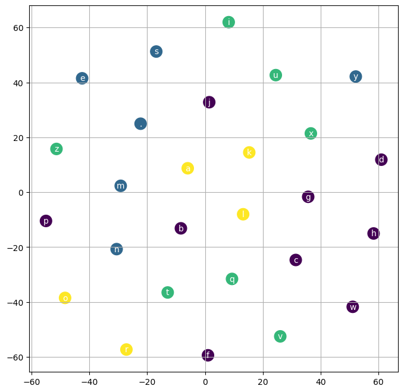

words = open("../data/names.txt", 'r').read().split(); words[:5]
words[:8], len(words)(['emma', 'olivia', 'ava', 'isabella', 'sophia', 'charlotte', 'mia', 'amelia'],
32033)words = open("../data/names.txt", 'r').read().split(); words[:5]
words[:8], len(words)(['emma', 'olivia', 'ava', 'isabella', 'sophia', 'charlotte', 'mia', 'amelia'],
32033)s2i = stoi(words, start_str=".", end_str=".")
i2s = itos(s2i)
display(s2i)
display(i2s){'a': 1,
'b': 2,
'c': 3,
'd': 4,
'e': 5,
'f': 6,
'g': 7,
'h': 8,
'i': 9,
'j': 10,
'k': 11,
'l': 12,
'm': 13,
'n': 14,
'o': 15,
'p': 16,
'q': 17,
'r': 18,
's': 19,
't': 20,
'u': 21,
'v': 22,
'w': 23,
'x': 24,
'y': 25,
'z': 26,
'.': 0}{1: 'a',
2: 'b',
3: 'c',
4: 'd',
5: 'e',
6: 'f',
7: 'g',
8: 'h',
9: 'i',
10: 'j',
11: 'k',
12: 'l',
13: 'm',
14: 'n',
15: 'o',
16: 'p',
17: 'q',
18: 'r',
19: 's',
20: 't',
21: 'u',
22: 'v',
23: 'w',
24: 'x',
25: 'y',
26: 'z',
0: '.'}X, Y = build_XY(words, s2i, block_size=3, verbose=False)
display(X.shape, Y.shape)
n1 = int(0.8*len(X))
n2 = int(0.9*len(X))
Xtr, Ytr = X[:n1], Y[:n1]
Xdev, Ydev = X[n1:n2], Y[n1:n2]
Xte, Yte = X[n2:], Y[n2:]
display(Xtr.shape, Xdev.shape, Xte.shape)torch.Size([228146, 3])torch.Size([228146])torch.Size([182516, 3])torch.Size([22815, 3])torch.Size([22815, 3])vocab_sz = len(i2s); vocab_sz
model = Model(vocab_sz, emb_sz=10, hidden_units=200)
plot_embeddings(model, s2i, emb_model = TSNE(random_state=0, n_iter=1000, perplexity=26), cluster_model=KMeans(n_clusters=4) ); F.cross_entropy(model(X), Y) , model.num_params(), model.hidden_units/opt/homebrew/Caskroom/miniforge/base/envs/aiking/lib/python3.9/site-packages/sklearn/cluster/_kmeans.py:1412: FutureWarning: The default value of `n_init` will change from 10 to 'auto' in 1.4. Set the value of `n_init` explicitly to suppress the warning
super()._check_params_vs_input(X, default_n_init=10)
def weight_decay_scheduler(lrs=[0.1, 0.01], epochs=5):
for i in range(epochs):
if i <= epochs/2:
yield torch.tensor(lrs[0])
else:
yield torch.tensor(lrs[1])
epochs = 200000
# epochs/2
for lr in weight_decay_scheduler():
print(lr)tensor(0.1000)
tensor(0.1000)
tensor(0.1000)
tensor(0.0100)
tensor(0.0100)tracker = {'lr':[], 'batch_sz':[], 'loss':[], 'block_sz':[], 'emb_sz':[], 'hidden_units':[] }train?Signature:
train(
model,
X,
Y,
lr=0.1,
epochs=1000,
verbose=False,
batch_sz=None,
loss_fn=<function cross_entropy at 0x13f12d310>,
tracker=None,
)
Docstring: <no docstring>
File: ~/rahuketu/programming/minion/minion/makemore/mlp.py
Type: functiontrain(model, Xtr, Ytr, lr = weight_decay_scheduler(epochs=200000),epochs=200000, batch_sz=32, tracker=tracker, verbose=True)0 tensor(23.1901, grad_fn=<NllLossBackward0>)
100 tensor(9.0815, grad_fn=<NllLossBackward0>)
200 tensor(5.8802, grad_fn=<NllLossBackward0>)
300 tensor(5.1096, grad_fn=<NllLossBackward0>)
400 tensor(7.2417, grad_fn=<NllLossBackward0>)
500 tensor(4.6860, grad_fn=<NllLossBackward0>)
600 tensor(7.2835, grad_fn=<NllLossBackward0>)
700 tensor(5.3226, grad_fn=<NllLossBackward0>)
800 tensor(3.7588, grad_fn=<NllLossBackward0>)
900 tensor(3.3159, grad_fn=<NllLossBackward0>)
1000 tensor(3.9826, grad_fn=<NllLossBackward0>)
1100 tensor(4.1025, grad_fn=<NllLossBackward0>)
1200 tensor(3.7784, grad_fn=<NllLossBackward0>)
1300 tensor(2.9515, grad_fn=<NllLossBackward0>)
1400 tensor(3.4218, grad_fn=<NllLossBackward0>)
1500 tensor(3.2354, grad_fn=<NllLossBackward0>)
1600 tensor(3.3846, grad_fn=<NllLossBackward0>)
1700 tensor(3.7046, grad_fn=<NllLossBackward0>)
1800 tensor(3.9429, grad_fn=<NllLossBackward0>)
1900 tensor(2.6885, grad_fn=<NllLossBackward0>)
2000 tensor(2.7092, grad_fn=<NllLossBackward0>)
2100 tensor(4.4202, grad_fn=<NllLossBackward0>)
2200 tensor(3.2980, grad_fn=<NllLossBackward0>)
2300 tensor(4.0029, grad_fn=<NllLossBackward0>)
2400 tensor(3.3215, grad_fn=<NllLossBackward0>)
2500 tensor(2.5883, grad_fn=<NllLossBackward0>)
2600 tensor(3.1997, grad_fn=<NllLossBackward0>)
2700 tensor(2.9113, grad_fn=<NllLossBackward0>)
2800 tensor(3.0399, grad_fn=<NllLossBackward0>)
2900 tensor(2.6383, grad_fn=<NllLossBackward0>)
3000 tensor(3.0596, grad_fn=<NllLossBackward0>)
3100 tensor(3.0109, grad_fn=<NllLossBackward0>)
3200 tensor(3.0007, grad_fn=<NllLossBackward0>)
3300 tensor(3.7366, grad_fn=<NllLossBackward0>)
3400 tensor(3.7740, grad_fn=<NllLossBackward0>)
3500 tensor(2.8883, grad_fn=<NllLossBackward0>)
3600 tensor(2.9196, grad_fn=<NllLossBackward0>)
3700 tensor(2.6823, grad_fn=<NllLossBackward0>)
3800 tensor(2.6547, grad_fn=<NllLossBackward0>)
3900 tensor(2.7171, grad_fn=<NllLossBackward0>)
4000 tensor(2.8779, grad_fn=<NllLossBackward0>)
4100 tensor(2.5281, grad_fn=<NllLossBackward0>)
4200 tensor(3.0121, grad_fn=<NllLossBackward0>)
4300 tensor(2.7422, grad_fn=<NllLossBackward0>)
4400 tensor(2.6213, grad_fn=<NllLossBackward0>)
4500 tensor(2.7892, grad_fn=<NllLossBackward0>)
4600 tensor(2.2983, grad_fn=<NllLossBackward0>)
4700 tensor(2.1339, grad_fn=<NllLossBackward0>)
4800 tensor(2.2629, grad_fn=<NllLossBackward0>)
4900 tensor(2.3292, grad_fn=<NllLossBackward0>)
5000 tensor(3.2794, grad_fn=<NllLossBackward0>)
5100 tensor(2.5150, grad_fn=<NllLossBackward0>)
5200 tensor(2.9994, grad_fn=<NllLossBackward0>)
5300 tensor(2.5220, grad_fn=<NllLossBackward0>)
5400 tensor(2.4995, grad_fn=<NllLossBackward0>)
5500 tensor(2.4987, grad_fn=<NllLossBackward0>)
5600 tensor(2.5472, grad_fn=<NllLossBackward0>)
5700 tensor(3.1426, grad_fn=<NllLossBackward0>)
5800 tensor(3.1785, grad_fn=<NllLossBackward0>)
5900 tensor(2.3689, grad_fn=<NllLossBackward0>)
6000 tensor(3.5011, grad_fn=<NllLossBackward0>)
6100 tensor(3.2069, grad_fn=<NllLossBackward0>)
6200 tensor(2.9753, grad_fn=<NllLossBackward0>)
6300 tensor(2.2583, grad_fn=<NllLossBackward0>)
6400 tensor(2.5882, grad_fn=<NllLossBackward0>)
6500 tensor(2.4821, grad_fn=<NllLossBackward0>)
6600 tensor(2.2513, grad_fn=<NllLossBackward0>)
6700 tensor(2.8567, grad_fn=<NllLossBackward0>)
6800 tensor(2.3739, grad_fn=<NllLossBackward0>)
6900 tensor(2.3399, grad_fn=<NllLossBackward0>)
7000 tensor(2.2839, grad_fn=<NllLossBackward0>)
7100 tensor(2.3892, grad_fn=<NllLossBackward0>)
7200 tensor(2.3236, grad_fn=<NllLossBackward0>)
7300 tensor(2.5511, grad_fn=<NllLossBackward0>)
7400 tensor(2.7749, grad_fn=<NllLossBackward0>)
7500 tensor(2.9762, grad_fn=<NllLossBackward0>)
7600 tensor(2.9773, grad_fn=<NllLossBackward0>)
7700 tensor(2.7657, grad_fn=<NllLossBackward0>)
7800 tensor(3.0748, grad_fn=<NllLossBackward0>)
7900 tensor(2.8478, grad_fn=<NllLossBackward0>)
8000 tensor(2.2543, grad_fn=<NllLossBackward0>)
8100 tensor(2.2755, grad_fn=<NllLossBackward0>)
8200 tensor(2.7139, grad_fn=<NllLossBackward0>)
8300 tensor(1.9855, grad_fn=<NllLossBackward0>)
8400 tensor(2.3402, grad_fn=<NllLossBackward0>)
8500 tensor(3.8158, grad_fn=<NllLossBackward0>)
8600 tensor(2.3313, grad_fn=<NllLossBackward0>)
8700 tensor(2.6724, grad_fn=<NllLossBackward0>)
8800 tensor(2.3422, grad_fn=<NllLossBackward0>)
8900 tensor(3.0346, grad_fn=<NllLossBackward0>)
9000 tensor(2.4262, grad_fn=<NllLossBackward0>)
9100 tensor(2.6631, grad_fn=<NllLossBackward0>)
9200 tensor(2.3589, grad_fn=<NllLossBackward0>)
9300 tensor(2.3590, grad_fn=<NllLossBackward0>)
9400 tensor(2.7541, grad_fn=<NllLossBackward0>)
9500 tensor(2.2957, grad_fn=<NllLossBackward0>)
9600 tensor(2.3549, grad_fn=<NllLossBackward0>)
9700 tensor(2.8385, grad_fn=<NllLossBackward0>)
9800 tensor(2.2554, grad_fn=<NllLossBackward0>)
9900 tensor(2.6718, grad_fn=<NllLossBackward0>)
10000 tensor(2.2098, grad_fn=<NllLossBackward0>)
10100 tensor(2.5124, grad_fn=<NllLossBackward0>)
10200 tensor(2.4366, grad_fn=<NllLossBackward0>)
10300 tensor(3.0030, grad_fn=<NllLossBackward0>)
10400 tensor(2.7291, grad_fn=<NllLossBackward0>)
10500 tensor(1.9903, grad_fn=<NllLossBackward0>)
10600 tensor(2.9689, grad_fn=<NllLossBackward0>)
10700 tensor(2.4827, grad_fn=<NllLossBackward0>)
10800 tensor(2.9887, grad_fn=<NllLossBackward0>)
10900 tensor(2.6236, grad_fn=<NllLossBackward0>)
11000 tensor(3.1269, grad_fn=<NllLossBackward0>)
11100 tensor(2.0564, grad_fn=<NllLossBackward0>)
11200 tensor(2.3068, grad_fn=<NllLossBackward0>)
11300 tensor(2.5676, grad_fn=<NllLossBackward0>)
11400 tensor(2.3598, grad_fn=<NllLossBackward0>)
11500 tensor(3.0183, grad_fn=<NllLossBackward0>)
11600 tensor(2.6603, grad_fn=<NllLossBackward0>)
11700 tensor(2.6882, grad_fn=<NllLossBackward0>)
11800 tensor(3.3350, grad_fn=<NllLossBackward0>)
11900 tensor(2.3564, grad_fn=<NllLossBackward0>)
12000 tensor(2.6475, grad_fn=<NllLossBackward0>)
12100 tensor(2.4800, grad_fn=<NllLossBackward0>)
12200 tensor(2.3673, grad_fn=<NllLossBackward0>)
12300 tensor(2.0629, grad_fn=<NllLossBackward0>)
12400 tensor(2.3715, grad_fn=<NllLossBackward0>)
12500 tensor(2.3634, grad_fn=<NllLossBackward0>)
12600 tensor(2.7283, grad_fn=<NllLossBackward0>)
12700 tensor(2.5023, grad_fn=<NllLossBackward0>)
12800 tensor(3.4307, grad_fn=<NllLossBackward0>)
12900 tensor(2.7121, grad_fn=<NllLossBackward0>)
13000 tensor(2.6550, grad_fn=<NllLossBackward0>)
13100 tensor(2.8195, grad_fn=<NllLossBackward0>)
13200 tensor(2.2431, grad_fn=<NllLossBackward0>)
13300 tensor(3.2382, grad_fn=<NllLossBackward0>)
13400 tensor(2.6212, grad_fn=<NllLossBackward0>)
13500 tensor(3.2271, grad_fn=<NllLossBackward0>)
13600 tensor(2.4727, grad_fn=<NllLossBackward0>)
13700 tensor(2.4661, grad_fn=<NllLossBackward0>)
13800 tensor(2.3731, grad_fn=<NllLossBackward0>)
13900 tensor(2.3285, grad_fn=<NllLossBackward0>)
14000 tensor(2.4602, grad_fn=<NllLossBackward0>)
14100 tensor(2.2777, grad_fn=<NllLossBackward0>)
14200 tensor(2.5086, grad_fn=<NllLossBackward0>)
14300 tensor(2.1159, grad_fn=<NllLossBackward0>)
14400 tensor(2.6729, grad_fn=<NllLossBackward0>)
14500 tensor(2.4968, grad_fn=<NllLossBackward0>)
14600 tensor(2.4676, grad_fn=<NllLossBackward0>)
14700 tensor(3.0234, grad_fn=<NllLossBackward0>)
14800 tensor(2.3302, grad_fn=<NllLossBackward0>)
14900 tensor(3.1475, grad_fn=<NllLossBackward0>)
15000 tensor(2.4341, grad_fn=<NllLossBackward0>)
15100 tensor(2.5019, grad_fn=<NllLossBackward0>)
15200 tensor(2.7795, grad_fn=<NllLossBackward0>)
15300 tensor(2.7818, grad_fn=<NllLossBackward0>)
15400 tensor(2.5132, grad_fn=<NllLossBackward0>)
15500 tensor(2.4133, grad_fn=<NllLossBackward0>)
15600 tensor(2.5921, grad_fn=<NllLossBackward0>)
15700 tensor(2.4368, grad_fn=<NllLossBackward0>)
15800 tensor(2.3894, grad_fn=<NllLossBackward0>)
15900 tensor(2.2274, grad_fn=<NllLossBackward0>)
16000 tensor(2.4876, grad_fn=<NllLossBackward0>)
16100 tensor(2.5857, grad_fn=<NllLossBackward0>)
16200 tensor(2.0799, grad_fn=<NllLossBackward0>)
16300 tensor(2.5981, grad_fn=<NllLossBackward0>)
16400 tensor(2.0059, grad_fn=<NllLossBackward0>)
16500 tensor(2.3586, grad_fn=<NllLossBackward0>)
16600 tensor(2.4264, grad_fn=<NllLossBackward0>)
16700 tensor(2.4298, grad_fn=<NllLossBackward0>)
16800 tensor(2.4752, grad_fn=<NllLossBackward0>)
16900 tensor(2.0933, grad_fn=<NllLossBackward0>)
17000 tensor(2.3881, grad_fn=<NllLossBackward0>)
17100 tensor(2.4223, grad_fn=<NllLossBackward0>)
17200 tensor(2.7514, grad_fn=<NllLossBackward0>)
17300 tensor(2.8801, grad_fn=<NllLossBackward0>)
17400 tensor(3.0277, grad_fn=<NllLossBackward0>)
17500 tensor(2.4092, grad_fn=<NllLossBackward0>)
17600 tensor(2.2081, grad_fn=<NllLossBackward0>)
17700 tensor(2.2706, grad_fn=<NllLossBackward0>)
17800 tensor(2.3237, grad_fn=<NllLossBackward0>)
17900 tensor(2.4046, grad_fn=<NllLossBackward0>)
18000 tensor(2.4327, grad_fn=<NllLossBackward0>)
18100 tensor(2.6174, grad_fn=<NllLossBackward0>)
18200 tensor(2.1799, grad_fn=<NllLossBackward0>)
18300 tensor(1.9591, grad_fn=<NllLossBackward0>)
18400 tensor(2.4293, grad_fn=<NllLossBackward0>)
18500 tensor(2.4244, grad_fn=<NllLossBackward0>)
18600 tensor(2.1732, grad_fn=<NllLossBackward0>)
18700 tensor(2.3254, grad_fn=<NllLossBackward0>)
18800 tensor(2.3013, grad_fn=<NllLossBackward0>)
18900 tensor(2.5206, grad_fn=<NllLossBackward0>)
19000 tensor(2.1151, grad_fn=<NllLossBackward0>)
19100 tensor(2.9072, grad_fn=<NllLossBackward0>)
19200 tensor(2.6049, grad_fn=<NllLossBackward0>)
19300 tensor(2.4513, grad_fn=<NllLossBackward0>)
19400 tensor(2.4751, grad_fn=<NllLossBackward0>)
19500 tensor(2.1351, grad_fn=<NllLossBackward0>)
19600 tensor(2.3667, grad_fn=<NllLossBackward0>)
19700 tensor(2.2709, grad_fn=<NllLossBackward0>)
19800 tensor(2.9979, grad_fn=<NllLossBackward0>)
19900 tensor(2.1289, grad_fn=<NllLossBackward0>)
20000 tensor(2.3997, grad_fn=<NllLossBackward0>)
20100 tensor(2.0601, grad_fn=<NllLossBackward0>)
20200 tensor(2.4679, grad_fn=<NllLossBackward0>)
20300 tensor(2.9683, grad_fn=<NllLossBackward0>)
20400 tensor(2.3419, grad_fn=<NllLossBackward0>)
20500 tensor(2.3366, grad_fn=<NllLossBackward0>)
20600 tensor(2.7139, grad_fn=<NllLossBackward0>)
20700 tensor(2.4330, grad_fn=<NllLossBackward0>)
20800 tensor(2.4361, grad_fn=<NllLossBackward0>)
20900 tensor(2.7027, grad_fn=<NllLossBackward0>)
21000 tensor(2.7307, grad_fn=<NllLossBackward0>)
21100 tensor(2.8911, grad_fn=<NllLossBackward0>)
21200 tensor(2.3785, grad_fn=<NllLossBackward0>)
21300 tensor(1.9881, grad_fn=<NllLossBackward0>)
21400 tensor(2.3612, grad_fn=<NllLossBackward0>)
21500 tensor(2.1223, grad_fn=<NllLossBackward0>)
21600 tensor(3.0199, grad_fn=<NllLossBackward0>)
21700 tensor(2.4705, grad_fn=<NllLossBackward0>)
21800 tensor(2.3127, grad_fn=<NllLossBackward0>)
21900 tensor(2.2454, grad_fn=<NllLossBackward0>)
22000 tensor(2.3710, grad_fn=<NllLossBackward0>)
22100 tensor(2.2387, grad_fn=<NllLossBackward0>)
22200 tensor(2.4684, grad_fn=<NllLossBackward0>)
22300 tensor(2.6871, grad_fn=<NllLossBackward0>)
22400 tensor(2.1750, grad_fn=<NllLossBackward0>)
22500 tensor(3.2196, grad_fn=<NllLossBackward0>)
22600 tensor(2.1873, grad_fn=<NllLossBackward0>)
22700 tensor(2.2551, grad_fn=<NllLossBackward0>)
22800 tensor(2.4936, grad_fn=<NllLossBackward0>)
22900 tensor(2.3907, grad_fn=<NllLossBackward0>)
23000 tensor(2.3026, grad_fn=<NllLossBackward0>)
23100 tensor(2.1204, grad_fn=<NllLossBackward0>)
23200 tensor(2.8078, grad_fn=<NllLossBackward0>)
23300 tensor(2.0827, grad_fn=<NllLossBackward0>)
23400 tensor(2.2889, grad_fn=<NllLossBackward0>)
23500 tensor(2.3298, grad_fn=<NllLossBackward0>)
23600 tensor(2.4848, grad_fn=<NllLossBackward0>)
23700 tensor(2.5591, grad_fn=<NllLossBackward0>)
23800 tensor(1.8529, grad_fn=<NllLossBackward0>)
23900 tensor(2.3494, grad_fn=<NllLossBackward0>)
24000 tensor(2.0222, grad_fn=<NllLossBackward0>)
24100 tensor(2.0016, grad_fn=<NllLossBackward0>)
24200 tensor(2.1334, grad_fn=<NllLossBackward0>)
24300 tensor(2.0088, grad_fn=<NllLossBackward0>)
24400 tensor(2.3679, grad_fn=<NllLossBackward0>)
24500 tensor(2.5788, grad_fn=<NllLossBackward0>)
24600 tensor(2.0313, grad_fn=<NllLossBackward0>)
24700 tensor(2.8603, grad_fn=<NllLossBackward0>)
24800 tensor(2.1457, grad_fn=<NllLossBackward0>)
24900 tensor(1.8712, grad_fn=<NllLossBackward0>)
25000 tensor(2.7490, grad_fn=<NllLossBackward0>)
25100 tensor(2.1233, grad_fn=<NllLossBackward0>)
25200 tensor(2.3670, grad_fn=<NllLossBackward0>)
25300 tensor(2.6269, grad_fn=<NllLossBackward0>)
25400 tensor(2.4011, grad_fn=<NllLossBackward0>)
25500 tensor(3.1574, grad_fn=<NllLossBackward0>)
25600 tensor(2.4918, grad_fn=<NllLossBackward0>)
25700 tensor(2.0745, grad_fn=<NllLossBackward0>)
25800 tensor(2.0828, grad_fn=<NllLossBackward0>)
25900 tensor(2.5606, grad_fn=<NllLossBackward0>)
26000 tensor(2.5311, grad_fn=<NllLossBackward0>)
26100 tensor(2.8650, grad_fn=<NllLossBackward0>)
26200 tensor(2.1442, grad_fn=<NllLossBackward0>)
26300 tensor(2.1475, grad_fn=<NllLossBackward0>)
26400 tensor(2.0529, grad_fn=<NllLossBackward0>)
26500 tensor(2.1737, grad_fn=<NllLossBackward0>)
26600 tensor(2.1642, grad_fn=<NllLossBackward0>)
26700 tensor(2.7448, grad_fn=<NllLossBackward0>)
26800 tensor(2.6026, grad_fn=<NllLossBackward0>)
26900 tensor(2.5108, grad_fn=<NllLossBackward0>)
27000 tensor(2.0790, grad_fn=<NllLossBackward0>)
27100 tensor(2.5286, grad_fn=<NllLossBackward0>)
27200 tensor(2.2216, grad_fn=<NllLossBackward0>)
27300 tensor(2.1512, grad_fn=<NllLossBackward0>)
27400 tensor(2.4419, grad_fn=<NllLossBackward0>)
27500 tensor(2.1889, grad_fn=<NllLossBackward0>)
27600 tensor(2.7344, grad_fn=<NllLossBackward0>)
27700 tensor(2.3163, grad_fn=<NllLossBackward0>)
27800 tensor(2.3022, grad_fn=<NllLossBackward0>)
27900 tensor(1.9052, grad_fn=<NllLossBackward0>)
28000 tensor(2.3679, grad_fn=<NllLossBackward0>)
28100 tensor(1.6878, grad_fn=<NllLossBackward0>)
28200 tensor(2.5123, grad_fn=<NllLossBackward0>)
28300 tensor(1.9603, grad_fn=<NllLossBackward0>)
28400 tensor(2.2500, grad_fn=<NllLossBackward0>)
28500 tensor(2.1860, grad_fn=<NllLossBackward0>)
28600 tensor(1.6792, grad_fn=<NllLossBackward0>)
28700 tensor(2.4335, grad_fn=<NllLossBackward0>)
28800 tensor(2.5435, grad_fn=<NllLossBackward0>)
28900 tensor(2.5976, grad_fn=<NllLossBackward0>)
29000 tensor(2.7642, grad_fn=<NllLossBackward0>)
29100 tensor(2.4254, grad_fn=<NllLossBackward0>)
29200 tensor(2.1304, grad_fn=<NllLossBackward0>)
29300 tensor(2.8402, grad_fn=<NllLossBackward0>)
29400 tensor(2.5227, grad_fn=<NllLossBackward0>)
29500 tensor(2.1990, grad_fn=<NllLossBackward0>)
29600 tensor(2.1899, grad_fn=<NllLossBackward0>)
29700 tensor(2.0936, grad_fn=<NllLossBackward0>)
29800 tensor(2.1036, grad_fn=<NllLossBackward0>)
29900 tensor(2.0153, grad_fn=<NllLossBackward0>)
30000 tensor(2.8010, grad_fn=<NllLossBackward0>)
30100 tensor(2.5958, grad_fn=<NllLossBackward0>)
30200 tensor(2.0483, grad_fn=<NllLossBackward0>)
30300 tensor(2.3552, grad_fn=<NllLossBackward0>)
30400 tensor(3.0513, grad_fn=<NllLossBackward0>)
30500 tensor(2.5828, grad_fn=<NllLossBackward0>)
30600 tensor(2.6848, grad_fn=<NllLossBackward0>)
30700 tensor(2.5626, grad_fn=<NllLossBackward0>)
30800 tensor(2.4206, grad_fn=<NllLossBackward0>)
30900 tensor(2.6211, grad_fn=<NllLossBackward0>)
31000 tensor(2.5415, grad_fn=<NllLossBackward0>)
31100 tensor(2.6216, grad_fn=<NllLossBackward0>)
31200 tensor(2.2360, grad_fn=<NllLossBackward0>)
31300 tensor(2.4847, grad_fn=<NllLossBackward0>)
31400 tensor(2.4065, grad_fn=<NllLossBackward0>)
31500 tensor(2.6332, grad_fn=<NllLossBackward0>)
31600 tensor(2.1862, grad_fn=<NllLossBackward0>)
31700 tensor(2.8682, grad_fn=<NllLossBackward0>)
31800 tensor(2.2330, grad_fn=<NllLossBackward0>)
31900 tensor(2.3218, grad_fn=<NllLossBackward0>)
32000 tensor(2.3573, grad_fn=<NllLossBackward0>)
32100 tensor(2.5700, grad_fn=<NllLossBackward0>)
32200 tensor(2.4254, grad_fn=<NllLossBackward0>)
32300 tensor(2.4009, grad_fn=<NllLossBackward0>)
32400 tensor(2.2928, grad_fn=<NllLossBackward0>)
32500 tensor(2.4180, grad_fn=<NllLossBackward0>)
32600 tensor(2.5055, grad_fn=<NllLossBackward0>)
32700 tensor(2.9586, grad_fn=<NllLossBackward0>)
32800 tensor(2.2839, grad_fn=<NllLossBackward0>)
32900 tensor(2.3776, grad_fn=<NllLossBackward0>)
33000 tensor(2.4913, grad_fn=<NllLossBackward0>)
33100 tensor(1.9020, grad_fn=<NllLossBackward0>)
33200 tensor(2.6251, grad_fn=<NllLossBackward0>)
33300 tensor(2.1269, grad_fn=<NllLossBackward0>)
33400 tensor(2.3287, grad_fn=<NllLossBackward0>)
33500 tensor(2.6157, grad_fn=<NllLossBackward0>)
33600 tensor(2.1612, grad_fn=<NllLossBackward0>)
33700 tensor(2.5251, grad_fn=<NllLossBackward0>)
33800 tensor(2.2376, grad_fn=<NllLossBackward0>)
33900 tensor(2.3926, grad_fn=<NllLossBackward0>)
34000 tensor(2.5086, grad_fn=<NllLossBackward0>)
34100 tensor(2.2098, grad_fn=<NllLossBackward0>)
34200 tensor(1.7330, grad_fn=<NllLossBackward0>)
34300 tensor(2.3624, grad_fn=<NllLossBackward0>)
34400 tensor(2.5943, grad_fn=<NllLossBackward0>)
34500 tensor(2.5427, grad_fn=<NllLossBackward0>)
34600 tensor(2.0691, grad_fn=<NllLossBackward0>)
34700 tensor(2.2544, grad_fn=<NllLossBackward0>)
34800 tensor(2.5592, grad_fn=<NllLossBackward0>)
34900 tensor(2.3952, grad_fn=<NllLossBackward0>)
35000 tensor(2.0993, grad_fn=<NllLossBackward0>)
35100 tensor(2.2580, grad_fn=<NllLossBackward0>)
35200 tensor(2.9150, grad_fn=<NllLossBackward0>)
35300 tensor(2.2763, grad_fn=<NllLossBackward0>)
35400 tensor(2.0061, grad_fn=<NllLossBackward0>)
35500 tensor(2.6550, grad_fn=<NllLossBackward0>)
35600 tensor(2.4041, grad_fn=<NllLossBackward0>)
35700 tensor(2.2195, grad_fn=<NllLossBackward0>)
35800 tensor(2.3055, grad_fn=<NllLossBackward0>)
35900 tensor(2.6903, grad_fn=<NllLossBackward0>)
36000 tensor(2.3976, grad_fn=<NllLossBackward0>)
36100 tensor(2.3678, grad_fn=<NllLossBackward0>)
36200 tensor(2.2253, grad_fn=<NllLossBackward0>)
36300 tensor(2.6100, grad_fn=<NllLossBackward0>)
36400 tensor(1.7657, grad_fn=<NllLossBackward0>)
36500 tensor(2.2911, grad_fn=<NllLossBackward0>)
36600 tensor(2.5935, grad_fn=<NllLossBackward0>)
36700 tensor(2.4633, grad_fn=<NllLossBackward0>)
36800 tensor(2.4623, grad_fn=<NllLossBackward0>)
36900 tensor(2.6886, grad_fn=<NllLossBackward0>)
37000 tensor(1.7106, grad_fn=<NllLossBackward0>)
37100 tensor(2.7502, grad_fn=<NllLossBackward0>)
37200 tensor(2.5872, grad_fn=<NllLossBackward0>)
37300 tensor(2.1056, grad_fn=<NllLossBackward0>)
37400 tensor(3.0556, grad_fn=<NllLossBackward0>)
37500 tensor(2.2122, grad_fn=<NllLossBackward0>)
37600 tensor(2.6805, grad_fn=<NllLossBackward0>)
37700 tensor(2.7483, grad_fn=<NllLossBackward0>)
37800 tensor(1.9075, grad_fn=<NllLossBackward0>)
37900 tensor(2.3646, grad_fn=<NllLossBackward0>)
38000 tensor(2.1243, grad_fn=<NllLossBackward0>)
38100 tensor(2.8794, grad_fn=<NllLossBackward0>)
38200 tensor(2.5322, grad_fn=<NllLossBackward0>)
38300 tensor(2.1893, grad_fn=<NllLossBackward0>)
38400 tensor(2.3067, grad_fn=<NllLossBackward0>)
38500 tensor(2.0867, grad_fn=<NllLossBackward0>)
38600 tensor(1.8675, grad_fn=<NllLossBackward0>)
38700 tensor(1.6695, grad_fn=<NllLossBackward0>)
38800 tensor(2.4767, grad_fn=<NllLossBackward0>)
38900 tensor(2.0267, grad_fn=<NllLossBackward0>)
39000 tensor(2.8166, grad_fn=<NllLossBackward0>)
39100 tensor(2.2487, grad_fn=<NllLossBackward0>)
39200 tensor(2.5441, grad_fn=<NllLossBackward0>)
39300 tensor(2.3084, grad_fn=<NllLossBackward0>)
39400 tensor(1.8320, grad_fn=<NllLossBackward0>)
39500 tensor(2.0199, grad_fn=<NllLossBackward0>)
39600 tensor(2.1231, grad_fn=<NllLossBackward0>)
39700 tensor(2.2268, grad_fn=<NllLossBackward0>)
39800 tensor(1.8656, grad_fn=<NllLossBackward0>)
39900 tensor(2.0795, grad_fn=<NllLossBackward0>)
40000 tensor(2.0717, grad_fn=<NllLossBackward0>)
40100 tensor(1.8453, grad_fn=<NllLossBackward0>)
40200 tensor(2.6509, grad_fn=<NllLossBackward0>)
40300 tensor(2.3100, grad_fn=<NllLossBackward0>)
40400 tensor(2.1454, grad_fn=<NllLossBackward0>)
40500 tensor(2.0614, grad_fn=<NllLossBackward0>)
40600 tensor(1.9580, grad_fn=<NllLossBackward0>)
40700 tensor(2.2645, grad_fn=<NllLossBackward0>)
40800 tensor(2.3276, grad_fn=<NllLossBackward0>)
40900 tensor(2.2411, grad_fn=<NllLossBackward0>)
41000 tensor(3.1332, grad_fn=<NllLossBackward0>)
41100 tensor(2.5472, grad_fn=<NllLossBackward0>)
41200 tensor(2.8628, grad_fn=<NllLossBackward0>)
41300 tensor(2.1725, grad_fn=<NllLossBackward0>)
41400 tensor(2.3087, grad_fn=<NllLossBackward0>)
41500 tensor(2.3073, grad_fn=<NllLossBackward0>)
41600 tensor(2.0922, grad_fn=<NllLossBackward0>)
41700 tensor(1.9956, grad_fn=<NllLossBackward0>)
41800 tensor(2.2286, grad_fn=<NllLossBackward0>)
41900 tensor(2.1726, grad_fn=<NllLossBackward0>)
42000 tensor(1.8686, grad_fn=<NllLossBackward0>)
42100 tensor(2.6687, grad_fn=<NllLossBackward0>)
42200 tensor(2.4663, grad_fn=<NllLossBackward0>)
42300 tensor(1.8992, grad_fn=<NllLossBackward0>)
42400 tensor(2.4110, grad_fn=<NllLossBackward0>)
42500 tensor(2.2169, grad_fn=<NllLossBackward0>)
42600 tensor(2.5186, grad_fn=<NllLossBackward0>)
42700 tensor(2.1358, grad_fn=<NllLossBackward0>)
42800 tensor(2.5514, grad_fn=<NllLossBackward0>)
42900 tensor(2.2485, grad_fn=<NllLossBackward0>)
43000 tensor(2.0269, grad_fn=<NllLossBackward0>)
43100 tensor(2.0678, grad_fn=<NllLossBackward0>)
43200 tensor(2.5708, grad_fn=<NllLossBackward0>)
43300 tensor(2.4254, grad_fn=<NllLossBackward0>)
43400 tensor(2.5248, grad_fn=<NllLossBackward0>)
43500 tensor(2.7285, grad_fn=<NllLossBackward0>)
43600 tensor(2.8190, grad_fn=<NllLossBackward0>)
43700 tensor(2.2149, grad_fn=<NllLossBackward0>)
43800 tensor(1.9216, grad_fn=<NllLossBackward0>)
43900 tensor(2.1337, grad_fn=<NllLossBackward0>)
44000 tensor(2.3968, grad_fn=<NllLossBackward0>)
44100 tensor(2.8400, grad_fn=<NllLossBackward0>)
44200 tensor(2.0567, grad_fn=<NllLossBackward0>)
44300 tensor(2.2135, grad_fn=<NllLossBackward0>)
44400 tensor(2.4840, grad_fn=<NllLossBackward0>)
44500 tensor(2.1058, grad_fn=<NllLossBackward0>)
44600 tensor(1.9816, grad_fn=<NllLossBackward0>)
44700 tensor(2.7462, grad_fn=<NllLossBackward0>)
44800 tensor(2.2503, grad_fn=<NllLossBackward0>)
44900 tensor(2.7318, grad_fn=<NllLossBackward0>)
45000 tensor(2.2511, grad_fn=<NllLossBackward0>)
45100 tensor(2.8043, grad_fn=<NllLossBackward0>)
45200 tensor(2.5435, grad_fn=<NllLossBackward0>)
45300 tensor(2.6609, grad_fn=<NllLossBackward0>)
45400 tensor(2.1001, grad_fn=<NllLossBackward0>)
45500 tensor(2.1125, grad_fn=<NllLossBackward0>)
45600 tensor(2.1498, grad_fn=<NllLossBackward0>)
45700 tensor(2.1697, grad_fn=<NllLossBackward0>)
45800 tensor(2.4705, grad_fn=<NllLossBackward0>)
45900 tensor(2.5619, grad_fn=<NllLossBackward0>)
46000 tensor(2.7098, grad_fn=<NllLossBackward0>)
46100 tensor(2.8779, grad_fn=<NllLossBackward0>)
46200 tensor(2.1001, grad_fn=<NllLossBackward0>)
46300 tensor(2.0503, grad_fn=<NllLossBackward0>)
46400 tensor(1.9550, grad_fn=<NllLossBackward0>)
46500 tensor(1.9640, grad_fn=<NllLossBackward0>)
46600 tensor(2.4423, grad_fn=<NllLossBackward0>)
46700 tensor(2.6140, grad_fn=<NllLossBackward0>)
46800 tensor(2.2119, grad_fn=<NllLossBackward0>)
46900 tensor(2.0967, grad_fn=<NllLossBackward0>)
47000 tensor(2.4343, grad_fn=<NllLossBackward0>)
47100 tensor(2.1938, grad_fn=<NllLossBackward0>)
47200 tensor(2.1929, grad_fn=<NllLossBackward0>)
47300 tensor(1.9122, grad_fn=<NllLossBackward0>)
47400 tensor(2.2064, grad_fn=<NllLossBackward0>)
47500 tensor(2.1277, grad_fn=<NllLossBackward0>)
47600 tensor(1.9580, grad_fn=<NllLossBackward0>)
47700 tensor(2.2598, grad_fn=<NllLossBackward0>)
47800 tensor(2.1736, grad_fn=<NllLossBackward0>)
47900 tensor(2.4682, grad_fn=<NllLossBackward0>)
48000 tensor(3.0958, grad_fn=<NllLossBackward0>)
48100 tensor(1.8743, grad_fn=<NllLossBackward0>)
48200 tensor(2.3828, grad_fn=<NllLossBackward0>)
48300 tensor(2.4482, grad_fn=<NllLossBackward0>)
48400 tensor(2.3547, grad_fn=<NllLossBackward0>)
48500 tensor(1.8440, grad_fn=<NllLossBackward0>)
48600 tensor(1.7979, grad_fn=<NllLossBackward0>)
48700 tensor(2.2325, grad_fn=<NllLossBackward0>)
48800 tensor(2.1972, grad_fn=<NllLossBackward0>)
48900 tensor(2.4125, grad_fn=<NllLossBackward0>)
49000 tensor(1.9556, grad_fn=<NllLossBackward0>)
49100 tensor(2.2006, grad_fn=<NllLossBackward0>)
49200 tensor(2.4520, grad_fn=<NllLossBackward0>)
49300 tensor(1.9432, grad_fn=<NllLossBackward0>)
49400 tensor(2.0897, grad_fn=<NllLossBackward0>)
49500 tensor(2.2811, grad_fn=<NllLossBackward0>)
49600 tensor(2.2029, grad_fn=<NllLossBackward0>)
49700 tensor(2.0222, grad_fn=<NllLossBackward0>)
49800 tensor(2.4491, grad_fn=<NllLossBackward0>)
49900 tensor(1.8464, grad_fn=<NllLossBackward0>)
50000 tensor(2.2512, grad_fn=<NllLossBackward0>)
50100 tensor(2.4245, grad_fn=<NllLossBackward0>)
50200 tensor(2.4930, grad_fn=<NllLossBackward0>)
50300 tensor(2.8039, grad_fn=<NllLossBackward0>)
50400 tensor(2.0206, grad_fn=<NllLossBackward0>)
50500 tensor(2.3194, grad_fn=<NllLossBackward0>)
50600 tensor(2.2859, grad_fn=<NllLossBackward0>)
50700 tensor(2.0929, grad_fn=<NllLossBackward0>)
50800 tensor(2.0889, grad_fn=<NllLossBackward0>)
50900 tensor(2.3903, grad_fn=<NllLossBackward0>)
51000 tensor(2.2218, grad_fn=<NllLossBackward0>)
51100 tensor(2.6503, grad_fn=<NllLossBackward0>)
51200 tensor(1.8989, grad_fn=<NllLossBackward0>)
51300 tensor(2.0668, grad_fn=<NllLossBackward0>)
51400 tensor(2.2305, grad_fn=<NllLossBackward0>)
51500 tensor(2.4140, grad_fn=<NllLossBackward0>)
51600 tensor(2.8070, grad_fn=<NllLossBackward0>)
51700 tensor(1.9402, grad_fn=<NllLossBackward0>)
51800 tensor(2.0617, grad_fn=<NllLossBackward0>)
51900 tensor(2.2394, grad_fn=<NllLossBackward0>)
52000 tensor(1.8985, grad_fn=<NllLossBackward0>)
52100 tensor(1.9025, grad_fn=<NllLossBackward0>)
52200 tensor(2.0916, grad_fn=<NllLossBackward0>)
52300 tensor(2.0459, grad_fn=<NllLossBackward0>)
52400 tensor(2.7603, grad_fn=<NllLossBackward0>)
52500 tensor(2.0915, grad_fn=<NllLossBackward0>)
52600 tensor(2.3991, grad_fn=<NllLossBackward0>)
52700 tensor(2.0529, grad_fn=<NllLossBackward0>)
52800 tensor(1.9958, grad_fn=<NllLossBackward0>)
52900 tensor(2.2912, grad_fn=<NllLossBackward0>)
53000 tensor(2.0180, grad_fn=<NllLossBackward0>)
53100 tensor(2.5193, grad_fn=<NllLossBackward0>)
53200 tensor(2.2132, grad_fn=<NllLossBackward0>)
53300 tensor(2.2297, grad_fn=<NllLossBackward0>)
53400 tensor(2.1843, grad_fn=<NllLossBackward0>)
53500 tensor(2.2878, grad_fn=<NllLossBackward0>)
53600 tensor(2.5941, grad_fn=<NllLossBackward0>)
53700 tensor(2.3114, grad_fn=<NllLossBackward0>)
53800 tensor(2.5722, grad_fn=<NllLossBackward0>)
53900 tensor(2.9402, grad_fn=<NllLossBackward0>)
54000 tensor(2.1755, grad_fn=<NllLossBackward0>)
54100 tensor(2.1281, grad_fn=<NllLossBackward0>)
54200 tensor(1.8326, grad_fn=<NllLossBackward0>)
54300 tensor(2.1159, grad_fn=<NllLossBackward0>)
54400 tensor(2.2134, grad_fn=<NllLossBackward0>)
54500 tensor(2.2593, grad_fn=<NllLossBackward0>)
54600 tensor(2.8480, grad_fn=<NllLossBackward0>)
54700 tensor(2.0915, grad_fn=<NllLossBackward0>)
54800 tensor(1.9229, grad_fn=<NllLossBackward0>)
54900 tensor(2.5905, grad_fn=<NllLossBackward0>)
55000 tensor(2.3562, grad_fn=<NllLossBackward0>)
55100 tensor(2.5203, grad_fn=<NllLossBackward0>)
55200 tensor(2.0359, grad_fn=<NllLossBackward0>)
55300 tensor(2.2182, grad_fn=<NllLossBackward0>)
55400 tensor(1.6602, grad_fn=<NllLossBackward0>)
55500 tensor(3.0262, grad_fn=<NllLossBackward0>)
55600 tensor(2.1604, grad_fn=<NllLossBackward0>)
55700 tensor(2.3592, grad_fn=<NllLossBackward0>)
55800 tensor(2.2714, grad_fn=<NllLossBackward0>)
55900 tensor(2.4685, grad_fn=<NllLossBackward0>)
56000 tensor(2.0104, grad_fn=<NllLossBackward0>)
56100 tensor(1.9974, grad_fn=<NllLossBackward0>)
56200 tensor(2.1678, grad_fn=<NllLossBackward0>)
56300 tensor(2.4835, grad_fn=<NllLossBackward0>)
56400 tensor(2.6472, grad_fn=<NllLossBackward0>)
56500 tensor(2.2520, grad_fn=<NllLossBackward0>)
56600 tensor(2.2115, grad_fn=<NllLossBackward0>)
56700 tensor(2.2491, grad_fn=<NllLossBackward0>)
56800 tensor(2.0451, grad_fn=<NllLossBackward0>)
56900 tensor(2.0724, grad_fn=<NllLossBackward0>)
57000 tensor(2.4054, grad_fn=<NllLossBackward0>)
57100 tensor(2.0152, grad_fn=<NllLossBackward0>)
57200 tensor(2.5459, grad_fn=<NllLossBackward0>)
57300 tensor(2.3832, grad_fn=<NllLossBackward0>)
57400 tensor(2.5343, grad_fn=<NllLossBackward0>)
57500 tensor(2.7656, grad_fn=<NllLossBackward0>)
57600 tensor(1.9014, grad_fn=<NllLossBackward0>)
57700 tensor(2.1361, grad_fn=<NllLossBackward0>)
57800 tensor(2.2556, grad_fn=<NllLossBackward0>)
57900 tensor(2.6241, grad_fn=<NllLossBackward0>)
58000 tensor(2.3554, grad_fn=<NllLossBackward0>)
58100 tensor(2.3432, grad_fn=<NllLossBackward0>)
58200 tensor(2.3264, grad_fn=<NllLossBackward0>)
58300 tensor(2.3076, grad_fn=<NllLossBackward0>)
58400 tensor(2.5212, grad_fn=<NllLossBackward0>)
58500 tensor(2.3408, grad_fn=<NllLossBackward0>)
58600 tensor(2.1372, grad_fn=<NllLossBackward0>)
58700 tensor(2.1395, grad_fn=<NllLossBackward0>)
58800 tensor(2.1608, grad_fn=<NllLossBackward0>)
58900 tensor(1.9676, grad_fn=<NllLossBackward0>)
59000 tensor(1.8843, grad_fn=<NllLossBackward0>)
59100 tensor(2.2727, grad_fn=<NllLossBackward0>)
59200 tensor(2.2006, grad_fn=<NllLossBackward0>)
59300 tensor(2.5635, grad_fn=<NllLossBackward0>)
59400 tensor(2.2475, grad_fn=<NllLossBackward0>)
59500 tensor(2.1330, grad_fn=<NllLossBackward0>)
59600 tensor(2.2644, grad_fn=<NllLossBackward0>)
59700 tensor(2.2092, grad_fn=<NllLossBackward0>)
59800 tensor(2.0803, grad_fn=<NllLossBackward0>)
59900 tensor(2.1431, grad_fn=<NllLossBackward0>)
60000 tensor(2.1071, grad_fn=<NllLossBackward0>)
60100 tensor(2.3498, grad_fn=<NllLossBackward0>)
60200 tensor(2.6379, grad_fn=<NllLossBackward0>)
60300 tensor(2.1997, grad_fn=<NllLossBackward0>)
60400 tensor(2.1892, grad_fn=<NllLossBackward0>)
60500 tensor(2.1674, grad_fn=<NllLossBackward0>)
60600 tensor(2.3365, grad_fn=<NllLossBackward0>)
60700 tensor(2.1124, grad_fn=<NllLossBackward0>)
60800 tensor(2.4822, grad_fn=<NllLossBackward0>)
60900 tensor(2.4853, grad_fn=<NllLossBackward0>)
61000 tensor(2.3484, grad_fn=<NllLossBackward0>)
61100 tensor(2.1033, grad_fn=<NllLossBackward0>)
61200 tensor(2.1265, grad_fn=<NllLossBackward0>)
61300 tensor(2.0250, grad_fn=<NllLossBackward0>)
61400 tensor(2.3931, grad_fn=<NllLossBackward0>)
61500 tensor(2.2719, grad_fn=<NllLossBackward0>)
61600 tensor(1.8889, grad_fn=<NllLossBackward0>)
61700 tensor(2.4101, grad_fn=<NllLossBackward0>)
61800 tensor(2.1527, grad_fn=<NllLossBackward0>)
61900 tensor(2.3018, grad_fn=<NllLossBackward0>)
62000 tensor(2.3745, grad_fn=<NllLossBackward0>)
62100 tensor(2.2158, grad_fn=<NllLossBackward0>)
62200 tensor(2.0660, grad_fn=<NllLossBackward0>)
62300 tensor(2.2168, grad_fn=<NllLossBackward0>)
62400 tensor(2.5863, grad_fn=<NllLossBackward0>)
62500 tensor(2.0788, grad_fn=<NllLossBackward0>)
62600 tensor(2.3620, grad_fn=<NllLossBackward0>)
62700 tensor(2.0715, grad_fn=<NllLossBackward0>)
62800 tensor(2.4856, grad_fn=<NllLossBackward0>)
62900 tensor(2.1171, grad_fn=<NllLossBackward0>)
63000 tensor(1.9754, grad_fn=<NllLossBackward0>)
63100 tensor(2.1164, grad_fn=<NllLossBackward0>)
63200 tensor(1.8682, grad_fn=<NllLossBackward0>)
63300 tensor(2.3550, grad_fn=<NllLossBackward0>)
63400 tensor(2.0761, grad_fn=<NllLossBackward0>)
63500 tensor(2.2880, grad_fn=<NllLossBackward0>)
63600 tensor(2.5364, grad_fn=<NllLossBackward0>)
63700 tensor(2.1566, grad_fn=<NllLossBackward0>)
63800 tensor(2.3122, grad_fn=<NllLossBackward0>)
63900 tensor(2.2284, grad_fn=<NllLossBackward0>)
64000 tensor(2.1356, grad_fn=<NllLossBackward0>)
64100 tensor(1.9631, grad_fn=<NllLossBackward0>)
64200 tensor(2.3812, grad_fn=<NllLossBackward0>)
64300 tensor(2.5164, grad_fn=<NllLossBackward0>)
64400 tensor(2.2053, grad_fn=<NllLossBackward0>)
64500 tensor(2.0175, grad_fn=<NllLossBackward0>)
64600 tensor(1.7265, grad_fn=<NllLossBackward0>)
64700 tensor(2.1413, grad_fn=<NllLossBackward0>)
64800 tensor(2.3582, grad_fn=<NllLossBackward0>)
64900 tensor(2.6929, grad_fn=<NllLossBackward0>)
65000 tensor(2.6507, grad_fn=<NllLossBackward0>)
65100 tensor(2.1268, grad_fn=<NllLossBackward0>)
65200 tensor(2.2797, grad_fn=<NllLossBackward0>)
65300 tensor(2.3597, grad_fn=<NllLossBackward0>)
65400 tensor(1.9661, grad_fn=<NllLossBackward0>)
65500 tensor(2.6673, grad_fn=<NllLossBackward0>)
65600 tensor(2.0900, grad_fn=<NllLossBackward0>)
65700 tensor(1.8883, grad_fn=<NllLossBackward0>)
65800 tensor(2.4407, grad_fn=<NllLossBackward0>)
65900 tensor(2.7234, grad_fn=<NllLossBackward0>)
66000 tensor(2.0335, grad_fn=<NllLossBackward0>)
66100 tensor(2.3691, grad_fn=<NllLossBackward0>)
66200 tensor(2.5428, grad_fn=<NllLossBackward0>)
66300 tensor(2.5670, grad_fn=<NllLossBackward0>)
66400 tensor(2.0271, grad_fn=<NllLossBackward0>)
66500 tensor(2.2566, grad_fn=<NllLossBackward0>)
66600 tensor(2.1982, grad_fn=<NllLossBackward0>)
66700 tensor(2.2005, grad_fn=<NllLossBackward0>)
66800 tensor(2.4259, grad_fn=<NllLossBackward0>)
66900 tensor(2.3536, grad_fn=<NllLossBackward0>)
67000 tensor(2.1943, grad_fn=<NllLossBackward0>)
67100 tensor(2.5952, grad_fn=<NllLossBackward0>)
67200 tensor(2.1303, grad_fn=<NllLossBackward0>)
67300 tensor(2.7320, grad_fn=<NllLossBackward0>)
67400 tensor(2.2976, grad_fn=<NllLossBackward0>)
67500 tensor(2.6203, grad_fn=<NllLossBackward0>)
67600 tensor(2.1232, grad_fn=<NllLossBackward0>)
67700 tensor(2.0789, grad_fn=<NllLossBackward0>)
67800 tensor(1.6335, grad_fn=<NllLossBackward0>)
67900 tensor(1.9217, grad_fn=<NllLossBackward0>)
68000 tensor(2.7241, grad_fn=<NllLossBackward0>)
68100 tensor(2.5928, grad_fn=<NllLossBackward0>)
68200 tensor(2.4180, grad_fn=<NllLossBackward0>)
68300 tensor(2.5328, grad_fn=<NllLossBackward0>)
68400 tensor(2.4503, grad_fn=<NllLossBackward0>)
68500 tensor(2.2488, grad_fn=<NllLossBackward0>)
68600 tensor(2.4007, grad_fn=<NllLossBackward0>)
68700 tensor(2.0281, grad_fn=<NllLossBackward0>)
68800 tensor(1.9119, grad_fn=<NllLossBackward0>)
68900 tensor(2.3165, grad_fn=<NllLossBackward0>)
69000 tensor(2.3564, grad_fn=<NllLossBackward0>)
69100 tensor(1.9757, grad_fn=<NllLossBackward0>)
69200 tensor(2.4098, grad_fn=<NllLossBackward0>)
69300 tensor(2.1042, grad_fn=<NllLossBackward0>)
69400 tensor(2.2143, grad_fn=<NllLossBackward0>)
69500 tensor(2.0528, grad_fn=<NllLossBackward0>)
69600 tensor(2.4631, grad_fn=<NllLossBackward0>)
69700 tensor(2.0741, grad_fn=<NllLossBackward0>)
69800 tensor(1.9485, grad_fn=<NllLossBackward0>)
69900 tensor(1.8906, grad_fn=<NllLossBackward0>)
70000 tensor(2.5200, grad_fn=<NllLossBackward0>)
70100 tensor(2.2113, grad_fn=<NllLossBackward0>)
70200 tensor(2.5883, grad_fn=<NllLossBackward0>)
70300 tensor(2.2386, grad_fn=<NllLossBackward0>)
70400 tensor(1.9509, grad_fn=<NllLossBackward0>)
70500 tensor(2.5919, grad_fn=<NllLossBackward0>)
70600 tensor(2.2903, grad_fn=<NllLossBackward0>)
70700 tensor(2.6041, grad_fn=<NllLossBackward0>)
70800 tensor(2.0876, grad_fn=<NllLossBackward0>)
70900 tensor(2.5301, grad_fn=<NllLossBackward0>)
71000 tensor(2.2812, grad_fn=<NllLossBackward0>)
71100 tensor(2.2936, grad_fn=<NllLossBackward0>)
71200 tensor(2.4676, grad_fn=<NllLossBackward0>)
71300 tensor(2.6357, grad_fn=<NllLossBackward0>)
71400 tensor(2.0339, grad_fn=<NllLossBackward0>)
71500 tensor(2.2640, grad_fn=<NllLossBackward0>)
71600 tensor(2.3315, grad_fn=<NllLossBackward0>)
71700 tensor(2.2757, grad_fn=<NllLossBackward0>)
71800 tensor(2.3365, grad_fn=<NllLossBackward0>)
71900 tensor(2.0688, grad_fn=<NllLossBackward0>)
72000 tensor(2.1973, grad_fn=<NllLossBackward0>)
72100 tensor(2.1296, grad_fn=<NllLossBackward0>)
72200 tensor(2.0624, grad_fn=<NllLossBackward0>)
72300 tensor(2.3383, grad_fn=<NllLossBackward0>)
72400 tensor(2.1907, grad_fn=<NllLossBackward0>)
72500 tensor(2.6717, grad_fn=<NllLossBackward0>)
72600 tensor(2.5550, grad_fn=<NllLossBackward0>)
72700 tensor(2.2668, grad_fn=<NllLossBackward0>)
72800 tensor(2.3748, grad_fn=<NllLossBackward0>)
72900 tensor(2.1476, grad_fn=<NllLossBackward0>)
73000 tensor(1.8558, grad_fn=<NllLossBackward0>)
73100 tensor(2.2686, grad_fn=<NllLossBackward0>)
73200 tensor(2.0340, grad_fn=<NllLossBackward0>)
73300 tensor(1.8429, grad_fn=<NllLossBackward0>)
73400 tensor(1.7248, grad_fn=<NllLossBackward0>)
73500 tensor(2.5865, grad_fn=<NllLossBackward0>)
73600 tensor(2.3672, grad_fn=<NllLossBackward0>)
73700 tensor(1.7217, grad_fn=<NllLossBackward0>)
73800 tensor(2.5174, grad_fn=<NllLossBackward0>)
73900 tensor(2.3545, grad_fn=<NllLossBackward0>)
74000 tensor(2.6277, grad_fn=<NllLossBackward0>)
74100 tensor(1.7217, grad_fn=<NllLossBackward0>)
74200 tensor(2.1459, grad_fn=<NllLossBackward0>)
74300 tensor(2.4335, grad_fn=<NllLossBackward0>)
74400 tensor(2.0884, grad_fn=<NllLossBackward0>)
74500 tensor(2.2303, grad_fn=<NllLossBackward0>)
74600 tensor(2.0079, grad_fn=<NllLossBackward0>)
74700 tensor(1.7238, grad_fn=<NllLossBackward0>)
74800 tensor(2.2743, grad_fn=<NllLossBackward0>)
74900 tensor(2.3015, grad_fn=<NllLossBackward0>)
75000 tensor(2.7578, grad_fn=<NllLossBackward0>)
75100 tensor(1.9887, grad_fn=<NllLossBackward0>)
75200 tensor(2.1811, grad_fn=<NllLossBackward0>)
75300 tensor(2.0890, grad_fn=<NllLossBackward0>)
75400 tensor(2.1301, grad_fn=<NllLossBackward0>)
75500 tensor(2.5671, grad_fn=<NllLossBackward0>)
75600 tensor(2.4125, grad_fn=<NllLossBackward0>)
75700 tensor(2.3710, grad_fn=<NllLossBackward0>)
75800 tensor(1.9849, grad_fn=<NllLossBackward0>)
75900 tensor(1.9027, grad_fn=<NllLossBackward0>)
76000 tensor(2.7380, grad_fn=<NllLossBackward0>)
76100 tensor(2.1752, grad_fn=<NllLossBackward0>)
76200 tensor(2.5840, grad_fn=<NllLossBackward0>)
76300 tensor(2.1121, grad_fn=<NllLossBackward0>)
76400 tensor(2.1977, grad_fn=<NllLossBackward0>)
76500 tensor(2.4517, grad_fn=<NllLossBackward0>)
76600 tensor(2.6092, grad_fn=<NllLossBackward0>)
76700 tensor(2.4386, grad_fn=<NllLossBackward0>)
76800 tensor(2.5003, grad_fn=<NllLossBackward0>)
76900 tensor(2.4548, grad_fn=<NllLossBackward0>)
77000 tensor(2.2049, grad_fn=<NllLossBackward0>)
77100 tensor(1.7703, grad_fn=<NllLossBackward0>)
77200 tensor(2.2038, grad_fn=<NllLossBackward0>)
77300 tensor(2.1725, grad_fn=<NllLossBackward0>)
77400 tensor(2.3416, grad_fn=<NllLossBackward0>)
77500 tensor(2.1565, grad_fn=<NllLossBackward0>)
77600 tensor(2.8685, grad_fn=<NllLossBackward0>)
77700 tensor(2.2521, grad_fn=<NllLossBackward0>)
77800 tensor(2.1889, grad_fn=<NllLossBackward0>)
77900 tensor(2.1448, grad_fn=<NllLossBackward0>)
78000 tensor(2.1544, grad_fn=<NllLossBackward0>)
78100 tensor(2.3909, grad_fn=<NllLossBackward0>)
78200 tensor(1.9878, grad_fn=<NllLossBackward0>)
78300 tensor(2.3327, grad_fn=<NllLossBackward0>)
78400 tensor(1.9511, grad_fn=<NllLossBackward0>)
78500 tensor(2.2086, grad_fn=<NllLossBackward0>)
78600 tensor(1.7554, grad_fn=<NllLossBackward0>)
78700 tensor(2.0577, grad_fn=<NllLossBackward0>)
78800 tensor(1.9637, grad_fn=<NllLossBackward0>)
78900 tensor(2.6465, grad_fn=<NllLossBackward0>)
79000 tensor(2.3857, grad_fn=<NllLossBackward0>)
79100 tensor(2.5811, grad_fn=<NllLossBackward0>)
79200 tensor(2.1769, grad_fn=<NllLossBackward0>)
79300 tensor(1.7484, grad_fn=<NllLossBackward0>)
79400 tensor(2.1504, grad_fn=<NllLossBackward0>)
79500 tensor(1.8805, grad_fn=<NllLossBackward0>)
79600 tensor(2.5383, grad_fn=<NllLossBackward0>)
79700 tensor(2.2802, grad_fn=<NllLossBackward0>)
79800 tensor(2.2909, grad_fn=<NllLossBackward0>)
79900 tensor(2.2291, grad_fn=<NllLossBackward0>)
80000 tensor(2.2440, grad_fn=<NllLossBackward0>)
80100 tensor(2.1930, grad_fn=<NllLossBackward0>)
80200 tensor(2.1132, grad_fn=<NllLossBackward0>)
80300 tensor(2.4368, grad_fn=<NllLossBackward0>)
80400 tensor(2.3329, grad_fn=<NllLossBackward0>)
80500 tensor(2.4883, grad_fn=<NllLossBackward0>)
80600 tensor(2.5487, grad_fn=<NllLossBackward0>)
80700 tensor(2.2011, grad_fn=<NllLossBackward0>)
80800 tensor(2.3148, grad_fn=<NllLossBackward0>)
80900 tensor(1.9852, grad_fn=<NllLossBackward0>)
81000 tensor(1.9005, grad_fn=<NllLossBackward0>)
81100 tensor(2.3662, grad_fn=<NllLossBackward0>)
81200 tensor(1.6058, grad_fn=<NllLossBackward0>)
81300 tensor(2.2226, grad_fn=<NllLossBackward0>)
81400 tensor(2.0633, grad_fn=<NllLossBackward0>)
81500 tensor(2.1071, grad_fn=<NllLossBackward0>)
81600 tensor(2.1712, grad_fn=<NllLossBackward0>)
81700 tensor(2.2530, grad_fn=<NllLossBackward0>)
81800 tensor(2.5449, grad_fn=<NllLossBackward0>)
81900 tensor(2.3555, grad_fn=<NllLossBackward0>)
82000 tensor(2.5813, grad_fn=<NllLossBackward0>)
82100 tensor(1.9653, grad_fn=<NllLossBackward0>)
82200 tensor(2.1748, grad_fn=<NllLossBackward0>)
82300 tensor(2.1604, grad_fn=<NllLossBackward0>)
82400 tensor(2.4155, grad_fn=<NllLossBackward0>)
82500 tensor(2.1062, grad_fn=<NllLossBackward0>)
82600 tensor(2.1537, grad_fn=<NllLossBackward0>)
82700 tensor(2.2933, grad_fn=<NllLossBackward0>)
82800 tensor(2.1424, grad_fn=<NllLossBackward0>)
82900 tensor(2.2562, grad_fn=<NllLossBackward0>)
83000 tensor(1.8827, grad_fn=<NllLossBackward0>)
83100 tensor(2.2191, grad_fn=<NllLossBackward0>)
83200 tensor(2.1093, grad_fn=<NllLossBackward0>)
83300 tensor(1.9505, grad_fn=<NllLossBackward0>)
83400 tensor(1.9844, grad_fn=<NllLossBackward0>)
83500 tensor(1.9144, grad_fn=<NllLossBackward0>)
83600 tensor(2.3680, grad_fn=<NllLossBackward0>)
83700 tensor(2.2779, grad_fn=<NllLossBackward0>)
83800 tensor(2.2457, grad_fn=<NllLossBackward0>)
83900 tensor(1.9164, grad_fn=<NllLossBackward0>)
84000 tensor(2.0502, grad_fn=<NllLossBackward0>)
84100 tensor(2.1604, grad_fn=<NllLossBackward0>)
84200 tensor(2.3381, grad_fn=<NllLossBackward0>)
84300 tensor(2.2709, grad_fn=<NllLossBackward0>)
84400 tensor(2.3437, grad_fn=<NllLossBackward0>)
84500 tensor(2.4763, grad_fn=<NllLossBackward0>)
84600 tensor(1.8824, grad_fn=<NllLossBackward0>)
84700 tensor(2.2311, grad_fn=<NllLossBackward0>)
84800 tensor(2.2186, grad_fn=<NllLossBackward0>)
84900 tensor(2.0377, grad_fn=<NllLossBackward0>)
85000 tensor(1.8641, grad_fn=<NllLossBackward0>)
85100 tensor(2.3052, grad_fn=<NllLossBackward0>)
85200 tensor(1.9858, grad_fn=<NllLossBackward0>)
85300 tensor(2.6621, grad_fn=<NllLossBackward0>)
85400 tensor(2.1556, grad_fn=<NllLossBackward0>)
85500 tensor(2.3465, grad_fn=<NllLossBackward0>)
85600 tensor(2.2783, grad_fn=<NllLossBackward0>)
85700 tensor(2.4517, grad_fn=<NllLossBackward0>)
85800 tensor(2.3589, grad_fn=<NllLossBackward0>)
85900 tensor(1.9041, grad_fn=<NllLossBackward0>)
86000 tensor(1.9235, grad_fn=<NllLossBackward0>)
86100 tensor(1.7608, grad_fn=<NllLossBackward0>)
86200 tensor(1.8921, grad_fn=<NllLossBackward0>)
86300 tensor(1.8363, grad_fn=<NllLossBackward0>)
86400 tensor(2.3381, grad_fn=<NllLossBackward0>)
86500 tensor(2.3306, grad_fn=<NllLossBackward0>)
86600 tensor(1.9628, grad_fn=<NllLossBackward0>)
86700 tensor(1.8997, grad_fn=<NllLossBackward0>)
86800 tensor(2.2346, grad_fn=<NllLossBackward0>)
86900 tensor(2.2602, grad_fn=<NllLossBackward0>)
87000 tensor(2.7266, grad_fn=<NllLossBackward0>)
87100 tensor(1.9745, grad_fn=<NllLossBackward0>)
87200 tensor(2.3795, grad_fn=<NllLossBackward0>)
87300 tensor(2.4021, grad_fn=<NllLossBackward0>)
87400 tensor(2.0958, grad_fn=<NllLossBackward0>)
87500 tensor(2.1613, grad_fn=<NllLossBackward0>)
87600 tensor(2.2164, grad_fn=<NllLossBackward0>)
87700 tensor(2.4963, grad_fn=<NllLossBackward0>)
87800 tensor(2.3880, grad_fn=<NllLossBackward0>)
87900 tensor(1.9137, grad_fn=<NllLossBackward0>)
88000 tensor(1.9687, grad_fn=<NllLossBackward0>)
88100 tensor(2.1875, grad_fn=<NllLossBackward0>)
88200 tensor(1.9190, grad_fn=<NllLossBackward0>)
88300 tensor(2.2696, grad_fn=<NllLossBackward0>)
88400 tensor(2.0438, grad_fn=<NllLossBackward0>)
88500 tensor(1.8926, grad_fn=<NllLossBackward0>)
88600 tensor(1.8438, grad_fn=<NllLossBackward0>)
88700 tensor(2.8046, grad_fn=<NllLossBackward0>)
88800 tensor(2.0318, grad_fn=<NllLossBackward0>)
88900 tensor(2.0986, grad_fn=<NllLossBackward0>)
89000 tensor(1.8290, grad_fn=<NllLossBackward0>)
89100 tensor(1.9576, grad_fn=<NllLossBackward0>)
89200 tensor(2.0726, grad_fn=<NllLossBackward0>)
89300 tensor(1.8452, grad_fn=<NllLossBackward0>)
89400 tensor(2.0493, grad_fn=<NllLossBackward0>)
89500 tensor(1.8000, grad_fn=<NllLossBackward0>)
89600 tensor(2.2447, grad_fn=<NllLossBackward0>)
89700 tensor(2.1820, grad_fn=<NllLossBackward0>)
89800 tensor(2.3450, grad_fn=<NllLossBackward0>)
89900 tensor(2.0427, grad_fn=<NllLossBackward0>)
90000 tensor(2.0261, grad_fn=<NllLossBackward0>)
90100 tensor(2.2690, grad_fn=<NllLossBackward0>)
90200 tensor(2.6347, grad_fn=<NllLossBackward0>)
90300 tensor(2.4466, grad_fn=<NllLossBackward0>)
90400 tensor(2.2022, grad_fn=<NllLossBackward0>)
90500 tensor(2.5046, grad_fn=<NllLossBackward0>)
90600 tensor(2.5431, grad_fn=<NllLossBackward0>)
90700 tensor(2.1662, grad_fn=<NllLossBackward0>)
90800 tensor(1.9916, grad_fn=<NllLossBackward0>)
90900 tensor(2.0741, grad_fn=<NllLossBackward0>)
91000 tensor(2.4060, grad_fn=<NllLossBackward0>)
91100 tensor(1.9847, grad_fn=<NllLossBackward0>)
91200 tensor(2.3476, grad_fn=<NllLossBackward0>)
91300 tensor(2.0738, grad_fn=<NllLossBackward0>)
91400 tensor(1.9302, grad_fn=<NllLossBackward0>)
91500 tensor(2.0976, grad_fn=<NllLossBackward0>)
91600 tensor(2.2589, grad_fn=<NllLossBackward0>)
91700 tensor(2.2254, grad_fn=<NllLossBackward0>)
91800 tensor(1.7286, grad_fn=<NllLossBackward0>)
91900 tensor(2.6417, grad_fn=<NllLossBackward0>)
92000 tensor(1.8856, grad_fn=<NllLossBackward0>)
92100 tensor(2.1021, grad_fn=<NllLossBackward0>)
92200 tensor(2.1648, grad_fn=<NllLossBackward0>)
92300 tensor(2.0350, grad_fn=<NllLossBackward0>)
92400 tensor(2.2608, grad_fn=<NllLossBackward0>)
92500 tensor(2.4396, grad_fn=<NllLossBackward0>)
92600 tensor(2.4812, grad_fn=<NllLossBackward0>)
92700 tensor(2.3157, grad_fn=<NllLossBackward0>)
92800 tensor(2.1266, grad_fn=<NllLossBackward0>)
92900 tensor(2.3783, grad_fn=<NllLossBackward0>)
93000 tensor(1.9862, grad_fn=<NllLossBackward0>)
93100 tensor(2.4220, grad_fn=<NllLossBackward0>)
93200 tensor(2.1899, grad_fn=<NllLossBackward0>)
93300 tensor(2.2286, grad_fn=<NllLossBackward0>)
93400 tensor(2.2800, grad_fn=<NllLossBackward0>)
93500 tensor(2.3547, grad_fn=<NllLossBackward0>)
93600 tensor(2.2304, grad_fn=<NllLossBackward0>)
93700 tensor(1.9059, grad_fn=<NllLossBackward0>)
93800 tensor(2.8666, grad_fn=<NllLossBackward0>)
93900 tensor(2.3135, grad_fn=<NllLossBackward0>)
94000 tensor(2.1138, grad_fn=<NllLossBackward0>)
94100 tensor(2.4014, grad_fn=<NllLossBackward0>)
94200 tensor(2.4365, grad_fn=<NllLossBackward0>)
94300 tensor(1.8528, grad_fn=<NllLossBackward0>)
94400 tensor(2.0023, grad_fn=<NllLossBackward0>)
94500 tensor(2.1473, grad_fn=<NllLossBackward0>)
94600 tensor(2.2364, grad_fn=<NllLossBackward0>)
94700 tensor(2.0669, grad_fn=<NllLossBackward0>)
94800 tensor(2.2374, grad_fn=<NllLossBackward0>)
94900 tensor(2.3344, grad_fn=<NllLossBackward0>)
95000 tensor(1.8425, grad_fn=<NllLossBackward0>)
95100 tensor(2.3502, grad_fn=<NllLossBackward0>)
95200 tensor(2.3691, grad_fn=<NllLossBackward0>)
95300 tensor(2.1297, grad_fn=<NllLossBackward0>)
95400 tensor(1.8656, grad_fn=<NllLossBackward0>)
95500 tensor(2.2267, grad_fn=<NllLossBackward0>)
95600 tensor(2.0003, grad_fn=<NllLossBackward0>)
95700 tensor(2.4310, grad_fn=<NllLossBackward0>)
95800 tensor(2.3604, grad_fn=<NllLossBackward0>)
95900 tensor(2.0896, grad_fn=<NllLossBackward0>)
96000 tensor(2.3512, grad_fn=<NllLossBackward0>)
96100 tensor(2.0986, grad_fn=<NllLossBackward0>)
96200 tensor(2.1668, grad_fn=<NllLossBackward0>)
96300 tensor(1.9291, grad_fn=<NllLossBackward0>)
96400 tensor(2.2409, grad_fn=<NllLossBackward0>)
96500 tensor(2.3192, grad_fn=<NllLossBackward0>)
96600 tensor(2.1516, grad_fn=<NllLossBackward0>)
96700 tensor(2.1862, grad_fn=<NllLossBackward0>)
96800 tensor(1.9228, grad_fn=<NllLossBackward0>)
96900 tensor(2.5087, grad_fn=<NllLossBackward0>)
97000 tensor(2.3785, grad_fn=<NllLossBackward0>)
97100 tensor(2.2814, grad_fn=<NllLossBackward0>)
97200 tensor(2.3072, grad_fn=<NllLossBackward0>)
97300 tensor(1.7358, grad_fn=<NllLossBackward0>)
97400 tensor(2.3784, grad_fn=<NllLossBackward0>)
97500 tensor(2.7261, grad_fn=<NllLossBackward0>)
97600 tensor(2.3605, grad_fn=<NllLossBackward0>)
97700 tensor(2.3107, grad_fn=<NllLossBackward0>)
97800 tensor(2.1598, grad_fn=<NllLossBackward0>)
97900 tensor(1.9962, grad_fn=<NllLossBackward0>)
98000 tensor(1.8336, grad_fn=<NllLossBackward0>)
98100 tensor(2.2313, grad_fn=<NllLossBackward0>)
98200 tensor(2.5512, grad_fn=<NllLossBackward0>)
98300 tensor(1.8119, grad_fn=<NllLossBackward0>)
98400 tensor(2.3751, grad_fn=<NllLossBackward0>)
98500 tensor(2.4236, grad_fn=<NllLossBackward0>)
98600 tensor(2.3470, grad_fn=<NllLossBackward0>)
98700 tensor(2.1463, grad_fn=<NllLossBackward0>)
98800 tensor(2.5475, grad_fn=<NllLossBackward0>)
98900 tensor(1.8070, grad_fn=<NllLossBackward0>)
99000 tensor(2.2163, grad_fn=<NllLossBackward0>)
99100 tensor(2.5691, grad_fn=<NllLossBackward0>)
99200 tensor(2.0070, grad_fn=<NllLossBackward0>)
99300 tensor(2.2219, grad_fn=<NllLossBackward0>)
99400 tensor(1.7189, grad_fn=<NllLossBackward0>)
99500 tensor(1.8343, grad_fn=<NllLossBackward0>)
99600 tensor(2.3953, grad_fn=<NllLossBackward0>)
99700 tensor(1.9272, grad_fn=<NllLossBackward0>)
99800 tensor(2.6242, grad_fn=<NllLossBackward0>)
99900 tensor(2.3659, grad_fn=<NllLossBackward0>)
100000 tensor(2.7170, grad_fn=<NllLossBackward0>)
100100 tensor(2.2037, grad_fn=<NllLossBackward0>)
100200 tensor(2.3927, grad_fn=<NllLossBackward0>)
100300 tensor(2.4031, grad_fn=<NllLossBackward0>)
100400 tensor(2.0039, grad_fn=<NllLossBackward0>)
100500 tensor(1.8692, grad_fn=<NllLossBackward0>)
100600 tensor(2.2407, grad_fn=<NllLossBackward0>)
100700 tensor(1.9159, grad_fn=<NllLossBackward0>)
100800 tensor(2.3664, grad_fn=<NllLossBackward0>)
100900 tensor(1.8980, grad_fn=<NllLossBackward0>)
101000 tensor(1.9101, grad_fn=<NllLossBackward0>)
101100 tensor(2.9139, grad_fn=<NllLossBackward0>)
101200 tensor(1.8769, grad_fn=<NllLossBackward0>)
101300 tensor(2.1578, grad_fn=<NllLossBackward0>)
101400 tensor(1.9267, grad_fn=<NllLossBackward0>)
101500 tensor(1.9389, grad_fn=<NllLossBackward0>)
101600 tensor(2.4473, grad_fn=<NllLossBackward0>)
101700 tensor(2.0389, grad_fn=<NllLossBackward0>)
101800 tensor(2.2386, grad_fn=<NllLossBackward0>)
101900 tensor(2.1648, grad_fn=<NllLossBackward0>)
102000 tensor(1.8503, grad_fn=<NllLossBackward0>)
102100 tensor(1.8631, grad_fn=<NllLossBackward0>)
102200 tensor(2.2011, grad_fn=<NllLossBackward0>)
102300 tensor(1.5746, grad_fn=<NllLossBackward0>)
102400 tensor(2.1589, grad_fn=<NllLossBackward0>)
102500 tensor(2.0074, grad_fn=<NllLossBackward0>)
102600 tensor(2.0691, grad_fn=<NllLossBackward0>)
102700 tensor(2.5675, grad_fn=<NllLossBackward0>)
102800 tensor(2.4169, grad_fn=<NllLossBackward0>)
102900 tensor(2.0306, grad_fn=<NllLossBackward0>)
103000 tensor(1.9685, grad_fn=<NllLossBackward0>)
103100 tensor(2.1774, grad_fn=<NllLossBackward0>)
103200 tensor(2.1641, grad_fn=<NllLossBackward0>)
103300 tensor(2.5679, grad_fn=<NllLossBackward0>)
103400 tensor(1.9604, grad_fn=<NllLossBackward0>)
103500 tensor(2.3327, grad_fn=<NllLossBackward0>)
103600 tensor(2.1683, grad_fn=<NllLossBackward0>)
103700 tensor(2.2080, grad_fn=<NllLossBackward0>)
103800 tensor(1.8998, grad_fn=<NllLossBackward0>)
103900 tensor(2.3116, grad_fn=<NllLossBackward0>)
104000 tensor(2.0522, grad_fn=<NllLossBackward0>)
104100 tensor(1.8264, grad_fn=<NllLossBackward0>)
104200 tensor(1.8813, grad_fn=<NllLossBackward0>)
104300 tensor(2.3340, grad_fn=<NllLossBackward0>)
104400 tensor(1.9716, grad_fn=<NllLossBackward0>)
104500 tensor(2.0374, grad_fn=<NllLossBackward0>)
104600 tensor(2.0351, grad_fn=<NllLossBackward0>)
104700 tensor(1.9492, grad_fn=<NllLossBackward0>)
104800 tensor(2.2077, grad_fn=<NllLossBackward0>)
104900 tensor(2.5226, grad_fn=<NllLossBackward0>)
105000 tensor(1.6167, grad_fn=<NllLossBackward0>)
105100 tensor(1.8492, grad_fn=<NllLossBackward0>)
105200 tensor(2.3938, grad_fn=<NllLossBackward0>)
105300 tensor(1.9668, grad_fn=<NllLossBackward0>)
105400 tensor(1.7647, grad_fn=<NllLossBackward0>)
105500 tensor(1.7392, grad_fn=<NllLossBackward0>)
105600 tensor(2.1320, grad_fn=<NllLossBackward0>)
105700 tensor(2.2783, grad_fn=<NllLossBackward0>)
105800 tensor(1.6867, grad_fn=<NllLossBackward0>)
105900 tensor(2.1107, grad_fn=<NllLossBackward0>)
106000 tensor(1.7862, grad_fn=<NllLossBackward0>)
106100 tensor(2.5778, grad_fn=<NllLossBackward0>)
106200 tensor(2.1474, grad_fn=<NllLossBackward0>)
106300 tensor(2.2630, grad_fn=<NllLossBackward0>)
106400 tensor(1.9920, grad_fn=<NllLossBackward0>)
106500 tensor(2.1787, grad_fn=<NllLossBackward0>)
106600 tensor(2.1301, grad_fn=<NllLossBackward0>)
106700 tensor(1.8765, grad_fn=<NllLossBackward0>)
106800 tensor(2.3932, grad_fn=<NllLossBackward0>)
106900 tensor(2.0343, grad_fn=<NllLossBackward0>)
107000 tensor(2.4073, grad_fn=<NllLossBackward0>)
107100 tensor(2.6533, grad_fn=<NllLossBackward0>)
107200 tensor(1.7817, grad_fn=<NllLossBackward0>)
107300 tensor(2.2249, grad_fn=<NllLossBackward0>)
107400 tensor(2.0078, grad_fn=<NllLossBackward0>)
107500 tensor(2.0019, grad_fn=<NllLossBackward0>)
107600 tensor(1.6092, grad_fn=<NllLossBackward0>)
107700 tensor(1.9984, grad_fn=<NllLossBackward0>)
107800 tensor(2.2275, grad_fn=<NllLossBackward0>)
107900 tensor(1.9004, grad_fn=<NllLossBackward0>)
108000 tensor(2.2765, grad_fn=<NllLossBackward0>)
108100 tensor(2.1086, grad_fn=<NllLossBackward0>)
108200 tensor(2.2198, grad_fn=<NllLossBackward0>)
108300 tensor(1.9763, grad_fn=<NllLossBackward0>)
108400 tensor(2.3689, grad_fn=<NllLossBackward0>)
108500 tensor(2.5087, grad_fn=<NllLossBackward0>)
108600 tensor(1.5832, grad_fn=<NllLossBackward0>)
108700 tensor(2.0156, grad_fn=<NllLossBackward0>)
108800 tensor(1.9033, grad_fn=<NllLossBackward0>)
108900 tensor(2.0057, grad_fn=<NllLossBackward0>)
109000 tensor(2.1025, grad_fn=<NllLossBackward0>)
109100 tensor(2.2274, grad_fn=<NllLossBackward0>)
109200 tensor(2.0064, grad_fn=<NllLossBackward0>)
109300 tensor(1.9894, grad_fn=<NllLossBackward0>)
109400 tensor(1.8229, grad_fn=<NllLossBackward0>)
109500 tensor(1.9762, grad_fn=<NllLossBackward0>)
109600 tensor(2.1585, grad_fn=<NllLossBackward0>)
109700 tensor(2.5762, grad_fn=<NllLossBackward0>)
109800 tensor(2.2164, grad_fn=<NllLossBackward0>)
109900 tensor(2.0869, grad_fn=<NllLossBackward0>)
110000 tensor(2.1453, grad_fn=<NllLossBackward0>)
110100 tensor(2.1468, grad_fn=<NllLossBackward0>)
110200 tensor(2.1167, grad_fn=<NllLossBackward0>)
110300 tensor(1.9907, grad_fn=<NllLossBackward0>)
110400 tensor(1.9437, grad_fn=<NllLossBackward0>)
110500 tensor(2.0813, grad_fn=<NllLossBackward0>)
110600 tensor(2.1299, grad_fn=<NllLossBackward0>)
110700 tensor(1.9359, grad_fn=<NllLossBackward0>)
110800 tensor(2.1838, grad_fn=<NllLossBackward0>)
110900 tensor(2.2696, grad_fn=<NllLossBackward0>)
111000 tensor(1.9710, grad_fn=<NllLossBackward0>)
111100 tensor(2.3435, grad_fn=<NllLossBackward0>)
111200 tensor(1.9545, grad_fn=<NllLossBackward0>)
111300 tensor(2.1232, grad_fn=<NllLossBackward0>)
111400 tensor(2.0917, grad_fn=<NllLossBackward0>)
111500 tensor(2.2093, grad_fn=<NllLossBackward0>)
111600 tensor(2.1581, grad_fn=<NllLossBackward0>)
111700 tensor(2.2103, grad_fn=<NllLossBackward0>)
111800 tensor(2.4553, grad_fn=<NllLossBackward0>)
111900 tensor(1.7697, grad_fn=<NllLossBackward0>)
112000 tensor(2.3253, grad_fn=<NllLossBackward0>)
112100 tensor(2.0204, grad_fn=<NllLossBackward0>)
112200 tensor(2.1707, grad_fn=<NllLossBackward0>)
112300 tensor(2.1718, grad_fn=<NllLossBackward0>)
112400 tensor(1.9112, grad_fn=<NllLossBackward0>)
112500 tensor(2.5465, grad_fn=<NllLossBackward0>)
112600 tensor(2.0783, grad_fn=<NllLossBackward0>)
112700 tensor(1.9137, grad_fn=<NllLossBackward0>)
112800 tensor(1.6856, grad_fn=<NllLossBackward0>)
112900 tensor(2.0274, grad_fn=<NllLossBackward0>)
113000 tensor(1.9743, grad_fn=<NllLossBackward0>)
113100 tensor(1.9465, grad_fn=<NllLossBackward0>)
113200 tensor(1.9010, grad_fn=<NllLossBackward0>)
113300 tensor(1.8613, grad_fn=<NllLossBackward0>)
113400 tensor(2.3262, grad_fn=<NllLossBackward0>)
113500 tensor(2.0211, grad_fn=<NllLossBackward0>)
113600 tensor(2.1307, grad_fn=<NllLossBackward0>)
113700 tensor(2.2672, grad_fn=<NllLossBackward0>)
113800 tensor(1.6064, grad_fn=<NllLossBackward0>)
113900 tensor(1.9495, grad_fn=<NllLossBackward0>)
114000 tensor(1.6967, grad_fn=<NllLossBackward0>)
114100 tensor(1.6223, grad_fn=<NllLossBackward0>)
114200 tensor(2.3402, grad_fn=<NllLossBackward0>)
114300 tensor(1.9613, grad_fn=<NllLossBackward0>)
114400 tensor(2.2246, grad_fn=<NllLossBackward0>)
114500 tensor(1.6576, grad_fn=<NllLossBackward0>)
114600 tensor(1.9219, grad_fn=<NllLossBackward0>)
114700 tensor(2.6246, grad_fn=<NllLossBackward0>)
114800 tensor(1.8872, grad_fn=<NllLossBackward0>)
114900 tensor(2.0508, grad_fn=<NllLossBackward0>)
115000 tensor(1.7602, grad_fn=<NllLossBackward0>)
115100 tensor(2.1407, grad_fn=<NllLossBackward0>)
115200 tensor(1.9908, grad_fn=<NllLossBackward0>)
115300 tensor(2.2475, grad_fn=<NllLossBackward0>)
115400 tensor(2.2385, grad_fn=<NllLossBackward0>)
115500 tensor(2.0874, grad_fn=<NllLossBackward0>)
115600 tensor(2.2285, grad_fn=<NllLossBackward0>)
115700 tensor(1.9731, grad_fn=<NllLossBackward0>)
115800 tensor(2.4429, grad_fn=<NllLossBackward0>)
115900 tensor(2.0005, grad_fn=<NllLossBackward0>)
116000 tensor(2.1691, grad_fn=<NllLossBackward0>)
116100 tensor(1.8003, grad_fn=<NllLossBackward0>)
116200 tensor(2.1622, grad_fn=<NllLossBackward0>)
116300 tensor(2.2213, grad_fn=<NllLossBackward0>)
116400 tensor(1.7431, grad_fn=<NllLossBackward0>)
116500 tensor(2.2095, grad_fn=<NllLossBackward0>)
116600 tensor(1.9485, grad_fn=<NllLossBackward0>)
116700 tensor(2.0233, grad_fn=<NllLossBackward0>)
116800 tensor(1.7812, grad_fn=<NllLossBackward0>)
116900 tensor(2.1900, grad_fn=<NllLossBackward0>)
117000 tensor(1.8928, grad_fn=<NllLossBackward0>)
117100 tensor(2.0854, grad_fn=<NllLossBackward0>)
117200 tensor(2.3510, grad_fn=<NllLossBackward0>)
117300 tensor(1.6067, grad_fn=<NllLossBackward0>)
117400 tensor(2.0313, grad_fn=<NllLossBackward0>)
117500 tensor(1.8597, grad_fn=<NllLossBackward0>)
117600 tensor(2.2147, grad_fn=<NllLossBackward0>)
117700 tensor(2.2166, grad_fn=<NllLossBackward0>)
117800 tensor(1.8878, grad_fn=<NllLossBackward0>)
117900 tensor(2.1669, grad_fn=<NllLossBackward0>)
118000 tensor(1.9535, grad_fn=<NllLossBackward0>)
118100 tensor(2.6206, grad_fn=<NllLossBackward0>)
118200 tensor(1.7899, grad_fn=<NllLossBackward0>)
118300 tensor(2.0721, grad_fn=<NllLossBackward0>)
118400 tensor(2.1839, grad_fn=<NllLossBackward0>)
118500 tensor(1.8646, grad_fn=<NllLossBackward0>)
118600 tensor(1.6374, grad_fn=<NllLossBackward0>)
118700 tensor(2.1741, grad_fn=<NllLossBackward0>)
118800 tensor(2.0294, grad_fn=<NllLossBackward0>)
118900 tensor(1.9442, grad_fn=<NllLossBackward0>)
119000 tensor(1.8969, grad_fn=<NllLossBackward0>)
119100 tensor(2.0621, grad_fn=<NllLossBackward0>)
119200 tensor(2.2170, grad_fn=<NllLossBackward0>)
119300 tensor(2.1038, grad_fn=<NllLossBackward0>)
119400 tensor(1.9408, grad_fn=<NllLossBackward0>)
119500 tensor(2.5259, grad_fn=<NllLossBackward0>)
119600 tensor(2.1052, grad_fn=<NllLossBackward0>)
119700 tensor(2.0165, grad_fn=<NllLossBackward0>)
119800 tensor(2.3813, grad_fn=<NllLossBackward0>)
119900 tensor(2.1183, grad_fn=<NllLossBackward0>)
120000 tensor(2.1027, grad_fn=<NllLossBackward0>)
120100 tensor(2.0247, grad_fn=<NllLossBackward0>)
120200 tensor(2.4521, grad_fn=<NllLossBackward0>)
120300 tensor(1.9542, grad_fn=<NllLossBackward0>)
120400 tensor(1.7550, grad_fn=<NllLossBackward0>)
120500 tensor(2.0787, grad_fn=<NllLossBackward0>)
120600 tensor(2.2001, grad_fn=<NllLossBackward0>)
120700 tensor(2.1674, grad_fn=<NllLossBackward0>)
120800 tensor(2.1091, grad_fn=<NllLossBackward0>)
120900 tensor(2.3763, grad_fn=<NllLossBackward0>)
121000 tensor(1.6525, grad_fn=<NllLossBackward0>)
121100 tensor(2.0567, grad_fn=<NllLossBackward0>)
121200 tensor(2.0522, grad_fn=<NllLossBackward0>)
121300 tensor(1.6177, grad_fn=<NllLossBackward0>)
121400 tensor(1.8701, grad_fn=<NllLossBackward0>)
121500 tensor(1.6668, grad_fn=<NllLossBackward0>)
121600 tensor(2.3958, grad_fn=<NllLossBackward0>)
121700 tensor(1.8565, grad_fn=<NllLossBackward0>)
121800 tensor(1.8038, grad_fn=<NllLossBackward0>)
121900 tensor(1.8764, grad_fn=<NllLossBackward0>)
122000 tensor(2.3083, grad_fn=<NllLossBackward0>)
122100 tensor(1.8283, grad_fn=<NllLossBackward0>)
122200 tensor(2.2009, grad_fn=<NllLossBackward0>)
122300 tensor(2.4779, grad_fn=<NllLossBackward0>)
122400 tensor(2.2647, grad_fn=<NllLossBackward0>)
122500 tensor(2.0316, grad_fn=<NllLossBackward0>)
122600 tensor(2.5611, grad_fn=<NllLossBackward0>)
122700 tensor(2.0447, grad_fn=<NllLossBackward0>)
122800 tensor(1.8138, grad_fn=<NllLossBackward0>)
122900 tensor(1.9760, grad_fn=<NllLossBackward0>)
123000 tensor(2.0634, grad_fn=<NllLossBackward0>)
123100 tensor(2.3029, grad_fn=<NllLossBackward0>)
123200 tensor(2.6557, grad_fn=<NllLossBackward0>)
123300 tensor(2.0090, grad_fn=<NllLossBackward0>)
123400 tensor(2.2125, grad_fn=<NllLossBackward0>)
123500 tensor(1.9994, grad_fn=<NllLossBackward0>)
123600 tensor(1.9407, grad_fn=<NllLossBackward0>)
123700 tensor(2.1106, grad_fn=<NllLossBackward0>)
123800 tensor(1.9104, grad_fn=<NllLossBackward0>)
123900 tensor(1.7036, grad_fn=<NllLossBackward0>)
124000 tensor(2.2698, grad_fn=<NllLossBackward0>)
124100 tensor(2.3802, grad_fn=<NllLossBackward0>)
124200 tensor(1.8538, grad_fn=<NllLossBackward0>)
124300 tensor(2.0151, grad_fn=<NllLossBackward0>)
124400 tensor(2.1681, grad_fn=<NllLossBackward0>)
124500 tensor(1.8800, grad_fn=<NllLossBackward0>)
124600 tensor(2.3058, grad_fn=<NllLossBackward0>)
124700 tensor(1.6040, grad_fn=<NllLossBackward0>)
124800 tensor(1.9300, grad_fn=<NllLossBackward0>)
124900 tensor(2.1048, grad_fn=<NllLossBackward0>)
125000 tensor(2.0468, grad_fn=<NllLossBackward0>)
125100 tensor(2.4638, grad_fn=<NllLossBackward0>)
125200 tensor(1.9567, grad_fn=<NllLossBackward0>)
125300 tensor(1.9522, grad_fn=<NllLossBackward0>)
125400 tensor(2.0143, grad_fn=<NllLossBackward0>)
125500 tensor(1.9459, grad_fn=<NllLossBackward0>)
125600 tensor(2.2958, grad_fn=<NllLossBackward0>)
125700 tensor(1.8882, grad_fn=<NllLossBackward0>)
125800 tensor(1.8293, grad_fn=<NllLossBackward0>)
125900 tensor(1.7555, grad_fn=<NllLossBackward0>)
126000 tensor(2.2950, grad_fn=<NllLossBackward0>)
126100 tensor(2.2236, grad_fn=<NllLossBackward0>)
126200 tensor(1.9176, grad_fn=<NllLossBackward0>)
126300 tensor(1.8236, grad_fn=<NllLossBackward0>)
126400 tensor(2.1966, grad_fn=<NllLossBackward0>)
126500 tensor(2.0334, grad_fn=<NllLossBackward0>)
126600 tensor(2.3407, grad_fn=<NllLossBackward0>)
126700 tensor(2.1560, grad_fn=<NllLossBackward0>)
126800 tensor(1.8210, grad_fn=<NllLossBackward0>)
126900 tensor(1.8900, grad_fn=<NllLossBackward0>)
127000 tensor(2.0916, grad_fn=<NllLossBackward0>)
127100 tensor(2.1046, grad_fn=<NllLossBackward0>)
127200 tensor(2.0520, grad_fn=<NllLossBackward0>)
127300 tensor(1.9122, grad_fn=<NllLossBackward0>)
127400 tensor(1.9147, grad_fn=<NllLossBackward0>)
127500 tensor(2.2699, grad_fn=<NllLossBackward0>)
127600 tensor(2.1133, grad_fn=<NllLossBackward0>)
127700 tensor(2.4444, grad_fn=<NllLossBackward0>)
127800 tensor(1.9791, grad_fn=<NllLossBackward0>)
127900 tensor(1.8163, grad_fn=<NllLossBackward0>)
128000 tensor(2.2683, grad_fn=<NllLossBackward0>)
128100 tensor(2.0605, grad_fn=<NllLossBackward0>)
128200 tensor(1.9857, grad_fn=<NllLossBackward0>)
128300 tensor(1.7848, grad_fn=<NllLossBackward0>)
128400 tensor(2.2873, grad_fn=<NllLossBackward0>)
128500 tensor(2.5497, grad_fn=<NllLossBackward0>)
128600 tensor(2.1476, grad_fn=<NllLossBackward0>)
128700 tensor(2.1058, grad_fn=<NllLossBackward0>)
128800 tensor(2.0665, grad_fn=<NllLossBackward0>)
128900 tensor(2.1225, grad_fn=<NllLossBackward0>)
129000 tensor(2.2840, grad_fn=<NllLossBackward0>)
129100 tensor(1.7325, grad_fn=<NllLossBackward0>)
129200 tensor(2.0848, grad_fn=<NllLossBackward0>)
129300 tensor(2.1170, grad_fn=<NllLossBackward0>)
129400 tensor(2.0680, grad_fn=<NllLossBackward0>)
129500 tensor(2.4179, grad_fn=<NllLossBackward0>)
129600 tensor(2.2839, grad_fn=<NllLossBackward0>)
129700 tensor(2.4547, grad_fn=<NllLossBackward0>)
129800 tensor(2.3469, grad_fn=<NllLossBackward0>)
129900 tensor(2.3523, grad_fn=<NllLossBackward0>)
130000 tensor(2.0446, grad_fn=<NllLossBackward0>)
130100 tensor(1.8953, grad_fn=<NllLossBackward0>)
130200 tensor(2.3010, grad_fn=<NllLossBackward0>)
130300 tensor(1.6024, grad_fn=<NllLossBackward0>)
130400 tensor(1.6349, grad_fn=<NllLossBackward0>)
130500 tensor(2.0254, grad_fn=<NllLossBackward0>)
130600 tensor(1.9588, grad_fn=<NllLossBackward0>)
130700 tensor(1.6950, grad_fn=<NllLossBackward0>)
130800 tensor(2.2066, grad_fn=<NllLossBackward0>)
130900 tensor(1.9307, grad_fn=<NllLossBackward0>)
131000 tensor(2.0110, grad_fn=<NllLossBackward0>)
131100 tensor(2.2675, grad_fn=<NllLossBackward0>)
131200 tensor(2.1376, grad_fn=<NllLossBackward0>)
131300 tensor(2.2936, grad_fn=<NllLossBackward0>)
131400 tensor(2.2141, grad_fn=<NllLossBackward0>)
131500 tensor(2.2863, grad_fn=<NllLossBackward0>)
131600 tensor(1.7595, grad_fn=<NllLossBackward0>)
131700 tensor(2.1872, grad_fn=<NllLossBackward0>)
131800 tensor(1.8972, grad_fn=<NllLossBackward0>)
131900 tensor(1.6530, grad_fn=<NllLossBackward0>)
132000 tensor(1.7058, grad_fn=<NllLossBackward0>)
132100 tensor(2.3528, grad_fn=<NllLossBackward0>)
132200 tensor(1.9367, grad_fn=<NllLossBackward0>)
132300 tensor(1.8948, grad_fn=<NllLossBackward0>)
132400 tensor(1.9976, grad_fn=<NllLossBackward0>)
132500 tensor(2.3959, grad_fn=<NllLossBackward0>)
132600 tensor(2.2788, grad_fn=<NllLossBackward0>)
132700 tensor(2.0997, grad_fn=<NllLossBackward0>)
132800 tensor(1.8734, grad_fn=<NllLossBackward0>)
132900 tensor(2.2707, grad_fn=<NllLossBackward0>)
133000 tensor(2.0089, grad_fn=<NllLossBackward0>)
133100 tensor(2.0681, grad_fn=<NllLossBackward0>)
133200 tensor(1.7866, grad_fn=<NllLossBackward0>)
133300 tensor(1.9858, grad_fn=<NllLossBackward0>)
133400 tensor(2.0707, grad_fn=<NllLossBackward0>)
133500 tensor(1.8383, grad_fn=<NllLossBackward0>)
133600 tensor(2.1279, grad_fn=<NllLossBackward0>)
133700 tensor(1.9367, grad_fn=<NllLossBackward0>)
133800 tensor(1.8427, grad_fn=<NllLossBackward0>)
133900 tensor(2.2720, grad_fn=<NllLossBackward0>)
134000 tensor(1.9943, grad_fn=<NllLossBackward0>)
134100 tensor(2.4318, grad_fn=<NllLossBackward0>)
134200 tensor(1.9241, grad_fn=<NllLossBackward0>)
134300 tensor(1.7591, grad_fn=<NllLossBackward0>)
134400 tensor(1.8687, grad_fn=<NllLossBackward0>)
134500 tensor(2.2247, grad_fn=<NllLossBackward0>)
134600 tensor(2.2215, grad_fn=<NllLossBackward0>)
134700 tensor(1.7631, grad_fn=<NllLossBackward0>)
134800 tensor(1.9759, grad_fn=<NllLossBackward0>)
134900 tensor(2.0142, grad_fn=<NllLossBackward0>)
135000 tensor(2.1432, grad_fn=<NllLossBackward0>)
135100 tensor(2.3716, grad_fn=<NllLossBackward0>)
135200 tensor(1.8046, grad_fn=<NllLossBackward0>)
135300 tensor(1.6682, grad_fn=<NllLossBackward0>)
135400 tensor(1.9980, grad_fn=<NllLossBackward0>)
135500 tensor(2.1610, grad_fn=<NllLossBackward0>)
135600 tensor(1.7468, grad_fn=<NllLossBackward0>)
135700 tensor(2.2181, grad_fn=<NllLossBackward0>)
135800 tensor(1.9887, grad_fn=<NllLossBackward0>)
135900 tensor(1.9524, grad_fn=<NllLossBackward0>)
136000 tensor(1.7137, grad_fn=<NllLossBackward0>)
136100 tensor(1.9957, grad_fn=<NllLossBackward0>)
136200 tensor(2.2487, grad_fn=<NllLossBackward0>)
136300 tensor(1.9915, grad_fn=<NllLossBackward0>)
136400 tensor(2.2079, grad_fn=<NllLossBackward0>)
136500 tensor(2.0505, grad_fn=<NllLossBackward0>)
136600 tensor(1.8076, grad_fn=<NllLossBackward0>)
136700 tensor(1.9895, grad_fn=<NllLossBackward0>)
136800 tensor(2.1760, grad_fn=<NllLossBackward0>)
136900 tensor(1.7536, grad_fn=<NllLossBackward0>)
137000 tensor(2.1779, grad_fn=<NllLossBackward0>)
137100 tensor(2.1334, grad_fn=<NllLossBackward0>)
137200 tensor(2.0031, grad_fn=<NllLossBackward0>)
137300 tensor(1.7604, grad_fn=<NllLossBackward0>)
137400 tensor(2.1132, grad_fn=<NllLossBackward0>)
137500 tensor(1.5273, grad_fn=<NllLossBackward0>)
137600 tensor(1.9486, grad_fn=<NllLossBackward0>)
137700 tensor(2.0788, grad_fn=<NllLossBackward0>)
137800 tensor(2.2038, grad_fn=<NllLossBackward0>)
137900 tensor(1.9589, grad_fn=<NllLossBackward0>)
138000 tensor(2.2552, grad_fn=<NllLossBackward0>)
138100 tensor(2.1284, grad_fn=<NllLossBackward0>)
138200 tensor(2.0178, grad_fn=<NllLossBackward0>)
138300 tensor(2.2265, grad_fn=<NllLossBackward0>)
138400 tensor(2.2873, grad_fn=<NllLossBackward0>)
138500 tensor(2.2975, grad_fn=<NllLossBackward0>)
138600 tensor(2.0023, grad_fn=<NllLossBackward0>)
138700 tensor(2.0023, grad_fn=<NllLossBackward0>)
138800 tensor(2.2420, grad_fn=<NllLossBackward0>)
138900 tensor(1.8274, grad_fn=<NllLossBackward0>)
139000 tensor(2.0298, grad_fn=<NllLossBackward0>)
139100 tensor(2.1308, grad_fn=<NllLossBackward0>)
139200 tensor(2.2582, grad_fn=<NllLossBackward0>)
139300 tensor(2.3089, grad_fn=<NllLossBackward0>)
139400 tensor(1.9564, grad_fn=<NllLossBackward0>)
139500 tensor(1.7469, grad_fn=<NllLossBackward0>)
139600 tensor(1.7759, grad_fn=<NllLossBackward0>)
139700 tensor(2.4014, grad_fn=<NllLossBackward0>)
139800 tensor(2.0393, grad_fn=<NllLossBackward0>)
139900 tensor(2.0077, grad_fn=<NllLossBackward0>)
140000 tensor(1.8923, grad_fn=<NllLossBackward0>)
140100 tensor(2.1432, grad_fn=<NllLossBackward0>)
140200 tensor(2.3222, grad_fn=<NllLossBackward0>)
140300 tensor(2.1710, grad_fn=<NllLossBackward0>)
140400 tensor(1.9461, grad_fn=<NllLossBackward0>)
140500 tensor(1.8028, grad_fn=<NllLossBackward0>)
140600 tensor(1.9912, grad_fn=<NllLossBackward0>)
140700 tensor(1.8882, grad_fn=<NllLossBackward0>)
140800 tensor(2.0317, grad_fn=<NllLossBackward0>)
140900 tensor(2.0085, grad_fn=<NllLossBackward0>)
141000 tensor(2.0960, grad_fn=<NllLossBackward0>)
141100 tensor(2.2616, grad_fn=<NllLossBackward0>)
141200 tensor(2.0285, grad_fn=<NllLossBackward0>)
141300 tensor(2.3821, grad_fn=<NllLossBackward0>)
141400 tensor(2.2320, grad_fn=<NllLossBackward0>)
141500 tensor(1.7519, grad_fn=<NllLossBackward0>)
141600 tensor(1.9422, grad_fn=<NllLossBackward0>)
141700 tensor(1.7831, grad_fn=<NllLossBackward0>)
141800 tensor(2.1260, grad_fn=<NllLossBackward0>)
141900 tensor(1.8710, grad_fn=<NllLossBackward0>)
142000 tensor(2.3056, grad_fn=<NllLossBackward0>)
142100 tensor(2.2301, grad_fn=<NllLossBackward0>)
142200 tensor(2.2666, grad_fn=<NllLossBackward0>)
142300 tensor(2.1361, grad_fn=<NllLossBackward0>)
142400 tensor(2.0333, grad_fn=<NllLossBackward0>)
142500 tensor(2.1989, grad_fn=<NllLossBackward0>)
142600 tensor(1.9647, grad_fn=<NllLossBackward0>)
142700 tensor(2.3625, grad_fn=<NllLossBackward0>)
142800 tensor(1.9785, grad_fn=<NllLossBackward0>)
142900 tensor(1.7710, grad_fn=<NllLossBackward0>)
143000 tensor(2.2131, grad_fn=<NllLossBackward0>)
143100 tensor(1.8580, grad_fn=<NllLossBackward0>)
143200 tensor(2.2287, grad_fn=<NllLossBackward0>)
143300 tensor(2.6444, grad_fn=<NllLossBackward0>)
143400 tensor(2.1401, grad_fn=<NllLossBackward0>)
143500 tensor(1.8810, grad_fn=<NllLossBackward0>)
143600 tensor(1.8558, grad_fn=<NllLossBackward0>)
143700 tensor(2.1894, grad_fn=<NllLossBackward0>)
143800 tensor(2.0010, grad_fn=<NllLossBackward0>)
143900 tensor(2.2323, grad_fn=<NllLossBackward0>)
144000 tensor(1.9774, grad_fn=<NllLossBackward0>)
144100 tensor(2.0342, grad_fn=<NllLossBackward0>)
144200 tensor(2.2042, grad_fn=<NllLossBackward0>)
144300 tensor(2.0739, grad_fn=<NllLossBackward0>)
144400 tensor(2.1695, grad_fn=<NllLossBackward0>)
144500 tensor(2.2004, grad_fn=<NllLossBackward0>)
144600 tensor(2.7424, grad_fn=<NllLossBackward0>)
144700 tensor(1.8695, grad_fn=<NllLossBackward0>)
144800 tensor(1.8832, grad_fn=<NllLossBackward0>)
144900 tensor(1.7885, grad_fn=<NllLossBackward0>)
145000 tensor(1.8386, grad_fn=<NllLossBackward0>)
145100 tensor(2.0775, grad_fn=<NllLossBackward0>)
145200 tensor(1.7699, grad_fn=<NllLossBackward0>)
145300 tensor(1.9273, grad_fn=<NllLossBackward0>)
145400 tensor(1.6863, grad_fn=<NllLossBackward0>)
145500 tensor(1.8710, grad_fn=<NllLossBackward0>)
145600 tensor(1.9939, grad_fn=<NllLossBackward0>)
145700 tensor(1.9034, grad_fn=<NllLossBackward0>)
145800 tensor(2.3287, grad_fn=<NllLossBackward0>)
145900 tensor(1.9134, grad_fn=<NllLossBackward0>)
146000 tensor(2.1622, grad_fn=<NllLossBackward0>)
146100 tensor(2.2547, grad_fn=<NllLossBackward0>)
146200 tensor(2.0828, grad_fn=<NllLossBackward0>)
146300 tensor(1.9869, grad_fn=<NllLossBackward0>)
146400 tensor(2.0950, grad_fn=<NllLossBackward0>)
146500 tensor(1.8715, grad_fn=<NllLossBackward0>)
146600 tensor(2.0962, grad_fn=<NllLossBackward0>)
146700 tensor(2.1525, grad_fn=<NllLossBackward0>)
146800 tensor(1.8579, grad_fn=<NllLossBackward0>)
146900 tensor(2.0538, grad_fn=<NllLossBackward0>)
147000 tensor(1.8721, grad_fn=<NllLossBackward0>)
147100 tensor(2.1557, grad_fn=<NllLossBackward0>)
147200 tensor(1.8868, grad_fn=<NllLossBackward0>)
147300 tensor(2.1286, grad_fn=<NllLossBackward0>)
147400 tensor(1.6502, grad_fn=<NllLossBackward0>)
147500 tensor(2.2138, grad_fn=<NllLossBackward0>)
147600 tensor(2.0633, grad_fn=<NllLossBackward0>)
147700 tensor(1.7682, grad_fn=<NllLossBackward0>)
147800 tensor(2.1728, grad_fn=<NllLossBackward0>)
147900 tensor(2.2002, grad_fn=<NllLossBackward0>)
148000 tensor(2.1796, grad_fn=<NllLossBackward0>)
148100 tensor(1.9443, grad_fn=<NllLossBackward0>)
148200 tensor(1.9217, grad_fn=<NllLossBackward0>)
148300 tensor(1.9008, grad_fn=<NllLossBackward0>)
148400 tensor(1.9688, grad_fn=<NllLossBackward0>)
148500 tensor(1.7469, grad_fn=<NllLossBackward0>)
148600 tensor(2.0875, grad_fn=<NllLossBackward0>)
148700 tensor(1.9355, grad_fn=<NllLossBackward0>)
148800 tensor(2.2024, grad_fn=<NllLossBackward0>)
148900 tensor(2.6263, grad_fn=<NllLossBackward0>)
149000 tensor(1.8780, grad_fn=<NllLossBackward0>)
149100 tensor(2.3411, grad_fn=<NllLossBackward0>)
149200 tensor(2.1899, grad_fn=<NllLossBackward0>)
149300 tensor(2.0868, grad_fn=<NllLossBackward0>)
149400 tensor(2.1526, grad_fn=<NllLossBackward0>)
149500 tensor(1.9779, grad_fn=<NllLossBackward0>)
149600 tensor(2.2206, grad_fn=<NllLossBackward0>)
149700 tensor(2.4965, grad_fn=<NllLossBackward0>)
149800 tensor(2.1511, grad_fn=<NllLossBackward0>)
149900 tensor(2.0416, grad_fn=<NllLossBackward0>)
150000 tensor(2.0627, grad_fn=<NllLossBackward0>)
150100 tensor(2.1053, grad_fn=<NllLossBackward0>)
150200 tensor(2.3284, grad_fn=<NllLossBackward0>)
150300 tensor(1.9414, grad_fn=<NllLossBackward0>)
150400 tensor(2.0044, grad_fn=<NllLossBackward0>)
150500 tensor(2.1008, grad_fn=<NllLossBackward0>)
150600 tensor(2.0831, grad_fn=<NllLossBackward0>)
150700 tensor(2.2662, grad_fn=<NllLossBackward0>)
150800 tensor(2.1732, grad_fn=<NllLossBackward0>)
150900 tensor(2.4343, grad_fn=<NllLossBackward0>)
151000 tensor(1.6673, grad_fn=<NllLossBackward0>)
151100 tensor(2.4914, grad_fn=<NllLossBackward0>)
151200 tensor(2.1203, grad_fn=<NllLossBackward0>)
151300 tensor(1.6501, grad_fn=<NllLossBackward0>)
151400 tensor(1.7739, grad_fn=<NllLossBackward0>)
151500 tensor(1.8629, grad_fn=<NllLossBackward0>)
151600 tensor(2.2540, grad_fn=<NllLossBackward0>)
151700 tensor(1.9833, grad_fn=<NllLossBackward0>)
151800 tensor(1.9145, grad_fn=<NllLossBackward0>)
151900 tensor(1.7774, grad_fn=<NllLossBackward0>)
152000 tensor(1.7770, grad_fn=<NllLossBackward0>)
152100 tensor(2.3084, grad_fn=<NllLossBackward0>)
152200 tensor(2.0726, grad_fn=<NllLossBackward0>)
152300 tensor(2.4154, grad_fn=<NllLossBackward0>)
152400 tensor(2.0261, grad_fn=<NllLossBackward0>)
152500 tensor(1.6957, grad_fn=<NllLossBackward0>)
152600 tensor(2.1766, grad_fn=<NllLossBackward0>)
152700 tensor(1.8233, grad_fn=<NllLossBackward0>)
152800 tensor(2.4543, grad_fn=<NllLossBackward0>)
152900 tensor(2.4421, grad_fn=<NllLossBackward0>)
153000 tensor(2.4798, grad_fn=<NllLossBackward0>)
153100 tensor(2.4199, grad_fn=<NllLossBackward0>)
153200 tensor(2.6551, grad_fn=<NllLossBackward0>)
153300 tensor(2.2986, grad_fn=<NllLossBackward0>)
153400 tensor(1.9277, grad_fn=<NllLossBackward0>)
153500 tensor(1.9307, grad_fn=<NllLossBackward0>)
153600 tensor(1.8836, grad_fn=<NllLossBackward0>)
153700 tensor(2.0920, grad_fn=<NllLossBackward0>)
153800 tensor(1.9536, grad_fn=<NllLossBackward0>)
153900 tensor(2.4104, grad_fn=<NllLossBackward0>)
154000 tensor(2.1737, grad_fn=<NllLossBackward0>)
154100 tensor(2.2310, grad_fn=<NllLossBackward0>)
154200 tensor(2.1958, grad_fn=<NllLossBackward0>)
154300 tensor(1.8808, grad_fn=<NllLossBackward0>)
154400 tensor(1.8750, grad_fn=<NllLossBackward0>)
154500 tensor(1.9639, grad_fn=<NllLossBackward0>)
154600 tensor(1.8990, grad_fn=<NllLossBackward0>)
154700 tensor(2.1654, grad_fn=<NllLossBackward0>)
154800 tensor(1.9232, grad_fn=<NllLossBackward0>)
154900 tensor(2.0567, grad_fn=<NllLossBackward0>)
155000 tensor(1.8942, grad_fn=<NllLossBackward0>)
155100 tensor(2.2027, grad_fn=<NllLossBackward0>)
155200 tensor(2.1426, grad_fn=<NllLossBackward0>)
155300 tensor(1.8513, grad_fn=<NllLossBackward0>)
155400 tensor(1.8572, grad_fn=<NllLossBackward0>)
155500 tensor(2.0879, grad_fn=<NllLossBackward0>)
155600 tensor(2.1956, grad_fn=<NllLossBackward0>)
155700 tensor(1.8602, grad_fn=<NllLossBackward0>)
155800 tensor(2.4375, grad_fn=<NllLossBackward0>)
155900 tensor(1.8799, grad_fn=<NllLossBackward0>)
156000 tensor(2.3104, grad_fn=<NllLossBackward0>)
156100 tensor(1.8422, grad_fn=<NllLossBackward0>)
156200 tensor(1.9604, grad_fn=<NllLossBackward0>)
156300 tensor(2.1040, grad_fn=<NllLossBackward0>)
156400 tensor(2.1060, grad_fn=<NllLossBackward0>)
156500 tensor(1.9122, grad_fn=<NllLossBackward0>)
156600 tensor(2.5233, grad_fn=<NllLossBackward0>)
156700 tensor(2.3925, grad_fn=<NllLossBackward0>)
156800 tensor(2.2465, grad_fn=<NllLossBackward0>)
156900 tensor(1.8353, grad_fn=<NllLossBackward0>)
157000 tensor(2.1761, grad_fn=<NllLossBackward0>)
157100 tensor(1.9897, grad_fn=<NllLossBackward0>)
157200 tensor(1.8179, grad_fn=<NllLossBackward0>)
157300 tensor(2.2284, grad_fn=<NllLossBackward0>)
157400 tensor(2.3331, grad_fn=<NllLossBackward0>)
157500 tensor(2.0069, grad_fn=<NllLossBackward0>)
157600 tensor(1.7593, grad_fn=<NllLossBackward0>)
157700 tensor(1.8582, grad_fn=<NllLossBackward0>)
157800 tensor(1.4561, grad_fn=<NllLossBackward0>)
157900 tensor(2.6842, grad_fn=<NllLossBackward0>)
158000 tensor(1.8284, grad_fn=<NllLossBackward0>)
158100 tensor(2.3170, grad_fn=<NllLossBackward0>)
158200 tensor(2.1333, grad_fn=<NllLossBackward0>)
158300 tensor(2.1162, grad_fn=<NllLossBackward0>)
158400 tensor(2.4009, grad_fn=<NllLossBackward0>)
158500 tensor(2.0505, grad_fn=<NllLossBackward0>)
158600 tensor(2.1648, grad_fn=<NllLossBackward0>)
158700 tensor(1.8720, grad_fn=<NllLossBackward0>)
158800 tensor(2.1063, grad_fn=<NllLossBackward0>)
158900 tensor(2.1878, grad_fn=<NllLossBackward0>)
159000 tensor(2.1546, grad_fn=<NllLossBackward0>)
159100 tensor(1.9486, grad_fn=<NllLossBackward0>)
159200 tensor(2.1854, grad_fn=<NllLossBackward0>)
159300 tensor(2.1454, grad_fn=<NllLossBackward0>)
159400 tensor(1.8839, grad_fn=<NllLossBackward0>)
159500 tensor(1.8850, grad_fn=<NllLossBackward0>)
159600 tensor(1.9989, grad_fn=<NllLossBackward0>)
159700 tensor(2.3704, grad_fn=<NllLossBackward0>)
159800 tensor(1.9857, grad_fn=<NllLossBackward0>)
159900 tensor(1.9434, grad_fn=<NllLossBackward0>)
160000 tensor(2.0857, grad_fn=<NllLossBackward0>)
160100 tensor(2.1804, grad_fn=<NllLossBackward0>)
160200 tensor(2.0803, grad_fn=<NllLossBackward0>)
160300 tensor(1.8211, grad_fn=<NllLossBackward0>)
160400 tensor(1.6620, grad_fn=<NllLossBackward0>)
160500 tensor(1.9576, grad_fn=<NllLossBackward0>)
160600 tensor(2.1207, grad_fn=<NllLossBackward0>)
160700 tensor(2.4094, grad_fn=<NllLossBackward0>)
160800 tensor(2.1722, grad_fn=<NllLossBackward0>)
160900 tensor(1.9586, grad_fn=<NllLossBackward0>)
161000 tensor(1.8578, grad_fn=<NllLossBackward0>)
161100 tensor(2.3660, grad_fn=<NllLossBackward0>)
161200 tensor(2.1345, grad_fn=<NllLossBackward0>)
161300 tensor(2.1793, grad_fn=<NllLossBackward0>)
161400 tensor(1.9876, grad_fn=<NllLossBackward0>)
161500 tensor(1.9752, grad_fn=<NllLossBackward0>)
161600 tensor(1.7374, grad_fn=<NllLossBackward0>)
161700 tensor(1.8592, grad_fn=<NllLossBackward0>)
161800 tensor(2.0939, grad_fn=<NllLossBackward0>)
161900 tensor(1.8476, grad_fn=<NllLossBackward0>)
162000 tensor(2.1392, grad_fn=<NllLossBackward0>)
162100 tensor(2.0475, grad_fn=<NllLossBackward0>)
162200 tensor(2.1963, grad_fn=<NllLossBackward0>)
162300 tensor(2.0778, grad_fn=<NllLossBackward0>)
162400 tensor(2.1491, grad_fn=<NllLossBackward0>)
162500 tensor(1.7065, grad_fn=<NllLossBackward0>)
162600 tensor(1.8971, grad_fn=<NllLossBackward0>)
162700 tensor(1.8996, grad_fn=<NllLossBackward0>)
162800 tensor(2.0358, grad_fn=<NllLossBackward0>)
162900 tensor(1.7553, grad_fn=<NllLossBackward0>)
163000 tensor(2.3116, grad_fn=<NllLossBackward0>)
163100 tensor(2.0604, grad_fn=<NllLossBackward0>)
163200 tensor(2.2109, grad_fn=<NllLossBackward0>)
163300 tensor(1.7068, grad_fn=<NllLossBackward0>)
163400 tensor(2.1910, grad_fn=<NllLossBackward0>)
163500 tensor(2.1023, grad_fn=<NllLossBackward0>)
163600 tensor(2.0226, grad_fn=<NllLossBackward0>)
163700 tensor(2.4544, grad_fn=<NllLossBackward0>)
163800 tensor(2.0886, grad_fn=<NllLossBackward0>)
163900 tensor(1.9756, grad_fn=<NllLossBackward0>)
164000 tensor(1.9142, grad_fn=<NllLossBackward0>)
164100 tensor(2.0881, grad_fn=<NllLossBackward0>)
164200 tensor(1.9706, grad_fn=<NllLossBackward0>)
164300 tensor(1.9876, grad_fn=<NllLossBackward0>)
164400 tensor(2.5481, grad_fn=<NllLossBackward0>)
164500 tensor(1.8439, grad_fn=<NllLossBackward0>)
164600 tensor(2.2377, grad_fn=<NllLossBackward0>)
164700 tensor(1.9470, grad_fn=<NllLossBackward0>)
164800 tensor(1.7451, grad_fn=<NllLossBackward0>)
164900 tensor(1.9314, grad_fn=<NllLossBackward0>)
165000 tensor(2.1382, grad_fn=<NllLossBackward0>)
165100 tensor(2.3995, grad_fn=<NllLossBackward0>)
165200 tensor(1.8910, grad_fn=<NllLossBackward0>)
165300 tensor(2.3443, grad_fn=<NllLossBackward0>)
165400 tensor(2.0809, grad_fn=<NllLossBackward0>)
165500 tensor(2.3926, grad_fn=<NllLossBackward0>)
165600 tensor(2.1325, grad_fn=<NllLossBackward0>)
165700 tensor(2.1270, grad_fn=<NllLossBackward0>)
165800 tensor(2.1336, grad_fn=<NllLossBackward0>)
165900 tensor(1.9888, grad_fn=<NllLossBackward0>)
166000 tensor(1.7112, grad_fn=<NllLossBackward0>)
166100 tensor(2.6122, grad_fn=<NllLossBackward0>)
166200 tensor(1.8198, grad_fn=<NllLossBackward0>)
166300 tensor(1.8396, grad_fn=<NllLossBackward0>)
166400 tensor(2.9421, grad_fn=<NllLossBackward0>)
166500 tensor(2.1245, grad_fn=<NllLossBackward0>)
166600 tensor(2.2862, grad_fn=<NllLossBackward0>)
166700 tensor(1.9566, grad_fn=<NllLossBackward0>)
166800 tensor(2.1020, grad_fn=<NllLossBackward0>)
166900 tensor(2.1993, grad_fn=<NllLossBackward0>)
167000 tensor(1.8424, grad_fn=<NllLossBackward0>)
167100 tensor(2.1507, grad_fn=<NllLossBackward0>)
167200 tensor(1.8492, grad_fn=<NllLossBackward0>)
167300 tensor(2.1415, grad_fn=<NllLossBackward0>)
167400 tensor(2.3976, grad_fn=<NllLossBackward0>)
167500 tensor(1.9933, grad_fn=<NllLossBackward0>)
167600 tensor(2.0513, grad_fn=<NllLossBackward0>)
167700 tensor(1.8523, grad_fn=<NllLossBackward0>)
167800 tensor(1.9881, grad_fn=<NllLossBackward0>)
167900 tensor(2.1118, grad_fn=<NllLossBackward0>)
168000 tensor(1.7904, grad_fn=<NllLossBackward0>)
168100 tensor(2.4141, grad_fn=<NllLossBackward0>)
168200 tensor(2.2578, grad_fn=<NllLossBackward0>)
168300 tensor(2.3590, grad_fn=<NllLossBackward0>)
168400 tensor(2.1753, grad_fn=<NllLossBackward0>)
168500 tensor(2.4634, grad_fn=<NllLossBackward0>)
168600 tensor(2.1299, grad_fn=<NllLossBackward0>)
168700 tensor(1.9866, grad_fn=<NllLossBackward0>)
168800 tensor(1.9590, grad_fn=<NllLossBackward0>)
168900 tensor(2.3054, grad_fn=<NllLossBackward0>)
169000 tensor(1.8741, grad_fn=<NllLossBackward0>)
169100 tensor(2.1998, grad_fn=<NllLossBackward0>)
169200 tensor(2.2616, grad_fn=<NllLossBackward0>)
169300 tensor(1.9779, grad_fn=<NllLossBackward0>)
169400 tensor(2.1535, grad_fn=<NllLossBackward0>)
169500 tensor(2.3515, grad_fn=<NllLossBackward0>)
169600 tensor(2.2509, grad_fn=<NllLossBackward0>)
169700 tensor(1.9158, grad_fn=<NllLossBackward0>)
169800 tensor(1.8482, grad_fn=<NllLossBackward0>)
169900 tensor(1.9781, grad_fn=<NllLossBackward0>)
170000 tensor(1.9571, grad_fn=<NllLossBackward0>)
170100 tensor(1.9597, grad_fn=<NllLossBackward0>)
170200 tensor(2.1209, grad_fn=<NllLossBackward0>)
170300 tensor(2.0583, grad_fn=<NllLossBackward0>)
170400 tensor(2.1184, grad_fn=<NllLossBackward0>)
170500 tensor(2.1868, grad_fn=<NllLossBackward0>)
170600 tensor(2.1662, grad_fn=<NllLossBackward0>)
170700 tensor(2.3007, grad_fn=<NllLossBackward0>)
170800 tensor(2.2001, grad_fn=<NllLossBackward0>)
170900 tensor(2.1882, grad_fn=<NllLossBackward0>)
171000 tensor(1.8202, grad_fn=<NllLossBackward0>)
171100 tensor(1.7024, grad_fn=<NllLossBackward0>)
171200 tensor(1.6340, grad_fn=<NllLossBackward0>)
171300 tensor(1.8959, grad_fn=<NllLossBackward0>)
171400 tensor(1.6980, grad_fn=<NllLossBackward0>)
171500 tensor(2.4609, grad_fn=<NllLossBackward0>)
171600 tensor(2.1162, grad_fn=<NllLossBackward0>)
171700 tensor(1.8728, grad_fn=<NllLossBackward0>)
171800 tensor(1.7883, grad_fn=<NllLossBackward0>)
171900 tensor(2.1688, grad_fn=<NllLossBackward0>)
172000 tensor(2.2513, grad_fn=<NllLossBackward0>)
172100 tensor(1.9882, grad_fn=<NllLossBackward0>)
172200 tensor(1.8937, grad_fn=<NllLossBackward0>)
172300 tensor(2.5098, grad_fn=<NllLossBackward0>)
172400 tensor(1.8737, grad_fn=<NllLossBackward0>)
172500 tensor(2.0732, grad_fn=<NllLossBackward0>)
172600 tensor(1.8684, grad_fn=<NllLossBackward0>)
172700 tensor(2.1425, grad_fn=<NllLossBackward0>)
172800 tensor(2.2500, grad_fn=<NllLossBackward0>)
172900 tensor(2.2820, grad_fn=<NllLossBackward0>)
173000 tensor(1.8858, grad_fn=<NllLossBackward0>)
173100 tensor(2.1683, grad_fn=<NllLossBackward0>)
173200 tensor(2.0214, grad_fn=<NllLossBackward0>)
173300 tensor(1.7490, grad_fn=<NllLossBackward0>)
173400 tensor(2.1534, grad_fn=<NllLossBackward0>)
173500 tensor(1.9408, grad_fn=<NllLossBackward0>)
173600 tensor(1.8757, grad_fn=<NllLossBackward0>)
173700 tensor(2.0640, grad_fn=<NllLossBackward0>)
173800 tensor(2.1928, grad_fn=<NllLossBackward0>)
173900 tensor(1.7784, grad_fn=<NllLossBackward0>)
174000 tensor(1.8077, grad_fn=<NllLossBackward0>)
174100 tensor(2.2703, grad_fn=<NllLossBackward0>)
174200 tensor(2.0988, grad_fn=<NllLossBackward0>)
174300 tensor(1.9020, grad_fn=<NllLossBackward0>)
174400 tensor(2.0094, grad_fn=<NllLossBackward0>)
174500 tensor(2.4090, grad_fn=<NllLossBackward0>)
174600 tensor(1.8368, grad_fn=<NllLossBackward0>)
174700 tensor(2.0259, grad_fn=<NllLossBackward0>)
174800 tensor(2.4562, grad_fn=<NllLossBackward0>)
174900 tensor(1.9869, grad_fn=<NllLossBackward0>)
175000 tensor(1.8905, grad_fn=<NllLossBackward0>)
175100 tensor(2.3808, grad_fn=<NllLossBackward0>)
175200 tensor(1.9551, grad_fn=<NllLossBackward0>)
175300 tensor(1.8225, grad_fn=<NllLossBackward0>)
175400 tensor(1.9602, grad_fn=<NllLossBackward0>)
175500 tensor(2.3259, grad_fn=<NllLossBackward0>)
175600 tensor(2.4829, grad_fn=<NllLossBackward0>)
175700 tensor(2.2240, grad_fn=<NllLossBackward0>)
175800 tensor(2.2990, grad_fn=<NllLossBackward0>)
175900 tensor(2.0660, grad_fn=<NllLossBackward0>)
176000 tensor(1.3759, grad_fn=<NllLossBackward0>)
176100 tensor(2.2398, grad_fn=<NllLossBackward0>)
176200 tensor(2.2256, grad_fn=<NllLossBackward0>)
176300 tensor(1.8939, grad_fn=<NllLossBackward0>)
176400 tensor(1.8730, grad_fn=<NllLossBackward0>)
176500 tensor(1.9689, grad_fn=<NllLossBackward0>)
176600 tensor(1.9163, grad_fn=<NllLossBackward0>)
176700 tensor(1.9523, grad_fn=<NllLossBackward0>)
176800 tensor(2.1358, grad_fn=<NllLossBackward0>)
176900 tensor(2.0074, grad_fn=<NllLossBackward0>)
177000 tensor(2.1066, grad_fn=<NllLossBackward0>)
177100 tensor(1.7281, grad_fn=<NllLossBackward0>)
177200 tensor(2.3408, grad_fn=<NllLossBackward0>)
177300 tensor(2.3295, grad_fn=<NllLossBackward0>)
177400 tensor(2.2263, grad_fn=<NllLossBackward0>)
177500 tensor(2.2070, grad_fn=<NllLossBackward0>)
177600 tensor(1.8367, grad_fn=<NllLossBackward0>)
177700 tensor(2.1880, grad_fn=<NllLossBackward0>)
177800 tensor(2.4817, grad_fn=<NllLossBackward0>)
177900 tensor(2.0936, grad_fn=<NllLossBackward0>)
178000 tensor(1.7457, grad_fn=<NllLossBackward0>)
178100 tensor(2.1022, grad_fn=<NllLossBackward0>)
178200 tensor(2.2450, grad_fn=<NllLossBackward0>)
178300 tensor(2.0982, grad_fn=<NllLossBackward0>)
178400 tensor(1.9294, grad_fn=<NllLossBackward0>)
178500 tensor(2.3858, grad_fn=<NllLossBackward0>)
178600 tensor(1.8429, grad_fn=<NllLossBackward0>)
178700 tensor(2.0464, grad_fn=<NllLossBackward0>)
178800 tensor(1.7802, grad_fn=<NllLossBackward0>)
178900 tensor(1.8164, grad_fn=<NllLossBackward0>)
179000 tensor(1.7726, grad_fn=<NllLossBackward0>)
179100 tensor(1.5948, grad_fn=<NllLossBackward0>)
179200 tensor(2.0698, grad_fn=<NllLossBackward0>)
179300 tensor(1.9090, grad_fn=<NllLossBackward0>)
179400 tensor(1.8412, grad_fn=<NllLossBackward0>)
179500 tensor(2.2356, grad_fn=<NllLossBackward0>)
179600 tensor(2.1923, grad_fn=<NllLossBackward0>)
179700 tensor(2.1629, grad_fn=<NllLossBackward0>)
179800 tensor(2.2667, grad_fn=<NllLossBackward0>)
179900 tensor(1.9652, grad_fn=<NllLossBackward0>)
180000 tensor(2.7599, grad_fn=<NllLossBackward0>)
180100 tensor(1.6808, grad_fn=<NllLossBackward0>)
180200 tensor(2.1699, grad_fn=<NllLossBackward0>)
180300 tensor(1.9967, grad_fn=<NllLossBackward0>)
180400 tensor(1.8423, grad_fn=<NllLossBackward0>)
180500 tensor(1.6411, grad_fn=<NllLossBackward0>)
180600 tensor(2.0939, grad_fn=<NllLossBackward0>)
180700 tensor(2.1319, grad_fn=<NllLossBackward0>)
180800 tensor(1.9849, grad_fn=<NllLossBackward0>)
180900 tensor(1.7522, grad_fn=<NllLossBackward0>)
181000 tensor(1.8091, grad_fn=<NllLossBackward0>)
181100 tensor(2.0648, grad_fn=<NllLossBackward0>)
181200 tensor(2.0520, grad_fn=<NllLossBackward0>)
181300 tensor(1.9880, grad_fn=<NllLossBackward0>)
181400 tensor(1.9456, grad_fn=<NllLossBackward0>)
181500 tensor(1.8627, grad_fn=<NllLossBackward0>)
181600 tensor(2.0845, grad_fn=<NllLossBackward0>)
181700 tensor(2.1123, grad_fn=<NllLossBackward0>)
181800 tensor(2.0929, grad_fn=<NllLossBackward0>)
181900 tensor(1.7262, grad_fn=<NllLossBackward0>)
182000 tensor(2.0232, grad_fn=<NllLossBackward0>)
182100 tensor(1.9312, grad_fn=<NllLossBackward0>)
182200 tensor(2.1433, grad_fn=<NllLossBackward0>)
182300 tensor(2.0662, grad_fn=<NllLossBackward0>)
182400 tensor(2.2467, grad_fn=<NllLossBackward0>)
182500 tensor(1.4320, grad_fn=<NllLossBackward0>)
182600 tensor(2.1401, grad_fn=<NllLossBackward0>)
182700 tensor(1.8097, grad_fn=<NllLossBackward0>)
182800 tensor(2.1305, grad_fn=<NllLossBackward0>)
182900 tensor(1.9357, grad_fn=<NllLossBackward0>)
183000 tensor(1.9116, grad_fn=<NllLossBackward0>)
183100 tensor(2.0137, grad_fn=<NllLossBackward0>)
183200 tensor(2.2617, grad_fn=<NllLossBackward0>)
183300 tensor(1.7340, grad_fn=<NllLossBackward0>)
183400 tensor(2.2018, grad_fn=<NllLossBackward0>)
183500 tensor(2.1202, grad_fn=<NllLossBackward0>)
183600 tensor(1.5460, grad_fn=<NllLossBackward0>)
183700 tensor(1.3239, grad_fn=<NllLossBackward0>)
183800 tensor(2.2777, grad_fn=<NllLossBackward0>)
183900 tensor(1.8797, grad_fn=<NllLossBackward0>)
184000 tensor(2.4432, grad_fn=<NllLossBackward0>)
184100 tensor(1.9873, grad_fn=<NllLossBackward0>)
184200 tensor(1.9233, grad_fn=<NllLossBackward0>)
184300 tensor(2.5147, grad_fn=<NllLossBackward0>)
184400 tensor(2.3751, grad_fn=<NllLossBackward0>)
184500 tensor(1.8724, grad_fn=<NllLossBackward0>)
184600 tensor(1.9864, grad_fn=<NllLossBackward0>)
184700 tensor(2.0074, grad_fn=<NllLossBackward0>)
184800 tensor(2.3246, grad_fn=<NllLossBackward0>)
184900 tensor(2.3823, grad_fn=<NllLossBackward0>)
185000 tensor(2.0476, grad_fn=<NllLossBackward0>)
185100 tensor(2.3399, grad_fn=<NllLossBackward0>)
185200 tensor(2.2232, grad_fn=<NllLossBackward0>)
185300 tensor(1.9996, grad_fn=<NllLossBackward0>)
185400 tensor(1.9673, grad_fn=<NllLossBackward0>)
185500 tensor(2.5743, grad_fn=<NllLossBackward0>)
185600 tensor(2.1313, grad_fn=<NllLossBackward0>)
185700 tensor(1.7300, grad_fn=<NllLossBackward0>)
185800 tensor(2.1224, grad_fn=<NllLossBackward0>)
185900 tensor(1.7789, grad_fn=<NllLossBackward0>)
186000 tensor(1.9561, grad_fn=<NllLossBackward0>)
186100 tensor(2.2354, grad_fn=<NllLossBackward0>)
186200 tensor(2.1419, grad_fn=<NllLossBackward0>)
186300 tensor(2.1233, grad_fn=<NllLossBackward0>)
186400 tensor(2.4907, grad_fn=<NllLossBackward0>)
186500 tensor(1.6582, grad_fn=<NllLossBackward0>)
186600 tensor(2.0041, grad_fn=<NllLossBackward0>)
186700 tensor(1.9024, grad_fn=<NllLossBackward0>)
186800 tensor(2.1474, grad_fn=<NllLossBackward0>)
186900 tensor(2.2535, grad_fn=<NllLossBackward0>)
187000 tensor(2.3365, grad_fn=<NllLossBackward0>)
187100 tensor(2.3555, grad_fn=<NllLossBackward0>)
187200 tensor(2.1519, grad_fn=<NllLossBackward0>)
187300 tensor(2.0369, grad_fn=<NllLossBackward0>)
187400 tensor(2.2111, grad_fn=<NllLossBackward0>)
187500 tensor(2.1016, grad_fn=<NllLossBackward0>)
187600 tensor(2.1848, grad_fn=<NllLossBackward0>)
187700 tensor(2.0231, grad_fn=<NllLossBackward0>)
187800 tensor(2.2958, grad_fn=<NllLossBackward0>)
187900 tensor(2.4440, grad_fn=<NllLossBackward0>)
188000 tensor(2.1559, grad_fn=<NllLossBackward0>)
188100 tensor(2.0114, grad_fn=<NllLossBackward0>)
188200 tensor(2.3777, grad_fn=<NllLossBackward0>)
188300 tensor(2.0179, grad_fn=<NllLossBackward0>)
188400 tensor(2.2529, grad_fn=<NllLossBackward0>)
188500 tensor(2.5380, grad_fn=<NllLossBackward0>)
188600 tensor(2.0675, grad_fn=<NllLossBackward0>)
188700 tensor(2.1224, grad_fn=<NllLossBackward0>)
188800 tensor(1.8017, grad_fn=<NllLossBackward0>)
188900 tensor(2.1689, grad_fn=<NllLossBackward0>)
189000 tensor(2.0037, grad_fn=<NllLossBackward0>)
189100 tensor(2.1796, grad_fn=<NllLossBackward0>)
189200 tensor(2.2223, grad_fn=<NllLossBackward0>)
189300 tensor(1.9222, grad_fn=<NllLossBackward0>)
189400 tensor(2.1946, grad_fn=<NllLossBackward0>)
189500 tensor(1.9082, grad_fn=<NllLossBackward0>)
189600 tensor(1.8406, grad_fn=<NllLossBackward0>)
189700 tensor(1.7425, grad_fn=<NllLossBackward0>)
189800 tensor(1.8109, grad_fn=<NllLossBackward0>)
189900 tensor(1.9939, grad_fn=<NllLossBackward0>)
190000 tensor(2.0060, grad_fn=<NllLossBackward0>)
190100 tensor(2.2092, grad_fn=<NllLossBackward0>)
190200 tensor(2.0868, grad_fn=<NllLossBackward0>)
190300 tensor(2.0385, grad_fn=<NllLossBackward0>)
190400 tensor(2.3355, grad_fn=<NllLossBackward0>)
190500 tensor(2.3468, grad_fn=<NllLossBackward0>)
190600 tensor(2.4548, grad_fn=<NllLossBackward0>)
190700 tensor(1.7353, grad_fn=<NllLossBackward0>)
190800 tensor(2.1108, grad_fn=<NllLossBackward0>)
190900 tensor(2.0044, grad_fn=<NllLossBackward0>)
191000 tensor(2.1681, grad_fn=<NllLossBackward0>)
191100 tensor(1.8982, grad_fn=<NllLossBackward0>)
191200 tensor(1.7200, grad_fn=<NllLossBackward0>)
191300 tensor(1.7820, grad_fn=<NllLossBackward0>)
191400 tensor(2.2147, grad_fn=<NllLossBackward0>)
191500 tensor(1.8654, grad_fn=<NllLossBackward0>)
191600 tensor(1.9079, grad_fn=<NllLossBackward0>)
191700 tensor(2.5015, grad_fn=<NllLossBackward0>)
191800 tensor(1.7514, grad_fn=<NllLossBackward0>)
191900 tensor(1.7902, grad_fn=<NllLossBackward0>)
192000 tensor(2.1943, grad_fn=<NllLossBackward0>)
192100 tensor(1.8880, grad_fn=<NllLossBackward0>)
192200 tensor(1.8483, grad_fn=<NllLossBackward0>)
192300 tensor(1.9379, grad_fn=<NllLossBackward0>)
192400 tensor(1.9861, grad_fn=<NllLossBackward0>)
192500 tensor(1.9329, grad_fn=<NllLossBackward0>)
192600 tensor(1.7075, grad_fn=<NllLossBackward0>)
192700 tensor(1.6605, grad_fn=<NllLossBackward0>)
192800 tensor(1.4397, grad_fn=<NllLossBackward0>)
192900 tensor(1.8058, grad_fn=<NllLossBackward0>)
193000 tensor(1.8184, grad_fn=<NllLossBackward0>)
193100 tensor(2.0168, grad_fn=<NllLossBackward0>)
193200 tensor(1.9812, grad_fn=<NllLossBackward0>)
193300 tensor(1.8359, grad_fn=<NllLossBackward0>)
193400 tensor(2.3528, grad_fn=<NllLossBackward0>)
193500 tensor(2.2508, grad_fn=<NllLossBackward0>)
193600 tensor(1.9744, grad_fn=<NllLossBackward0>)
193700 tensor(2.3303, grad_fn=<NllLossBackward0>)
193800 tensor(1.9866, grad_fn=<NllLossBackward0>)
193900 tensor(1.7795, grad_fn=<NllLossBackward0>)
194000 tensor(2.2164, grad_fn=<NllLossBackward0>)
194100 tensor(1.9879, grad_fn=<NllLossBackward0>)
194200 tensor(2.0763, grad_fn=<NllLossBackward0>)
194300 tensor(2.3448, grad_fn=<NllLossBackward0>)
194400 tensor(2.1117, grad_fn=<NllLossBackward0>)
194500 tensor(2.1236, grad_fn=<NllLossBackward0>)
194600 tensor(1.9177, grad_fn=<NllLossBackward0>)
194700 tensor(2.1989, grad_fn=<NllLossBackward0>)
194800 tensor(1.8595, grad_fn=<NllLossBackward0>)
194900 tensor(2.0404, grad_fn=<NllLossBackward0>)
195000 tensor(2.4533, grad_fn=<NllLossBackward0>)
195100 tensor(1.8793, grad_fn=<NllLossBackward0>)
195200 tensor(1.9289, grad_fn=<NllLossBackward0>)
195300 tensor(1.9770, grad_fn=<NllLossBackward0>)
195400 tensor(2.6245, grad_fn=<NllLossBackward0>)
195500 tensor(2.1401, grad_fn=<NllLossBackward0>)
195600 tensor(1.8145, grad_fn=<NllLossBackward0>)
195700 tensor(2.2457, grad_fn=<NllLossBackward0>)
195800 tensor(2.1921, grad_fn=<NllLossBackward0>)
195900 tensor(1.8717, grad_fn=<NllLossBackward0>)
196000 tensor(1.9240, grad_fn=<NllLossBackward0>)
196100 tensor(2.1754, grad_fn=<NllLossBackward0>)
196200 tensor(2.2828, grad_fn=<NllLossBackward0>)
196300 tensor(1.8519, grad_fn=<NllLossBackward0>)
196400 tensor(1.9966, grad_fn=<NllLossBackward0>)
196500 tensor(1.9131, grad_fn=<NllLossBackward0>)
196600 tensor(2.2947, grad_fn=<NllLossBackward0>)
196700 tensor(1.9430, grad_fn=<NllLossBackward0>)
196800 tensor(2.0864, grad_fn=<NllLossBackward0>)
196900 tensor(2.0505, grad_fn=<NllLossBackward0>)
197000 tensor(1.8149, grad_fn=<NllLossBackward0>)
197100 tensor(2.3751, grad_fn=<NllLossBackward0>)
197200 tensor(1.9968, grad_fn=<NllLossBackward0>)
197300 tensor(1.8568, grad_fn=<NllLossBackward0>)
197400 tensor(2.3870, grad_fn=<NllLossBackward0>)
197500 tensor(1.9101, grad_fn=<NllLossBackward0>)
197600 tensor(1.9278, grad_fn=<NllLossBackward0>)
197700 tensor(2.3431, grad_fn=<NllLossBackward0>)
197800 tensor(1.9008, grad_fn=<NllLossBackward0>)
197900 tensor(1.8877, grad_fn=<NllLossBackward0>)
198000 tensor(1.8448, grad_fn=<NllLossBackward0>)
198100 tensor(2.2463, grad_fn=<NllLossBackward0>)
198200 tensor(2.1539, grad_fn=<NllLossBackward0>)
198300 tensor(2.2164, grad_fn=<NllLossBackward0>)
198400 tensor(2.1467, grad_fn=<NllLossBackward0>)
198500 tensor(2.0464, grad_fn=<NllLossBackward0>)
198600 tensor(2.0775, grad_fn=<NllLossBackward0>)
198700 tensor(2.1581, grad_fn=<NllLossBackward0>)
198800 tensor(2.2775, grad_fn=<NllLossBackward0>)
198900 tensor(2.0384, grad_fn=<NllLossBackward0>)
199000 tensor(2.0218, grad_fn=<NllLossBackward0>)
199100 tensor(2.0317, grad_fn=<NllLossBackward0>)
199200 tensor(1.9592, grad_fn=<NllLossBackward0>)
199300 tensor(2.0689, grad_fn=<NllLossBackward0>)
199400 tensor(2.5553, grad_fn=<NllLossBackward0>)
199500 tensor(1.8968, grad_fn=<NllLossBackward0>)
199600 tensor(2.3238, grad_fn=<NllLossBackward0>)
199700 tensor(2.3708, grad_fn=<NllLossBackward0>)
199800 tensor(1.8701, grad_fn=<NllLossBackward0>)
199900 tensor(1.8181, grad_fn=<NllLossBackward0>)
199999 tensor(2.3143, grad_fn=<NllLossBackward0>)<minion.makemore.mlp.Model at 0x29f1b5820>train(model, Xtr, Ytr, lr = 0.01,epochs=2000, batch_sz=32, tracker=tracker, verbose=True)0 tensor(1.7506, grad_fn=<NllLossBackward0>)
100 tensor(2.1854, grad_fn=<NllLossBackward0>)
200 tensor(2.0619, grad_fn=<NllLossBackward0>)
300 tensor(1.9894, grad_fn=<NllLossBackward0>)
400 tensor(2.4191, grad_fn=<NllLossBackward0>)
500 tensor(2.1392, grad_fn=<NllLossBackward0>)
600 tensor(1.7000, grad_fn=<NllLossBackward0>)
700 tensor(1.9909, grad_fn=<NllLossBackward0>)
800 tensor(1.7664, grad_fn=<NllLossBackward0>)
900 tensor(2.4764, grad_fn=<NllLossBackward0>)
1000 tensor(2.1658, grad_fn=<NllLossBackward0>)
1100 tensor(2.2411, grad_fn=<NllLossBackward0>)
1200 tensor(1.7980, grad_fn=<NllLossBackward0>)
1300 tensor(1.6242, grad_fn=<NllLossBackward0>)
1400 tensor(2.4609, grad_fn=<NllLossBackward0>)
1500 tensor(2.4231, grad_fn=<NllLossBackward0>)
1600 tensor(2.0172, grad_fn=<NllLossBackward0>)
1700 tensor(2.1574, grad_fn=<NllLossBackward0>)
1800 tensor(1.9371, grad_fn=<NllLossBackward0>)
1900 tensor(2.0047, grad_fn=<NllLossBackward0>)
1999 tensor(2.0442, grad_fn=<NllLossBackward0>)<minion.makemore.mlp.Model at 0x29f1b5820>@torch.no_grad()
def split_loss(split, model):
x, y = {
'train': (Xtr, Ytr),
'val': (Xdev, Ydev),
'test': (Xte, Yte)
}[split]
loss = F.cross_entropy(model(x), y)
# print(x.shape, y.shape)
print(split, loss.item())split_loss('train', model)
split_loss('val', model)gen_word_nn(model, i2s, n_samples=20, g=torch.Generator().manual_seed(2147483647+10))['carmah',
'ambrileigh',
'miliathtyn',
'kanden',
'jazonen',
'amerynci',
'geni',
'nellara',
'chaiiv',
'kaleigh',
'ham',
'poru',
'quinn',
'suline',
'livani',
'wavero',
'dearisi',
'jaxeenissa',
'mel',
'edi']## Expected loss
-torch.tensor(1/len(s2i)).log()tensor(3.2958)vocab_sz = len(i2s); vocab_sz
model = Model(vocab_sz, emb_sz=10, hidden_units=200)
train(model, Xtr, Ytr, lr = 0.1,epochs=1, batch_sz=32, tracker=tracker, verbose=True)0 tensor(29.8140, grad_fn=<NllLossBackward0>)
0 tensor(29.8140, grad_fn=<NllLossBackward0>)<minion.makemore.mlp.Model at 0x29cd8d9a0>logits = torch.tensor([0.0, 0.0, 0.0, 0.0]) # Assuming we only have 4 characters only - this is logits coming out of model
probs = torch.softmax(logits, dim=0)
loss = -probs[2].log()
probs, loss # Value of loss we expect in 4 characters with uniform distribution [ And we get it wrong](tensor([0.2500, 0.2500, 0.2500, 0.2500]), tensor(1.3863))logits = torch.tensor([0.0, 0.0, 5.0, 0.0]) # if we are lucky
probs = torch.softmax(logits, dim=0)
loss = -probs[2].log()
probs, loss # Here we luck out and record very low loss - prediction 2 and logits for idx 2 is 5.0 --very high(tensor([0.0066, 0.0066, 0.9802, 0.0066]), tensor(0.0200))logits = torch.tensor([0.0, 5.0, 0.0, 0.0]) # more likely we have high loss elsewhere
probs = torch.softmax(logits, dim=0)
loss = -probs[2].log()
probs, loss # More likely we record very high numbers for some other character--> We end up having high loss.(tensor([0.0066, 0.9802, 0.0066, 0.0066]), tensor(5.0200))logits = torch.tensor([-3.0, 5.0, 0.0, 2.0]) # reality
probs = torch.softmax(logits, dim=0)
loss = -probs[2].log()
probs, loss # Logits take on extreme value and record very high loss(tensor([3.1741e-04, 9.4620e-01, 6.3754e-03, 4.7108e-02]), tensor(5.0553))logits = torch.randn(4)
probs = torch.softmax(logits, dim=0)
loss = -probs[2].log()
logits, probs, loss # Logits are near zero so loss is ok(tensor([ 1.7157, 0.5247, -1.7278, -0.3324]),
tensor([0.6827, 0.2075, 0.0218, 0.0880]),
tensor(3.8252))logits = torch.randn(4)*10 # if logits are large
probs = torch.softmax(logits, dim=0)
loss = -probs[2].log()
logits, probs, loss # loss is extremely high(tensor([ -1.0294, -7.6559, -16.4280, -0.8028]),
tensor([4.4334e-01, 5.8730e-04, 9.1027e-08, 5.5607e-01]),
tensor(16.2121))logits = torch.randn(4)*1000 # if logits are large
probs = torch.softmax(logits, dim=0)
loss = -probs[2].log()
logits, probs, loss # loss is extremely high(tensor([-1094.7864, 207.8663, -1206.6086, -563.6341]),
tensor([0., 1., 0., 0.]),
tensor(inf))We want logits to be roughly zeroes / uniform or equal when they initialize.By symmetry we don’t want any positive or negative due to symmetry ,so zero is ok
vocab_sz = len(i2s); vocab_sz
model = Model(vocab_sz, emb_sz=10, hidden_units=200)
train(model, Xtr, Ytr, lr = 0.1,epochs=1, batch_sz=32, tracker=tracker, verbose=True)0 tensor(32.3362, grad_fn=<NllLossBackward0>)
0 tensor(32.3362, grad_fn=<NllLossBackward0>)<minion.makemore.mlp.Model at 0x29cd8d580>model(Xtr)[0]tensor([ -0.2556, 4.1349, -3.1335, -2.1826, -22.7851, -17.8256, -4.1581,
16.7866, 0.7429, 10.3350, -13.2072, 2.3202, -3.6444, -29.4586,
15.1039, 13.4258, 14.0936, 11.8342, -14.6517, 16.8556, -17.8857,
-18.0688, 19.3895, -3.5593, -1.0698, -13.6522, -0.7200],
grad_fn=<SelectBackward0>)Logits are very high value => They should be closer to zero
class ModelInit(object):
def __init__(self, vocab_sz, blck_sz=3, emb_sz=2, hidden_units=100, g=torch.Generator().manual_seed(2147483647), mul_W2=1.0, mul_b2=1.0, mul_W1=1.0, mul_b1=1.0) -> None:
self.C = torch.randn((vocab_sz,emb_sz), generator=g)
self.W1 = torch.randn((blck_sz*emb_sz, hidden_units), generator=g)*mul_W1
self.b1 = torch.randn(hidden_units, generator=g)*mul_b1
self.W2 = torch.randn((hidden_units, vocab_sz), generator=g) * mul_W2
self.b2 = torch.randn(vocab_sz, generator=g) * mul_b2
self.blck_sz = blck_sz
self.emb_sz = emb_sz
self.hidden_units = hidden_units
self.emb = None
self.h = None
self.hpreact = None
self._init_grad()
def _init_grad(self):
for p in self.parameters(): p.requires_grad = True
def __call__(self, X):
self.emb = self.C[X]
self.hpreact = self.emb.view(self.emb.shape[0], -1)@self.W1 + self.b1
self.h = torch.tanh(self.hpreact)
logits = self.h@self.W2 + self.b2 ## logits are calculated here so W2 and b2 must be close to zero
return logits
def parameters(self):
return [self.C, self.W1, self.b1, self.W2, self.b2]
def num_params(self):
return sum(p.nelement() for p in self.parameters())
def zero_grad(self):
for p in self.parameters():
# print(p.shape, p.data, p.grad)
p.grad = Nonevocab_sz = len(i2s); vocab_sz
model_init = ModelInit(vocab_sz, emb_sz=10, hidden_units=200, mul_W2=0.1, mul_b2=0.0)
train(model_init, Xtr, Ytr, lr = 0.1, epochs=1, batch_sz=32, tracker=tracker, verbose=True)
logits = model_init(Xtr);logits[0]0 tensor(4.3019, grad_fn=<NllLossBackward0>)
0 tensor(4.3019, grad_fn=<NllLossBackward0>)tensor([ 1.0323, 0.4644, -0.1029, 0.4121, -0.9996, -1.0876, -2.0720, 0.3077,
1.1270, -0.8996, -0.3860, 1.7267, 0.1542, -0.9568, 0.0400, 0.4074,
-1.3500, 1.0367, 1.2130, -0.9362, -0.8425, -0.2311, -0.3305, -0.4859,
-1.1374, -0.5085, 0.0350], grad_fn=<SelectBackward0>)vocab_sz = len(i2s); vocab_sz
model_init = ModelInit(vocab_sz, emb_sz=10, hidden_units=200, mul_W2=0.01, mul_b2=0.0)
train(model_init, Xtr, Ytr, lr = 0.1, epochs=1, batch_sz=32, tracker=tracker, verbose=True)
logits = model_init(Xtr);logits[0]0 tensor(3.3281, grad_fn=<NllLossBackward0>)
0 tensor(3.3281, grad_fn=<NllLossBackward0>)tensor([ 0.0419, -0.1708, -0.0358, 0.1095, 0.0694, 0.7315, 0.0889, -0.0692,
-0.4671, 0.0263, 0.2888, 0.1993, -0.1479, -0.1943, 0.6545, 0.0877,
-0.2587, -0.3141, 0.3298, -0.0591, -0.2870, 0.4297, -0.3069, -0.0893,
-0.4319, -0.1038, -0.1493], grad_fn=<SelectBackward0>)vocab_sz = len(i2s); vocab_sz
model_init = ModelInit(vocab_sz, emb_sz=10, hidden_units=200, mul_W2=0.0, mul_b2=0.0)
train(model_init, Xtr, Ytr, lr = 0.1, epochs=1, batch_sz=32, tracker=tracker, verbose=True)
logits = model_init(Xtr);logits[0]0 tensor(3.2958, grad_fn=<NllLossBackward0>)
0 tensor(3.2958, grad_fn=<NllLossBackward0>)tensor([-0.3130, -0.1491, -0.0689, 0.4233, -0.1206, -0.2052, -0.1206, -0.1206,
0.4233, -0.0325, -0.1206, 0.4233, -0.1503, -0.1976, -0.4449, 0.0290,
-0.1206, 0.4233, -0.0132, 1.3050, -0.1206, -0.1206, -0.1206, -0.1206,
-0.1206, -0.1259, -0.1206], grad_fn=<SelectBackward0>)We don’t want to be setting weights to be equal to zero. We want to ensure our loss has some entropy which can be used for symmetry breaking (May be for output it could be fine)
tracker = {'lr':[], 'batch_sz':[], 'loss':[], 'block_sz':[], 'emb_sz':[], 'hidden_units':[] }
vocab_sz = len(i2s); vocab_sz
model_init = ModelInit(vocab_sz, emb_sz=10, hidden_units=200, mul_W2=0.01, mul_b2=0.0)
train(model_init, Xtr, Ytr, lr = 0.1, epochs=100000, batch_sz=32, tracker=tracker, verbose=True)
logits = model_init(Xtr);logits[0]0 tensor(3.3392, grad_fn=<NllLossBackward0>)
100 tensor(2.5719, grad_fn=<NllLossBackward0>)
200 tensor(2.3635, grad_fn=<NllLossBackward0>)
300 tensor(2.1725, grad_fn=<NllLossBackward0>)
400 tensor(2.4429, grad_fn=<NllLossBackward0>)
500 tensor(2.5962, grad_fn=<NllLossBackward0>)
600 tensor(2.5540, grad_fn=<NllLossBackward0>)
700 tensor(2.4494, grad_fn=<NllLossBackward0>)
800 tensor(2.4602, grad_fn=<NllLossBackward0>)
900 tensor(2.4799, grad_fn=<NllLossBackward0>)
1000 tensor(2.3920, grad_fn=<NllLossBackward0>)
1100 tensor(2.4739, grad_fn=<NllLossBackward0>)
1200 tensor(2.5492, grad_fn=<NllLossBackward0>)
1300 tensor(2.0424, grad_fn=<NllLossBackward0>)
1400 tensor(1.9356, grad_fn=<NllLossBackward0>)
1500 tensor(2.5525, grad_fn=<NllLossBackward0>)
1600 tensor(2.7594, grad_fn=<NllLossBackward0>)
1700 tensor(2.7485, grad_fn=<NllLossBackward0>)
1800 tensor(2.4242, grad_fn=<NllLossBackward0>)
1900 tensor(2.4117, grad_fn=<NllLossBackward0>)
2000 tensor(2.2288, grad_fn=<NllLossBackward0>)
2100 tensor(2.5129, grad_fn=<NllLossBackward0>)
2200 tensor(1.9398, grad_fn=<NllLossBackward0>)
2300 tensor(2.3327, grad_fn=<NllLossBackward0>)
2400 tensor(2.8983, grad_fn=<NllLossBackward0>)
2500 tensor(2.3193, grad_fn=<NllLossBackward0>)
2600 tensor(2.5891, grad_fn=<NllLossBackward0>)
2700 tensor(2.3658, grad_fn=<NllLossBackward0>)
2800 tensor(2.3779, grad_fn=<NllLossBackward0>)
2900 tensor(2.1937, grad_fn=<NllLossBackward0>)
3000 tensor(2.1216, grad_fn=<NllLossBackward0>)
3100 tensor(2.3479, grad_fn=<NllLossBackward0>)
3200 tensor(2.2643, grad_fn=<NllLossBackward0>)
3300 tensor(1.9470, grad_fn=<NllLossBackward0>)
3400 tensor(2.1242, grad_fn=<NllLossBackward0>)
3500 tensor(2.0403, grad_fn=<NllLossBackward0>)
3600 tensor(2.1733, grad_fn=<NllLossBackward0>)
3700 tensor(2.5749, grad_fn=<NllLossBackward0>)
3800 tensor(2.4332, grad_fn=<NllLossBackward0>)
3900 tensor(2.0637, grad_fn=<NllLossBackward0>)
4000 tensor(2.3236, grad_fn=<NllLossBackward0>)
4100 tensor(1.8758, grad_fn=<NllLossBackward0>)
4200 tensor(2.3925, grad_fn=<NllLossBackward0>)
4300 tensor(2.2138, grad_fn=<NllLossBackward0>)
4400 tensor(2.5038, grad_fn=<NllLossBackward0>)
4500 tensor(2.2143, grad_fn=<NllLossBackward0>)
4600 tensor(2.3239, grad_fn=<NllLossBackward0>)
4700 tensor(2.4918, grad_fn=<NllLossBackward0>)
4800 tensor(2.4394, grad_fn=<NllLossBackward0>)
4900 tensor(2.2660, grad_fn=<NllLossBackward0>)
5000 tensor(2.3581, grad_fn=<NllLossBackward0>)
5100 tensor(2.2227, grad_fn=<NllLossBackward0>)
5200 tensor(2.3936, grad_fn=<NllLossBackward0>)
5300 tensor(2.2093, grad_fn=<NllLossBackward0>)
5400 tensor(2.3135, grad_fn=<NllLossBackward0>)
5500 tensor(2.2450, grad_fn=<NllLossBackward0>)
5600 tensor(2.1560, grad_fn=<NllLossBackward0>)
5700 tensor(2.4237, grad_fn=<NllLossBackward0>)
5800 tensor(2.2841, grad_fn=<NllLossBackward0>)
5900 tensor(2.6779, grad_fn=<NllLossBackward0>)
6000 tensor(2.4333, grad_fn=<NllLossBackward0>)
6100 tensor(2.2779, grad_fn=<NllLossBackward0>)
6200 tensor(2.2052, grad_fn=<NllLossBackward0>)
6300 tensor(2.2780, grad_fn=<NllLossBackward0>)
6400 tensor(2.2331, grad_fn=<NllLossBackward0>)
6500 tensor(2.2438, grad_fn=<NllLossBackward0>)
6600 tensor(2.6192, grad_fn=<NllLossBackward0>)
6700 tensor(2.1827, grad_fn=<NllLossBackward0>)
6800 tensor(2.6761, grad_fn=<NllLossBackward0>)
6900 tensor(2.1244, grad_fn=<NllLossBackward0>)
7000 tensor(2.0956, grad_fn=<NllLossBackward0>)
7100 tensor(2.0540, grad_fn=<NllLossBackward0>)
7200 tensor(2.2638, grad_fn=<NllLossBackward0>)
7300 tensor(2.6180, grad_fn=<NllLossBackward0>)
7400 tensor(1.9982, grad_fn=<NllLossBackward0>)
7500 tensor(2.2053, grad_fn=<NllLossBackward0>)
7600 tensor(1.9182, grad_fn=<NllLossBackward0>)
7700 tensor(2.1410, grad_fn=<NllLossBackward0>)
7800 tensor(2.2030, grad_fn=<NllLossBackward0>)
7900 tensor(2.0046, grad_fn=<NllLossBackward0>)
8000 tensor(2.1555, grad_fn=<NllLossBackward0>)
8100 tensor(2.3874, grad_fn=<NllLossBackward0>)
8200 tensor(2.1539, grad_fn=<NllLossBackward0>)
8300 tensor(2.2835, grad_fn=<NllLossBackward0>)
8400 tensor(2.2281, grad_fn=<NllLossBackward0>)
8500 tensor(2.1199, grad_fn=<NllLossBackward0>)
8600 tensor(2.6832, grad_fn=<NllLossBackward0>)
8700 tensor(1.8948, grad_fn=<NllLossBackward0>)
8800 tensor(2.4768, grad_fn=<NllLossBackward0>)
8900 tensor(2.0640, grad_fn=<NllLossBackward0>)
9000 tensor(2.4954, grad_fn=<NllLossBackward0>)
9100 tensor(2.2835, grad_fn=<NllLossBackward0>)
9200 tensor(1.7948, grad_fn=<NllLossBackward0>)
9300 tensor(2.3181, grad_fn=<NllLossBackward0>)
9400 tensor(2.5303, grad_fn=<NllLossBackward0>)
9500 tensor(2.2306, grad_fn=<NllLossBackward0>)
9600 tensor(2.1589, grad_fn=<NllLossBackward0>)
9700 tensor(1.7772, grad_fn=<NllLossBackward0>)
9800 tensor(1.6249, grad_fn=<NllLossBackward0>)
9900 tensor(2.4129, grad_fn=<NllLossBackward0>)
10000 tensor(2.4292, grad_fn=<NllLossBackward0>)
10100 tensor(2.5065, grad_fn=<NllLossBackward0>)
10200 tensor(1.8286, grad_fn=<NllLossBackward0>)
10300 tensor(2.1329, grad_fn=<NllLossBackward0>)
10400 tensor(2.2423, grad_fn=<NllLossBackward0>)
10500 tensor(1.7996, grad_fn=<NllLossBackward0>)
10600 tensor(2.0805, grad_fn=<NllLossBackward0>)
10700 tensor(2.2521, grad_fn=<NllLossBackward0>)
10800 tensor(2.4060, grad_fn=<NllLossBackward0>)
10900 tensor(2.0360, grad_fn=<NllLossBackward0>)
11000 tensor(2.0421, grad_fn=<NllLossBackward0>)
11100 tensor(2.2374, grad_fn=<NllLossBackward0>)
11200 tensor(1.8421, grad_fn=<NllLossBackward0>)
11300 tensor(1.9651, grad_fn=<NllLossBackward0>)
11400 tensor(2.4355, grad_fn=<NllLossBackward0>)
11500 tensor(2.3202, grad_fn=<NllLossBackward0>)
11600 tensor(2.3250, grad_fn=<NllLossBackward0>)
11700 tensor(2.5688, grad_fn=<NllLossBackward0>)
11800 tensor(2.1068, grad_fn=<NllLossBackward0>)
11900 tensor(1.8761, grad_fn=<NllLossBackward0>)
12000 tensor(2.3926, grad_fn=<NllLossBackward0>)
12100 tensor(2.0755, grad_fn=<NllLossBackward0>)
12200 tensor(1.8327, grad_fn=<NllLossBackward0>)
12300 tensor(2.4248, grad_fn=<NllLossBackward0>)
12400 tensor(2.0713, grad_fn=<NllLossBackward0>)
12500 tensor(2.3076, grad_fn=<NllLossBackward0>)
12600 tensor(2.1807, grad_fn=<NllLossBackward0>)
12700 tensor(1.8958, grad_fn=<NllLossBackward0>)
12800 tensor(2.7295, grad_fn=<NllLossBackward0>)
12900 tensor(2.0402, grad_fn=<NllLossBackward0>)
13000 tensor(2.1136, grad_fn=<NllLossBackward0>)
13100 tensor(2.2924, grad_fn=<NllLossBackward0>)
13200 tensor(2.1961, grad_fn=<NllLossBackward0>)
13300 tensor(2.2069, grad_fn=<NllLossBackward0>)
13400 tensor(1.6098, grad_fn=<NllLossBackward0>)
13500 tensor(2.5662, grad_fn=<NllLossBackward0>)
13600 tensor(2.0709, grad_fn=<NllLossBackward0>)
13700 tensor(2.0570, grad_fn=<NllLossBackward0>)
13800 tensor(2.8467, grad_fn=<NllLossBackward0>)
13900 tensor(2.1467, grad_fn=<NllLossBackward0>)
14000 tensor(2.2408, grad_fn=<NllLossBackward0>)
14100 tensor(2.0880, grad_fn=<NllLossBackward0>)
14200 tensor(2.1278, grad_fn=<NllLossBackward0>)
14300 tensor(1.9405, grad_fn=<NllLossBackward0>)
14400 tensor(2.2355, grad_fn=<NllLossBackward0>)
14500 tensor(2.3983, grad_fn=<NllLossBackward0>)
14600 tensor(2.5697, grad_fn=<NllLossBackward0>)
14700 tensor(2.3201, grad_fn=<NllLossBackward0>)
14800 tensor(1.9976, grad_fn=<NllLossBackward0>)
14900 tensor(2.0194, grad_fn=<NllLossBackward0>)
15000 tensor(2.2697, grad_fn=<NllLossBackward0>)
15100 tensor(2.0597, grad_fn=<NllLossBackward0>)
15200 tensor(2.3851, grad_fn=<NllLossBackward0>)
15300 tensor(2.1410, grad_fn=<NllLossBackward0>)
15400 tensor(2.1777, grad_fn=<NllLossBackward0>)
15500 tensor(2.3825, grad_fn=<NllLossBackward0>)
15600 tensor(1.9468, grad_fn=<NllLossBackward0>)
15700 tensor(2.3871, grad_fn=<NllLossBackward0>)
15800 tensor(1.9997, grad_fn=<NllLossBackward0>)
15900 tensor(2.0276, grad_fn=<NllLossBackward0>)
16000 tensor(2.6456, grad_fn=<NllLossBackward0>)
16100 tensor(2.0861, grad_fn=<NllLossBackward0>)
16200 tensor(2.3325, grad_fn=<NllLossBackward0>)
16300 tensor(1.9785, grad_fn=<NllLossBackward0>)
16400 tensor(2.7049, grad_fn=<NllLossBackward0>)
16500 tensor(2.0964, grad_fn=<NllLossBackward0>)
16600 tensor(2.2964, grad_fn=<NllLossBackward0>)
16700 tensor(2.1351, grad_fn=<NllLossBackward0>)
16800 tensor(2.1836, grad_fn=<NllLossBackward0>)
16900 tensor(1.6118, grad_fn=<NllLossBackward0>)
17000 tensor(2.6817, grad_fn=<NllLossBackward0>)
17100 tensor(2.3233, grad_fn=<NllLossBackward0>)
17200 tensor(2.1082, grad_fn=<NllLossBackward0>)
17300 tensor(2.1330, grad_fn=<NllLossBackward0>)
17400 tensor(2.5566, grad_fn=<NllLossBackward0>)
17500 tensor(2.4864, grad_fn=<NllLossBackward0>)
17600 tensor(2.2627, grad_fn=<NllLossBackward0>)
17700 tensor(1.5921, grad_fn=<NllLossBackward0>)
17800 tensor(1.8259, grad_fn=<NllLossBackward0>)
17900 tensor(2.5666, grad_fn=<NllLossBackward0>)
18000 tensor(2.1448, grad_fn=<NllLossBackward0>)
18100 tensor(2.5980, grad_fn=<NllLossBackward0>)
18200 tensor(2.2424, grad_fn=<NllLossBackward0>)
18300 tensor(2.1809, grad_fn=<NllLossBackward0>)
18400 tensor(2.3054, grad_fn=<NllLossBackward0>)
18500 tensor(2.0541, grad_fn=<NllLossBackward0>)
18600 tensor(2.3629, grad_fn=<NllLossBackward0>)
18700 tensor(1.9529, grad_fn=<NllLossBackward0>)
18800 tensor(2.8488, grad_fn=<NllLossBackward0>)
18900 tensor(1.9921, grad_fn=<NllLossBackward0>)
19000 tensor(2.6042, grad_fn=<NllLossBackward0>)
19100 tensor(2.7085, grad_fn=<NllLossBackward0>)
19200 tensor(2.0013, grad_fn=<NllLossBackward0>)
19300 tensor(1.9792, grad_fn=<NllLossBackward0>)
19400 tensor(2.1911, grad_fn=<NllLossBackward0>)
19500 tensor(2.1363, grad_fn=<NllLossBackward0>)
19600 tensor(1.8770, grad_fn=<NllLossBackward0>)
19700 tensor(1.8264, grad_fn=<NllLossBackward0>)
19800 tensor(2.0773, grad_fn=<NllLossBackward0>)
19900 tensor(2.3034, grad_fn=<NllLossBackward0>)
20000 tensor(2.2581, grad_fn=<NllLossBackward0>)
20100 tensor(2.2427, grad_fn=<NllLossBackward0>)
20200 tensor(2.1587, grad_fn=<NllLossBackward0>)
20300 tensor(1.9027, grad_fn=<NllLossBackward0>)
20400 tensor(1.9048, grad_fn=<NllLossBackward0>)
20500 tensor(2.4771, grad_fn=<NllLossBackward0>)
20600 tensor(2.2797, grad_fn=<NllLossBackward0>)
20700 tensor(2.3482, grad_fn=<NllLossBackward0>)
20800 tensor(2.2549, grad_fn=<NllLossBackward0>)
20900 tensor(2.5172, grad_fn=<NllLossBackward0>)
21000 tensor(1.9508, grad_fn=<NllLossBackward0>)
21100 tensor(2.1162, grad_fn=<NllLossBackward0>)
21200 tensor(2.7066, grad_fn=<NllLossBackward0>)
21300 tensor(2.8190, grad_fn=<NllLossBackward0>)
21400 tensor(2.1744, grad_fn=<NllLossBackward0>)
21500 tensor(2.1214, grad_fn=<NllLossBackward0>)
21600 tensor(2.2385, grad_fn=<NllLossBackward0>)
21700 tensor(1.7370, grad_fn=<NllLossBackward0>)
21800 tensor(2.3210, grad_fn=<NllLossBackward0>)
21900 tensor(1.8175, grad_fn=<NllLossBackward0>)
22000 tensor(2.2374, grad_fn=<NllLossBackward0>)
22100 tensor(2.1166, grad_fn=<NllLossBackward0>)
22200 tensor(2.0990, grad_fn=<NllLossBackward0>)
22300 tensor(2.3186, grad_fn=<NllLossBackward0>)
22400 tensor(2.3262, grad_fn=<NllLossBackward0>)
22500 tensor(2.2008, grad_fn=<NllLossBackward0>)
22600 tensor(2.3862, grad_fn=<NllLossBackward0>)
22700 tensor(1.8539, grad_fn=<NllLossBackward0>)
22800 tensor(1.5585, grad_fn=<NllLossBackward0>)
22900 tensor(2.4786, grad_fn=<NllLossBackward0>)
23000 tensor(2.0095, grad_fn=<NllLossBackward0>)
23100 tensor(2.2241, grad_fn=<NllLossBackward0>)
23200 tensor(1.8655, grad_fn=<NllLossBackward0>)
23300 tensor(2.3996, grad_fn=<NllLossBackward0>)
23400 tensor(2.1191, grad_fn=<NllLossBackward0>)
23500 tensor(1.9173, grad_fn=<NllLossBackward0>)
23600 tensor(2.2987, grad_fn=<NllLossBackward0>)
23700 tensor(2.4316, grad_fn=<NllLossBackward0>)
23800 tensor(2.1355, grad_fn=<NllLossBackward0>)
23900 tensor(2.1538, grad_fn=<NllLossBackward0>)
24000 tensor(1.9959, grad_fn=<NllLossBackward0>)
24100 tensor(2.1776, grad_fn=<NllLossBackward0>)
24200 tensor(1.9525, grad_fn=<NllLossBackward0>)
24300 tensor(2.0937, grad_fn=<NllLossBackward0>)
24400 tensor(2.1589, grad_fn=<NllLossBackward0>)
24500 tensor(3.0213, grad_fn=<NllLossBackward0>)
24600 tensor(2.5283, grad_fn=<NllLossBackward0>)
24700 tensor(2.4471, grad_fn=<NllLossBackward0>)
24800 tensor(2.4759, grad_fn=<NllLossBackward0>)
24900 tensor(2.3487, grad_fn=<NllLossBackward0>)
25000 tensor(2.1833, grad_fn=<NllLossBackward0>)
25100 tensor(2.1650, grad_fn=<NllLossBackward0>)
25200 tensor(2.3771, grad_fn=<NllLossBackward0>)
25300 tensor(1.9058, grad_fn=<NllLossBackward0>)
25400 tensor(2.2801, grad_fn=<NllLossBackward0>)
25500 tensor(2.0696, grad_fn=<NllLossBackward0>)
25600 tensor(2.3138, grad_fn=<NllLossBackward0>)
25700 tensor(2.2706, grad_fn=<NllLossBackward0>)
25800 tensor(2.2694, grad_fn=<NllLossBackward0>)
25900 tensor(2.4444, grad_fn=<NllLossBackward0>)
26000 tensor(2.2174, grad_fn=<NllLossBackward0>)
26100 tensor(2.2928, grad_fn=<NllLossBackward0>)
26200 tensor(2.1806, grad_fn=<NllLossBackward0>)
26300 tensor(2.3224, grad_fn=<NllLossBackward0>)
26400 tensor(2.4634, grad_fn=<NllLossBackward0>)
26500 tensor(2.5930, grad_fn=<NllLossBackward0>)
26600 tensor(1.9660, grad_fn=<NllLossBackward0>)
26700 tensor(2.4277, grad_fn=<NllLossBackward0>)
26800 tensor(2.0088, grad_fn=<NllLossBackward0>)
26900 tensor(2.0520, grad_fn=<NllLossBackward0>)
27000 tensor(2.4863, grad_fn=<NllLossBackward0>)
27100 tensor(1.9218, grad_fn=<NllLossBackward0>)
27200 tensor(2.0677, grad_fn=<NllLossBackward0>)
27300 tensor(2.1414, grad_fn=<NllLossBackward0>)
27400 tensor(1.9427, grad_fn=<NllLossBackward0>)
27500 tensor(2.3114, grad_fn=<NllLossBackward0>)
27600 tensor(2.0875, grad_fn=<NllLossBackward0>)
27700 tensor(2.2160, grad_fn=<NllLossBackward0>)
27800 tensor(2.4231, grad_fn=<NllLossBackward0>)
27900 tensor(2.2831, grad_fn=<NllLossBackward0>)
28000 tensor(2.5446, grad_fn=<NllLossBackward0>)
28100 tensor(2.1730, grad_fn=<NllLossBackward0>)
28200 tensor(1.9579, grad_fn=<NllLossBackward0>)
28300 tensor(1.9538, grad_fn=<NllLossBackward0>)
28400 tensor(2.4415, grad_fn=<NllLossBackward0>)
28500 tensor(2.2297, grad_fn=<NllLossBackward0>)
28600 tensor(1.9013, grad_fn=<NllLossBackward0>)
28700 tensor(2.0969, grad_fn=<NllLossBackward0>)
28800 tensor(2.3852, grad_fn=<NllLossBackward0>)
28900 tensor(2.3064, grad_fn=<NllLossBackward0>)
29000 tensor(2.4146, grad_fn=<NllLossBackward0>)
29100 tensor(2.2949, grad_fn=<NllLossBackward0>)
29200 tensor(1.9655, grad_fn=<NllLossBackward0>)
29300 tensor(2.0830, grad_fn=<NllLossBackward0>)
29400 tensor(2.2237, grad_fn=<NllLossBackward0>)
29500 tensor(2.3992, grad_fn=<NllLossBackward0>)
29600 tensor(2.3087, grad_fn=<NllLossBackward0>)
29700 tensor(2.2698, grad_fn=<NllLossBackward0>)
29800 tensor(2.0081, grad_fn=<NllLossBackward0>)
29900 tensor(2.2057, grad_fn=<NllLossBackward0>)
30000 tensor(2.2333, grad_fn=<NllLossBackward0>)
30100 tensor(2.3527, grad_fn=<NllLossBackward0>)
30200 tensor(2.1192, grad_fn=<NllLossBackward0>)
30300 tensor(1.8005, grad_fn=<NllLossBackward0>)
30400 tensor(2.0119, grad_fn=<NllLossBackward0>)
30500 tensor(2.0965, grad_fn=<NllLossBackward0>)
30600 tensor(2.3042, grad_fn=<NllLossBackward0>)
30700 tensor(2.4474, grad_fn=<NllLossBackward0>)
30800 tensor(2.2660, grad_fn=<NllLossBackward0>)
30900 tensor(2.2532, grad_fn=<NllLossBackward0>)
31000 tensor(2.3725, grad_fn=<NllLossBackward0>)
31100 tensor(1.9381, grad_fn=<NllLossBackward0>)
31200 tensor(2.0798, grad_fn=<NllLossBackward0>)
31300 tensor(1.9960, grad_fn=<NllLossBackward0>)
31400 tensor(2.4160, grad_fn=<NllLossBackward0>)
31500 tensor(1.9952, grad_fn=<NllLossBackward0>)
31600 tensor(2.2109, grad_fn=<NllLossBackward0>)
31700 tensor(2.0642, grad_fn=<NllLossBackward0>)
31800 tensor(1.8460, grad_fn=<NllLossBackward0>)
31900 tensor(1.9216, grad_fn=<NllLossBackward0>)
32000 tensor(1.9822, grad_fn=<NllLossBackward0>)
32100 tensor(2.2015, grad_fn=<NllLossBackward0>)
32200 tensor(2.2665, grad_fn=<NllLossBackward0>)
32300 tensor(1.9886, grad_fn=<NllLossBackward0>)
32400 tensor(2.4836, grad_fn=<NllLossBackward0>)
32500 tensor(2.3950, grad_fn=<NllLossBackward0>)
32600 tensor(2.2659, grad_fn=<NllLossBackward0>)
32700 tensor(2.2102, grad_fn=<NllLossBackward0>)
32800 tensor(2.1469, grad_fn=<NllLossBackward0>)
32900 tensor(2.3987, grad_fn=<NllLossBackward0>)
33000 tensor(2.3504, grad_fn=<NllLossBackward0>)
33100 tensor(2.4575, grad_fn=<NllLossBackward0>)
33200 tensor(2.1265, grad_fn=<NllLossBackward0>)
33300 tensor(2.4828, grad_fn=<NllLossBackward0>)
33400 tensor(2.2885, grad_fn=<NllLossBackward0>)
33500 tensor(1.9857, grad_fn=<NllLossBackward0>)
33600 tensor(2.2441, grad_fn=<NllLossBackward0>)
33700 tensor(2.5406, grad_fn=<NllLossBackward0>)
33800 tensor(1.7875, grad_fn=<NllLossBackward0>)
33900 tensor(2.1337, grad_fn=<NllLossBackward0>)
34000 tensor(2.2674, grad_fn=<NllLossBackward0>)
34100 tensor(2.7677, grad_fn=<NllLossBackward0>)
34200 tensor(2.5641, grad_fn=<NllLossBackward0>)
34300 tensor(1.9907, grad_fn=<NllLossBackward0>)
34400 tensor(2.1925, grad_fn=<NllLossBackward0>)
34500 tensor(1.7690, grad_fn=<NllLossBackward0>)
34600 tensor(2.7387, grad_fn=<NllLossBackward0>)
34700 tensor(2.1871, grad_fn=<NllLossBackward0>)
34800 tensor(2.0336, grad_fn=<NllLossBackward0>)
34900 tensor(2.0452, grad_fn=<NllLossBackward0>)
35000 tensor(2.2565, grad_fn=<NllLossBackward0>)
35100 tensor(1.8292, grad_fn=<NllLossBackward0>)
35200 tensor(2.3530, grad_fn=<NllLossBackward0>)
35300 tensor(1.8952, grad_fn=<NllLossBackward0>)
35400 tensor(2.2553, grad_fn=<NllLossBackward0>)
35500 tensor(2.4550, grad_fn=<NllLossBackward0>)
35600 tensor(2.2711, grad_fn=<NllLossBackward0>)
35700 tensor(1.5363, grad_fn=<NllLossBackward0>)
35800 tensor(2.3591, grad_fn=<NllLossBackward0>)
35900 tensor(2.0598, grad_fn=<NllLossBackward0>)
36000 tensor(1.7985, grad_fn=<NllLossBackward0>)
36100 tensor(2.0078, grad_fn=<NllLossBackward0>)
36200 tensor(2.4923, grad_fn=<NllLossBackward0>)
36300 tensor(1.7928, grad_fn=<NllLossBackward0>)
36400 tensor(2.3559, grad_fn=<NllLossBackward0>)
36500 tensor(1.8928, grad_fn=<NllLossBackward0>)
36600 tensor(1.9862, grad_fn=<NllLossBackward0>)
36700 tensor(1.7533, grad_fn=<NllLossBackward0>)
36800 tensor(2.2715, grad_fn=<NllLossBackward0>)
36900 tensor(2.1981, grad_fn=<NllLossBackward0>)
37000 tensor(1.9072, grad_fn=<NllLossBackward0>)
37100 tensor(1.8841, grad_fn=<NllLossBackward0>)
37200 tensor(1.8665, grad_fn=<NllLossBackward0>)
37300 tensor(2.5924, grad_fn=<NllLossBackward0>)
37400 tensor(2.6715, grad_fn=<NllLossBackward0>)
37500 tensor(2.1343, grad_fn=<NllLossBackward0>)
37600 tensor(2.3501, grad_fn=<NllLossBackward0>)
37700 tensor(2.4116, grad_fn=<NllLossBackward0>)
37800 tensor(2.2780, grad_fn=<NllLossBackward0>)
37900 tensor(2.2811, grad_fn=<NllLossBackward0>)
38000 tensor(2.4962, grad_fn=<NllLossBackward0>)
38100 tensor(2.1499, grad_fn=<NllLossBackward0>)
38200 tensor(2.3066, grad_fn=<NllLossBackward0>)
38300 tensor(1.9275, grad_fn=<NllLossBackward0>)
38400 tensor(1.9298, grad_fn=<NllLossBackward0>)
38500 tensor(1.9195, grad_fn=<NllLossBackward0>)
38600 tensor(2.0137, grad_fn=<NllLossBackward0>)
38700 tensor(1.9228, grad_fn=<NllLossBackward0>)
38800 tensor(2.1590, grad_fn=<NllLossBackward0>)
38900 tensor(2.3524, grad_fn=<NllLossBackward0>)
39000 tensor(2.2837, grad_fn=<NllLossBackward0>)
39100 tensor(2.1470, grad_fn=<NllLossBackward0>)
39200 tensor(1.8983, grad_fn=<NllLossBackward0>)
39300 tensor(1.7677, grad_fn=<NllLossBackward0>)
39400 tensor(2.0273, grad_fn=<NllLossBackward0>)
39500 tensor(2.2296, grad_fn=<NllLossBackward0>)
39600 tensor(1.9939, grad_fn=<NllLossBackward0>)
39700 tensor(2.4526, grad_fn=<NllLossBackward0>)
39800 tensor(2.3419, grad_fn=<NllLossBackward0>)
39900 tensor(2.3426, grad_fn=<NllLossBackward0>)
40000 tensor(1.8834, grad_fn=<NllLossBackward0>)
40100 tensor(2.3454, grad_fn=<NllLossBackward0>)
40200 tensor(1.8505, grad_fn=<NllLossBackward0>)
40300 tensor(2.1645, grad_fn=<NllLossBackward0>)
40400 tensor(1.9908, grad_fn=<NllLossBackward0>)
40500 tensor(2.2948, grad_fn=<NllLossBackward0>)
40600 tensor(2.1222, grad_fn=<NllLossBackward0>)
40700 tensor(2.8277, grad_fn=<NllLossBackward0>)
40800 tensor(2.9274, grad_fn=<NllLossBackward0>)
40900 tensor(2.4382, grad_fn=<NllLossBackward0>)
41000 tensor(2.5136, grad_fn=<NllLossBackward0>)
41100 tensor(2.4082, grad_fn=<NllLossBackward0>)
41200 tensor(2.3025, grad_fn=<NllLossBackward0>)
41300 tensor(1.9229, grad_fn=<NllLossBackward0>)
41400 tensor(1.9433, grad_fn=<NllLossBackward0>)
41500 tensor(2.0415, grad_fn=<NllLossBackward0>)
41600 tensor(2.1176, grad_fn=<NllLossBackward0>)
41700 tensor(2.3228, grad_fn=<NllLossBackward0>)
41800 tensor(2.4092, grad_fn=<NllLossBackward0>)
41900 tensor(1.8341, grad_fn=<NllLossBackward0>)
42000 tensor(2.2044, grad_fn=<NllLossBackward0>)
42100 tensor(2.0165, grad_fn=<NllLossBackward0>)
42200 tensor(2.3250, grad_fn=<NllLossBackward0>)
42300 tensor(2.8451, grad_fn=<NllLossBackward0>)
42400 tensor(2.3045, grad_fn=<NllLossBackward0>)
42500 tensor(2.3954, grad_fn=<NllLossBackward0>)
42600 tensor(2.3558, grad_fn=<NllLossBackward0>)
42700 tensor(2.7519, grad_fn=<NllLossBackward0>)
42800 tensor(1.8890, grad_fn=<NllLossBackward0>)
42900 tensor(2.3387, grad_fn=<NllLossBackward0>)
43000 tensor(2.0319, grad_fn=<NllLossBackward0>)
43100 tensor(2.5510, grad_fn=<NllLossBackward0>)
43200 tensor(2.3538, grad_fn=<NllLossBackward0>)
43300 tensor(1.8903, grad_fn=<NllLossBackward0>)
43400 tensor(2.2356, grad_fn=<NllLossBackward0>)
43500 tensor(1.9085, grad_fn=<NllLossBackward0>)
43600 tensor(2.6896, grad_fn=<NllLossBackward0>)
43700 tensor(2.3725, grad_fn=<NllLossBackward0>)
43800 tensor(2.3527, grad_fn=<NllLossBackward0>)
43900 tensor(1.7700, grad_fn=<NllLossBackward0>)
44000 tensor(1.8259, grad_fn=<NllLossBackward0>)
44100 tensor(2.1648, grad_fn=<NllLossBackward0>)
44200 tensor(2.1940, grad_fn=<NllLossBackward0>)
44300 tensor(2.1087, grad_fn=<NllLossBackward0>)
44400 tensor(2.0119, grad_fn=<NllLossBackward0>)
44500 tensor(2.2940, grad_fn=<NllLossBackward0>)
44600 tensor(2.1790, grad_fn=<NllLossBackward0>)
44700 tensor(2.3755, grad_fn=<NllLossBackward0>)
44800 tensor(2.1635, grad_fn=<NllLossBackward0>)
44900 tensor(2.0361, grad_fn=<NllLossBackward0>)
45000 tensor(2.0630, grad_fn=<NllLossBackward0>)
45100 tensor(2.0291, grad_fn=<NllLossBackward0>)
45200 tensor(2.2723, grad_fn=<NllLossBackward0>)
45300 tensor(1.8386, grad_fn=<NllLossBackward0>)
45400 tensor(2.5400, grad_fn=<NllLossBackward0>)
45500 tensor(2.3809, grad_fn=<NllLossBackward0>)
45600 tensor(2.2225, grad_fn=<NllLossBackward0>)
45700 tensor(2.2073, grad_fn=<NllLossBackward0>)
45800 tensor(2.1055, grad_fn=<NllLossBackward0>)
45900 tensor(2.3876, grad_fn=<NllLossBackward0>)
46000 tensor(2.3029, grad_fn=<NllLossBackward0>)
46100 tensor(2.3005, grad_fn=<NllLossBackward0>)
46200 tensor(2.6074, grad_fn=<NllLossBackward0>)
46300 tensor(2.1421, grad_fn=<NllLossBackward0>)
46400 tensor(2.3043, grad_fn=<NllLossBackward0>)
46500 tensor(1.8465, grad_fn=<NllLossBackward0>)
46600 tensor(2.4674, grad_fn=<NllLossBackward0>)
46700 tensor(1.9893, grad_fn=<NllLossBackward0>)
46800 tensor(2.1779, grad_fn=<NllLossBackward0>)
46900 tensor(2.0158, grad_fn=<NllLossBackward0>)
47000 tensor(1.8103, grad_fn=<NllLossBackward0>)
47100 tensor(2.0651, grad_fn=<NllLossBackward0>)
47200 tensor(2.5213, grad_fn=<NllLossBackward0>)
47300 tensor(2.3593, grad_fn=<NllLossBackward0>)
47400 tensor(2.0703, grad_fn=<NllLossBackward0>)
47500 tensor(2.4002, grad_fn=<NllLossBackward0>)
47600 tensor(2.0212, grad_fn=<NllLossBackward0>)
47700 tensor(2.0332, grad_fn=<NllLossBackward0>)
47800 tensor(2.0964, grad_fn=<NllLossBackward0>)
47900 tensor(2.2406, grad_fn=<NllLossBackward0>)
48000 tensor(1.9096, grad_fn=<NllLossBackward0>)
48100 tensor(2.4389, grad_fn=<NllLossBackward0>)
48200 tensor(1.9144, grad_fn=<NllLossBackward0>)
48300 tensor(1.9364, grad_fn=<NllLossBackward0>)
48400 tensor(1.9705, grad_fn=<NllLossBackward0>)
48500 tensor(1.9140, grad_fn=<NllLossBackward0>)
48600 tensor(1.8140, grad_fn=<NllLossBackward0>)
48700 tensor(2.2805, grad_fn=<NllLossBackward0>)
48800 tensor(2.0759, grad_fn=<NllLossBackward0>)
48900 tensor(2.3697, grad_fn=<NllLossBackward0>)
49000 tensor(2.3800, grad_fn=<NllLossBackward0>)
49100 tensor(1.9519, grad_fn=<NllLossBackward0>)
49200 tensor(2.6915, grad_fn=<NllLossBackward0>)
49300 tensor(2.3436, grad_fn=<NllLossBackward0>)
49400 tensor(2.1289, grad_fn=<NllLossBackward0>)
49500 tensor(2.1610, grad_fn=<NllLossBackward0>)
49600 tensor(1.7573, grad_fn=<NllLossBackward0>)
49700 tensor(2.1369, grad_fn=<NllLossBackward0>)
49800 tensor(2.3732, grad_fn=<NllLossBackward0>)
49900 tensor(2.0384, grad_fn=<NllLossBackward0>)
50000 tensor(2.5801, grad_fn=<NllLossBackward0>)
50100 tensor(2.2931, grad_fn=<NllLossBackward0>)
50200 tensor(2.4111, grad_fn=<NllLossBackward0>)
50300 tensor(2.6195, grad_fn=<NllLossBackward0>)
50400 tensor(2.3814, grad_fn=<NllLossBackward0>)
50500 tensor(1.9130, grad_fn=<NllLossBackward0>)
50600 tensor(2.4855, grad_fn=<NllLossBackward0>)
50700 tensor(2.3102, grad_fn=<NllLossBackward0>)
50800 tensor(2.2758, grad_fn=<NllLossBackward0>)
50900 tensor(2.2609, grad_fn=<NllLossBackward0>)
51000 tensor(2.0667, grad_fn=<NllLossBackward0>)
51100 tensor(2.4496, grad_fn=<NllLossBackward0>)
51200 tensor(2.2269, grad_fn=<NllLossBackward0>)
51300 tensor(2.5765, grad_fn=<NllLossBackward0>)
51400 tensor(2.0124, grad_fn=<NllLossBackward0>)
51500 tensor(1.8691, grad_fn=<NllLossBackward0>)
51600 tensor(1.8386, grad_fn=<NllLossBackward0>)
51700 tensor(2.3895, grad_fn=<NllLossBackward0>)
51800 tensor(2.0310, grad_fn=<NllLossBackward0>)
51900 tensor(2.2739, grad_fn=<NllLossBackward0>)
52000 tensor(2.0680, grad_fn=<NllLossBackward0>)
52100 tensor(2.3097, grad_fn=<NllLossBackward0>)
52200 tensor(2.0988, grad_fn=<NllLossBackward0>)
52300 tensor(2.1129, grad_fn=<NllLossBackward0>)
52400 tensor(2.3115, grad_fn=<NllLossBackward0>)
52500 tensor(2.2159, grad_fn=<NllLossBackward0>)
52600 tensor(2.3872, grad_fn=<NllLossBackward0>)
52700 tensor(2.0643, grad_fn=<NllLossBackward0>)
52800 tensor(2.5175, grad_fn=<NllLossBackward0>)
52900 tensor(2.5023, grad_fn=<NllLossBackward0>)
53000 tensor(2.1527, grad_fn=<NllLossBackward0>)
53100 tensor(2.2462, grad_fn=<NllLossBackward0>)
53200 tensor(2.2110, grad_fn=<NllLossBackward0>)
53300 tensor(2.2945, grad_fn=<NllLossBackward0>)
53400 tensor(2.5374, grad_fn=<NllLossBackward0>)
53500 tensor(2.2254, grad_fn=<NllLossBackward0>)
53600 tensor(2.5581, grad_fn=<NllLossBackward0>)
53700 tensor(2.0098, grad_fn=<NllLossBackward0>)
53800 tensor(2.2496, grad_fn=<NllLossBackward0>)
53900 tensor(2.3373, grad_fn=<NllLossBackward0>)
54000 tensor(2.6673, grad_fn=<NllLossBackward0>)
54100 tensor(2.6165, grad_fn=<NllLossBackward0>)
54200 tensor(1.8475, grad_fn=<NllLossBackward0>)
54300 tensor(2.0484, grad_fn=<NllLossBackward0>)
54400 tensor(1.9302, grad_fn=<NllLossBackward0>)
54500 tensor(2.0115, grad_fn=<NllLossBackward0>)
54600 tensor(2.1784, grad_fn=<NllLossBackward0>)
54700 tensor(2.2467, grad_fn=<NllLossBackward0>)
54800 tensor(2.1911, grad_fn=<NllLossBackward0>)
54900 tensor(2.2508, grad_fn=<NllLossBackward0>)
55000 tensor(2.3433, grad_fn=<NllLossBackward0>)
55100 tensor(2.7639, grad_fn=<NllLossBackward0>)
55200 tensor(2.1130, grad_fn=<NllLossBackward0>)
55300 tensor(2.1840, grad_fn=<NllLossBackward0>)
55400 tensor(2.1956, grad_fn=<NllLossBackward0>)
55500 tensor(2.4659, grad_fn=<NllLossBackward0>)
55600 tensor(2.2578, grad_fn=<NllLossBackward0>)
55700 tensor(2.1286, grad_fn=<NllLossBackward0>)
55800 tensor(2.2950, grad_fn=<NllLossBackward0>)
55900 tensor(1.7290, grad_fn=<NllLossBackward0>)
56000 tensor(1.8815, grad_fn=<NllLossBackward0>)
56100 tensor(2.2068, grad_fn=<NllLossBackward0>)
56200 tensor(2.3438, grad_fn=<NllLossBackward0>)
56300 tensor(2.1945, grad_fn=<NllLossBackward0>)
56400 tensor(2.0634, grad_fn=<NllLossBackward0>)
56500 tensor(1.9063, grad_fn=<NllLossBackward0>)
56600 tensor(2.1546, grad_fn=<NllLossBackward0>)
56700 tensor(2.1520, grad_fn=<NllLossBackward0>)
56800 tensor(1.6594, grad_fn=<NllLossBackward0>)
56900 tensor(1.9618, grad_fn=<NllLossBackward0>)
57000 tensor(2.6634, grad_fn=<NllLossBackward0>)
57100 tensor(1.9110, grad_fn=<NllLossBackward0>)
57200 tensor(1.8590, grad_fn=<NllLossBackward0>)
57300 tensor(2.0310, grad_fn=<NllLossBackward0>)
57400 tensor(2.1018, grad_fn=<NllLossBackward0>)
57500 tensor(1.4880, grad_fn=<NllLossBackward0>)
57600 tensor(1.9381, grad_fn=<NllLossBackward0>)
57700 tensor(2.4626, grad_fn=<NllLossBackward0>)
57800 tensor(1.8162, grad_fn=<NllLossBackward0>)
57900 tensor(2.3247, grad_fn=<NllLossBackward0>)
58000 tensor(2.7259, grad_fn=<NllLossBackward0>)
58100 tensor(2.4288, grad_fn=<NllLossBackward0>)
58200 tensor(2.3044, grad_fn=<NllLossBackward0>)
58300 tensor(1.5171, grad_fn=<NllLossBackward0>)
58400 tensor(1.8112, grad_fn=<NllLossBackward0>)
58500 tensor(2.2876, grad_fn=<NllLossBackward0>)
58600 tensor(1.8776, grad_fn=<NllLossBackward0>)
58700 tensor(1.7464, grad_fn=<NllLossBackward0>)
58800 tensor(2.1580, grad_fn=<NllLossBackward0>)
58900 tensor(1.9726, grad_fn=<NllLossBackward0>)
59000 tensor(1.9568, grad_fn=<NllLossBackward0>)
59100 tensor(1.9788, grad_fn=<NllLossBackward0>)
59200 tensor(2.5080, grad_fn=<NllLossBackward0>)
59300 tensor(2.4202, grad_fn=<NllLossBackward0>)
59400 tensor(2.3319, grad_fn=<NllLossBackward0>)
59500 tensor(2.1960, grad_fn=<NllLossBackward0>)
59600 tensor(2.3947, grad_fn=<NllLossBackward0>)
59700 tensor(2.3385, grad_fn=<NllLossBackward0>)
59800 tensor(2.3945, grad_fn=<NllLossBackward0>)
59900 tensor(2.0584, grad_fn=<NllLossBackward0>)
60000 tensor(2.2186, grad_fn=<NllLossBackward0>)
60100 tensor(2.0278, grad_fn=<NllLossBackward0>)
60200 tensor(2.3789, grad_fn=<NllLossBackward0>)
60300 tensor(2.5600, grad_fn=<NllLossBackward0>)
60400 tensor(1.8533, grad_fn=<NllLossBackward0>)
60500 tensor(2.3847, grad_fn=<NllLossBackward0>)
60600 tensor(1.9686, grad_fn=<NllLossBackward0>)
60700 tensor(2.4392, grad_fn=<NllLossBackward0>)
60800 tensor(2.1713, grad_fn=<NllLossBackward0>)
60900 tensor(2.6860, grad_fn=<NllLossBackward0>)
61000 tensor(1.9392, grad_fn=<NllLossBackward0>)
61100 tensor(2.4400, grad_fn=<NllLossBackward0>)
61200 tensor(1.9446, grad_fn=<NllLossBackward0>)
61300 tensor(2.4638, grad_fn=<NllLossBackward0>)
61400 tensor(2.2491, grad_fn=<NllLossBackward0>)
61500 tensor(2.5160, grad_fn=<NllLossBackward0>)
61600 tensor(1.8305, grad_fn=<NllLossBackward0>)
61700 tensor(2.1051, grad_fn=<NllLossBackward0>)
61800 tensor(1.9394, grad_fn=<NllLossBackward0>)
61900 tensor(2.4300, grad_fn=<NllLossBackward0>)
62000 tensor(2.1197, grad_fn=<NllLossBackward0>)
62100 tensor(2.4117, grad_fn=<NllLossBackward0>)
62200 tensor(2.5798, grad_fn=<NllLossBackward0>)
62300 tensor(2.1792, grad_fn=<NllLossBackward0>)
62400 tensor(2.1480, grad_fn=<NllLossBackward0>)
62500 tensor(2.0759, grad_fn=<NllLossBackward0>)
62600 tensor(2.5680, grad_fn=<NllLossBackward0>)
62700 tensor(2.0640, grad_fn=<NllLossBackward0>)
62800 tensor(2.5803, grad_fn=<NllLossBackward0>)
62900 tensor(2.2837, grad_fn=<NllLossBackward0>)
63000 tensor(1.9802, grad_fn=<NllLossBackward0>)
63100 tensor(2.1923, grad_fn=<NllLossBackward0>)
63200 tensor(1.9406, grad_fn=<NllLossBackward0>)
63300 tensor(2.3046, grad_fn=<NllLossBackward0>)
63400 tensor(2.5103, grad_fn=<NllLossBackward0>)
63500 tensor(1.9427, grad_fn=<NllLossBackward0>)
63600 tensor(2.6234, grad_fn=<NllLossBackward0>)
63700 tensor(1.8051, grad_fn=<NllLossBackward0>)
63800 tensor(1.9607, grad_fn=<NllLossBackward0>)
63900 tensor(2.0234, grad_fn=<NllLossBackward0>)
64000 tensor(2.2337, grad_fn=<NllLossBackward0>)
64100 tensor(1.9643, grad_fn=<NllLossBackward0>)
64200 tensor(2.3312, grad_fn=<NllLossBackward0>)
64300 tensor(2.3195, grad_fn=<NllLossBackward0>)
64400 tensor(2.3175, grad_fn=<NllLossBackward0>)
64500 tensor(1.9909, grad_fn=<NllLossBackward0>)
64600 tensor(2.3118, grad_fn=<NllLossBackward0>)
64700 tensor(2.2696, grad_fn=<NllLossBackward0>)
64800 tensor(1.9644, grad_fn=<NllLossBackward0>)
64900 tensor(1.9911, grad_fn=<NllLossBackward0>)
65000 tensor(2.0490, grad_fn=<NllLossBackward0>)
65100 tensor(2.2744, grad_fn=<NllLossBackward0>)
65200 tensor(2.3298, grad_fn=<NllLossBackward0>)
65300 tensor(2.2406, grad_fn=<NllLossBackward0>)
65400 tensor(2.3367, grad_fn=<NllLossBackward0>)
65500 tensor(2.0444, grad_fn=<NllLossBackward0>)
65600 tensor(2.5264, grad_fn=<NllLossBackward0>)
65700 tensor(2.3264, grad_fn=<NllLossBackward0>)
65800 tensor(1.7927, grad_fn=<NllLossBackward0>)
65900 tensor(2.4123, grad_fn=<NllLossBackward0>)
66000 tensor(2.3392, grad_fn=<NllLossBackward0>)
66100 tensor(2.1333, grad_fn=<NllLossBackward0>)
66200 tensor(2.1453, grad_fn=<NllLossBackward0>)
66300 tensor(2.4365, grad_fn=<NllLossBackward0>)
66400 tensor(1.8615, grad_fn=<NllLossBackward0>)
66500 tensor(2.1230, grad_fn=<NllLossBackward0>)
66600 tensor(1.8575, grad_fn=<NllLossBackward0>)
66700 tensor(2.2204, grad_fn=<NllLossBackward0>)
66800 tensor(1.9381, grad_fn=<NllLossBackward0>)
66900 tensor(2.4344, grad_fn=<NllLossBackward0>)
67000 tensor(1.7438, grad_fn=<NllLossBackward0>)
67100 tensor(2.3962, grad_fn=<NllLossBackward0>)
67200 tensor(2.2974, grad_fn=<NllLossBackward0>)
67300 tensor(2.1965, grad_fn=<NllLossBackward0>)
67400 tensor(2.0142, grad_fn=<NllLossBackward0>)
67500 tensor(2.0411, grad_fn=<NllLossBackward0>)
67600 tensor(2.3231, grad_fn=<NllLossBackward0>)
67700 tensor(1.5720, grad_fn=<NllLossBackward0>)
67800 tensor(2.4354, grad_fn=<NllLossBackward0>)
67900 tensor(2.0987, grad_fn=<NllLossBackward0>)
68000 tensor(2.1539, grad_fn=<NllLossBackward0>)
68100 tensor(2.3384, grad_fn=<NllLossBackward0>)
68200 tensor(2.3317, grad_fn=<NllLossBackward0>)
68300 tensor(2.3379, grad_fn=<NllLossBackward0>)
68400 tensor(1.9103, grad_fn=<NllLossBackward0>)
68500 tensor(2.4672, grad_fn=<NllLossBackward0>)
68600 tensor(1.7469, grad_fn=<NllLossBackward0>)
68700 tensor(2.2336, grad_fn=<NllLossBackward0>)
68800 tensor(1.9884, grad_fn=<NllLossBackward0>)
68900 tensor(2.1077, grad_fn=<NllLossBackward0>)
69000 tensor(2.1023, grad_fn=<NllLossBackward0>)
69100 tensor(2.4545, grad_fn=<NllLossBackward0>)
69200 tensor(2.2006, grad_fn=<NllLossBackward0>)
69300 tensor(2.2540, grad_fn=<NllLossBackward0>)
69400 tensor(2.2939, grad_fn=<NllLossBackward0>)
69500 tensor(2.1375, grad_fn=<NllLossBackward0>)
69600 tensor(1.6999, grad_fn=<NllLossBackward0>)
69700 tensor(1.6553, grad_fn=<NllLossBackward0>)
69800 tensor(2.3761, grad_fn=<NllLossBackward0>)
69900 tensor(2.6335, grad_fn=<NllLossBackward0>)
70000 tensor(2.0347, grad_fn=<NllLossBackward0>)
70100 tensor(2.2868, grad_fn=<NllLossBackward0>)
70200 tensor(2.3945, grad_fn=<NllLossBackward0>)
70300 tensor(1.8244, grad_fn=<NllLossBackward0>)
70400 tensor(2.3502, grad_fn=<NllLossBackward0>)
70500 tensor(2.0879, grad_fn=<NllLossBackward0>)
70600 tensor(2.0053, grad_fn=<NllLossBackward0>)
70700 tensor(2.3080, grad_fn=<NllLossBackward0>)
70800 tensor(2.2317, grad_fn=<NllLossBackward0>)
70900 tensor(1.8459, grad_fn=<NllLossBackward0>)
71000 tensor(1.7779, grad_fn=<NllLossBackward0>)
71100 tensor(1.7990, grad_fn=<NllLossBackward0>)
71200 tensor(1.8645, grad_fn=<NllLossBackward0>)
71300 tensor(2.0489, grad_fn=<NllLossBackward0>)
71400 tensor(1.7961, grad_fn=<NllLossBackward0>)
71500 tensor(2.1553, grad_fn=<NllLossBackward0>)
71600 tensor(2.1990, grad_fn=<NllLossBackward0>)
71700 tensor(1.7685, grad_fn=<NllLossBackward0>)
71800 tensor(1.9697, grad_fn=<NllLossBackward0>)
71900 tensor(2.1650, grad_fn=<NllLossBackward0>)
72000 tensor(2.1332, grad_fn=<NllLossBackward0>)
72100 tensor(2.2171, grad_fn=<NllLossBackward0>)
72200 tensor(2.0789, grad_fn=<NllLossBackward0>)
72300 tensor(1.9662, grad_fn=<NllLossBackward0>)
72400 tensor(2.1833, grad_fn=<NllLossBackward0>)
72500 tensor(1.8472, grad_fn=<NllLossBackward0>)
72600 tensor(2.1495, grad_fn=<NllLossBackward0>)
72700 tensor(2.1092, grad_fn=<NllLossBackward0>)
72800 tensor(2.2154, grad_fn=<NllLossBackward0>)
72900 tensor(2.0905, grad_fn=<NllLossBackward0>)
73000 tensor(2.3352, grad_fn=<NllLossBackward0>)
73100 tensor(2.3449, grad_fn=<NllLossBackward0>)
73200 tensor(2.2292, grad_fn=<NllLossBackward0>)
73300 tensor(1.7599, grad_fn=<NllLossBackward0>)
73400 tensor(2.5723, grad_fn=<NllLossBackward0>)
73500 tensor(2.0503, grad_fn=<NllLossBackward0>)
73600 tensor(2.1502, grad_fn=<NllLossBackward0>)
73700 tensor(1.9428, grad_fn=<NllLossBackward0>)
73800 tensor(2.2573, grad_fn=<NllLossBackward0>)
73900 tensor(2.1300, grad_fn=<NllLossBackward0>)
74000 tensor(2.8198, grad_fn=<NllLossBackward0>)
74100 tensor(2.3174, grad_fn=<NllLossBackward0>)
74200 tensor(2.2383, grad_fn=<NllLossBackward0>)
74300 tensor(2.0691, grad_fn=<NllLossBackward0>)
74400 tensor(1.7858, grad_fn=<NllLossBackward0>)
74500 tensor(2.2764, grad_fn=<NllLossBackward0>)
74600 tensor(2.4082, grad_fn=<NllLossBackward0>)
74700 tensor(1.8356, grad_fn=<NllLossBackward0>)
74800 tensor(2.0743, grad_fn=<NllLossBackward0>)
74900 tensor(1.9192, grad_fn=<NllLossBackward0>)
75000 tensor(2.2697, grad_fn=<NllLossBackward0>)
75100 tensor(2.4283, grad_fn=<NllLossBackward0>)
75200 tensor(2.2514, grad_fn=<NllLossBackward0>)
75300 tensor(2.3109, grad_fn=<NllLossBackward0>)
75400 tensor(2.1309, grad_fn=<NllLossBackward0>)
75500 tensor(2.0338, grad_fn=<NllLossBackward0>)
75600 tensor(2.0186, grad_fn=<NllLossBackward0>)
75700 tensor(2.2717, grad_fn=<NllLossBackward0>)
75800 tensor(2.3197, grad_fn=<NllLossBackward0>)
75900 tensor(2.0985, grad_fn=<NllLossBackward0>)
76000 tensor(2.4038, grad_fn=<NllLossBackward0>)
76100 tensor(1.6351, grad_fn=<NllLossBackward0>)
76200 tensor(2.0206, grad_fn=<NllLossBackward0>)
76300 tensor(2.0839, grad_fn=<NllLossBackward0>)
76400 tensor(2.0183, grad_fn=<NllLossBackward0>)
76500 tensor(1.7473, grad_fn=<NllLossBackward0>)
76600 tensor(1.5986, grad_fn=<NllLossBackward0>)
76700 tensor(1.8564, grad_fn=<NllLossBackward0>)
76800 tensor(2.1040, grad_fn=<NllLossBackward0>)
76900 tensor(2.4578, grad_fn=<NllLossBackward0>)
77000 tensor(1.9155, grad_fn=<NllLossBackward0>)
77100 tensor(1.9646, grad_fn=<NllLossBackward0>)
77200 tensor(2.0797, grad_fn=<NllLossBackward0>)
77300 tensor(2.2995, grad_fn=<NllLossBackward0>)
77400 tensor(2.2819, grad_fn=<NllLossBackward0>)
77500 tensor(2.4735, grad_fn=<NllLossBackward0>)
77600 tensor(2.1411, grad_fn=<NllLossBackward0>)
77700 tensor(2.1448, grad_fn=<NllLossBackward0>)
77800 tensor(2.2797, grad_fn=<NllLossBackward0>)
77900 tensor(1.9727, grad_fn=<NllLossBackward0>)
78000 tensor(2.4624, grad_fn=<NllLossBackward0>)
78100 tensor(1.8412, grad_fn=<NllLossBackward0>)
78200 tensor(2.0469, grad_fn=<NllLossBackward0>)
78300 tensor(1.9825, grad_fn=<NllLossBackward0>)
78400 tensor(2.4349, grad_fn=<NllLossBackward0>)
78500 tensor(1.9051, grad_fn=<NllLossBackward0>)
78600 tensor(2.5044, grad_fn=<NllLossBackward0>)
78700 tensor(2.2179, grad_fn=<NllLossBackward0>)
78800 tensor(2.3253, grad_fn=<NllLossBackward0>)
78900 tensor(1.9085, grad_fn=<NllLossBackward0>)
79000 tensor(1.9624, grad_fn=<NllLossBackward0>)
79100 tensor(1.7568, grad_fn=<NllLossBackward0>)
79200 tensor(2.0412, grad_fn=<NllLossBackward0>)
79300 tensor(2.0749, grad_fn=<NllLossBackward0>)
79400 tensor(2.0368, grad_fn=<NllLossBackward0>)
79500 tensor(2.0401, grad_fn=<NllLossBackward0>)
79600 tensor(2.3415, grad_fn=<NllLossBackward0>)
79700 tensor(2.0915, grad_fn=<NllLossBackward0>)
79800 tensor(2.2876, grad_fn=<NllLossBackward0>)
79900 tensor(2.2450, grad_fn=<NllLossBackward0>)
80000 tensor(2.0892, grad_fn=<NllLossBackward0>)
80100 tensor(2.4908, grad_fn=<NllLossBackward0>)
80200 tensor(2.3812, grad_fn=<NllLossBackward0>)
80300 tensor(2.1752, grad_fn=<NllLossBackward0>)
80400 tensor(2.0482, grad_fn=<NllLossBackward0>)
80500 tensor(2.3627, grad_fn=<NllLossBackward0>)
80600 tensor(2.7777, grad_fn=<NllLossBackward0>)
80700 tensor(2.0003, grad_fn=<NllLossBackward0>)
80800 tensor(2.4988, grad_fn=<NllLossBackward0>)
80900 tensor(1.7501, grad_fn=<NllLossBackward0>)
81000 tensor(2.0923, grad_fn=<NllLossBackward0>)
81100 tensor(1.9472, grad_fn=<NllLossBackward0>)
81200 tensor(2.2842, grad_fn=<NllLossBackward0>)
81300 tensor(2.0201, grad_fn=<NllLossBackward0>)
81400 tensor(1.9450, grad_fn=<NllLossBackward0>)
81500 tensor(1.6337, grad_fn=<NllLossBackward0>)
81600 tensor(2.4299, grad_fn=<NllLossBackward0>)
81700 tensor(2.0258, grad_fn=<NllLossBackward0>)
81800 tensor(2.5855, grad_fn=<NllLossBackward0>)
81900 tensor(2.0987, grad_fn=<NllLossBackward0>)
82000 tensor(1.9413, grad_fn=<NllLossBackward0>)
82100 tensor(2.4071, grad_fn=<NllLossBackward0>)
82200 tensor(2.3522, grad_fn=<NllLossBackward0>)
82300 tensor(2.3626, grad_fn=<NllLossBackward0>)
82400 tensor(2.2583, grad_fn=<NllLossBackward0>)
82500 tensor(2.0384, grad_fn=<NllLossBackward0>)
82600 tensor(2.2561, grad_fn=<NllLossBackward0>)
82700 tensor(2.3988, grad_fn=<NllLossBackward0>)
82800 tensor(2.1736, grad_fn=<NllLossBackward0>)
82900 tensor(2.1484, grad_fn=<NllLossBackward0>)
83000 tensor(1.8257, grad_fn=<NllLossBackward0>)
83100 tensor(2.3695, grad_fn=<NllLossBackward0>)
83200 tensor(2.1368, grad_fn=<NllLossBackward0>)
83300 tensor(2.4643, grad_fn=<NllLossBackward0>)
83400 tensor(2.0305, grad_fn=<NllLossBackward0>)
83500 tensor(2.3579, grad_fn=<NllLossBackward0>)
83600 tensor(2.3974, grad_fn=<NllLossBackward0>)
83700 tensor(2.3281, grad_fn=<NllLossBackward0>)
83800 tensor(2.4149, grad_fn=<NllLossBackward0>)
83900 tensor(2.4179, grad_fn=<NllLossBackward0>)
84000 tensor(1.8046, grad_fn=<NllLossBackward0>)
84100 tensor(2.0992, grad_fn=<NllLossBackward0>)
84200 tensor(2.1420, grad_fn=<NllLossBackward0>)
84300 tensor(2.3728, grad_fn=<NllLossBackward0>)
84400 tensor(1.8620, grad_fn=<NllLossBackward0>)
84500 tensor(2.0534, grad_fn=<NllLossBackward0>)
84600 tensor(2.2035, grad_fn=<NllLossBackward0>)
84700 tensor(2.3367, grad_fn=<NllLossBackward0>)
84800 tensor(2.1937, grad_fn=<NllLossBackward0>)
84900 tensor(2.1782, grad_fn=<NllLossBackward0>)
85000 tensor(2.2192, grad_fn=<NllLossBackward0>)
85100 tensor(1.9372, grad_fn=<NllLossBackward0>)
85200 tensor(2.2303, grad_fn=<NllLossBackward0>)
85300 tensor(1.8687, grad_fn=<NllLossBackward0>)
85400 tensor(1.5841, grad_fn=<NllLossBackward0>)
85500 tensor(1.8279, grad_fn=<NllLossBackward0>)
85600 tensor(2.1814, grad_fn=<NllLossBackward0>)
85700 tensor(2.1775, grad_fn=<NllLossBackward0>)
85800 tensor(2.4242, grad_fn=<NllLossBackward0>)
85900 tensor(1.6342, grad_fn=<NllLossBackward0>)
86000 tensor(2.2402, grad_fn=<NllLossBackward0>)
86100 tensor(1.9629, grad_fn=<NllLossBackward0>)
86200 tensor(1.9232, grad_fn=<NllLossBackward0>)
86300 tensor(2.0324, grad_fn=<NllLossBackward0>)
86400 tensor(2.7297, grad_fn=<NllLossBackward0>)
86500 tensor(2.3742, grad_fn=<NllLossBackward0>)
86600 tensor(2.4786, grad_fn=<NllLossBackward0>)
86700 tensor(1.8200, grad_fn=<NllLossBackward0>)
86800 tensor(2.4007, grad_fn=<NllLossBackward0>)
86900 tensor(1.9963, grad_fn=<NllLossBackward0>)
87000 tensor(2.6654, grad_fn=<NllLossBackward0>)
87100 tensor(2.1204, grad_fn=<NllLossBackward0>)
87200 tensor(1.7709, grad_fn=<NllLossBackward0>)
87300 tensor(2.0570, grad_fn=<NllLossBackward0>)
87400 tensor(2.1910, grad_fn=<NllLossBackward0>)
87500 tensor(2.1258, grad_fn=<NllLossBackward0>)
87600 tensor(2.3280, grad_fn=<NllLossBackward0>)
87700 tensor(2.2309, grad_fn=<NllLossBackward0>)
87800 tensor(1.9187, grad_fn=<NllLossBackward0>)
87900 tensor(2.3441, grad_fn=<NllLossBackward0>)
88000 tensor(1.9429, grad_fn=<NllLossBackward0>)
88100 tensor(2.3772, grad_fn=<NllLossBackward0>)
88200 tensor(2.4071, grad_fn=<NllLossBackward0>)
88300 tensor(2.4008, grad_fn=<NllLossBackward0>)
88400 tensor(2.3601, grad_fn=<NllLossBackward0>)
88500 tensor(2.3117, grad_fn=<NllLossBackward0>)
88600 tensor(2.2348, grad_fn=<NllLossBackward0>)
88700 tensor(2.2109, grad_fn=<NllLossBackward0>)
88800 tensor(2.1647, grad_fn=<NllLossBackward0>)
88900 tensor(2.4598, grad_fn=<NllLossBackward0>)
89000 tensor(2.1849, grad_fn=<NllLossBackward0>)
89100 tensor(2.0762, grad_fn=<NllLossBackward0>)
89200 tensor(1.8566, grad_fn=<NllLossBackward0>)
89300 tensor(2.0996, grad_fn=<NllLossBackward0>)
89400 tensor(2.1520, grad_fn=<NllLossBackward0>)
89500 tensor(2.1803, grad_fn=<NllLossBackward0>)
89600 tensor(1.9577, grad_fn=<NllLossBackward0>)
89700 tensor(2.0967, grad_fn=<NllLossBackward0>)
89800 tensor(2.3712, grad_fn=<NllLossBackward0>)
89900 tensor(2.1054, grad_fn=<NllLossBackward0>)
90000 tensor(2.4906, grad_fn=<NllLossBackward0>)
90100 tensor(2.2705, grad_fn=<NllLossBackward0>)
90200 tensor(2.2397, grad_fn=<NllLossBackward0>)
90300 tensor(2.2438, grad_fn=<NllLossBackward0>)
90400 tensor(2.6153, grad_fn=<NllLossBackward0>)
90500 tensor(2.4150, grad_fn=<NllLossBackward0>)
90600 tensor(1.9513, grad_fn=<NllLossBackward0>)
90700 tensor(2.2397, grad_fn=<NllLossBackward0>)
90800 tensor(2.2104, grad_fn=<NllLossBackward0>)
90900 tensor(2.2584, grad_fn=<NllLossBackward0>)
91000 tensor(2.0378, grad_fn=<NllLossBackward0>)
91100 tensor(2.4567, grad_fn=<NllLossBackward0>)
91200 tensor(2.7205, grad_fn=<NllLossBackward0>)
91300 tensor(2.3376, grad_fn=<NllLossBackward0>)
91400 tensor(1.8419, grad_fn=<NllLossBackward0>)
91500 tensor(2.1995, grad_fn=<NllLossBackward0>)
91600 tensor(2.2812, grad_fn=<NllLossBackward0>)
91700 tensor(2.1569, grad_fn=<NllLossBackward0>)
91800 tensor(2.0318, grad_fn=<NllLossBackward0>)
91900 tensor(2.4206, grad_fn=<NllLossBackward0>)
92000 tensor(1.5856, grad_fn=<NllLossBackward0>)
92100 tensor(2.1782, grad_fn=<NllLossBackward0>)
92200 tensor(2.2818, grad_fn=<NllLossBackward0>)
92300 tensor(2.6201, grad_fn=<NllLossBackward0>)
92400 tensor(2.4641, grad_fn=<NllLossBackward0>)
92500 tensor(2.0781, grad_fn=<NllLossBackward0>)
92600 tensor(2.5108, grad_fn=<NllLossBackward0>)
92700 tensor(1.9539, grad_fn=<NllLossBackward0>)
92800 tensor(2.0299, grad_fn=<NllLossBackward0>)
92900 tensor(2.2352, grad_fn=<NllLossBackward0>)
93000 tensor(2.5643, grad_fn=<NllLossBackward0>)
93100 tensor(2.3359, grad_fn=<NllLossBackward0>)
93200 tensor(1.8524, grad_fn=<NllLossBackward0>)
93300 tensor(2.3912, grad_fn=<NllLossBackward0>)
93400 tensor(2.0609, grad_fn=<NllLossBackward0>)
93500 tensor(1.9542, grad_fn=<NllLossBackward0>)
93600 tensor(2.4354, grad_fn=<NllLossBackward0>)
93700 tensor(2.0144, grad_fn=<NllLossBackward0>)
93800 tensor(2.1974, grad_fn=<NllLossBackward0>)
93900 tensor(1.8923, grad_fn=<NllLossBackward0>)
94000 tensor(2.0038, grad_fn=<NllLossBackward0>)
94100 tensor(2.1496, grad_fn=<NllLossBackward0>)
94200 tensor(1.9185, grad_fn=<NllLossBackward0>)
94300 tensor(1.8482, grad_fn=<NllLossBackward0>)
94400 tensor(2.0537, grad_fn=<NllLossBackward0>)
94500 tensor(1.8682, grad_fn=<NllLossBackward0>)
94600 tensor(2.2363, grad_fn=<NllLossBackward0>)
94700 tensor(2.2971, grad_fn=<NllLossBackward0>)
94800 tensor(1.7891, grad_fn=<NllLossBackward0>)
94900 tensor(2.1213, grad_fn=<NllLossBackward0>)
95000 tensor(2.3525, grad_fn=<NllLossBackward0>)
95100 tensor(2.0023, grad_fn=<NllLossBackward0>)
95200 tensor(2.3427, grad_fn=<NllLossBackward0>)
95300 tensor(2.1539, grad_fn=<NllLossBackward0>)
95400 tensor(2.1952, grad_fn=<NllLossBackward0>)
95500 tensor(2.1336, grad_fn=<NllLossBackward0>)
95600 tensor(1.8892, grad_fn=<NllLossBackward0>)
95700 tensor(2.3625, grad_fn=<NllLossBackward0>)
95800 tensor(2.2875, grad_fn=<NllLossBackward0>)
95900 tensor(1.6639, grad_fn=<NllLossBackward0>)
96000 tensor(2.1059, grad_fn=<NllLossBackward0>)
96100 tensor(1.9674, grad_fn=<NllLossBackward0>)
96200 tensor(1.8364, grad_fn=<NllLossBackward0>)
96300 tensor(1.7891, grad_fn=<NllLossBackward0>)
96400 tensor(2.0697, grad_fn=<NllLossBackward0>)
96500 tensor(2.1965, grad_fn=<NllLossBackward0>)
96600 tensor(2.4863, grad_fn=<NllLossBackward0>)
96700 tensor(1.8435, grad_fn=<NllLossBackward0>)
96800 tensor(1.8466, grad_fn=<NllLossBackward0>)
96900 tensor(2.2148, grad_fn=<NllLossBackward0>)
97000 tensor(2.0440, grad_fn=<NllLossBackward0>)
97100 tensor(2.7933, grad_fn=<NllLossBackward0>)
97200 tensor(2.3338, grad_fn=<NllLossBackward0>)
97300 tensor(2.1479, grad_fn=<NllLossBackward0>)
97400 tensor(1.9432, grad_fn=<NllLossBackward0>)
97500 tensor(1.4926, grad_fn=<NllLossBackward0>)
97600 tensor(2.4865, grad_fn=<NllLossBackward0>)
97700 tensor(2.2305, grad_fn=<NllLossBackward0>)
97800 tensor(1.7571, grad_fn=<NllLossBackward0>)
97900 tensor(2.4103, grad_fn=<NllLossBackward0>)
98000 tensor(2.4508, grad_fn=<NllLossBackward0>)
98100 tensor(2.4308, grad_fn=<NllLossBackward0>)
98200 tensor(1.9161, grad_fn=<NllLossBackward0>)
98300 tensor(1.9564, grad_fn=<NllLossBackward0>)
98400 tensor(2.2733, grad_fn=<NllLossBackward0>)
98500 tensor(2.4241, grad_fn=<NllLossBackward0>)
98600 tensor(2.2743, grad_fn=<NllLossBackward0>)
98700 tensor(2.4230, grad_fn=<NllLossBackward0>)
98800 tensor(2.0299, grad_fn=<NllLossBackward0>)
98900 tensor(2.4573, grad_fn=<NllLossBackward0>)
99000 tensor(2.0287, grad_fn=<NllLossBackward0>)
99100 tensor(2.0910, grad_fn=<NllLossBackward0>)
99200 tensor(2.5758, grad_fn=<NllLossBackward0>)
99300 tensor(2.0344, grad_fn=<NllLossBackward0>)
99400 tensor(1.8703, grad_fn=<NllLossBackward0>)
99500 tensor(2.2634, grad_fn=<NllLossBackward0>)
99600 tensor(2.3414, grad_fn=<NllLossBackward0>)
99700 tensor(2.1698, grad_fn=<NllLossBackward0>)
99800 tensor(2.1386, grad_fn=<NllLossBackward0>)
99900 tensor(2.0918, grad_fn=<NllLossBackward0>)
99999 tensor(2.1045, grad_fn=<NllLossBackward0>)tensor([-3.8623, 1.5053, -0.1822, 0.4767, 0.4117, 1.5927, -0.2226, 0.7383,
-0.5590, -0.5663, 1.2633, 1.2010, 1.5149, 1.6253, 0.3927, -0.3492,
0.0226, -2.3850, 0.6161, 2.3872, 0.4261, -2.4462, -0.8572, 0.4106,
-2.0006, -0.8019, -0.5386], grad_fn=<SelectBackward0>)split_loss('train', model_init)
split_loss('val', model_init)train 2.145718574523926
val 2.49676775932312plt.plot(tracker['loss'])Loss doesn’t have the hockey stick behaviour anymore. We took away the unnecessary easy part of the loss function, where weights were just being shrunk down
tracker = {'lr':[], 'batch_sz':[], 'loss':[], 'block_sz':[], 'emb_sz':[], 'hidden_units':[] }
vocab_sz = len(i2s); vocab_sz
model_init = ModelInit(vocab_sz, emb_sz=10, hidden_units=200, mul_W2=0.01, mul_b2=0.0)
train(model_init, Xtr, Ytr, lr = 0.1, epochs=1, batch_sz=32, tracker=tracker, verbose=True)
# logits = model_init(Xtr);logits[0] # Can't run this line if only want to see impact on single minibatch. What should be improved design?0 tensor(3.3293, grad_fn=<NllLossBackward0>)
0 tensor(3.3293, grad_fn=<NllLossBackward0>)<__main__.ModelInit at 0x2f4896e20># plt.hist(model_init.h.data.detach().numpy())
model_init.h.shapetorch.Size([32, 200])plt.imshow(model_init.h.data.abs() >=0.95, cmap='gray', interpolation='nearest')plt.hist(model_init.h.view(-1).data, 50);plt.hist(model_init.hpreact.view(-1).data, 50);Tanh has lot of values at -1 and 1 because hpreact takes a distribution which is very very broad, taking -15 to 15. Tanh being the squashing function have losts of values around -1 and 1 for those extreme values. Why is this a problem?
During back propogation gradients are flowing backwards. What happens in backward pass for tanh ?
Based on equation 1-t^2 - gradient becomes zero. ( Intuitively, when we are in the tail of tanh changing values of t won’t change tanh a lot. So gradients are zero) => Weights and biases on / around the neuron do n’t impact the loss. Neuron stops learning . Gradient flow shuts off. Gradient vanishes
Similarily if t=0 , gradient just passes through
Amount of squishing of gradient due to tanh depends on how far u are from the flat tail
plt.imshow(model_init.h.data.abs() >=0.99, cmap='gray', interpolation='nearest') # All whites are trueIn all white cases backward gradient gets destroyed
If for anyone of the 200 neurons (x-axis) the entire column is white than we have a dead neuron - we will be in lot of trouble . It means no single example ever activates this neuron in active part of tanh
Here for all the neurons, we still have some examples which activates individual neuron in active part of tanh. Some gradient will flow through and neurons will learn
Lot of other non-linearities / activation functions show similar behaviour ( squeezing/ squashinh neuron once below -sigmoid, tanh, relu, may be elu as well as it has flat parts) 
This problem can happen at
Initialization
Optimization - If you have too higher a learning rate, some of the neuron have too much gradient and they get knocked out of data manifold. From then on no example ever activates this neuron
“It’s like a permanent brain damage in the mind of a network”
Solution to this problem is to have hpreact ( formed from embeddings, W1 and b1 ) closer to zero
tracker = {'lr':[], 'batch_sz':[], 'loss':[], 'block_sz':[], 'emb_sz':[], 'hidden_units':[] }
vocab_sz = len(i2s); vocab_sz
model_init = ModelInit(vocab_sz, emb_sz=10, hidden_units=200, mul_W2=0.01, mul_b2=0.0, mul_W1=0.1, mul_b1=0.01)
train(model_init, Xtr, Ytr, lr = 0.1, epochs=1, batch_sz=32, tracker=tracker, verbose=True)0 tensor(3.3097, grad_fn=<NllLossBackward0>)
0 tensor(3.3097, grad_fn=<NllLossBackward0>)<__main__.ModelInit at 0x41ce65820>plt.hist(model_init.hpreact.view(-1).data, 50);plt.hist(model_init.h.view(-1).data, 50);plt.imshow(model_init.h.data.abs() >=0.99, cmap='gray', interpolation='nearest') # All whites are trueAs we expected little to no white
tracker = {'lr':[], 'batch_sz':[], 'loss':[], 'block_sz':[], 'emb_sz':[], 'hidden_units':[] }
vocab_sz = len(i2s); vocab_sz
model_init = ModelInit(vocab_sz, emb_sz=10, hidden_units=200, mul_W2=0.01, mul_b2=0.0, mul_W1=0.2, mul_b1=0.01)
train(model_init, Xtr, Ytr, lr = 0.1, epochs=1, batch_sz=32, tracker=tracker, verbose=True)0 tensor(3.2982, grad_fn=<NllLossBackward0>)
0 tensor(3.2982, grad_fn=<NllLossBackward0>)<__main__.ModelInit at 0x2f483c7f0>plt.hist(model_init.hpreact.view(-1).data, 50);plt.hist(model_init.h.view(-1).data, 50);plt.imshow(model_init.h.data.abs() >=0.99, cmap='gray', interpolation='nearest') # All whites are trueThis is nice enough. May be our multiplying constant should be around this
tracker = {'lr':[], 'batch_sz':[], 'loss':[], 'block_sz':[], 'emb_sz':[], 'hidden_units':[] }
vocab_sz = len(i2s); vocab_sz
model_init = ModelInit(vocab_sz, emb_sz=10, hidden_units=200, mul_W2=0.01, mul_b2=0.0, mul_W1=0.2, mul_b1=0.01)
train(model_init, Xtr, Ytr, lr = 0.1, epochs=200000, batch_sz=32, tracker=tracker, verbose=True)0 tensor(3.2803, grad_fn=<NllLossBackward0>)
100 tensor(2.7941, grad_fn=<NllLossBackward0>)
200 tensor(2.6765, grad_fn=<NllLossBackward0>)
300 tensor(2.6213, grad_fn=<NllLossBackward0>)
400 tensor(2.3688, grad_fn=<NllLossBackward0>)
500 tensor(2.6147, grad_fn=<NllLossBackward0>)
600 tensor(2.0819, grad_fn=<NllLossBackward0>)
700 tensor(2.2611, grad_fn=<NllLossBackward0>)
800 tensor(2.4223, grad_fn=<NllLossBackward0>)
900 tensor(2.2402, grad_fn=<NllLossBackward0>)
1000 tensor(2.4718, grad_fn=<NllLossBackward0>)
1100 tensor(2.1366, grad_fn=<NllLossBackward0>)
1200 tensor(2.2823, grad_fn=<NllLossBackward0>)
1300 tensor(2.0967, grad_fn=<NllLossBackward0>)
1400 tensor(2.9293, grad_fn=<NllLossBackward0>)
1500 tensor(2.4066, grad_fn=<NllLossBackward0>)
1600 tensor(2.3438, grad_fn=<NllLossBackward0>)
1700 tensor(2.2003, grad_fn=<NllLossBackward0>)
1800 tensor(2.5877, grad_fn=<NllLossBackward0>)
1900 tensor(2.1141, grad_fn=<NllLossBackward0>)
2000 tensor(2.6357, grad_fn=<NllLossBackward0>)
2100 tensor(2.2092, grad_fn=<NllLossBackward0>)
2200 tensor(2.6538, grad_fn=<NllLossBackward0>)
2300 tensor(2.1671, grad_fn=<NllLossBackward0>)
2400 tensor(2.3611, grad_fn=<NllLossBackward0>)
2500 tensor(2.2665, grad_fn=<NllLossBackward0>)
2600 tensor(1.8435, grad_fn=<NllLossBackward0>)
2700 tensor(2.4587, grad_fn=<NllLossBackward0>)
2800 tensor(2.6229, grad_fn=<NllLossBackward0>)
2900 tensor(2.0546, grad_fn=<NllLossBackward0>)
3000 tensor(2.6319, grad_fn=<NllLossBackward0>)
3100 tensor(1.9751, grad_fn=<NllLossBackward0>)
3200 tensor(2.7360, grad_fn=<NllLossBackward0>)
3300 tensor(2.4259, grad_fn=<NllLossBackward0>)
3400 tensor(2.4851, grad_fn=<NllLossBackward0>)
3500 tensor(2.1138, grad_fn=<NllLossBackward0>)
3600 tensor(2.0695, grad_fn=<NllLossBackward0>)
3700 tensor(2.4176, grad_fn=<NllLossBackward0>)
3800 tensor(2.3413, grad_fn=<NllLossBackward0>)
3900 tensor(2.2575, grad_fn=<NllLossBackward0>)
4000 tensor(2.2378, grad_fn=<NllLossBackward0>)
4100 tensor(1.7880, grad_fn=<NllLossBackward0>)
4200 tensor(2.1536, grad_fn=<NllLossBackward0>)
4300 tensor(2.3044, grad_fn=<NllLossBackward0>)
4400 tensor(2.2202, grad_fn=<NllLossBackward0>)
4500 tensor(1.7085, grad_fn=<NllLossBackward0>)
4600 tensor(2.0200, grad_fn=<NllLossBackward0>)
4700 tensor(2.4845, grad_fn=<NllLossBackward0>)
4800 tensor(2.4862, grad_fn=<NllLossBackward0>)
4900 tensor(2.1216, grad_fn=<NllLossBackward0>)
5000 tensor(2.2712, grad_fn=<NllLossBackward0>)
5100 tensor(2.6266, grad_fn=<NllLossBackward0>)
5200 tensor(1.7879, grad_fn=<NllLossBackward0>)
5300 tensor(1.9230, grad_fn=<NllLossBackward0>)
5400 tensor(2.3293, grad_fn=<NllLossBackward0>)
5500 tensor(2.3293, grad_fn=<NllLossBackward0>)
5600 tensor(2.3695, grad_fn=<NllLossBackward0>)
5700 tensor(2.6635, grad_fn=<NllLossBackward0>)
5800 tensor(2.2351, grad_fn=<NllLossBackward0>)
5900 tensor(2.6890, grad_fn=<NllLossBackward0>)
6000 tensor(2.4018, grad_fn=<NllLossBackward0>)
6100 tensor(2.2363, grad_fn=<NllLossBackward0>)
6200 tensor(2.1809, grad_fn=<NllLossBackward0>)
6300 tensor(2.3698, grad_fn=<NllLossBackward0>)
6400 tensor(2.2732, grad_fn=<NllLossBackward0>)
6500 tensor(2.4666, grad_fn=<NllLossBackward0>)
6600 tensor(2.2249, grad_fn=<NllLossBackward0>)
6700 tensor(2.0666, grad_fn=<NllLossBackward0>)
6800 tensor(2.4735, grad_fn=<NllLossBackward0>)
6900 tensor(2.1548, grad_fn=<NllLossBackward0>)
7000 tensor(2.0232, grad_fn=<NllLossBackward0>)
7100 tensor(1.9084, grad_fn=<NllLossBackward0>)
7200 tensor(1.8595, grad_fn=<NllLossBackward0>)
7300 tensor(1.9834, grad_fn=<NllLossBackward0>)
7400 tensor(2.2591, grad_fn=<NllLossBackward0>)
7500 tensor(2.1362, grad_fn=<NllLossBackward0>)
7600 tensor(2.4154, grad_fn=<NllLossBackward0>)
7700 tensor(2.4733, grad_fn=<NllLossBackward0>)
7800 tensor(2.3087, grad_fn=<NllLossBackward0>)
7900 tensor(2.5345, grad_fn=<NllLossBackward0>)
8000 tensor(1.9391, grad_fn=<NllLossBackward0>)
8100 tensor(2.4298, grad_fn=<NllLossBackward0>)
8200 tensor(2.2577, grad_fn=<NllLossBackward0>)
8300 tensor(2.0041, grad_fn=<NllLossBackward0>)
8400 tensor(2.0446, grad_fn=<NllLossBackward0>)
8500 tensor(1.9885, grad_fn=<NllLossBackward0>)
8600 tensor(2.4969, grad_fn=<NllLossBackward0>)
8700 tensor(2.0724, grad_fn=<NllLossBackward0>)
8800 tensor(2.2655, grad_fn=<NllLossBackward0>)
8900 tensor(2.4193, grad_fn=<NllLossBackward0>)
9000 tensor(2.6621, grad_fn=<NllLossBackward0>)
9100 tensor(2.2878, grad_fn=<NllLossBackward0>)
9200 tensor(2.0962, grad_fn=<NllLossBackward0>)
9300 tensor(1.9752, grad_fn=<NllLossBackward0>)
9400 tensor(1.9483, grad_fn=<NllLossBackward0>)
9500 tensor(2.1111, grad_fn=<NllLossBackward0>)
9600 tensor(2.2073, grad_fn=<NllLossBackward0>)
9700 tensor(2.5375, grad_fn=<NllLossBackward0>)
9800 tensor(2.2454, grad_fn=<NllLossBackward0>)
9900 tensor(1.9175, grad_fn=<NllLossBackward0>)
10000 tensor(2.0750, grad_fn=<NllLossBackward0>)
10100 tensor(2.8791, grad_fn=<NllLossBackward0>)
10200 tensor(2.2528, grad_fn=<NllLossBackward0>)
10300 tensor(2.8798, grad_fn=<NllLossBackward0>)
10400 tensor(1.8976, grad_fn=<NllLossBackward0>)
10500 tensor(2.5134, grad_fn=<NllLossBackward0>)
10600 tensor(2.1347, grad_fn=<NllLossBackward0>)
10700 tensor(2.1273, grad_fn=<NllLossBackward0>)
10800 tensor(2.1905, grad_fn=<NllLossBackward0>)
10900 tensor(2.3644, grad_fn=<NllLossBackward0>)
11000 tensor(2.0511, grad_fn=<NllLossBackward0>)
11100 tensor(2.0473, grad_fn=<NllLossBackward0>)
11200 tensor(2.4269, grad_fn=<NllLossBackward0>)
11300 tensor(2.2948, grad_fn=<NllLossBackward0>)
11400 tensor(2.0932, grad_fn=<NllLossBackward0>)
11500 tensor(2.4583, grad_fn=<NllLossBackward0>)
11600 tensor(1.9513, grad_fn=<NllLossBackward0>)
11700 tensor(2.1994, grad_fn=<NllLossBackward0>)
11800 tensor(2.0017, grad_fn=<NllLossBackward0>)
11900 tensor(1.8935, grad_fn=<NllLossBackward0>)
12000 tensor(2.1267, grad_fn=<NllLossBackward0>)
12100 tensor(2.1863, grad_fn=<NllLossBackward0>)
12200 tensor(2.3730, grad_fn=<NllLossBackward0>)
12300 tensor(2.3468, grad_fn=<NllLossBackward0>)
12400 tensor(2.5496, grad_fn=<NllLossBackward0>)
12500 tensor(2.2037, grad_fn=<NllLossBackward0>)
12600 tensor(2.4290, grad_fn=<NllLossBackward0>)
12700 tensor(2.3112, grad_fn=<NllLossBackward0>)
12800 tensor(2.1721, grad_fn=<NllLossBackward0>)
12900 tensor(1.9410, grad_fn=<NllLossBackward0>)
13000 tensor(1.9993, grad_fn=<NllLossBackward0>)
13100 tensor(2.2865, grad_fn=<NllLossBackward0>)
13200 tensor(2.2167, grad_fn=<NllLossBackward0>)
13300 tensor(2.0493, grad_fn=<NllLossBackward0>)
13400 tensor(2.5603, grad_fn=<NllLossBackward0>)
13500 tensor(2.3624, grad_fn=<NllLossBackward0>)
13600 tensor(1.8678, grad_fn=<NllLossBackward0>)
13700 tensor(2.2196, grad_fn=<NllLossBackward0>)
13800 tensor(2.1038, grad_fn=<NllLossBackward0>)
13900 tensor(2.2645, grad_fn=<NllLossBackward0>)
14000 tensor(2.3547, grad_fn=<NllLossBackward0>)
14100 tensor(2.3206, grad_fn=<NllLossBackward0>)
14200 tensor(2.1660, grad_fn=<NllLossBackward0>)
14300 tensor(2.4161, grad_fn=<NllLossBackward0>)
14400 tensor(2.3662, grad_fn=<NllLossBackward0>)
14500 tensor(2.4619, grad_fn=<NllLossBackward0>)
14600 tensor(2.5559, grad_fn=<NllLossBackward0>)
14700 tensor(2.0974, grad_fn=<NllLossBackward0>)
14800 tensor(2.0122, grad_fn=<NllLossBackward0>)
14900 tensor(2.3922, grad_fn=<NllLossBackward0>)
15000 tensor(2.1694, grad_fn=<NllLossBackward0>)
15100 tensor(2.5740, grad_fn=<NllLossBackward0>)
15200 tensor(2.2482, grad_fn=<NllLossBackward0>)
15300 tensor(2.5417, grad_fn=<NllLossBackward0>)
15400 tensor(1.8742, grad_fn=<NllLossBackward0>)
15500 tensor(2.0387, grad_fn=<NllLossBackward0>)
15600 tensor(2.3556, grad_fn=<NllLossBackward0>)
15700 tensor(1.9310, grad_fn=<NllLossBackward0>)
15800 tensor(1.6042, grad_fn=<NllLossBackward0>)
15900 tensor(1.7335, grad_fn=<NllLossBackward0>)
16000 tensor(1.8339, grad_fn=<NllLossBackward0>)
16100 tensor(1.8170, grad_fn=<NllLossBackward0>)
16200 tensor(2.4062, grad_fn=<NllLossBackward0>)
16300 tensor(2.0214, grad_fn=<NllLossBackward0>)
16400 tensor(2.7507, grad_fn=<NllLossBackward0>)
16500 tensor(2.0841, grad_fn=<NllLossBackward0>)
16600 tensor(2.4012, grad_fn=<NllLossBackward0>)
16700 tensor(1.7762, grad_fn=<NllLossBackward0>)
16800 tensor(2.1446, grad_fn=<NllLossBackward0>)
16900 tensor(1.8770, grad_fn=<NllLossBackward0>)
17000 tensor(1.9831, grad_fn=<NllLossBackward0>)
17100 tensor(1.9943, grad_fn=<NllLossBackward0>)
17200 tensor(2.7800, grad_fn=<NllLossBackward0>)
17300 tensor(2.3091, grad_fn=<NllLossBackward0>)
17400 tensor(2.3990, grad_fn=<NllLossBackward0>)
17500 tensor(2.3377, grad_fn=<NllLossBackward0>)
17600 tensor(2.5766, grad_fn=<NllLossBackward0>)
17700 tensor(2.2768, grad_fn=<NllLossBackward0>)
17800 tensor(2.4110, grad_fn=<NllLossBackward0>)
17900 tensor(2.4581, grad_fn=<NllLossBackward0>)
18000 tensor(2.3440, grad_fn=<NllLossBackward0>)
18100 tensor(2.1949, grad_fn=<NllLossBackward0>)
18200 tensor(1.9616, grad_fn=<NllLossBackward0>)
18300 tensor(2.1634, grad_fn=<NllLossBackward0>)
18400 tensor(2.0675, grad_fn=<NllLossBackward0>)
18500 tensor(2.2025, grad_fn=<NllLossBackward0>)
18600 tensor(2.1227, grad_fn=<NllLossBackward0>)
18700 tensor(1.6908, grad_fn=<NllLossBackward0>)
18800 tensor(2.0474, grad_fn=<NllLossBackward0>)
18900 tensor(2.1176, grad_fn=<NllLossBackward0>)
19000 tensor(2.2118, grad_fn=<NllLossBackward0>)
19100 tensor(2.0980, grad_fn=<NllLossBackward0>)
19200 tensor(1.6522, grad_fn=<NllLossBackward0>)
19300 tensor(1.9301, grad_fn=<NllLossBackward0>)
19400 tensor(2.0492, grad_fn=<NllLossBackward0>)
19500 tensor(1.9750, grad_fn=<NllLossBackward0>)
19600 tensor(2.2107, grad_fn=<NllLossBackward0>)
19700 tensor(1.9132, grad_fn=<NllLossBackward0>)
19800 tensor(2.4353, grad_fn=<NllLossBackward0>)
19900 tensor(2.1495, grad_fn=<NllLossBackward0>)
20000 tensor(2.2879, grad_fn=<NllLossBackward0>)
20100 tensor(2.4302, grad_fn=<NllLossBackward0>)
20200 tensor(1.6894, grad_fn=<NllLossBackward0>)
20300 tensor(1.9624, grad_fn=<NllLossBackward0>)
20400 tensor(2.3205, grad_fn=<NllLossBackward0>)
20500 tensor(2.0127, grad_fn=<NllLossBackward0>)
20600 tensor(2.3193, grad_fn=<NllLossBackward0>)
20700 tensor(2.1607, grad_fn=<NllLossBackward0>)
20800 tensor(2.4837, grad_fn=<NllLossBackward0>)
20900 tensor(1.9028, grad_fn=<NllLossBackward0>)
21000 tensor(2.2207, grad_fn=<NllLossBackward0>)
21100 tensor(2.0598, grad_fn=<NllLossBackward0>)
21200 tensor(2.2018, grad_fn=<NllLossBackward0>)
21300 tensor(1.8280, grad_fn=<NllLossBackward0>)
21400 tensor(2.1366, grad_fn=<NllLossBackward0>)
21500 tensor(2.4617, grad_fn=<NllLossBackward0>)
21600 tensor(2.3551, grad_fn=<NllLossBackward0>)
21700 tensor(2.0443, grad_fn=<NllLossBackward0>)
21800 tensor(2.1439, grad_fn=<NllLossBackward0>)
21900 tensor(2.1761, grad_fn=<NllLossBackward0>)
22000 tensor(2.2589, grad_fn=<NllLossBackward0>)
22100 tensor(2.1899, grad_fn=<NllLossBackward0>)
22200 tensor(2.4936, grad_fn=<NllLossBackward0>)
22300 tensor(2.3584, grad_fn=<NllLossBackward0>)
22400 tensor(1.9381, grad_fn=<NllLossBackward0>)
22500 tensor(2.1359, grad_fn=<NllLossBackward0>)
22600 tensor(2.3795, grad_fn=<NllLossBackward0>)
22700 tensor(2.4496, grad_fn=<NllLossBackward0>)
22800 tensor(1.7285, grad_fn=<NllLossBackward0>)
22900 tensor(2.2033, grad_fn=<NllLossBackward0>)
23000 tensor(2.0024, grad_fn=<NllLossBackward0>)
23100 tensor(1.7824, grad_fn=<NllLossBackward0>)
23200 tensor(2.0377, grad_fn=<NllLossBackward0>)
23300 tensor(2.5099, grad_fn=<NllLossBackward0>)
23400 tensor(2.1109, grad_fn=<NllLossBackward0>)
23500 tensor(2.2603, grad_fn=<NllLossBackward0>)
23600 tensor(2.0516, grad_fn=<NllLossBackward0>)
23700 tensor(1.9087, grad_fn=<NllLossBackward0>)
23800 tensor(2.1823, grad_fn=<NllLossBackward0>)
23900 tensor(2.0295, grad_fn=<NllLossBackward0>)
24000 tensor(2.3958, grad_fn=<NllLossBackward0>)
24100 tensor(2.2365, grad_fn=<NllLossBackward0>)
24200 tensor(2.1167, grad_fn=<NllLossBackward0>)
24300 tensor(2.2151, grad_fn=<NllLossBackward0>)
24400 tensor(2.1768, grad_fn=<NllLossBackward0>)
24500 tensor(1.9906, grad_fn=<NllLossBackward0>)
24600 tensor(2.6136, grad_fn=<NllLossBackward0>)
24700 tensor(2.1900, grad_fn=<NllLossBackward0>)
24800 tensor(1.9810, grad_fn=<NllLossBackward0>)
24900 tensor(2.0232, grad_fn=<NllLossBackward0>)
25000 tensor(2.3271, grad_fn=<NllLossBackward0>)
25100 tensor(2.2506, grad_fn=<NllLossBackward0>)
25200 tensor(2.3617, grad_fn=<NllLossBackward0>)
25300 tensor(2.0368, grad_fn=<NllLossBackward0>)
25400 tensor(1.7910, grad_fn=<NllLossBackward0>)
25500 tensor(2.1310, grad_fn=<NllLossBackward0>)
25600 tensor(2.2907, grad_fn=<NllLossBackward0>)
25700 tensor(2.2955, grad_fn=<NllLossBackward0>)
25800 tensor(2.1867, grad_fn=<NllLossBackward0>)
25900 tensor(2.1276, grad_fn=<NllLossBackward0>)
26000 tensor(2.1708, grad_fn=<NllLossBackward0>)
26100 tensor(2.2023, grad_fn=<NllLossBackward0>)
26200 tensor(2.2337, grad_fn=<NllLossBackward0>)
26300 tensor(2.1043, grad_fn=<NllLossBackward0>)
26400 tensor(2.0456, grad_fn=<NllLossBackward0>)
26500 tensor(2.2537, grad_fn=<NllLossBackward0>)
26600 tensor(2.4634, grad_fn=<NllLossBackward0>)
26700 tensor(2.3681, grad_fn=<NllLossBackward0>)
26800 tensor(2.3307, grad_fn=<NllLossBackward0>)
26900 tensor(2.0311, grad_fn=<NllLossBackward0>)
27000 tensor(2.0796, grad_fn=<NllLossBackward0>)
27100 tensor(2.1696, grad_fn=<NllLossBackward0>)
27200 tensor(1.7452, grad_fn=<NllLossBackward0>)
27300 tensor(2.1243, grad_fn=<NllLossBackward0>)
27400 tensor(2.0533, grad_fn=<NllLossBackward0>)
27500 tensor(2.2340, grad_fn=<NllLossBackward0>)
27600 tensor(2.1359, grad_fn=<NllLossBackward0>)
27700 tensor(2.4638, grad_fn=<NllLossBackward0>)
27800 tensor(1.8774, grad_fn=<NllLossBackward0>)
27900 tensor(2.1442, grad_fn=<NllLossBackward0>)
28000 tensor(1.8434, grad_fn=<NllLossBackward0>)
28100 tensor(1.9610, grad_fn=<NllLossBackward0>)
28200 tensor(2.0700, grad_fn=<NllLossBackward0>)
28300 tensor(1.7636, grad_fn=<NllLossBackward0>)
28400 tensor(1.8885, grad_fn=<NllLossBackward0>)
28500 tensor(2.1298, grad_fn=<NllLossBackward0>)
28600 tensor(1.9667, grad_fn=<NllLossBackward0>)
28700 tensor(2.2116, grad_fn=<NllLossBackward0>)
28800 tensor(1.9559, grad_fn=<NllLossBackward0>)
28900 tensor(1.8203, grad_fn=<NllLossBackward0>)
29000 tensor(2.0171, grad_fn=<NllLossBackward0>)
29100 tensor(2.0943, grad_fn=<NllLossBackward0>)
29200 tensor(2.1597, grad_fn=<NllLossBackward0>)
29300 tensor(2.1651, grad_fn=<NllLossBackward0>)
29400 tensor(2.1365, grad_fn=<NllLossBackward0>)
29500 tensor(2.2837, grad_fn=<NllLossBackward0>)
29600 tensor(1.9864, grad_fn=<NllLossBackward0>)
29700 tensor(1.7579, grad_fn=<NllLossBackward0>)
29800 tensor(2.1093, grad_fn=<NllLossBackward0>)
29900 tensor(2.2900, grad_fn=<NllLossBackward0>)
30000 tensor(2.1642, grad_fn=<NllLossBackward0>)
30100 tensor(2.2621, grad_fn=<NllLossBackward0>)
30200 tensor(1.8673, grad_fn=<NllLossBackward0>)
30300 tensor(2.0300, grad_fn=<NllLossBackward0>)
30400 tensor(1.8436, grad_fn=<NllLossBackward0>)
30500 tensor(1.6530, grad_fn=<NllLossBackward0>)
30600 tensor(2.1607, grad_fn=<NllLossBackward0>)
30700 tensor(2.3035, grad_fn=<NllLossBackward0>)
30800 tensor(1.9550, grad_fn=<NllLossBackward0>)
30900 tensor(2.2777, grad_fn=<NllLossBackward0>)
31000 tensor(2.5108, grad_fn=<NllLossBackward0>)
31100 tensor(1.9068, grad_fn=<NllLossBackward0>)
31200 tensor(2.2009, grad_fn=<NllLossBackward0>)
31300 tensor(1.9608, grad_fn=<NllLossBackward0>)
31400 tensor(2.4222, grad_fn=<NllLossBackward0>)
31500 tensor(1.4586, grad_fn=<NllLossBackward0>)
31600 tensor(1.9358, grad_fn=<NllLossBackward0>)
31700 tensor(2.2380, grad_fn=<NllLossBackward0>)
31800 tensor(2.4389, grad_fn=<NllLossBackward0>)
31900 tensor(2.3613, grad_fn=<NllLossBackward0>)
32000 tensor(2.1819, grad_fn=<NllLossBackward0>)
32100 tensor(2.5122, grad_fn=<NllLossBackward0>)
32200 tensor(2.1126, grad_fn=<NllLossBackward0>)
32300 tensor(2.2217, grad_fn=<NllLossBackward0>)
32400 tensor(2.1083, grad_fn=<NllLossBackward0>)
32500 tensor(2.1112, grad_fn=<NllLossBackward0>)
32600 tensor(1.9249, grad_fn=<NllLossBackward0>)
32700 tensor(1.6268, grad_fn=<NllLossBackward0>)
32800 tensor(2.2368, grad_fn=<NllLossBackward0>)
32900 tensor(2.3682, grad_fn=<NllLossBackward0>)
33000 tensor(2.1672, grad_fn=<NllLossBackward0>)
33100 tensor(2.0646, grad_fn=<NllLossBackward0>)
33200 tensor(2.2681, grad_fn=<NllLossBackward0>)
33300 tensor(2.2706, grad_fn=<NllLossBackward0>)
33400 tensor(2.0337, grad_fn=<NllLossBackward0>)
33500 tensor(2.0697, grad_fn=<NllLossBackward0>)
33600 tensor(2.4194, grad_fn=<NllLossBackward0>)
33700 tensor(2.0373, grad_fn=<NllLossBackward0>)
33800 tensor(2.5236, grad_fn=<NllLossBackward0>)
33900 tensor(2.0940, grad_fn=<NllLossBackward0>)
34000 tensor(2.1201, grad_fn=<NllLossBackward0>)
34100 tensor(2.1255, grad_fn=<NllLossBackward0>)
34200 tensor(2.1340, grad_fn=<NllLossBackward0>)
34300 tensor(1.9226, grad_fn=<NllLossBackward0>)
34400 tensor(1.9858, grad_fn=<NllLossBackward0>)
34500 tensor(2.2090, grad_fn=<NllLossBackward0>)
34600 tensor(2.0537, grad_fn=<NllLossBackward0>)
34700 tensor(2.2583, grad_fn=<NllLossBackward0>)
34800 tensor(2.0834, grad_fn=<NllLossBackward0>)
34900 tensor(2.1729, grad_fn=<NllLossBackward0>)
35000 tensor(2.4100, grad_fn=<NllLossBackward0>)
35100 tensor(2.2451, grad_fn=<NllLossBackward0>)
35200 tensor(1.8403, grad_fn=<NllLossBackward0>)
35300 tensor(2.3726, grad_fn=<NllLossBackward0>)
35400 tensor(2.0664, grad_fn=<NllLossBackward0>)
35500 tensor(1.9134, grad_fn=<NllLossBackward0>)
35600 tensor(2.3209, grad_fn=<NllLossBackward0>)
35700 tensor(2.2087, grad_fn=<NllLossBackward0>)
35800 tensor(2.0336, grad_fn=<NllLossBackward0>)
35900 tensor(2.1082, grad_fn=<NllLossBackward0>)
36000 tensor(2.0262, grad_fn=<NllLossBackward0>)
36100 tensor(2.2316, grad_fn=<NllLossBackward0>)
36200 tensor(2.1308, grad_fn=<NllLossBackward0>)
36300 tensor(1.9718, grad_fn=<NllLossBackward0>)
36400 tensor(2.1245, grad_fn=<NllLossBackward0>)
36500 tensor(2.2435, grad_fn=<NllLossBackward0>)
36600 tensor(1.9943, grad_fn=<NllLossBackward0>)
36700 tensor(2.2366, grad_fn=<NllLossBackward0>)
36800 tensor(1.9083, grad_fn=<NllLossBackward0>)
36900 tensor(1.6030, grad_fn=<NllLossBackward0>)
37000 tensor(2.3979, grad_fn=<NllLossBackward0>)
37100 tensor(2.4931, grad_fn=<NllLossBackward0>)
37200 tensor(2.2998, grad_fn=<NllLossBackward0>)
37300 tensor(1.6348, grad_fn=<NllLossBackward0>)
37400 tensor(2.1240, grad_fn=<NllLossBackward0>)
37500 tensor(2.5435, grad_fn=<NllLossBackward0>)
37600 tensor(1.9358, grad_fn=<NllLossBackward0>)
37700 tensor(1.9274, grad_fn=<NllLossBackward0>)
37800 tensor(2.0227, grad_fn=<NllLossBackward0>)
37900 tensor(2.3916, grad_fn=<NllLossBackward0>)
38000 tensor(2.3982, grad_fn=<NllLossBackward0>)
38100 tensor(2.3803, grad_fn=<NllLossBackward0>)
38200 tensor(2.0695, grad_fn=<NllLossBackward0>)
38300 tensor(2.2268, grad_fn=<NllLossBackward0>)
38400 tensor(2.4877, grad_fn=<NllLossBackward0>)
38500 tensor(2.0006, grad_fn=<NllLossBackward0>)
38600 tensor(2.1023, grad_fn=<NllLossBackward0>)
38700 tensor(2.1865, grad_fn=<NllLossBackward0>)
38800 tensor(1.8900, grad_fn=<NllLossBackward0>)
38900 tensor(1.7031, grad_fn=<NllLossBackward0>)
39000 tensor(2.0711, grad_fn=<NllLossBackward0>)
39100 tensor(2.0076, grad_fn=<NllLossBackward0>)
39200 tensor(2.5405, grad_fn=<NllLossBackward0>)
39300 tensor(2.2257, grad_fn=<NllLossBackward0>)
39400 tensor(2.2400, grad_fn=<NllLossBackward0>)
39500 tensor(2.3033, grad_fn=<NllLossBackward0>)
39600 tensor(2.2031, grad_fn=<NllLossBackward0>)
39700 tensor(2.0276, grad_fn=<NllLossBackward0>)
39800 tensor(2.1888, grad_fn=<NllLossBackward0>)
39900 tensor(2.1139, grad_fn=<NllLossBackward0>)
40000 tensor(1.9723, grad_fn=<NllLossBackward0>)
40100 tensor(2.2204, grad_fn=<NllLossBackward0>)
40200 tensor(2.3106, grad_fn=<NllLossBackward0>)
40300 tensor(2.0338, grad_fn=<NllLossBackward0>)
40400 tensor(2.0102, grad_fn=<NllLossBackward0>)
40500 tensor(2.1386, grad_fn=<NllLossBackward0>)
40600 tensor(2.4858, grad_fn=<NllLossBackward0>)
40700 tensor(1.8998, grad_fn=<NllLossBackward0>)
40800 tensor(2.0229, grad_fn=<NllLossBackward0>)
40900 tensor(2.5450, grad_fn=<NllLossBackward0>)
41000 tensor(2.0885, grad_fn=<NllLossBackward0>)
41100 tensor(2.3867, grad_fn=<NllLossBackward0>)
41200 tensor(2.1942, grad_fn=<NllLossBackward0>)
41300 tensor(2.2575, grad_fn=<NllLossBackward0>)
41400 tensor(1.5531, grad_fn=<NllLossBackward0>)
41500 tensor(2.1349, grad_fn=<NllLossBackward0>)
41600 tensor(1.9466, grad_fn=<NllLossBackward0>)
41700 tensor(2.0978, grad_fn=<NllLossBackward0>)
41800 tensor(2.3556, grad_fn=<NllLossBackward0>)
41900 tensor(2.2073, grad_fn=<NllLossBackward0>)
42000 tensor(2.4479, grad_fn=<NllLossBackward0>)
42100 tensor(2.2378, grad_fn=<NllLossBackward0>)
42200 tensor(2.2257, grad_fn=<NllLossBackward0>)
42300 tensor(2.1164, grad_fn=<NllLossBackward0>)
42400 tensor(1.6209, grad_fn=<NllLossBackward0>)
42500 tensor(2.3052, grad_fn=<NllLossBackward0>)
42600 tensor(2.3227, grad_fn=<NllLossBackward0>)
42700 tensor(1.9576, grad_fn=<NllLossBackward0>)
42800 tensor(2.3964, grad_fn=<NllLossBackward0>)
42900 tensor(1.9466, grad_fn=<NllLossBackward0>)
43000 tensor(1.8301, grad_fn=<NllLossBackward0>)
43100 tensor(2.2480, grad_fn=<NllLossBackward0>)
43200 tensor(1.7903, grad_fn=<NllLossBackward0>)
43300 tensor(2.0908, grad_fn=<NllLossBackward0>)
43400 tensor(2.0516, grad_fn=<NllLossBackward0>)
43500 tensor(2.1902, grad_fn=<NllLossBackward0>)
43600 tensor(2.7852, grad_fn=<NllLossBackward0>)
43700 tensor(1.9641, grad_fn=<NllLossBackward0>)
43800 tensor(2.2289, grad_fn=<NllLossBackward0>)
43900 tensor(2.4035, grad_fn=<NllLossBackward0>)
44000 tensor(2.0978, grad_fn=<NllLossBackward0>)
44100 tensor(2.1526, grad_fn=<NllLossBackward0>)
44200 tensor(2.1288, grad_fn=<NllLossBackward0>)
44300 tensor(1.9843, grad_fn=<NllLossBackward0>)
44400 tensor(2.3284, grad_fn=<NllLossBackward0>)
44500 tensor(2.2517, grad_fn=<NllLossBackward0>)
44600 tensor(2.3721, grad_fn=<NllLossBackward0>)
44700 tensor(1.9473, grad_fn=<NllLossBackward0>)
44800 tensor(2.1126, grad_fn=<NllLossBackward0>)
44900 tensor(2.1716, grad_fn=<NllLossBackward0>)
45000 tensor(1.8826, grad_fn=<NllLossBackward0>)
45100 tensor(2.2131, grad_fn=<NllLossBackward0>)
45200 tensor(2.1870, grad_fn=<NllLossBackward0>)
45300 tensor(2.1814, grad_fn=<NllLossBackward0>)
45400 tensor(1.9991, grad_fn=<NllLossBackward0>)
45500 tensor(1.9768, grad_fn=<NllLossBackward0>)
45600 tensor(2.0138, grad_fn=<NllLossBackward0>)
45700 tensor(2.4354, grad_fn=<NllLossBackward0>)
45800 tensor(2.2941, grad_fn=<NllLossBackward0>)
45900 tensor(2.3393, grad_fn=<NllLossBackward0>)
46000 tensor(2.6100, grad_fn=<NllLossBackward0>)
46100 tensor(2.4685, grad_fn=<NllLossBackward0>)
46200 tensor(2.3421, grad_fn=<NllLossBackward0>)
46300 tensor(2.2448, grad_fn=<NllLossBackward0>)
46400 tensor(2.2227, grad_fn=<NllLossBackward0>)
46500 tensor(2.2685, grad_fn=<NllLossBackward0>)
46600 tensor(2.3556, grad_fn=<NllLossBackward0>)
46700 tensor(2.1392, grad_fn=<NllLossBackward0>)
46800 tensor(2.0213, grad_fn=<NllLossBackward0>)
46900 tensor(2.2225, grad_fn=<NllLossBackward0>)
47000 tensor(1.9641, grad_fn=<NllLossBackward0>)
47100 tensor(2.1633, grad_fn=<NllLossBackward0>)
47200 tensor(2.0777, grad_fn=<NllLossBackward0>)
47300 tensor(2.7612, grad_fn=<NllLossBackward0>)
47400 tensor(1.9460, grad_fn=<NllLossBackward0>)
47500 tensor(2.1262, grad_fn=<NllLossBackward0>)
47600 tensor(2.0960, grad_fn=<NllLossBackward0>)
47700 tensor(2.2355, grad_fn=<NllLossBackward0>)
47800 tensor(2.0591, grad_fn=<NllLossBackward0>)
47900 tensor(2.0283, grad_fn=<NllLossBackward0>)
48000 tensor(2.1323, grad_fn=<NllLossBackward0>)
48100 tensor(2.1793, grad_fn=<NllLossBackward0>)
48200 tensor(2.1075, grad_fn=<NllLossBackward0>)
48300 tensor(2.3208, grad_fn=<NllLossBackward0>)
48400 tensor(2.1190, grad_fn=<NllLossBackward0>)
48500 tensor(1.8948, grad_fn=<NllLossBackward0>)
48600 tensor(2.0214, grad_fn=<NllLossBackward0>)
48700 tensor(2.6901, grad_fn=<NllLossBackward0>)
48800 tensor(1.9715, grad_fn=<NllLossBackward0>)
48900 tensor(2.1467, grad_fn=<NllLossBackward0>)
49000 tensor(1.8983, grad_fn=<NllLossBackward0>)
49100 tensor(1.9175, grad_fn=<NllLossBackward0>)
49200 tensor(1.9169, grad_fn=<NllLossBackward0>)
49300 tensor(1.8671, grad_fn=<NllLossBackward0>)
49400 tensor(2.1407, grad_fn=<NllLossBackward0>)
49500 tensor(2.4069, grad_fn=<NllLossBackward0>)
49600 tensor(2.1057, grad_fn=<NllLossBackward0>)
49700 tensor(1.9338, grad_fn=<NllLossBackward0>)
49800 tensor(2.3164, grad_fn=<NllLossBackward0>)
49900 tensor(2.1733, grad_fn=<NllLossBackward0>)
50000 tensor(1.7893, grad_fn=<NllLossBackward0>)
50100 tensor(1.9684, grad_fn=<NllLossBackward0>)
50200 tensor(2.2930, grad_fn=<NllLossBackward0>)
50300 tensor(1.8790, grad_fn=<NllLossBackward0>)
50400 tensor(1.8723, grad_fn=<NllLossBackward0>)
50500 tensor(2.2431, grad_fn=<NllLossBackward0>)
50600 tensor(2.0104, grad_fn=<NllLossBackward0>)
50700 tensor(2.3792, grad_fn=<NllLossBackward0>)
50800 tensor(2.0000, grad_fn=<NllLossBackward0>)
50900 tensor(2.2135, grad_fn=<NllLossBackward0>)
51000 tensor(2.3028, grad_fn=<NllLossBackward0>)
51100 tensor(2.4716, grad_fn=<NllLossBackward0>)
51200 tensor(2.0521, grad_fn=<NllLossBackward0>)
51300 tensor(1.9400, grad_fn=<NllLossBackward0>)
51400 tensor(2.0595, grad_fn=<NllLossBackward0>)
51500 tensor(2.1459, grad_fn=<NllLossBackward0>)
51600 tensor(2.3301, grad_fn=<NllLossBackward0>)
51700 tensor(2.3128, grad_fn=<NllLossBackward0>)
51800 tensor(1.9936, grad_fn=<NllLossBackward0>)
51900 tensor(2.2612, grad_fn=<NllLossBackward0>)
52000 tensor(1.9623, grad_fn=<NllLossBackward0>)
52100 tensor(2.0646, grad_fn=<NllLossBackward0>)
52200 tensor(2.1120, grad_fn=<NllLossBackward0>)
52300 tensor(2.5004, grad_fn=<NllLossBackward0>)
52400 tensor(2.1628, grad_fn=<NllLossBackward0>)
52500 tensor(2.2612, grad_fn=<NllLossBackward0>)
52600 tensor(2.2978, grad_fn=<NllLossBackward0>)
52700 tensor(2.5642, grad_fn=<NllLossBackward0>)
52800 tensor(1.6759, grad_fn=<NllLossBackward0>)
52900 tensor(1.8515, grad_fn=<NllLossBackward0>)
53000 tensor(1.8002, grad_fn=<NllLossBackward0>)
53100 tensor(2.2357, grad_fn=<NllLossBackward0>)
53200 tensor(1.9833, grad_fn=<NllLossBackward0>)
53300 tensor(2.2256, grad_fn=<NllLossBackward0>)
53400 tensor(2.5608, grad_fn=<NllLossBackward0>)
53500 tensor(2.2416, grad_fn=<NllLossBackward0>)
53600 tensor(1.9562, grad_fn=<NllLossBackward0>)
53700 tensor(1.9671, grad_fn=<NllLossBackward0>)
53800 tensor(2.0618, grad_fn=<NllLossBackward0>)
53900 tensor(2.2219, grad_fn=<NllLossBackward0>)
54000 tensor(2.3038, grad_fn=<NllLossBackward0>)
54100 tensor(1.7166, grad_fn=<NllLossBackward0>)
54200 tensor(2.1028, grad_fn=<NllLossBackward0>)
54300 tensor(2.1525, grad_fn=<NllLossBackward0>)
54400 tensor(2.1653, grad_fn=<NllLossBackward0>)
54500 tensor(1.8278, grad_fn=<NllLossBackward0>)
54600 tensor(2.3070, grad_fn=<NllLossBackward0>)
54700 tensor(1.7910, grad_fn=<NllLossBackward0>)
54800 tensor(1.8597, grad_fn=<NllLossBackward0>)
54900 tensor(1.7907, grad_fn=<NllLossBackward0>)
55000 tensor(2.4795, grad_fn=<NllLossBackward0>)
55100 tensor(2.6802, grad_fn=<NllLossBackward0>)
55200 tensor(1.8683, grad_fn=<NllLossBackward0>)
55300 tensor(2.5026, grad_fn=<NllLossBackward0>)
55400 tensor(2.4416, grad_fn=<NllLossBackward0>)
55500 tensor(1.7914, grad_fn=<NllLossBackward0>)
55600 tensor(2.3727, grad_fn=<NllLossBackward0>)
55700 tensor(2.0891, grad_fn=<NllLossBackward0>)
55800 tensor(2.1651, grad_fn=<NllLossBackward0>)
55900 tensor(2.3507, grad_fn=<NllLossBackward0>)
56000 tensor(2.2003, grad_fn=<NllLossBackward0>)
56100 tensor(2.2412, grad_fn=<NllLossBackward0>)
56200 tensor(2.5295, grad_fn=<NllLossBackward0>)
56300 tensor(2.0166, grad_fn=<NllLossBackward0>)
56400 tensor(2.2468, grad_fn=<NllLossBackward0>)
56500 tensor(1.7607, grad_fn=<NllLossBackward0>)
56600 tensor(2.3520, grad_fn=<NllLossBackward0>)
56700 tensor(1.9408, grad_fn=<NllLossBackward0>)
56800 tensor(2.0899, grad_fn=<NllLossBackward0>)
56900 tensor(1.8823, grad_fn=<NllLossBackward0>)
57000 tensor(1.9296, grad_fn=<NllLossBackward0>)
57100 tensor(2.0585, grad_fn=<NllLossBackward0>)
57200 tensor(2.1388, grad_fn=<NllLossBackward0>)
57300 tensor(1.9355, grad_fn=<NllLossBackward0>)
57400 tensor(1.9115, grad_fn=<NllLossBackward0>)
57500 tensor(2.0273, grad_fn=<NllLossBackward0>)
57600 tensor(2.2703, grad_fn=<NllLossBackward0>)
57700 tensor(1.9250, grad_fn=<NllLossBackward0>)
57800 tensor(2.1236, grad_fn=<NllLossBackward0>)
57900 tensor(1.9901, grad_fn=<NllLossBackward0>)
58000 tensor(2.0607, grad_fn=<NllLossBackward0>)
58100 tensor(2.2012, grad_fn=<NllLossBackward0>)
58200 tensor(2.4067, grad_fn=<NllLossBackward0>)
58300 tensor(2.1950, grad_fn=<NllLossBackward0>)
58400 tensor(2.2878, grad_fn=<NllLossBackward0>)
58500 tensor(2.3479, grad_fn=<NllLossBackward0>)
58600 tensor(1.9781, grad_fn=<NllLossBackward0>)
58700 tensor(2.0192, grad_fn=<NllLossBackward0>)
58800 tensor(2.0836, grad_fn=<NllLossBackward0>)
58900 tensor(2.2217, grad_fn=<NllLossBackward0>)
59000 tensor(2.6204, grad_fn=<NllLossBackward0>)
59100 tensor(1.7614, grad_fn=<NllLossBackward0>)
59200 tensor(2.0840, grad_fn=<NllLossBackward0>)
59300 tensor(2.4341, grad_fn=<NllLossBackward0>)
59400 tensor(2.0104, grad_fn=<NllLossBackward0>)
59500 tensor(2.2422, grad_fn=<NllLossBackward0>)
59600 tensor(1.8518, grad_fn=<NllLossBackward0>)
59700 tensor(1.8889, grad_fn=<NllLossBackward0>)
59800 tensor(1.9907, grad_fn=<NllLossBackward0>)
59900 tensor(2.1678, grad_fn=<NllLossBackward0>)
60000 tensor(1.9478, grad_fn=<NllLossBackward0>)
60100 tensor(1.9799, grad_fn=<NllLossBackward0>)
60200 tensor(2.1575, grad_fn=<NllLossBackward0>)
60300 tensor(2.6057, grad_fn=<NllLossBackward0>)
60400 tensor(2.1399, grad_fn=<NllLossBackward0>)
60500 tensor(1.9140, grad_fn=<NllLossBackward0>)
60600 tensor(2.2124, grad_fn=<NllLossBackward0>)
60700 tensor(1.8324, grad_fn=<NllLossBackward0>)
60800 tensor(1.9794, grad_fn=<NllLossBackward0>)
60900 tensor(2.0291, grad_fn=<NllLossBackward0>)
61000 tensor(2.3504, grad_fn=<NllLossBackward0>)
61100 tensor(2.5942, grad_fn=<NllLossBackward0>)
61200 tensor(2.0185, grad_fn=<NllLossBackward0>)
61300 tensor(1.7324, grad_fn=<NllLossBackward0>)
61400 tensor(2.2452, grad_fn=<NllLossBackward0>)
61500 tensor(2.3381, grad_fn=<NllLossBackward0>)
61600 tensor(2.0025, grad_fn=<NllLossBackward0>)
61700 tensor(1.9701, grad_fn=<NllLossBackward0>)
61800 tensor(2.6013, grad_fn=<NllLossBackward0>)
61900 tensor(1.9659, grad_fn=<NllLossBackward0>)
62000 tensor(2.2882, grad_fn=<NllLossBackward0>)
62100 tensor(2.3872, grad_fn=<NllLossBackward0>)
62200 tensor(2.3882, grad_fn=<NllLossBackward0>)
62300 tensor(2.0097, grad_fn=<NllLossBackward0>)
62400 tensor(2.4130, grad_fn=<NllLossBackward0>)
62500 tensor(2.5070, grad_fn=<NllLossBackward0>)
62600 tensor(2.2968, grad_fn=<NllLossBackward0>)
62700 tensor(1.9553, grad_fn=<NllLossBackward0>)
62800 tensor(1.9288, grad_fn=<NllLossBackward0>)
62900 tensor(2.4860, grad_fn=<NllLossBackward0>)
63000 tensor(2.3396, grad_fn=<NllLossBackward0>)
63100 tensor(2.0348, grad_fn=<NllLossBackward0>)
63200 tensor(2.1627, grad_fn=<NllLossBackward0>)
63300 tensor(1.9079, grad_fn=<NllLossBackward0>)
63400 tensor(2.0159, grad_fn=<NllLossBackward0>)
63500 tensor(2.3802, grad_fn=<NllLossBackward0>)
63600 tensor(2.2645, grad_fn=<NllLossBackward0>)
63700 tensor(2.0991, grad_fn=<NllLossBackward0>)
63800 tensor(2.2885, grad_fn=<NllLossBackward0>)
63900 tensor(2.0842, grad_fn=<NllLossBackward0>)
64000 tensor(2.7236, grad_fn=<NllLossBackward0>)
64100 tensor(1.7564, grad_fn=<NllLossBackward0>)
64200 tensor(2.0442, grad_fn=<NllLossBackward0>)
64300 tensor(1.9302, grad_fn=<NllLossBackward0>)
64400 tensor(2.2314, grad_fn=<NllLossBackward0>)
64500 tensor(2.6319, grad_fn=<NllLossBackward0>)
64600 tensor(2.2307, grad_fn=<NllLossBackward0>)
64700 tensor(1.9840, grad_fn=<NllLossBackward0>)
64800 tensor(2.2769, grad_fn=<NllLossBackward0>)
64900 tensor(2.0062, grad_fn=<NllLossBackward0>)
65000 tensor(2.2459, grad_fn=<NllLossBackward0>)
65100 tensor(1.9083, grad_fn=<NllLossBackward0>)
65200 tensor(2.2443, grad_fn=<NllLossBackward0>)
65300 tensor(1.7719, grad_fn=<NllLossBackward0>)
65400 tensor(1.7800, grad_fn=<NllLossBackward0>)
65500 tensor(2.1705, grad_fn=<NllLossBackward0>)
65600 tensor(2.0335, grad_fn=<NllLossBackward0>)
65700 tensor(2.2885, grad_fn=<NllLossBackward0>)
65800 tensor(2.0425, grad_fn=<NllLossBackward0>)
65900 tensor(2.1350, grad_fn=<NllLossBackward0>)
66000 tensor(1.9001, grad_fn=<NllLossBackward0>)
66100 tensor(2.2182, grad_fn=<NllLossBackward0>)
66200 tensor(1.8135, grad_fn=<NllLossBackward0>)
66300 tensor(1.9282, grad_fn=<NllLossBackward0>)
66400 tensor(1.7200, grad_fn=<NllLossBackward0>)
66500 tensor(2.3250, grad_fn=<NllLossBackward0>)
66600 tensor(2.3146, grad_fn=<NllLossBackward0>)
66700 tensor(1.8817, grad_fn=<NllLossBackward0>)
66800 tensor(2.5013, grad_fn=<NllLossBackward0>)
66900 tensor(2.4486, grad_fn=<NllLossBackward0>)
67000 tensor(1.9536, grad_fn=<NllLossBackward0>)
67100 tensor(2.2598, grad_fn=<NllLossBackward0>)
67200 tensor(1.9213, grad_fn=<NllLossBackward0>)
67300 tensor(2.4238, grad_fn=<NllLossBackward0>)
67400 tensor(1.5349, grad_fn=<NllLossBackward0>)
67500 tensor(2.3224, grad_fn=<NllLossBackward0>)
67600 tensor(1.9563, grad_fn=<NllLossBackward0>)
67700 tensor(1.9880, grad_fn=<NllLossBackward0>)
67800 tensor(1.7234, grad_fn=<NllLossBackward0>)
67900 tensor(2.4429, grad_fn=<NllLossBackward0>)
68000 tensor(2.3138, grad_fn=<NllLossBackward0>)
68100 tensor(2.5511, grad_fn=<NllLossBackward0>)
68200 tensor(2.4110, grad_fn=<NllLossBackward0>)
68300 tensor(2.4879, grad_fn=<NllLossBackward0>)
68400 tensor(2.2285, grad_fn=<NllLossBackward0>)
68500 tensor(2.1644, grad_fn=<NllLossBackward0>)
68600 tensor(1.8773, grad_fn=<NllLossBackward0>)
68700 tensor(2.0930, grad_fn=<NllLossBackward0>)
68800 tensor(2.1789, grad_fn=<NllLossBackward0>)
68900 tensor(1.9187, grad_fn=<NllLossBackward0>)
69000 tensor(2.4062, grad_fn=<NllLossBackward0>)
69100 tensor(2.3067, grad_fn=<NllLossBackward0>)
69200 tensor(2.2959, grad_fn=<NllLossBackward0>)
69300 tensor(2.3151, grad_fn=<NllLossBackward0>)
69400 tensor(1.9803, grad_fn=<NllLossBackward0>)
69500 tensor(1.8103, grad_fn=<NllLossBackward0>)
69600 tensor(2.3253, grad_fn=<NllLossBackward0>)
69700 tensor(2.5367, grad_fn=<NllLossBackward0>)
69800 tensor(1.8189, grad_fn=<NllLossBackward0>)
69900 tensor(2.4841, grad_fn=<NllLossBackward0>)
70000 tensor(1.9332, grad_fn=<NllLossBackward0>)
70100 tensor(2.0959, grad_fn=<NllLossBackward0>)
70200 tensor(2.1958, grad_fn=<NllLossBackward0>)
70300 tensor(2.3782, grad_fn=<NllLossBackward0>)
70400 tensor(2.0063, grad_fn=<NllLossBackward0>)
70500 tensor(2.1041, grad_fn=<NllLossBackward0>)
70600 tensor(1.7816, grad_fn=<NllLossBackward0>)
70700 tensor(2.2328, grad_fn=<NllLossBackward0>)
70800 tensor(2.3947, grad_fn=<NllLossBackward0>)
70900 tensor(1.7355, grad_fn=<NllLossBackward0>)
71000 tensor(1.7648, grad_fn=<NllLossBackward0>)
71100 tensor(1.8693, grad_fn=<NllLossBackward0>)
71200 tensor(1.9418, grad_fn=<NllLossBackward0>)
71300 tensor(1.7732, grad_fn=<NllLossBackward0>)
71400 tensor(2.1102, grad_fn=<NllLossBackward0>)
71500 tensor(1.8590, grad_fn=<NllLossBackward0>)
71600 tensor(2.3554, grad_fn=<NllLossBackward0>)
71700 tensor(2.2461, grad_fn=<NllLossBackward0>)
71800 tensor(2.4331, grad_fn=<NllLossBackward0>)
71900 tensor(2.3079, grad_fn=<NllLossBackward0>)
72000 tensor(1.7826, grad_fn=<NllLossBackward0>)
72100 tensor(1.8609, grad_fn=<NllLossBackward0>)
72200 tensor(2.1890, grad_fn=<NllLossBackward0>)
72300 tensor(2.0763, grad_fn=<NllLossBackward0>)
72400 tensor(1.9009, grad_fn=<NllLossBackward0>)
72500 tensor(2.3776, grad_fn=<NllLossBackward0>)
72600 tensor(1.9384, grad_fn=<NllLossBackward0>)
72700 tensor(2.2977, grad_fn=<NllLossBackward0>)
72800 tensor(2.0526, grad_fn=<NllLossBackward0>)
72900 tensor(2.0840, grad_fn=<NllLossBackward0>)
73000 tensor(1.7665, grad_fn=<NllLossBackward0>)
73100 tensor(2.5192, grad_fn=<NllLossBackward0>)
73200 tensor(1.6717, grad_fn=<NllLossBackward0>)
73300 tensor(2.6911, grad_fn=<NllLossBackward0>)
73400 tensor(2.6298, grad_fn=<NllLossBackward0>)
73500 tensor(1.8220, grad_fn=<NllLossBackward0>)
73600 tensor(2.6197, grad_fn=<NllLossBackward0>)
73700 tensor(2.2273, grad_fn=<NllLossBackward0>)
73800 tensor(2.1912, grad_fn=<NllLossBackward0>)
73900 tensor(2.0883, grad_fn=<NllLossBackward0>)
74000 tensor(2.3148, grad_fn=<NllLossBackward0>)
74100 tensor(1.5166, grad_fn=<NllLossBackward0>)
74200 tensor(2.3978, grad_fn=<NllLossBackward0>)
74300 tensor(1.8741, grad_fn=<NllLossBackward0>)
74400 tensor(2.0280, grad_fn=<NllLossBackward0>)
74500 tensor(2.0490, grad_fn=<NllLossBackward0>)
74600 tensor(1.8131, grad_fn=<NllLossBackward0>)
74700 tensor(2.2982, grad_fn=<NllLossBackward0>)
74800 tensor(2.1358, grad_fn=<NllLossBackward0>)
74900 tensor(2.1395, grad_fn=<NllLossBackward0>)
75000 tensor(2.2928, grad_fn=<NllLossBackward0>)
75100 tensor(2.0502, grad_fn=<NllLossBackward0>)
75200 tensor(1.7564, grad_fn=<NllLossBackward0>)
75300 tensor(1.8928, grad_fn=<NllLossBackward0>)
75400 tensor(1.9728, grad_fn=<NllLossBackward0>)
75500 tensor(1.8580, grad_fn=<NllLossBackward0>)
75600 tensor(2.2698, grad_fn=<NllLossBackward0>)
75700 tensor(2.1713, grad_fn=<NllLossBackward0>)
75800 tensor(2.1299, grad_fn=<NllLossBackward0>)
75900 tensor(2.2438, grad_fn=<NllLossBackward0>)
76000 tensor(2.2491, grad_fn=<NllLossBackward0>)
76100 tensor(2.2426, grad_fn=<NllLossBackward0>)
76200 tensor(2.0474, grad_fn=<NllLossBackward0>)
76300 tensor(2.3535, grad_fn=<NllLossBackward0>)
76400 tensor(1.6497, grad_fn=<NllLossBackward0>)
76500 tensor(2.1523, grad_fn=<NllLossBackward0>)
76600 tensor(1.9079, grad_fn=<NllLossBackward0>)
76700 tensor(1.8709, grad_fn=<NllLossBackward0>)
76800 tensor(1.8870, grad_fn=<NllLossBackward0>)
76900 tensor(2.1388, grad_fn=<NllLossBackward0>)
77000 tensor(1.7956, grad_fn=<NllLossBackward0>)
77100 tensor(2.2733, grad_fn=<NllLossBackward0>)
77200 tensor(1.9904, grad_fn=<NllLossBackward0>)
77300 tensor(2.0292, grad_fn=<NllLossBackward0>)
77400 tensor(1.9913, grad_fn=<NllLossBackward0>)
77500 tensor(1.9773, grad_fn=<NllLossBackward0>)
77600 tensor(2.2344, grad_fn=<NllLossBackward0>)
77700 tensor(2.2318, grad_fn=<NllLossBackward0>)
77800 tensor(2.0440, grad_fn=<NllLossBackward0>)
77900 tensor(1.5530, grad_fn=<NllLossBackward0>)
78000 tensor(2.1123, grad_fn=<NllLossBackward0>)
78100 tensor(2.2560, grad_fn=<NllLossBackward0>)
78200 tensor(2.0432, grad_fn=<NllLossBackward0>)
78300 tensor(2.0119, grad_fn=<NllLossBackward0>)
78400 tensor(1.9782, grad_fn=<NllLossBackward0>)
78500 tensor(2.2351, grad_fn=<NllLossBackward0>)
78600 tensor(1.8275, grad_fn=<NllLossBackward0>)
78700 tensor(2.5116, grad_fn=<NllLossBackward0>)
78800 tensor(2.1272, grad_fn=<NllLossBackward0>)
78900 tensor(1.7191, grad_fn=<NllLossBackward0>)
79000 tensor(2.0710, grad_fn=<NllLossBackward0>)
79100 tensor(2.4633, grad_fn=<NllLossBackward0>)
79200 tensor(2.0434, grad_fn=<NllLossBackward0>)
79300 tensor(2.1307, grad_fn=<NllLossBackward0>)
79400 tensor(2.3055, grad_fn=<NllLossBackward0>)
79500 tensor(1.8375, grad_fn=<NllLossBackward0>)
79600 tensor(2.4584, grad_fn=<NllLossBackward0>)
79700 tensor(1.9163, grad_fn=<NllLossBackward0>)
79800 tensor(1.6899, grad_fn=<NllLossBackward0>)
79900 tensor(1.7751, grad_fn=<NllLossBackward0>)
80000 tensor(1.9239, grad_fn=<NllLossBackward0>)
80100 tensor(2.2195, grad_fn=<NllLossBackward0>)
80200 tensor(2.4553, grad_fn=<NllLossBackward0>)
80300 tensor(2.3216, grad_fn=<NllLossBackward0>)
80400 tensor(2.1892, grad_fn=<NllLossBackward0>)
80500 tensor(2.1486, grad_fn=<NllLossBackward0>)
80600 tensor(2.8127, grad_fn=<NllLossBackward0>)
80700 tensor(2.4485, grad_fn=<NllLossBackward0>)
80800 tensor(2.2035, grad_fn=<NllLossBackward0>)
80900 tensor(2.1865, grad_fn=<NllLossBackward0>)
81000 tensor(2.2266, grad_fn=<NllLossBackward0>)
81100 tensor(2.3359, grad_fn=<NllLossBackward0>)
81200 tensor(2.3278, grad_fn=<NllLossBackward0>)
81300 tensor(2.4493, grad_fn=<NllLossBackward0>)
81400 tensor(2.3389, grad_fn=<NllLossBackward0>)
81500 tensor(2.1562, grad_fn=<NllLossBackward0>)
81600 tensor(2.4559, grad_fn=<NllLossBackward0>)
81700 tensor(1.7292, grad_fn=<NllLossBackward0>)
81800 tensor(1.8356, grad_fn=<NllLossBackward0>)
81900 tensor(2.6575, grad_fn=<NllLossBackward0>)
82000 tensor(2.1594, grad_fn=<NllLossBackward0>)
82100 tensor(1.8905, grad_fn=<NllLossBackward0>)
82200 tensor(1.8818, grad_fn=<NllLossBackward0>)
82300 tensor(1.9291, grad_fn=<NllLossBackward0>)
82400 tensor(2.2069, grad_fn=<NllLossBackward0>)
82500 tensor(2.0722, grad_fn=<NllLossBackward0>)
82600 tensor(1.7742, grad_fn=<NllLossBackward0>)
82700 tensor(2.1392, grad_fn=<NllLossBackward0>)
82800 tensor(1.6958, grad_fn=<NllLossBackward0>)
82900 tensor(2.2856, grad_fn=<NllLossBackward0>)
83000 tensor(1.9175, grad_fn=<NllLossBackward0>)
83100 tensor(1.9335, grad_fn=<NllLossBackward0>)
83200 tensor(2.4187, grad_fn=<NllLossBackward0>)
83300 tensor(1.8311, grad_fn=<NllLossBackward0>)
83400 tensor(1.9759, grad_fn=<NllLossBackward0>)
83500 tensor(2.0766, grad_fn=<NllLossBackward0>)
83600 tensor(2.3417, grad_fn=<NllLossBackward0>)
83700 tensor(2.3073, grad_fn=<NllLossBackward0>)
83800 tensor(2.1180, grad_fn=<NllLossBackward0>)
83900 tensor(1.9988, grad_fn=<NllLossBackward0>)
84000 tensor(1.5508, grad_fn=<NllLossBackward0>)
84100 tensor(1.8830, grad_fn=<NllLossBackward0>)
84200 tensor(2.0009, grad_fn=<NllLossBackward0>)
84300 tensor(1.8467, grad_fn=<NllLossBackward0>)
84400 tensor(1.5825, grad_fn=<NllLossBackward0>)
84500 tensor(2.0141, grad_fn=<NllLossBackward0>)
84600 tensor(1.7455, grad_fn=<NllLossBackward0>)
84700 tensor(1.9902, grad_fn=<NllLossBackward0>)
84800 tensor(2.3027, grad_fn=<NllLossBackward0>)
84900 tensor(1.7372, grad_fn=<NllLossBackward0>)
85000 tensor(2.1691, grad_fn=<NllLossBackward0>)
85100 tensor(2.3023, grad_fn=<NllLossBackward0>)
85200 tensor(1.8225, grad_fn=<NllLossBackward0>)
85300 tensor(2.0555, grad_fn=<NllLossBackward0>)
85400 tensor(2.2955, grad_fn=<NllLossBackward0>)
85500 tensor(2.3592, grad_fn=<NllLossBackward0>)
85600 tensor(1.7616, grad_fn=<NllLossBackward0>)
85700 tensor(2.4100, grad_fn=<NllLossBackward0>)
85800 tensor(2.2265, grad_fn=<NllLossBackward0>)
85900 tensor(2.1251, grad_fn=<NllLossBackward0>)
86000 tensor(2.1207, grad_fn=<NllLossBackward0>)
86100 tensor(1.9750, grad_fn=<NllLossBackward0>)
86200 tensor(1.8825, grad_fn=<NllLossBackward0>)
86300 tensor(2.1776, grad_fn=<NllLossBackward0>)
86400 tensor(2.3395, grad_fn=<NllLossBackward0>)
86500 tensor(2.1479, grad_fn=<NllLossBackward0>)
86600 tensor(2.1079, grad_fn=<NllLossBackward0>)
86700 tensor(1.8067, grad_fn=<NllLossBackward0>)
86800 tensor(1.8626, grad_fn=<NllLossBackward0>)
86900 tensor(2.0944, grad_fn=<NllLossBackward0>)
87000 tensor(1.9092, grad_fn=<NllLossBackward0>)
87100 tensor(2.3915, grad_fn=<NllLossBackward0>)
87200 tensor(2.2853, grad_fn=<NllLossBackward0>)
87300 tensor(1.9533, grad_fn=<NllLossBackward0>)
87400 tensor(2.2574, grad_fn=<NllLossBackward0>)
87500 tensor(2.4527, grad_fn=<NllLossBackward0>)
87600 tensor(2.1268, grad_fn=<NllLossBackward0>)
87700 tensor(2.1526, grad_fn=<NllLossBackward0>)
87800 tensor(2.0616, grad_fn=<NllLossBackward0>)
87900 tensor(2.1841, grad_fn=<NllLossBackward0>)
88000 tensor(2.0862, grad_fn=<NllLossBackward0>)
88100 tensor(2.5436, grad_fn=<NllLossBackward0>)
88200 tensor(2.2052, grad_fn=<NllLossBackward0>)
88300 tensor(2.0324, grad_fn=<NllLossBackward0>)
88400 tensor(2.2433, grad_fn=<NllLossBackward0>)
88500 tensor(1.8659, grad_fn=<NllLossBackward0>)
88600 tensor(2.0193, grad_fn=<NllLossBackward0>)
88700 tensor(1.9153, grad_fn=<NllLossBackward0>)
88800 tensor(2.8603, grad_fn=<NllLossBackward0>)
88900 tensor(1.9822, grad_fn=<NllLossBackward0>)
89000 tensor(1.6086, grad_fn=<NllLossBackward0>)
89100 tensor(1.8999, grad_fn=<NllLossBackward0>)
89200 tensor(2.1979, grad_fn=<NllLossBackward0>)
89300 tensor(2.1947, grad_fn=<NllLossBackward0>)
89400 tensor(2.1279, grad_fn=<NllLossBackward0>)
89500 tensor(2.1898, grad_fn=<NllLossBackward0>)
89600 tensor(1.9822, grad_fn=<NllLossBackward0>)
89700 tensor(1.8515, grad_fn=<NllLossBackward0>)
89800 tensor(2.2337, grad_fn=<NllLossBackward0>)
89900 tensor(2.2827, grad_fn=<NllLossBackward0>)
90000 tensor(1.7529, grad_fn=<NllLossBackward0>)
90100 tensor(2.2779, grad_fn=<NllLossBackward0>)
90200 tensor(2.2926, grad_fn=<NllLossBackward0>)
90300 tensor(1.9479, grad_fn=<NllLossBackward0>)
90400 tensor(2.1501, grad_fn=<NllLossBackward0>)
90500 tensor(2.1800, grad_fn=<NllLossBackward0>)
90600 tensor(2.0814, grad_fn=<NllLossBackward0>)
90700 tensor(2.4520, grad_fn=<NllLossBackward0>)
90800 tensor(2.0544, grad_fn=<NllLossBackward0>)
90900 tensor(2.1731, grad_fn=<NllLossBackward0>)
91000 tensor(1.8373, grad_fn=<NllLossBackward0>)
91100 tensor(2.1389, grad_fn=<NllLossBackward0>)
91200 tensor(1.8092, grad_fn=<NllLossBackward0>)
91300 tensor(2.0629, grad_fn=<NllLossBackward0>)
91400 tensor(2.1023, grad_fn=<NllLossBackward0>)
91500 tensor(1.8957, grad_fn=<NllLossBackward0>)
91600 tensor(2.1133, grad_fn=<NllLossBackward0>)
91700 tensor(2.2928, grad_fn=<NllLossBackward0>)
91800 tensor(1.9309, grad_fn=<NllLossBackward0>)
91900 tensor(2.1109, grad_fn=<NllLossBackward0>)
92000 tensor(2.1505, grad_fn=<NllLossBackward0>)
92100 tensor(1.9923, grad_fn=<NllLossBackward0>)
92200 tensor(2.3501, grad_fn=<NllLossBackward0>)
92300 tensor(1.7237, grad_fn=<NllLossBackward0>)
92400 tensor(2.1691, grad_fn=<NllLossBackward0>)
92500 tensor(1.7045, grad_fn=<NllLossBackward0>)
92600 tensor(2.2504, grad_fn=<NllLossBackward0>)
92700 tensor(2.3678, grad_fn=<NllLossBackward0>)
92800 tensor(1.7615, grad_fn=<NllLossBackward0>)
92900 tensor(2.3729, grad_fn=<NllLossBackward0>)
93000 tensor(1.9980, grad_fn=<NllLossBackward0>)
93100 tensor(1.9879, grad_fn=<NllLossBackward0>)
93200 tensor(2.1032, grad_fn=<NllLossBackward0>)
93300 tensor(1.6144, grad_fn=<NllLossBackward0>)
93400 tensor(2.2245, grad_fn=<NllLossBackward0>)
93500 tensor(2.2894, grad_fn=<NllLossBackward0>)
93600 tensor(1.7452, grad_fn=<NllLossBackward0>)
93700 tensor(2.1597, grad_fn=<NllLossBackward0>)
93800 tensor(1.7694, grad_fn=<NllLossBackward0>)
93900 tensor(2.4145, grad_fn=<NllLossBackward0>)
94000 tensor(2.2532, grad_fn=<NllLossBackward0>)
94100 tensor(1.9499, grad_fn=<NllLossBackward0>)
94200 tensor(2.1049, grad_fn=<NllLossBackward0>)
94300 tensor(2.1453, grad_fn=<NllLossBackward0>)
94400 tensor(2.4211, grad_fn=<NllLossBackward0>)
94500 tensor(2.3255, grad_fn=<NllLossBackward0>)
94600 tensor(2.0546, grad_fn=<NllLossBackward0>)
94700 tensor(2.5468, grad_fn=<NllLossBackward0>)
94800 tensor(2.1728, grad_fn=<NllLossBackward0>)
94900 tensor(2.0617, grad_fn=<NllLossBackward0>)
95000 tensor(2.3062, grad_fn=<NllLossBackward0>)
95100 tensor(2.0710, grad_fn=<NllLossBackward0>)
95200 tensor(2.2100, grad_fn=<NllLossBackward0>)
95300 tensor(2.0593, grad_fn=<NllLossBackward0>)
95400 tensor(2.6346, grad_fn=<NllLossBackward0>)
95500 tensor(2.4047, grad_fn=<NllLossBackward0>)
95600 tensor(1.7705, grad_fn=<NllLossBackward0>)
95700 tensor(1.9434, grad_fn=<NllLossBackward0>)
95800 tensor(2.0969, grad_fn=<NllLossBackward0>)
95900 tensor(1.9699, grad_fn=<NllLossBackward0>)
96000 tensor(2.3424, grad_fn=<NllLossBackward0>)
96100 tensor(1.8109, grad_fn=<NllLossBackward0>)
96200 tensor(2.3146, grad_fn=<NllLossBackward0>)
96300 tensor(2.2813, grad_fn=<NllLossBackward0>)
96400 tensor(1.9290, grad_fn=<NllLossBackward0>)
96500 tensor(1.7836, grad_fn=<NllLossBackward0>)
96600 tensor(2.0453, grad_fn=<NllLossBackward0>)
96700 tensor(1.7884, grad_fn=<NllLossBackward0>)
96800 tensor(1.8876, grad_fn=<NllLossBackward0>)
96900 tensor(1.9279, grad_fn=<NllLossBackward0>)
97000 tensor(2.6194, grad_fn=<NllLossBackward0>)
97100 tensor(2.1189, grad_fn=<NllLossBackward0>)
97200 tensor(2.0977, grad_fn=<NllLossBackward0>)
97300 tensor(2.4475, grad_fn=<NllLossBackward0>)
97400 tensor(2.0666, grad_fn=<NllLossBackward0>)
97500 tensor(2.0218, grad_fn=<NllLossBackward0>)
97600 tensor(2.2414, grad_fn=<NllLossBackward0>)
97700 tensor(2.2978, grad_fn=<NllLossBackward0>)
97800 tensor(1.9420, grad_fn=<NllLossBackward0>)
97900 tensor(2.0431, grad_fn=<NllLossBackward0>)
98000 tensor(2.4962, grad_fn=<NllLossBackward0>)
98100 tensor(1.9960, grad_fn=<NllLossBackward0>)
98200 tensor(2.2694, grad_fn=<NllLossBackward0>)
98300 tensor(2.0602, grad_fn=<NllLossBackward0>)
98400 tensor(2.2416, grad_fn=<NllLossBackward0>)
98500 tensor(1.9912, grad_fn=<NllLossBackward0>)
98600 tensor(2.0032, grad_fn=<NllLossBackward0>)
98700 tensor(2.0628, grad_fn=<NllLossBackward0>)
98800 tensor(2.2264, grad_fn=<NllLossBackward0>)
98900 tensor(2.1151, grad_fn=<NllLossBackward0>)
99000 tensor(1.8803, grad_fn=<NllLossBackward0>)
99100 tensor(1.8003, grad_fn=<NllLossBackward0>)
99200 tensor(2.0686, grad_fn=<NllLossBackward0>)
99300 tensor(1.9908, grad_fn=<NllLossBackward0>)
99400 tensor(2.1148, grad_fn=<NllLossBackward0>)
99500 tensor(2.1405, grad_fn=<NllLossBackward0>)
99600 tensor(2.0382, grad_fn=<NllLossBackward0>)
99700 tensor(1.8209, grad_fn=<NllLossBackward0>)
99800 tensor(2.1471, grad_fn=<NllLossBackward0>)
99900 tensor(1.8673, grad_fn=<NllLossBackward0>)
100000 tensor(2.2655, grad_fn=<NllLossBackward0>)
100100 tensor(1.9813, grad_fn=<NllLossBackward0>)
100200 tensor(1.9141, grad_fn=<NllLossBackward0>)
100300 tensor(2.0467, grad_fn=<NllLossBackward0>)
100400 tensor(2.1533, grad_fn=<NllLossBackward0>)
100500 tensor(2.0152, grad_fn=<NllLossBackward0>)
100600 tensor(1.5965, grad_fn=<NllLossBackward0>)
100700 tensor(2.4177, grad_fn=<NllLossBackward0>)
100800 tensor(2.2902, grad_fn=<NllLossBackward0>)
100900 tensor(1.9784, grad_fn=<NllLossBackward0>)
101000 tensor(2.0286, grad_fn=<NllLossBackward0>)
101100 tensor(2.1148, grad_fn=<NllLossBackward0>)
101200 tensor(2.2193, grad_fn=<NllLossBackward0>)
101300 tensor(2.1464, grad_fn=<NllLossBackward0>)
101400 tensor(2.1509, grad_fn=<NllLossBackward0>)
101500 tensor(2.0813, grad_fn=<NllLossBackward0>)
101600 tensor(1.9601, grad_fn=<NllLossBackward0>)
101700 tensor(2.2064, grad_fn=<NllLossBackward0>)
101800 tensor(1.8951, grad_fn=<NllLossBackward0>)
101900 tensor(1.8871, grad_fn=<NllLossBackward0>)
102000 tensor(2.3850, grad_fn=<NllLossBackward0>)
102100 tensor(2.0019, grad_fn=<NllLossBackward0>)
102200 tensor(1.9579, grad_fn=<NllLossBackward0>)
102300 tensor(1.9116, grad_fn=<NllLossBackward0>)
102400 tensor(2.2908, grad_fn=<NllLossBackward0>)
102500 tensor(2.1657, grad_fn=<NllLossBackward0>)
102600 tensor(1.5887, grad_fn=<NllLossBackward0>)
102700 tensor(2.5395, grad_fn=<NllLossBackward0>)
102800 tensor(2.4666, grad_fn=<NllLossBackward0>)
102900 tensor(2.0806, grad_fn=<NllLossBackward0>)
103000 tensor(2.4758, grad_fn=<NllLossBackward0>)
103100 tensor(2.3203, grad_fn=<NllLossBackward0>)
103200 tensor(2.0689, grad_fn=<NllLossBackward0>)
103300 tensor(2.0682, grad_fn=<NllLossBackward0>)
103400 tensor(1.8321, grad_fn=<NllLossBackward0>)
103500 tensor(1.7159, grad_fn=<NllLossBackward0>)
103600 tensor(2.1825, grad_fn=<NllLossBackward0>)
103700 tensor(1.7083, grad_fn=<NllLossBackward0>)
103800 tensor(1.5794, grad_fn=<NllLossBackward0>)
103900 tensor(1.8040, grad_fn=<NllLossBackward0>)
104000 tensor(1.8793, grad_fn=<NllLossBackward0>)
104100 tensor(1.8417, grad_fn=<NllLossBackward0>)
104200 tensor(2.4157, grad_fn=<NllLossBackward0>)
104300 tensor(2.0035, grad_fn=<NllLossBackward0>)
104400 tensor(2.1188, grad_fn=<NllLossBackward0>)
104500 tensor(2.0905, grad_fn=<NllLossBackward0>)
104600 tensor(1.9901, grad_fn=<NllLossBackward0>)
104700 tensor(1.5908, grad_fn=<NllLossBackward0>)
104800 tensor(2.3123, grad_fn=<NllLossBackward0>)
104900 tensor(2.0674, grad_fn=<NllLossBackward0>)
105000 tensor(1.8444, grad_fn=<NllLossBackward0>)
105100 tensor(2.3422, grad_fn=<NllLossBackward0>)
105200 tensor(1.9351, grad_fn=<NllLossBackward0>)
105300 tensor(1.9028, grad_fn=<NllLossBackward0>)
105400 tensor(1.8684, grad_fn=<NllLossBackward0>)
105500 tensor(1.9769, grad_fn=<NllLossBackward0>)
105600 tensor(2.1815, grad_fn=<NllLossBackward0>)
105700 tensor(2.0486, grad_fn=<NllLossBackward0>)
105800 tensor(1.9074, grad_fn=<NllLossBackward0>)
105900 tensor(2.3126, grad_fn=<NllLossBackward0>)
106000 tensor(2.1042, grad_fn=<NllLossBackward0>)
106100 tensor(2.2278, grad_fn=<NllLossBackward0>)
106200 tensor(2.1708, grad_fn=<NllLossBackward0>)
106300 tensor(1.9456, grad_fn=<NllLossBackward0>)
106400 tensor(1.9716, grad_fn=<NllLossBackward0>)
106500 tensor(2.2363, grad_fn=<NllLossBackward0>)
106600 tensor(2.1148, grad_fn=<NllLossBackward0>)
106700 tensor(2.0071, grad_fn=<NllLossBackward0>)
106800 tensor(1.8842, grad_fn=<NllLossBackward0>)
106900 tensor(2.1055, grad_fn=<NllLossBackward0>)
107000 tensor(2.4175, grad_fn=<NllLossBackward0>)
107100 tensor(2.0842, grad_fn=<NllLossBackward0>)
107200 tensor(2.2196, grad_fn=<NllLossBackward0>)
107300 tensor(2.1096, grad_fn=<NllLossBackward0>)
107400 tensor(1.9450, grad_fn=<NllLossBackward0>)
107500 tensor(2.3115, grad_fn=<NllLossBackward0>)
107600 tensor(2.1963, grad_fn=<NllLossBackward0>)
107700 tensor(2.4091, grad_fn=<NllLossBackward0>)
107800 tensor(2.0262, grad_fn=<NllLossBackward0>)
107900 tensor(2.2821, grad_fn=<NllLossBackward0>)
108000 tensor(1.8068, grad_fn=<NllLossBackward0>)
108100 tensor(2.5245, grad_fn=<NllLossBackward0>)
108200 tensor(1.7191, grad_fn=<NllLossBackward0>)
108300 tensor(2.2268, grad_fn=<NllLossBackward0>)
108400 tensor(2.3409, grad_fn=<NllLossBackward0>)
108500 tensor(1.9295, grad_fn=<NllLossBackward0>)
108600 tensor(2.2016, grad_fn=<NllLossBackward0>)
108700 tensor(2.0296, grad_fn=<NllLossBackward0>)
108800 tensor(2.2626, grad_fn=<NllLossBackward0>)
108900 tensor(2.2389, grad_fn=<NllLossBackward0>)
109000 tensor(2.0021, grad_fn=<NllLossBackward0>)
109100 tensor(2.1074, grad_fn=<NllLossBackward0>)
109200 tensor(2.0460, grad_fn=<NllLossBackward0>)
109300 tensor(2.7192, grad_fn=<NllLossBackward0>)
109400 tensor(2.1694, grad_fn=<NllLossBackward0>)
109500 tensor(1.8547, grad_fn=<NllLossBackward0>)
109600 tensor(2.1148, grad_fn=<NllLossBackward0>)
109700 tensor(2.3836, grad_fn=<NllLossBackward0>)
109800 tensor(1.9099, grad_fn=<NllLossBackward0>)
109900 tensor(1.8620, grad_fn=<NllLossBackward0>)
110000 tensor(1.7781, grad_fn=<NllLossBackward0>)
110100 tensor(2.0845, grad_fn=<NllLossBackward0>)
110200 tensor(2.1757, grad_fn=<NllLossBackward0>)
110300 tensor(1.9220, grad_fn=<NllLossBackward0>)
110400 tensor(1.9295, grad_fn=<NllLossBackward0>)
110500 tensor(1.9337, grad_fn=<NllLossBackward0>)
110600 tensor(1.8064, grad_fn=<NllLossBackward0>)
110700 tensor(1.6821, grad_fn=<NllLossBackward0>)
110800 tensor(1.8734, grad_fn=<NllLossBackward0>)
110900 tensor(1.9963, grad_fn=<NllLossBackward0>)
111000 tensor(1.9702, grad_fn=<NllLossBackward0>)
111100 tensor(2.0995, grad_fn=<NllLossBackward0>)
111200 tensor(1.8953, grad_fn=<NllLossBackward0>)
111300 tensor(2.4035, grad_fn=<NllLossBackward0>)
111400 tensor(2.2415, grad_fn=<NllLossBackward0>)
111500 tensor(2.3901, grad_fn=<NllLossBackward0>)
111600 tensor(2.6048, grad_fn=<NllLossBackward0>)
111700 tensor(2.1820, grad_fn=<NllLossBackward0>)
111800 tensor(1.9435, grad_fn=<NllLossBackward0>)
111900 tensor(1.8328, grad_fn=<NllLossBackward0>)
112000 tensor(1.8762, grad_fn=<NllLossBackward0>)
112100 tensor(1.8697, grad_fn=<NllLossBackward0>)
112200 tensor(1.7477, grad_fn=<NllLossBackward0>)
112300 tensor(2.0406, grad_fn=<NllLossBackward0>)
112400 tensor(2.2576, grad_fn=<NllLossBackward0>)
112500 tensor(2.0463, grad_fn=<NllLossBackward0>)
112600 tensor(1.8967, grad_fn=<NllLossBackward0>)
112700 tensor(1.8533, grad_fn=<NllLossBackward0>)
112800 tensor(2.1522, grad_fn=<NllLossBackward0>)
112900 tensor(2.0670, grad_fn=<NllLossBackward0>)
113000 tensor(2.1784, grad_fn=<NllLossBackward0>)
113100 tensor(2.1185, grad_fn=<NllLossBackward0>)
113200 tensor(2.4824, grad_fn=<NllLossBackward0>)
113300 tensor(2.3266, grad_fn=<NllLossBackward0>)
113400 tensor(1.5490, grad_fn=<NllLossBackward0>)
113500 tensor(2.0423, grad_fn=<NllLossBackward0>)
113600 tensor(2.0527, grad_fn=<NllLossBackward0>)
113700 tensor(1.9988, grad_fn=<NllLossBackward0>)
113800 tensor(2.4521, grad_fn=<NllLossBackward0>)
113900 tensor(2.0567, grad_fn=<NllLossBackward0>)
114000 tensor(2.1883, grad_fn=<NllLossBackward0>)
114100 tensor(2.0099, grad_fn=<NllLossBackward0>)
114200 tensor(2.3101, grad_fn=<NllLossBackward0>)
114300 tensor(2.1720, grad_fn=<NllLossBackward0>)
114400 tensor(1.8991, grad_fn=<NllLossBackward0>)
114500 tensor(1.9808, grad_fn=<NllLossBackward0>)
114600 tensor(2.2458, grad_fn=<NllLossBackward0>)
114700 tensor(1.7236, grad_fn=<NllLossBackward0>)
114800 tensor(2.3253, grad_fn=<NllLossBackward0>)
114900 tensor(2.2656, grad_fn=<NllLossBackward0>)
115000 tensor(2.0877, grad_fn=<NllLossBackward0>)
115100 tensor(1.7707, grad_fn=<NllLossBackward0>)
115200 tensor(2.1031, grad_fn=<NllLossBackward0>)
115300 tensor(1.8565, grad_fn=<NllLossBackward0>)
115400 tensor(2.2097, grad_fn=<NllLossBackward0>)
115500 tensor(2.2732, grad_fn=<NllLossBackward0>)
115600 tensor(2.1757, grad_fn=<NllLossBackward0>)
115700 tensor(2.2616, grad_fn=<NllLossBackward0>)
115800 tensor(2.2868, grad_fn=<NllLossBackward0>)
115900 tensor(2.8253, grad_fn=<NllLossBackward0>)
116000 tensor(1.8497, grad_fn=<NllLossBackward0>)
116100 tensor(2.3738, grad_fn=<NllLossBackward0>)
116200 tensor(2.0162, grad_fn=<NllLossBackward0>)
116300 tensor(1.6604, grad_fn=<NllLossBackward0>)
116400 tensor(2.0164, grad_fn=<NllLossBackward0>)
116500 tensor(1.7944, grad_fn=<NllLossBackward0>)
116600 tensor(2.1056, grad_fn=<NllLossBackward0>)
116700 tensor(2.0660, grad_fn=<NllLossBackward0>)
116800 tensor(2.1870, grad_fn=<NllLossBackward0>)
116900 tensor(1.9046, grad_fn=<NllLossBackward0>)
117000 tensor(2.2895, grad_fn=<NllLossBackward0>)
117100 tensor(2.4686, grad_fn=<NllLossBackward0>)
117200 tensor(2.2901, grad_fn=<NllLossBackward0>)
117300 tensor(1.8502, grad_fn=<NllLossBackward0>)
117400 tensor(1.8273, grad_fn=<NllLossBackward0>)
117500 tensor(2.0117, grad_fn=<NllLossBackward0>)
117600 tensor(2.2313, grad_fn=<NllLossBackward0>)
117700 tensor(1.8593, grad_fn=<NllLossBackward0>)
117800 tensor(2.1881, grad_fn=<NllLossBackward0>)
117900 tensor(2.0257, grad_fn=<NllLossBackward0>)
118000 tensor(2.0485, grad_fn=<NllLossBackward0>)
118100 tensor(1.6537, grad_fn=<NllLossBackward0>)
118200 tensor(2.3040, grad_fn=<NllLossBackward0>)
118300 tensor(2.0099, grad_fn=<NllLossBackward0>)
118400 tensor(2.0321, grad_fn=<NllLossBackward0>)
118500 tensor(2.1069, grad_fn=<NllLossBackward0>)
118600 tensor(2.0388, grad_fn=<NllLossBackward0>)
118700 tensor(1.5883, grad_fn=<NllLossBackward0>)
118800 tensor(1.9148, grad_fn=<NllLossBackward0>)
118900 tensor(1.9974, grad_fn=<NllLossBackward0>)
119000 tensor(2.0586, grad_fn=<NllLossBackward0>)
119100 tensor(2.1434, grad_fn=<NllLossBackward0>)
119200 tensor(2.3411, grad_fn=<NllLossBackward0>)
119300 tensor(2.0759, grad_fn=<NllLossBackward0>)
119400 tensor(2.1804, grad_fn=<NllLossBackward0>)
119500 tensor(2.0380, grad_fn=<NllLossBackward0>)
119600 tensor(1.9643, grad_fn=<NllLossBackward0>)
119700 tensor(2.2692, grad_fn=<NllLossBackward0>)
119800 tensor(2.0534, grad_fn=<NllLossBackward0>)
119900 tensor(1.9626, grad_fn=<NllLossBackward0>)
120000 tensor(1.9437, grad_fn=<NllLossBackward0>)
120100 tensor(1.9684, grad_fn=<NllLossBackward0>)
120200 tensor(2.2909, grad_fn=<NllLossBackward0>)
120300 tensor(1.7559, grad_fn=<NllLossBackward0>)
120400 tensor(2.5097, grad_fn=<NllLossBackward0>)
120500 tensor(2.3511, grad_fn=<NllLossBackward0>)
120600 tensor(1.9340, grad_fn=<NllLossBackward0>)
120700 tensor(2.2333, grad_fn=<NllLossBackward0>)
120800 tensor(2.9852, grad_fn=<NllLossBackward0>)
120900 tensor(2.3388, grad_fn=<NllLossBackward0>)
121000 tensor(2.1633, grad_fn=<NllLossBackward0>)
121100 tensor(1.8653, grad_fn=<NllLossBackward0>)
121200 tensor(2.0233, grad_fn=<NllLossBackward0>)
121300 tensor(2.2995, grad_fn=<NllLossBackward0>)
121400 tensor(1.8758, grad_fn=<NllLossBackward0>)
121500 tensor(2.1130, grad_fn=<NllLossBackward0>)
121600 tensor(2.1255, grad_fn=<NllLossBackward0>)
121700 tensor(1.8315, grad_fn=<NllLossBackward0>)
121800 tensor(2.0337, grad_fn=<NllLossBackward0>)
121900 tensor(2.2858, grad_fn=<NllLossBackward0>)
122000 tensor(2.3398, grad_fn=<NllLossBackward0>)
122100 tensor(2.2652, grad_fn=<NllLossBackward0>)
122200 tensor(2.5013, grad_fn=<NllLossBackward0>)
122300 tensor(2.0244, grad_fn=<NllLossBackward0>)
122400 tensor(1.9834, grad_fn=<NllLossBackward0>)
122500 tensor(2.1517, grad_fn=<NllLossBackward0>)
122600 tensor(2.0419, grad_fn=<NllLossBackward0>)
122700 tensor(1.6731, grad_fn=<NllLossBackward0>)
122800 tensor(2.4609, grad_fn=<NllLossBackward0>)
122900 tensor(1.8263, grad_fn=<NllLossBackward0>)
123000 tensor(2.1539, grad_fn=<NllLossBackward0>)
123100 tensor(1.6267, grad_fn=<NllLossBackward0>)
123200 tensor(2.6814, grad_fn=<NllLossBackward0>)
123300 tensor(2.2058, grad_fn=<NllLossBackward0>)
123400 tensor(2.3700, grad_fn=<NllLossBackward0>)
123500 tensor(2.1428, grad_fn=<NllLossBackward0>)
123600 tensor(2.0108, grad_fn=<NllLossBackward0>)
123700 tensor(1.7493, grad_fn=<NllLossBackward0>)
123800 tensor(2.1035, grad_fn=<NllLossBackward0>)
123900 tensor(1.9433, grad_fn=<NllLossBackward0>)
124000 tensor(2.2334, grad_fn=<NllLossBackward0>)
124100 tensor(2.3565, grad_fn=<NllLossBackward0>)
124200 tensor(2.0586, grad_fn=<NllLossBackward0>)
124300 tensor(2.5143, grad_fn=<NllLossBackward0>)
124400 tensor(1.8451, grad_fn=<NllLossBackward0>)
124500 tensor(2.0966, grad_fn=<NllLossBackward0>)
124600 tensor(2.1309, grad_fn=<NllLossBackward0>)
124700 tensor(2.1774, grad_fn=<NllLossBackward0>)
124800 tensor(2.3793, grad_fn=<NllLossBackward0>)
124900 tensor(1.8365, grad_fn=<NllLossBackward0>)
125000 tensor(1.9926, grad_fn=<NllLossBackward0>)
125100 tensor(2.4004, grad_fn=<NllLossBackward0>)
125200 tensor(1.8958, grad_fn=<NllLossBackward0>)
125300 tensor(1.8057, grad_fn=<NllLossBackward0>)
125400 tensor(2.1046, grad_fn=<NllLossBackward0>)
125500 tensor(2.0283, grad_fn=<NllLossBackward0>)
125600 tensor(2.0238, grad_fn=<NllLossBackward0>)
125700 tensor(2.4574, grad_fn=<NllLossBackward0>)
125800 tensor(2.5487, grad_fn=<NllLossBackward0>)
125900 tensor(2.6227, grad_fn=<NllLossBackward0>)
126000 tensor(2.2646, grad_fn=<NllLossBackward0>)
126100 tensor(1.8300, grad_fn=<NllLossBackward0>)
126200 tensor(2.1396, grad_fn=<NllLossBackward0>)
126300 tensor(1.5241, grad_fn=<NllLossBackward0>)
126400 tensor(2.1439, grad_fn=<NllLossBackward0>)
126500 tensor(1.6809, grad_fn=<NllLossBackward0>)
126600 tensor(1.9375, grad_fn=<NllLossBackward0>)
126700 tensor(1.8954, grad_fn=<NllLossBackward0>)
126800 tensor(2.0247, grad_fn=<NllLossBackward0>)
126900 tensor(1.9657, grad_fn=<NllLossBackward0>)
127000 tensor(1.8975, grad_fn=<NllLossBackward0>)
127100 tensor(2.1998, grad_fn=<NllLossBackward0>)
127200 tensor(2.3393, grad_fn=<NllLossBackward0>)
127300 tensor(1.8767, grad_fn=<NllLossBackward0>)
127400 tensor(2.2992, grad_fn=<NllLossBackward0>)
127500 tensor(1.9446, grad_fn=<NllLossBackward0>)
127600 tensor(2.0691, grad_fn=<NllLossBackward0>)
127700 tensor(2.3334, grad_fn=<NllLossBackward0>)
127800 tensor(1.9869, grad_fn=<NllLossBackward0>)
127900 tensor(2.0022, grad_fn=<NllLossBackward0>)
128000 tensor(2.2399, grad_fn=<NllLossBackward0>)
128100 tensor(2.0522, grad_fn=<NllLossBackward0>)
128200 tensor(2.0052, grad_fn=<NllLossBackward0>)
128300 tensor(2.1025, grad_fn=<NllLossBackward0>)
128400 tensor(2.0218, grad_fn=<NllLossBackward0>)
128500 tensor(2.0611, grad_fn=<NllLossBackward0>)
128600 tensor(1.9985, grad_fn=<NllLossBackward0>)
128700 tensor(2.4215, grad_fn=<NllLossBackward0>)
128800 tensor(2.2206, grad_fn=<NllLossBackward0>)
128900 tensor(2.2194, grad_fn=<NllLossBackward0>)
129000 tensor(1.7913, grad_fn=<NllLossBackward0>)
129100 tensor(1.8145, grad_fn=<NllLossBackward0>)
129200 tensor(2.6605, grad_fn=<NllLossBackward0>)
129300 tensor(2.5548, grad_fn=<NllLossBackward0>)
129400 tensor(2.4389, grad_fn=<NllLossBackward0>)
129500 tensor(1.9811, grad_fn=<NllLossBackward0>)
129600 tensor(2.0949, grad_fn=<NllLossBackward0>)
129700 tensor(2.2710, grad_fn=<NllLossBackward0>)
129800 tensor(1.6505, grad_fn=<NllLossBackward0>)
129900 tensor(1.9739, grad_fn=<NllLossBackward0>)
130000 tensor(1.8512, grad_fn=<NllLossBackward0>)
130100 tensor(2.2030, grad_fn=<NllLossBackward0>)
130200 tensor(1.9668, grad_fn=<NllLossBackward0>)
130300 tensor(2.0766, grad_fn=<NllLossBackward0>)
130400 tensor(2.0234, grad_fn=<NllLossBackward0>)
130500 tensor(2.0280, grad_fn=<NllLossBackward0>)
130600 tensor(2.0303, grad_fn=<NllLossBackward0>)
130700 tensor(2.0349, grad_fn=<NllLossBackward0>)
130800 tensor(2.3849, grad_fn=<NllLossBackward0>)
130900 tensor(1.9935, grad_fn=<NllLossBackward0>)
131000 tensor(2.2265, grad_fn=<NllLossBackward0>)
131100 tensor(1.8143, grad_fn=<NllLossBackward0>)
131200 tensor(2.0181, grad_fn=<NllLossBackward0>)
131300 tensor(1.9646, grad_fn=<NllLossBackward0>)
131400 tensor(2.4174, grad_fn=<NllLossBackward0>)
131500 tensor(1.8437, grad_fn=<NllLossBackward0>)
131600 tensor(2.1425, grad_fn=<NllLossBackward0>)
131700 tensor(2.3526, grad_fn=<NllLossBackward0>)
131800 tensor(2.2095, grad_fn=<NllLossBackward0>)
131900 tensor(1.9030, grad_fn=<NllLossBackward0>)
132000 tensor(1.8205, grad_fn=<NllLossBackward0>)
132100 tensor(2.2315, grad_fn=<NllLossBackward0>)
132200 tensor(2.3545, grad_fn=<NllLossBackward0>)
132300 tensor(2.2813, grad_fn=<NllLossBackward0>)
132400 tensor(2.0002, grad_fn=<NllLossBackward0>)
132500 tensor(1.7816, grad_fn=<NllLossBackward0>)
132600 tensor(2.0725, grad_fn=<NllLossBackward0>)
132700 tensor(1.6229, grad_fn=<NllLossBackward0>)
132800 tensor(2.0774, grad_fn=<NllLossBackward0>)
132900 tensor(2.2782, grad_fn=<NllLossBackward0>)
133000 tensor(2.2865, grad_fn=<NllLossBackward0>)
133100 tensor(1.9452, grad_fn=<NllLossBackward0>)
133200 tensor(2.2775, grad_fn=<NllLossBackward0>)
133300 tensor(2.1059, grad_fn=<NllLossBackward0>)
133400 tensor(1.8157, grad_fn=<NllLossBackward0>)
133500 tensor(2.0165, grad_fn=<NllLossBackward0>)
133600 tensor(2.2197, grad_fn=<NllLossBackward0>)
133700 tensor(1.8809, grad_fn=<NllLossBackward0>)
133800 tensor(1.8434, grad_fn=<NllLossBackward0>)
133900 tensor(1.8403, grad_fn=<NllLossBackward0>)
134000 tensor(2.2279, grad_fn=<NllLossBackward0>)
134100 tensor(2.1670, grad_fn=<NllLossBackward0>)
134200 tensor(2.0272, grad_fn=<NllLossBackward0>)
134300 tensor(2.1449, grad_fn=<NllLossBackward0>)
134400 tensor(2.1484, grad_fn=<NllLossBackward0>)
134500 tensor(1.8060, grad_fn=<NllLossBackward0>)
134600 tensor(2.2143, grad_fn=<NllLossBackward0>)
134700 tensor(2.0252, grad_fn=<NllLossBackward0>)
134800 tensor(2.2245, grad_fn=<NllLossBackward0>)
134900 tensor(2.0698, grad_fn=<NllLossBackward0>)
135000 tensor(2.2115, grad_fn=<NllLossBackward0>)
135100 tensor(1.8524, grad_fn=<NllLossBackward0>)
135200 tensor(1.8826, grad_fn=<NllLossBackward0>)
135300 tensor(2.0691, grad_fn=<NllLossBackward0>)
135400 tensor(1.9694, grad_fn=<NllLossBackward0>)
135500 tensor(2.0970, grad_fn=<NllLossBackward0>)
135600 tensor(2.1714, grad_fn=<NllLossBackward0>)
135700 tensor(1.6293, grad_fn=<NllLossBackward0>)
135800 tensor(1.7904, grad_fn=<NllLossBackward0>)
135900 tensor(2.2410, grad_fn=<NllLossBackward0>)
136000 tensor(1.8091, grad_fn=<NllLossBackward0>)
136100 tensor(2.2288, grad_fn=<NllLossBackward0>)
136200 tensor(2.0381, grad_fn=<NllLossBackward0>)
136300 tensor(2.0389, grad_fn=<NllLossBackward0>)
136400 tensor(2.0379, grad_fn=<NllLossBackward0>)
136500 tensor(2.3191, grad_fn=<NllLossBackward0>)
136600 tensor(1.8848, grad_fn=<NllLossBackward0>)
136700 tensor(2.6483, grad_fn=<NllLossBackward0>)
136800 tensor(2.1553, grad_fn=<NllLossBackward0>)
136900 tensor(1.5539, grad_fn=<NllLossBackward0>)
137000 tensor(2.1149, grad_fn=<NllLossBackward0>)
137100 tensor(2.1933, grad_fn=<NllLossBackward0>)
137200 tensor(1.9945, grad_fn=<NllLossBackward0>)
137300 tensor(1.7543, grad_fn=<NllLossBackward0>)
137400 tensor(2.0137, grad_fn=<NllLossBackward0>)
137500 tensor(1.7762, grad_fn=<NllLossBackward0>)
137600 tensor(2.1026, grad_fn=<NllLossBackward0>)
137700 tensor(1.9932, grad_fn=<NllLossBackward0>)
137800 tensor(1.7565, grad_fn=<NllLossBackward0>)
137900 tensor(2.4041, grad_fn=<NllLossBackward0>)
138000 tensor(2.2016, grad_fn=<NllLossBackward0>)
138100 tensor(2.0883, grad_fn=<NllLossBackward0>)
138200 tensor(1.7226, grad_fn=<NllLossBackward0>)
138300 tensor(2.0637, grad_fn=<NllLossBackward0>)
138400 tensor(2.1509, grad_fn=<NllLossBackward0>)
138500 tensor(1.9659, grad_fn=<NllLossBackward0>)
138600 tensor(2.3865, grad_fn=<NllLossBackward0>)
138700 tensor(1.8908, grad_fn=<NllLossBackward0>)
138800 tensor(2.0854, grad_fn=<NllLossBackward0>)
138900 tensor(2.4754, grad_fn=<NllLossBackward0>)
139000 tensor(2.1461, grad_fn=<NllLossBackward0>)
139100 tensor(2.2600, grad_fn=<NllLossBackward0>)
139200 tensor(2.4387, grad_fn=<NllLossBackward0>)
139300 tensor(2.0286, grad_fn=<NllLossBackward0>)
139400 tensor(1.7453, grad_fn=<NllLossBackward0>)
139500 tensor(1.9427, grad_fn=<NllLossBackward0>)
139600 tensor(2.1753, grad_fn=<NllLossBackward0>)
139700 tensor(1.9723, grad_fn=<NllLossBackward0>)
139800 tensor(2.1167, grad_fn=<NllLossBackward0>)
139900 tensor(1.9973, grad_fn=<NllLossBackward0>)
140000 tensor(2.2628, grad_fn=<NllLossBackward0>)
140100 tensor(2.1839, grad_fn=<NllLossBackward0>)
140200 tensor(1.8578, grad_fn=<NllLossBackward0>)
140300 tensor(1.8379, grad_fn=<NllLossBackward0>)
140400 tensor(1.9643, grad_fn=<NllLossBackward0>)
140500 tensor(2.3203, grad_fn=<NllLossBackward0>)
140600 tensor(2.6398, grad_fn=<NllLossBackward0>)
140700 tensor(2.1930, grad_fn=<NllLossBackward0>)
140800 tensor(2.0199, grad_fn=<NllLossBackward0>)
140900 tensor(1.8651, grad_fn=<NllLossBackward0>)
141000 tensor(1.8160, grad_fn=<NllLossBackward0>)
141100 tensor(1.9987, grad_fn=<NllLossBackward0>)
141200 tensor(1.7952, grad_fn=<NllLossBackward0>)
141300 tensor(2.1568, grad_fn=<NllLossBackward0>)
141400 tensor(2.3575, grad_fn=<NllLossBackward0>)
141500 tensor(2.2541, grad_fn=<NllLossBackward0>)
141600 tensor(2.0137, grad_fn=<NllLossBackward0>)
141700 tensor(2.3137, grad_fn=<NllLossBackward0>)
141800 tensor(2.3906, grad_fn=<NllLossBackward0>)
141900 tensor(1.7707, grad_fn=<NllLossBackward0>)
142000 tensor(2.0203, grad_fn=<NllLossBackward0>)
142100 tensor(2.5116, grad_fn=<NllLossBackward0>)
142200 tensor(2.2503, grad_fn=<NllLossBackward0>)
142300 tensor(1.9810, grad_fn=<NllLossBackward0>)
142400 tensor(1.9539, grad_fn=<NllLossBackward0>)
142500 tensor(2.1393, grad_fn=<NllLossBackward0>)
142600 tensor(2.1127, grad_fn=<NllLossBackward0>)
142700 tensor(2.2032, grad_fn=<NllLossBackward0>)
142800 tensor(1.6692, grad_fn=<NllLossBackward0>)
142900 tensor(2.1474, grad_fn=<NllLossBackward0>)
143000 tensor(2.0999, grad_fn=<NllLossBackward0>)
143100 tensor(2.2708, grad_fn=<NllLossBackward0>)
143200 tensor(1.9366, grad_fn=<NllLossBackward0>)
143300 tensor(1.9225, grad_fn=<NllLossBackward0>)
143400 tensor(1.8027, grad_fn=<NllLossBackward0>)
143500 tensor(2.4940, grad_fn=<NllLossBackward0>)
143600 tensor(1.8436, grad_fn=<NllLossBackward0>)
143700 tensor(2.1055, grad_fn=<NllLossBackward0>)
143800 tensor(2.0934, grad_fn=<NllLossBackward0>)
143900 tensor(1.9975, grad_fn=<NllLossBackward0>)
144000 tensor(1.8175, grad_fn=<NllLossBackward0>)
144100 tensor(1.7836, grad_fn=<NllLossBackward0>)
144200 tensor(2.0412, grad_fn=<NllLossBackward0>)
144300 tensor(2.0801, grad_fn=<NllLossBackward0>)
144400 tensor(2.0036, grad_fn=<NllLossBackward0>)
144500 tensor(2.1212, grad_fn=<NllLossBackward0>)
144600 tensor(2.1062, grad_fn=<NllLossBackward0>)
144700 tensor(2.1563, grad_fn=<NllLossBackward0>)
144800 tensor(2.0953, grad_fn=<NllLossBackward0>)
144900 tensor(1.8950, grad_fn=<NllLossBackward0>)
145000 tensor(2.5562, grad_fn=<NllLossBackward0>)
145100 tensor(2.0392, grad_fn=<NllLossBackward0>)
145200 tensor(1.6509, grad_fn=<NllLossBackward0>)
145300 tensor(2.4879, grad_fn=<NllLossBackward0>)
145400 tensor(1.9549, grad_fn=<NllLossBackward0>)
145500 tensor(2.3426, grad_fn=<NllLossBackward0>)
145600 tensor(1.9682, grad_fn=<NllLossBackward0>)
145700 tensor(2.1126, grad_fn=<NllLossBackward0>)
145800 tensor(2.4883, grad_fn=<NllLossBackward0>)
145900 tensor(1.6908, grad_fn=<NllLossBackward0>)
146000 tensor(2.1198, grad_fn=<NllLossBackward0>)
146100 tensor(2.2752, grad_fn=<NllLossBackward0>)
146200 tensor(2.0425, grad_fn=<NllLossBackward0>)
146300 tensor(2.3723, grad_fn=<NllLossBackward0>)
146400 tensor(2.0999, grad_fn=<NllLossBackward0>)
146500 tensor(1.7698, grad_fn=<NllLossBackward0>)
146600 tensor(1.8895, grad_fn=<NllLossBackward0>)
146700 tensor(1.6024, grad_fn=<NllLossBackward0>)
146800 tensor(1.9915, grad_fn=<NllLossBackward0>)
146900 tensor(2.0519, grad_fn=<NllLossBackward0>)
147000 tensor(2.2125, grad_fn=<NllLossBackward0>)
147100 tensor(2.0560, grad_fn=<NllLossBackward0>)
147200 tensor(2.1799, grad_fn=<NllLossBackward0>)
147300 tensor(1.9787, grad_fn=<NllLossBackward0>)
147400 tensor(2.2219, grad_fn=<NllLossBackward0>)
147500 tensor(1.6578, grad_fn=<NllLossBackward0>)
147600 tensor(1.7783, grad_fn=<NllLossBackward0>)
147700 tensor(2.3380, grad_fn=<NllLossBackward0>)
147800 tensor(2.6633, grad_fn=<NllLossBackward0>)
147900 tensor(2.2655, grad_fn=<NllLossBackward0>)
148000 tensor(2.1890, grad_fn=<NllLossBackward0>)
148100 tensor(2.2899, grad_fn=<NllLossBackward0>)
148200 tensor(1.8161, grad_fn=<NllLossBackward0>)
148300 tensor(2.2128, grad_fn=<NllLossBackward0>)
148400 tensor(2.1181, grad_fn=<NllLossBackward0>)
148500 tensor(2.0710, grad_fn=<NllLossBackward0>)
148600 tensor(2.1062, grad_fn=<NllLossBackward0>)
148700 tensor(1.9221, grad_fn=<NllLossBackward0>)
148800 tensor(1.9708, grad_fn=<NllLossBackward0>)
148900 tensor(2.4040, grad_fn=<NllLossBackward0>)
149000 tensor(2.0447, grad_fn=<NllLossBackward0>)
149100 tensor(2.0979, grad_fn=<NllLossBackward0>)
149200 tensor(2.2670, grad_fn=<NllLossBackward0>)
149300 tensor(1.9066, grad_fn=<NllLossBackward0>)
149400 tensor(1.8543, grad_fn=<NllLossBackward0>)
149500 tensor(1.8103, grad_fn=<NllLossBackward0>)
149600 tensor(2.2266, grad_fn=<NllLossBackward0>)
149700 tensor(2.3163, grad_fn=<NllLossBackward0>)
149800 tensor(2.7015, grad_fn=<NllLossBackward0>)
149900 tensor(1.9845, grad_fn=<NllLossBackward0>)
150000 tensor(2.0061, grad_fn=<NllLossBackward0>)
150100 tensor(1.9864, grad_fn=<NllLossBackward0>)
150200 tensor(2.0190, grad_fn=<NllLossBackward0>)
150300 tensor(2.1966, grad_fn=<NllLossBackward0>)
150400 tensor(2.4274, grad_fn=<NllLossBackward0>)
150500 tensor(1.9852, grad_fn=<NllLossBackward0>)
150600 tensor(2.3155, grad_fn=<NllLossBackward0>)
150700 tensor(1.9475, grad_fn=<NllLossBackward0>)
150800 tensor(1.9787, grad_fn=<NllLossBackward0>)
150900 tensor(2.0467, grad_fn=<NllLossBackward0>)
151000 tensor(1.9174, grad_fn=<NllLossBackward0>)
151100 tensor(2.3608, grad_fn=<NllLossBackward0>)
151200 tensor(2.3966, grad_fn=<NllLossBackward0>)
151300 tensor(1.9448, grad_fn=<NllLossBackward0>)
151400 tensor(2.2837, grad_fn=<NllLossBackward0>)
151500 tensor(2.0055, grad_fn=<NllLossBackward0>)
151600 tensor(2.4247, grad_fn=<NllLossBackward0>)
151700 tensor(2.0691, grad_fn=<NllLossBackward0>)
151800 tensor(2.1016, grad_fn=<NllLossBackward0>)
151900 tensor(1.9517, grad_fn=<NllLossBackward0>)
152000 tensor(2.3253, grad_fn=<NllLossBackward0>)
152100 tensor(2.3714, grad_fn=<NllLossBackward0>)
152200 tensor(1.8080, grad_fn=<NllLossBackward0>)
152300 tensor(2.2287, grad_fn=<NllLossBackward0>)
152400 tensor(1.7868, grad_fn=<NllLossBackward0>)
152500 tensor(2.4583, grad_fn=<NllLossBackward0>)
152600 tensor(2.5002, grad_fn=<NllLossBackward0>)
152700 tensor(1.8266, grad_fn=<NllLossBackward0>)
152800 tensor(2.2328, grad_fn=<NllLossBackward0>)
152900 tensor(1.9728, grad_fn=<NllLossBackward0>)
153000 tensor(2.1588, grad_fn=<NllLossBackward0>)
153100 tensor(2.3427, grad_fn=<NllLossBackward0>)
153200 tensor(2.1133, grad_fn=<NllLossBackward0>)
153300 tensor(1.9155, grad_fn=<NllLossBackward0>)
153400 tensor(2.2047, grad_fn=<NllLossBackward0>)
153500 tensor(1.8143, grad_fn=<NllLossBackward0>)
153600 tensor(2.3142, grad_fn=<NllLossBackward0>)
153700 tensor(1.9884, grad_fn=<NllLossBackward0>)
153800 tensor(2.4689, grad_fn=<NllLossBackward0>)
153900 tensor(1.8585, grad_fn=<NllLossBackward0>)
154000 tensor(1.7739, grad_fn=<NllLossBackward0>)
154100 tensor(2.0378, grad_fn=<NllLossBackward0>)
154200 tensor(2.2698, grad_fn=<NllLossBackward0>)
154300 tensor(1.7189, grad_fn=<NllLossBackward0>)
154400 tensor(1.9647, grad_fn=<NllLossBackward0>)
154500 tensor(2.2110, grad_fn=<NllLossBackward0>)
154600 tensor(2.0919, grad_fn=<NllLossBackward0>)
154700 tensor(1.9515, grad_fn=<NllLossBackward0>)
154800 tensor(2.9040, grad_fn=<NllLossBackward0>)
154900 tensor(1.7051, grad_fn=<NllLossBackward0>)
155000 tensor(1.8153, grad_fn=<NllLossBackward0>)
155100 tensor(2.3583, grad_fn=<NllLossBackward0>)
155200 tensor(2.0095, grad_fn=<NllLossBackward0>)
155300 tensor(2.2436, grad_fn=<NllLossBackward0>)
155400 tensor(1.6865, grad_fn=<NllLossBackward0>)
155500 tensor(1.4487, grad_fn=<NllLossBackward0>)
155600 tensor(1.8905, grad_fn=<NllLossBackward0>)
155700 tensor(1.7429, grad_fn=<NllLossBackward0>)
155800 tensor(1.7102, grad_fn=<NllLossBackward0>)
155900 tensor(2.0085, grad_fn=<NllLossBackward0>)
156000 tensor(2.0218, grad_fn=<NllLossBackward0>)
156100 tensor(2.2999, grad_fn=<NllLossBackward0>)
156200 tensor(1.9305, grad_fn=<NllLossBackward0>)
156300 tensor(2.0608, grad_fn=<NllLossBackward0>)
156400 tensor(2.1708, grad_fn=<NllLossBackward0>)
156500 tensor(2.2253, grad_fn=<NllLossBackward0>)
156600 tensor(1.9459, grad_fn=<NllLossBackward0>)
156700 tensor(2.5053, grad_fn=<NllLossBackward0>)
156800 tensor(2.1361, grad_fn=<NllLossBackward0>)
156900 tensor(1.9342, grad_fn=<NllLossBackward0>)
157000 tensor(1.9139, grad_fn=<NllLossBackward0>)
157100 tensor(1.9707, grad_fn=<NllLossBackward0>)
157200 tensor(1.9143, grad_fn=<NllLossBackward0>)
157300 tensor(2.0247, grad_fn=<NllLossBackward0>)
157400 tensor(2.0132, grad_fn=<NllLossBackward0>)
157500 tensor(2.3392, grad_fn=<NllLossBackward0>)
157600 tensor(2.2450, grad_fn=<NllLossBackward0>)
157700 tensor(2.0963, grad_fn=<NllLossBackward0>)
157800 tensor(1.9990, grad_fn=<NllLossBackward0>)
157900 tensor(1.7525, grad_fn=<NllLossBackward0>)
158000 tensor(1.8289, grad_fn=<NllLossBackward0>)
158100 tensor(2.1977, grad_fn=<NllLossBackward0>)
158200 tensor(1.9045, grad_fn=<NllLossBackward0>)
158300 tensor(1.9014, grad_fn=<NllLossBackward0>)
158400 tensor(1.8655, grad_fn=<NllLossBackward0>)
158500 tensor(2.1879, grad_fn=<NllLossBackward0>)
158600 tensor(1.6652, grad_fn=<NllLossBackward0>)
158700 tensor(2.0178, grad_fn=<NllLossBackward0>)
158800 tensor(2.3011, grad_fn=<NllLossBackward0>)
158900 tensor(1.9629, grad_fn=<NllLossBackward0>)
159000 tensor(2.3398, grad_fn=<NllLossBackward0>)
159100 tensor(1.9080, grad_fn=<NllLossBackward0>)
159200 tensor(2.0048, grad_fn=<NllLossBackward0>)
159300 tensor(1.9316, grad_fn=<NllLossBackward0>)
159400 tensor(1.4819, grad_fn=<NllLossBackward0>)
159500 tensor(2.0156, grad_fn=<NllLossBackward0>)
159600 tensor(2.0700, grad_fn=<NllLossBackward0>)
159700 tensor(1.9407, grad_fn=<NllLossBackward0>)
159800 tensor(1.8853, grad_fn=<NllLossBackward0>)
159900 tensor(2.2826, grad_fn=<NllLossBackward0>)
160000 tensor(1.7638, grad_fn=<NllLossBackward0>)
160100 tensor(2.6296, grad_fn=<NllLossBackward0>)
160200 tensor(2.0905, grad_fn=<NllLossBackward0>)
160300 tensor(2.2447, grad_fn=<NllLossBackward0>)
160400 tensor(2.2309, grad_fn=<NllLossBackward0>)
160500 tensor(2.3209, grad_fn=<NllLossBackward0>)
160600 tensor(2.2176, grad_fn=<NllLossBackward0>)
160700 tensor(2.3179, grad_fn=<NllLossBackward0>)
160800 tensor(2.4771, grad_fn=<NllLossBackward0>)
160900 tensor(2.2185, grad_fn=<NllLossBackward0>)
161000 tensor(1.8902, grad_fn=<NllLossBackward0>)
161100 tensor(2.2548, grad_fn=<NllLossBackward0>)
161200 tensor(2.1724, grad_fn=<NllLossBackward0>)
161300 tensor(2.2079, grad_fn=<NllLossBackward0>)
161400 tensor(2.0814, grad_fn=<NllLossBackward0>)
161500 tensor(2.4099, grad_fn=<NllLossBackward0>)
161600 tensor(1.8925, grad_fn=<NllLossBackward0>)
161700 tensor(2.1987, grad_fn=<NllLossBackward0>)
161800 tensor(1.7085, grad_fn=<NllLossBackward0>)
161900 tensor(1.6676, grad_fn=<NllLossBackward0>)
162000 tensor(2.0187, grad_fn=<NllLossBackward0>)
162100 tensor(1.8990, grad_fn=<NllLossBackward0>)
162200 tensor(1.7246, grad_fn=<NllLossBackward0>)
162300 tensor(1.6539, grad_fn=<NllLossBackward0>)
162400 tensor(2.3551, grad_fn=<NllLossBackward0>)
162500 tensor(1.8917, grad_fn=<NllLossBackward0>)
162600 tensor(1.9147, grad_fn=<NllLossBackward0>)
162700 tensor(1.8958, grad_fn=<NllLossBackward0>)
162800 tensor(2.1009, grad_fn=<NllLossBackward0>)
162900 tensor(2.4768, grad_fn=<NllLossBackward0>)
163000 tensor(2.1333, grad_fn=<NllLossBackward0>)
163100 tensor(2.1403, grad_fn=<NllLossBackward0>)
163200 tensor(1.9024, grad_fn=<NllLossBackward0>)
163300 tensor(1.5518, grad_fn=<NllLossBackward0>)
163400 tensor(2.0202, grad_fn=<NllLossBackward0>)
163500 tensor(2.1060, grad_fn=<NllLossBackward0>)
163600 tensor(1.8959, grad_fn=<NllLossBackward0>)
163700 tensor(2.5263, grad_fn=<NllLossBackward0>)
163800 tensor(2.2653, grad_fn=<NllLossBackward0>)
163900 tensor(1.9726, grad_fn=<NllLossBackward0>)
164000 tensor(2.3906, grad_fn=<NllLossBackward0>)
164100 tensor(2.0422, grad_fn=<NllLossBackward0>)
164200 tensor(2.0509, grad_fn=<NllLossBackward0>)
164300 tensor(1.7386, grad_fn=<NllLossBackward0>)
164400 tensor(1.9768, grad_fn=<NllLossBackward0>)
164500 tensor(2.1471, grad_fn=<NllLossBackward0>)
164600 tensor(1.9509, grad_fn=<NllLossBackward0>)
164700 tensor(2.2252, grad_fn=<NllLossBackward0>)
164800 tensor(1.8859, grad_fn=<NllLossBackward0>)
164900 tensor(2.2190, grad_fn=<NllLossBackward0>)
165000 tensor(2.1255, grad_fn=<NllLossBackward0>)
165100 tensor(1.7611, grad_fn=<NllLossBackward0>)
165200 tensor(2.2949, grad_fn=<NllLossBackward0>)
165300 tensor(2.0205, grad_fn=<NllLossBackward0>)
165400 tensor(2.1368, grad_fn=<NllLossBackward0>)
165500 tensor(1.6967, grad_fn=<NllLossBackward0>)
165600 tensor(2.2077, grad_fn=<NllLossBackward0>)
165700 tensor(1.9698, grad_fn=<NllLossBackward0>)
165800 tensor(2.2572, grad_fn=<NllLossBackward0>)
165900 tensor(2.0640, grad_fn=<NllLossBackward0>)
166000 tensor(2.0180, grad_fn=<NllLossBackward0>)
166100 tensor(1.9467, grad_fn=<NllLossBackward0>)
166200 tensor(2.5960, grad_fn=<NllLossBackward0>)
166300 tensor(1.8342, grad_fn=<NllLossBackward0>)
166400 tensor(1.8693, grad_fn=<NllLossBackward0>)
166500 tensor(2.0585, grad_fn=<NllLossBackward0>)
166600 tensor(1.7241, grad_fn=<NllLossBackward0>)
166700 tensor(2.1063, grad_fn=<NllLossBackward0>)
166800 tensor(2.0660, grad_fn=<NllLossBackward0>)
166900 tensor(2.1240, grad_fn=<NllLossBackward0>)
167000 tensor(2.3610, grad_fn=<NllLossBackward0>)
167100 tensor(2.0139, grad_fn=<NllLossBackward0>)
167200 tensor(1.6983, grad_fn=<NllLossBackward0>)
167300 tensor(2.6073, grad_fn=<NllLossBackward0>)
167400 tensor(2.1285, grad_fn=<NllLossBackward0>)
167500 tensor(2.4031, grad_fn=<NllLossBackward0>)
167600 tensor(1.7333, grad_fn=<NllLossBackward0>)
167700 tensor(1.7511, grad_fn=<NllLossBackward0>)
167800 tensor(2.4710, grad_fn=<NllLossBackward0>)
167900 tensor(2.6582, grad_fn=<NllLossBackward0>)
168000 tensor(2.1350, grad_fn=<NllLossBackward0>)
168100 tensor(2.1419, grad_fn=<NllLossBackward0>)
168200 tensor(2.4500, grad_fn=<NllLossBackward0>)
168300 tensor(1.8935, grad_fn=<NllLossBackward0>)
168400 tensor(1.9719, grad_fn=<NllLossBackward0>)
168500 tensor(1.8988, grad_fn=<NllLossBackward0>)
168600 tensor(2.0009, grad_fn=<NllLossBackward0>)
168700 tensor(2.0177, grad_fn=<NllLossBackward0>)
168800 tensor(1.8655, grad_fn=<NllLossBackward0>)
168900 tensor(1.7918, grad_fn=<NllLossBackward0>)
169000 tensor(1.8028, grad_fn=<NllLossBackward0>)
169100 tensor(1.9785, grad_fn=<NllLossBackward0>)
169200 tensor(1.7173, grad_fn=<NllLossBackward0>)
169300 tensor(2.0230, grad_fn=<NllLossBackward0>)
169400 tensor(2.3067, grad_fn=<NllLossBackward0>)
169500 tensor(2.2173, grad_fn=<NllLossBackward0>)
169600 tensor(2.1660, grad_fn=<NllLossBackward0>)
169700 tensor(1.6261, grad_fn=<NllLossBackward0>)
169800 tensor(2.3894, grad_fn=<NllLossBackward0>)
169900 tensor(1.6442, grad_fn=<NllLossBackward0>)
170000 tensor(2.0187, grad_fn=<NllLossBackward0>)
170100 tensor(2.3034, grad_fn=<NllLossBackward0>)
170200 tensor(2.4582, grad_fn=<NllLossBackward0>)
170300 tensor(2.0805, grad_fn=<NllLossBackward0>)
170400 tensor(2.2387, grad_fn=<NllLossBackward0>)
170500 tensor(1.9602, grad_fn=<NllLossBackward0>)
170600 tensor(2.1436, grad_fn=<NllLossBackward0>)
170700 tensor(2.0841, grad_fn=<NllLossBackward0>)
170800 tensor(2.6582, grad_fn=<NllLossBackward0>)
170900 tensor(2.0933, grad_fn=<NllLossBackward0>)
171000 tensor(2.2868, grad_fn=<NllLossBackward0>)
171100 tensor(1.6667, grad_fn=<NllLossBackward0>)
171200 tensor(2.1838, grad_fn=<NllLossBackward0>)
171300 tensor(1.7467, grad_fn=<NllLossBackward0>)
171400 tensor(2.4610, grad_fn=<NllLossBackward0>)
171500 tensor(2.0218, grad_fn=<NllLossBackward0>)
171600 tensor(1.9414, grad_fn=<NllLossBackward0>)
171700 tensor(2.1567, grad_fn=<NllLossBackward0>)
171800 tensor(2.2403, grad_fn=<NllLossBackward0>)
171900 tensor(2.1778, grad_fn=<NllLossBackward0>)
172000 tensor(2.1837, grad_fn=<NllLossBackward0>)
172100 tensor(2.2327, grad_fn=<NllLossBackward0>)
172200 tensor(2.3890, grad_fn=<NllLossBackward0>)
172300 tensor(1.9543, grad_fn=<NllLossBackward0>)
172400 tensor(2.3580, grad_fn=<NllLossBackward0>)
172500 tensor(1.8853, grad_fn=<NllLossBackward0>)
172600 tensor(1.9641, grad_fn=<NllLossBackward0>)
172700 tensor(1.9106, grad_fn=<NllLossBackward0>)
172800 tensor(1.8886, grad_fn=<NllLossBackward0>)
172900 tensor(2.3786, grad_fn=<NllLossBackward0>)
173000 tensor(1.8520, grad_fn=<NllLossBackward0>)
173100 tensor(2.6025, grad_fn=<NllLossBackward0>)
173200 tensor(2.1279, grad_fn=<NllLossBackward0>)
173300 tensor(1.8539, grad_fn=<NllLossBackward0>)
173400 tensor(1.9583, grad_fn=<NllLossBackward0>)
173500 tensor(1.9569, grad_fn=<NllLossBackward0>)
173600 tensor(2.4787, grad_fn=<NllLossBackward0>)
173700 tensor(1.8302, grad_fn=<NllLossBackward0>)
173800 tensor(2.0650, grad_fn=<NllLossBackward0>)
173900 tensor(2.2303, grad_fn=<NllLossBackward0>)
174000 tensor(1.6200, grad_fn=<NllLossBackward0>)
174100 tensor(2.0542, grad_fn=<NllLossBackward0>)
174200 tensor(2.3898, grad_fn=<NllLossBackward0>)
174300 tensor(1.8821, grad_fn=<NllLossBackward0>)
174400 tensor(1.8608, grad_fn=<NllLossBackward0>)
174500 tensor(1.9371, grad_fn=<NllLossBackward0>)
174600 tensor(1.9382, grad_fn=<NllLossBackward0>)
174700 tensor(2.4277, grad_fn=<NllLossBackward0>)
174800 tensor(2.1564, grad_fn=<NllLossBackward0>)
174900 tensor(2.1649, grad_fn=<NllLossBackward0>)
175000 tensor(1.7959, grad_fn=<NllLossBackward0>)
175100 tensor(2.1313, grad_fn=<NllLossBackward0>)
175200 tensor(2.1489, grad_fn=<NllLossBackward0>)
175300 tensor(2.1296, grad_fn=<NllLossBackward0>)
175400 tensor(2.0822, grad_fn=<NllLossBackward0>)
175500 tensor(2.2169, grad_fn=<NllLossBackward0>)
175600 tensor(1.8359, grad_fn=<NllLossBackward0>)
175700 tensor(2.3380, grad_fn=<NllLossBackward0>)
175800 tensor(1.9903, grad_fn=<NllLossBackward0>)
175900 tensor(2.1328, grad_fn=<NllLossBackward0>)
176000 tensor(2.1548, grad_fn=<NllLossBackward0>)
176100 tensor(1.6989, grad_fn=<NllLossBackward0>)
176200 tensor(2.2922, grad_fn=<NllLossBackward0>)
176300 tensor(1.8922, grad_fn=<NllLossBackward0>)
176400 tensor(1.8537, grad_fn=<NllLossBackward0>)
176500 tensor(1.9844, grad_fn=<NllLossBackward0>)
176600 tensor(1.8822, grad_fn=<NllLossBackward0>)
176700 tensor(1.9308, grad_fn=<NllLossBackward0>)
176800 tensor(2.4199, grad_fn=<NllLossBackward0>)
176900 tensor(2.4466, grad_fn=<NllLossBackward0>)
177000 tensor(2.0288, grad_fn=<NllLossBackward0>)
177100 tensor(1.9793, grad_fn=<NllLossBackward0>)
177200 tensor(2.3135, grad_fn=<NllLossBackward0>)
177300 tensor(1.7268, grad_fn=<NllLossBackward0>)
177400 tensor(1.8540, grad_fn=<NllLossBackward0>)
177500 tensor(2.2614, grad_fn=<NllLossBackward0>)
177600 tensor(2.1902, grad_fn=<NllLossBackward0>)
177700 tensor(1.9121, grad_fn=<NllLossBackward0>)
177800 tensor(2.1099, grad_fn=<NllLossBackward0>)
177900 tensor(2.3044, grad_fn=<NllLossBackward0>)
178000 tensor(2.3499, grad_fn=<NllLossBackward0>)
178100 tensor(2.0631, grad_fn=<NllLossBackward0>)
178200 tensor(2.0565, grad_fn=<NllLossBackward0>)
178300 tensor(2.3526, grad_fn=<NllLossBackward0>)
178400 tensor(2.0503, grad_fn=<NllLossBackward0>)
178500 tensor(1.8586, grad_fn=<NllLossBackward0>)
178600 tensor(1.8735, grad_fn=<NllLossBackward0>)
178700 tensor(1.8553, grad_fn=<NllLossBackward0>)
178800 tensor(1.8264, grad_fn=<NllLossBackward0>)
178900 tensor(2.0028, grad_fn=<NllLossBackward0>)
179000 tensor(2.0590, grad_fn=<NllLossBackward0>)
179100 tensor(2.2350, grad_fn=<NllLossBackward0>)
179200 tensor(1.9658, grad_fn=<NllLossBackward0>)
179300 tensor(2.1523, grad_fn=<NllLossBackward0>)
179400 tensor(1.8496, grad_fn=<NllLossBackward0>)
179500 tensor(2.1819, grad_fn=<NllLossBackward0>)
179600 tensor(1.9901, grad_fn=<NllLossBackward0>)
179700 tensor(2.0079, grad_fn=<NllLossBackward0>)
179800 tensor(1.7933, grad_fn=<NllLossBackward0>)
179900 tensor(2.2757, grad_fn=<NllLossBackward0>)
180000 tensor(2.3879, grad_fn=<NllLossBackward0>)
180100 tensor(1.7768, grad_fn=<NllLossBackward0>)
180200 tensor(2.1533, grad_fn=<NllLossBackward0>)
180300 tensor(2.3928, grad_fn=<NllLossBackward0>)
180400 tensor(1.8995, grad_fn=<NllLossBackward0>)
180500 tensor(2.4500, grad_fn=<NllLossBackward0>)
180600 tensor(2.2491, grad_fn=<NllLossBackward0>)
180700 tensor(1.9780, grad_fn=<NllLossBackward0>)
180800 tensor(2.1152, grad_fn=<NllLossBackward0>)
180900 tensor(2.2392, grad_fn=<NllLossBackward0>)
181000 tensor(2.2980, grad_fn=<NllLossBackward0>)
181100 tensor(2.4048, grad_fn=<NllLossBackward0>)
181200 tensor(2.2630, grad_fn=<NllLossBackward0>)
181300 tensor(2.1065, grad_fn=<NllLossBackward0>)
181400 tensor(2.0211, grad_fn=<NllLossBackward0>)
181500 tensor(2.2283, grad_fn=<NllLossBackward0>)
181600 tensor(1.8974, grad_fn=<NllLossBackward0>)
181700 tensor(2.3699, grad_fn=<NllLossBackward0>)
181800 tensor(2.0127, grad_fn=<NllLossBackward0>)
181900 tensor(1.8265, grad_fn=<NllLossBackward0>)
182000 tensor(2.3672, grad_fn=<NllLossBackward0>)
182100 tensor(2.1545, grad_fn=<NllLossBackward0>)
182200 tensor(1.9772, grad_fn=<NllLossBackward0>)
182300 tensor(2.0462, grad_fn=<NllLossBackward0>)
182400 tensor(2.0803, grad_fn=<NllLossBackward0>)
182500 tensor(2.4848, grad_fn=<NllLossBackward0>)
182600 tensor(2.0469, grad_fn=<NllLossBackward0>)
182700 tensor(2.0207, grad_fn=<NllLossBackward0>)
182800 tensor(2.1461, grad_fn=<NllLossBackward0>)
182900 tensor(2.4560, grad_fn=<NllLossBackward0>)
183000 tensor(2.0065, grad_fn=<NllLossBackward0>)
183100 tensor(1.7133, grad_fn=<NllLossBackward0>)
183200 tensor(2.0918, grad_fn=<NllLossBackward0>)
183300 tensor(2.3929, grad_fn=<NllLossBackward0>)
183400 tensor(2.0549, grad_fn=<NllLossBackward0>)
183500 tensor(2.5407, grad_fn=<NllLossBackward0>)
183600 tensor(1.9270, grad_fn=<NllLossBackward0>)
183700 tensor(2.3140, grad_fn=<NllLossBackward0>)
183800 tensor(1.7250, grad_fn=<NllLossBackward0>)
183900 tensor(2.1477, grad_fn=<NllLossBackward0>)
184000 tensor(2.1804, grad_fn=<NllLossBackward0>)
184100 tensor(1.9965, grad_fn=<NllLossBackward0>)
184200 tensor(2.1476, grad_fn=<NllLossBackward0>)
184300 tensor(2.5095, grad_fn=<NllLossBackward0>)
184400 tensor(2.1478, grad_fn=<NllLossBackward0>)
184500 tensor(1.9923, grad_fn=<NllLossBackward0>)
184600 tensor(2.1818, grad_fn=<NllLossBackward0>)
184700 tensor(2.1547, grad_fn=<NllLossBackward0>)
184800 tensor(1.7584, grad_fn=<NllLossBackward0>)
184900 tensor(2.2571, grad_fn=<NllLossBackward0>)
185000 tensor(2.0628, grad_fn=<NllLossBackward0>)
185100 tensor(1.8650, grad_fn=<NllLossBackward0>)
185200 tensor(1.7365, grad_fn=<NllLossBackward0>)
185300 tensor(2.5532, grad_fn=<NllLossBackward0>)
185400 tensor(2.2921, grad_fn=<NllLossBackward0>)
185500 tensor(2.0703, grad_fn=<NllLossBackward0>)
185600 tensor(2.0719, grad_fn=<NllLossBackward0>)
185700 tensor(2.2146, grad_fn=<NllLossBackward0>)
185800 tensor(1.9277, grad_fn=<NllLossBackward0>)
185900 tensor(2.1994, grad_fn=<NllLossBackward0>)
186000 tensor(1.9139, grad_fn=<NllLossBackward0>)
186100 tensor(2.1559, grad_fn=<NllLossBackward0>)
186200 tensor(2.1607, grad_fn=<NllLossBackward0>)
186300 tensor(1.8992, grad_fn=<NllLossBackward0>)
186400 tensor(2.0140, grad_fn=<NllLossBackward0>)
186500 tensor(1.8661, grad_fn=<NllLossBackward0>)
186600 tensor(1.9801, grad_fn=<NllLossBackward0>)
186700 tensor(2.5339, grad_fn=<NllLossBackward0>)
186800 tensor(2.4628, grad_fn=<NllLossBackward0>)
186900 tensor(2.0813, grad_fn=<NllLossBackward0>)
187000 tensor(1.9088, grad_fn=<NllLossBackward0>)
187100 tensor(2.0858, grad_fn=<NllLossBackward0>)
187200 tensor(2.1578, grad_fn=<NllLossBackward0>)
187300 tensor(1.8900, grad_fn=<NllLossBackward0>)
187400 tensor(1.7819, grad_fn=<NllLossBackward0>)
187500 tensor(2.3572, grad_fn=<NllLossBackward0>)
187600 tensor(2.3372, grad_fn=<NllLossBackward0>)
187700 tensor(1.8638, grad_fn=<NllLossBackward0>)
187800 tensor(2.0894, grad_fn=<NllLossBackward0>)
187900 tensor(2.1642, grad_fn=<NllLossBackward0>)
188000 tensor(2.3150, grad_fn=<NllLossBackward0>)
188100 tensor(1.9947, grad_fn=<NllLossBackward0>)
188200 tensor(1.8180, grad_fn=<NllLossBackward0>)
188300 tensor(1.9127, grad_fn=<NllLossBackward0>)
188400 tensor(2.0260, grad_fn=<NllLossBackward0>)
188500 tensor(1.4320, grad_fn=<NllLossBackward0>)
188600 tensor(2.0537, grad_fn=<NllLossBackward0>)
188700 tensor(1.8176, grad_fn=<NllLossBackward0>)
188800 tensor(2.0749, grad_fn=<NllLossBackward0>)
188900 tensor(2.0336, grad_fn=<NllLossBackward0>)
189000 tensor(2.3509, grad_fn=<NllLossBackward0>)
189100 tensor(1.7488, grad_fn=<NllLossBackward0>)
189200 tensor(2.2720, grad_fn=<NllLossBackward0>)
189300 tensor(2.0802, grad_fn=<NllLossBackward0>)
189400 tensor(2.1512, grad_fn=<NllLossBackward0>)
189500 tensor(2.1091, grad_fn=<NllLossBackward0>)
189600 tensor(2.5816, grad_fn=<NllLossBackward0>)
189700 tensor(2.3826, grad_fn=<NllLossBackward0>)
189800 tensor(1.7769, grad_fn=<NllLossBackward0>)
189900 tensor(1.8246, grad_fn=<NllLossBackward0>)
190000 tensor(1.7189, grad_fn=<NllLossBackward0>)
190100 tensor(2.3313, grad_fn=<NllLossBackward0>)
190200 tensor(2.2960, grad_fn=<NllLossBackward0>)
190300 tensor(2.2240, grad_fn=<NllLossBackward0>)
190400 tensor(1.8209, grad_fn=<NllLossBackward0>)
190500 tensor(1.8035, grad_fn=<NllLossBackward0>)
190600 tensor(2.0952, grad_fn=<NllLossBackward0>)
190700 tensor(1.8159, grad_fn=<NllLossBackward0>)
190800 tensor(2.3411, grad_fn=<NllLossBackward0>)
190900 tensor(2.0401, grad_fn=<NllLossBackward0>)
191000 tensor(2.2491, grad_fn=<NllLossBackward0>)
191100 tensor(2.3817, grad_fn=<NllLossBackward0>)
191200 tensor(1.9221, grad_fn=<NllLossBackward0>)
191300 tensor(2.0760, grad_fn=<NllLossBackward0>)
191400 tensor(2.4226, grad_fn=<NllLossBackward0>)
191500 tensor(2.1540, grad_fn=<NllLossBackward0>)
191600 tensor(1.8828, grad_fn=<NllLossBackward0>)
191700 tensor(2.1159, grad_fn=<NllLossBackward0>)
191800 tensor(1.9041, grad_fn=<NllLossBackward0>)
191900 tensor(2.0471, grad_fn=<NllLossBackward0>)
192000 tensor(1.7995, grad_fn=<NllLossBackward0>)
192100 tensor(1.8632, grad_fn=<NllLossBackward0>)
192200 tensor(2.1292, grad_fn=<NllLossBackward0>)
192300 tensor(1.9980, grad_fn=<NllLossBackward0>)
192400 tensor(2.4592, grad_fn=<NllLossBackward0>)
192500 tensor(2.3510, grad_fn=<NllLossBackward0>)
192600 tensor(2.2513, grad_fn=<NllLossBackward0>)
192700 tensor(1.9408, grad_fn=<NllLossBackward0>)
192800 tensor(2.0614, grad_fn=<NllLossBackward0>)
192900 tensor(2.1839, grad_fn=<NllLossBackward0>)
193000 tensor(2.4212, grad_fn=<NllLossBackward0>)
193100 tensor(1.9578, grad_fn=<NllLossBackward0>)
193200 tensor(2.3360, grad_fn=<NllLossBackward0>)
193300 tensor(2.4595, grad_fn=<NllLossBackward0>)
193400 tensor(1.8345, grad_fn=<NllLossBackward0>)
193500 tensor(1.9543, grad_fn=<NllLossBackward0>)
193600 tensor(2.1325, grad_fn=<NllLossBackward0>)
193700 tensor(2.3671, grad_fn=<NllLossBackward0>)
193800 tensor(1.8793, grad_fn=<NllLossBackward0>)
193900 tensor(2.1356, grad_fn=<NllLossBackward0>)
194000 tensor(2.0225, grad_fn=<NllLossBackward0>)
194100 tensor(2.0650, grad_fn=<NllLossBackward0>)
194200 tensor(2.0489, grad_fn=<NllLossBackward0>)
194300 tensor(2.1561, grad_fn=<NllLossBackward0>)
194400 tensor(1.9336, grad_fn=<NllLossBackward0>)
194500 tensor(2.2744, grad_fn=<NllLossBackward0>)
194600 tensor(2.1188, grad_fn=<NllLossBackward0>)
194700 tensor(2.0763, grad_fn=<NllLossBackward0>)
194800 tensor(2.4101, grad_fn=<NllLossBackward0>)
194900 tensor(2.2376, grad_fn=<NllLossBackward0>)
195000 tensor(1.9890, grad_fn=<NllLossBackward0>)
195100 tensor(2.1530, grad_fn=<NllLossBackward0>)
195200 tensor(2.1226, grad_fn=<NllLossBackward0>)
195300 tensor(2.0613, grad_fn=<NllLossBackward0>)
195400 tensor(1.8856, grad_fn=<NllLossBackward0>)
195500 tensor(1.8850, grad_fn=<NllLossBackward0>)
195600 tensor(1.9870, grad_fn=<NllLossBackward0>)
195700 tensor(2.3417, grad_fn=<NllLossBackward0>)
195800 tensor(2.1722, grad_fn=<NllLossBackward0>)
195900 tensor(2.1462, grad_fn=<NllLossBackward0>)
196000 tensor(2.0872, grad_fn=<NllLossBackward0>)
196100 tensor(2.2657, grad_fn=<NllLossBackward0>)
196200 tensor(2.3170, grad_fn=<NllLossBackward0>)
196300 tensor(2.0901, grad_fn=<NllLossBackward0>)
196400 tensor(1.9142, grad_fn=<NllLossBackward0>)
196500 tensor(2.1609, grad_fn=<NllLossBackward0>)
196600 tensor(1.7608, grad_fn=<NllLossBackward0>)
196700 tensor(2.3626, grad_fn=<NllLossBackward0>)
196800 tensor(2.1700, grad_fn=<NllLossBackward0>)
196900 tensor(1.9729, grad_fn=<NllLossBackward0>)
197000 tensor(1.8714, grad_fn=<NllLossBackward0>)
197100 tensor(1.8832, grad_fn=<NllLossBackward0>)
197200 tensor(2.1267, grad_fn=<NllLossBackward0>)
197300 tensor(1.7792, grad_fn=<NllLossBackward0>)
197400 tensor(1.7980, grad_fn=<NllLossBackward0>)
197500 tensor(2.1595, grad_fn=<NllLossBackward0>)
197600 tensor(2.2437, grad_fn=<NllLossBackward0>)
197700 tensor(2.6110, grad_fn=<NllLossBackward0>)
197800 tensor(1.9264, grad_fn=<NllLossBackward0>)
197900 tensor(1.9929, grad_fn=<NllLossBackward0>)
198000 tensor(2.1350, grad_fn=<NllLossBackward0>)
198100 tensor(2.2817, grad_fn=<NllLossBackward0>)
198200 tensor(2.4246, grad_fn=<NllLossBackward0>)
198300 tensor(2.3402, grad_fn=<NllLossBackward0>)
198400 tensor(2.0441, grad_fn=<NllLossBackward0>)
198500 tensor(1.5830, grad_fn=<NllLossBackward0>)
198600 tensor(1.6293, grad_fn=<NllLossBackward0>)
198700 tensor(2.1885, grad_fn=<NllLossBackward0>)
198800 tensor(2.2074, grad_fn=<NllLossBackward0>)
198900 tensor(2.0459, grad_fn=<NllLossBackward0>)
199000 tensor(2.2450, grad_fn=<NllLossBackward0>)
199100 tensor(2.2361, grad_fn=<NllLossBackward0>)
199200 tensor(1.6656, grad_fn=<NllLossBackward0>)
199300 tensor(1.8946, grad_fn=<NllLossBackward0>)
199400 tensor(2.3275, grad_fn=<NllLossBackward0>)
199500 tensor(2.2112, grad_fn=<NllLossBackward0>)
199600 tensor(2.2084, grad_fn=<NllLossBackward0>)
199700 tensor(2.0269, grad_fn=<NllLossBackward0>)
199800 tensor(2.2045, grad_fn=<NllLossBackward0>)
199900 tensor(1.7132, grad_fn=<NllLossBackward0>)
199999 tensor(2.0593, grad_fn=<NllLossBackward0>)<__main__.ModelInit at 0x2f4b79c10>split_loss('train', model_init)
split_loss('val', model_init)train 2.072941780090332
val 2.4288761615753174class ModelAutoInit(object):
def __init__(self, vocab_sz, blck_sz=3, emb_sz=2, hidden_units=100, g=torch.Generator().manual_seed(2147483647), mul_W2=1.0, mul_b2=1.0, mul_W1='kaiming', mul_b1=1.0) -> None:
if mul_W1 == 'kaiming':
mul_W1 = (5/3)/((blck_sz*emb_sz)**0.5)
self.C = torch.randn((vocab_sz,emb_sz), generator=g)
self.W1 = torch.randn((blck_sz*emb_sz, hidden_units), generator=g)*mul_W1
self.b1 = torch.randn(hidden_units, generator=g)*mul_b1
self.W2 = torch.randn((hidden_units, vocab_sz), generator=g) * mul_W2
self.b2 = torch.randn(vocab_sz, generator=g) * mul_b2
self.blck_sz = blck_sz
self.emb_sz = emb_sz
self.hidden_units = hidden_units
self.emb = None
self.h = None
self.hpreact = None
self._init_grad()
def _init_grad(self):
for p in self.parameters(): p.requires_grad = True
def __call__(self, X):
self.emb = self.C[X]
self.hpreact = self.emb.view(self.emb.shape[0], -1)@self.W1 + self.b1
self.h = torch.tanh(self.hpreact)
logits = self.h@self.W2 + self.b2 ## logits are calculated here so W2 and b2 must be close to zero
return logits
def parameters(self):
return [self.C, self.W1, self.b1, self.W2, self.b2]
def num_params(self):
return sum(p.nelement() for p in self.parameters())
def zero_grad(self):
for p in self.parameters():
# print(p.shape, p.data, p.grad)
p.grad = Nonex = torch.randn(1000, 10)
w = torch.randn(10, 200)
y = x@w; y
display((x.mean(), x.std()))
display((y.mean(), y.std()))
plt.figure(figsize=(20, 5))
plt.subplot(121)
plt.hist(x.view(-1).data, 50, density=True);
plt.subplot(122)
plt.hist(y.view(-1).data, 50, density=True);(tensor(-0.0117), tensor(0.9867))(tensor(0.0060), tensor(3.0606))x drawn from gaussian, similarily random weights w again drawn from gaussian.y mean stays largely 0 but standard deviations expands from 1 to 3.x = torch.randn(1000, 10)
w = torch.randn(10, 200) *0.2
y = x@w; y
display((x.mean(), x.std()))
display((y.mean(), y.std()))
plt.figure(figsize=(20, 5))
plt.subplot(121)
plt.hist(x.view(-1).data, 50, density=True);
plt.subplot(122)
plt.hist(y.view(-1).data, 50, density=True);(tensor(0.0075), tensor(0.9892))(tensor(0.0014), tensor(0.6193))fann_in. fann_in ; here is w.shape[0]=10. Actual formulae is $$ x = torch.randn(1000, 10)
w = torch.randn(10, 200)/ 10**0.5
y = x@w; y
display((x.mean(), x.std()))
display((y.mean(), y.std()))
plt.figure(figsize=(20, 5))
plt.subplot(121)
plt.hist(x.view(-1).data, 50, density=True);
plt.subplot(122)
plt.hist(y.view(-1).data, 50, density=True);(tensor(-0.0158), tensor(0.9957))(tensor(-0.0014), tensor(1.0008))We need activations to be well behaved and gradients to be well behaved => they don’t go to infinity or shrink to zero in forward pass. Similarily backward pass also needs to be well behaved.
Kaiming’s paper found properly initializing forward pass so that it’s well behaved also ensures that the backward pass is also well behaved upto a size of hidden neuron proportional to early and late layer.
Mode in torch - Kaiming_normal_ –> Would you like to initialize the gaussian/ weights or would you like to initialize the gradients
Why is initialization not a big problem anymore?
7 years ago u had to be very careful with activations, ranges, values and histogram, precise settings of gain and scrutinizing of non- linearities used and so on. Everything was very finnicky, fragile and needed to be properly arranged for neural network to work esp. if neural network was very deep. However there are number of modern innovations which have made everything significantly more stable and more well behaved and it has become less important to initialize these networks exactly right
Residual connections
Use of number of normalization layers - Batch normalization, layer normalization, group normalization
Better optimizers => not just stochastic descent but also RMSProp and esp. Adam
tracker = {'lr':[], 'batch_sz':[], 'loss':[], 'block_sz':[], 'emb_sz':[], 'hidden_units':[] }
vocab_sz = len(i2s); vocab_sz
model_init = ModelAutoInit(vocab_sz, emb_sz=10, hidden_units=200, mul_W2=0.01, mul_b2=0.0, mul_W1='kaiming', mul_b1=0.01)
train(model_init, Xtr, Ytr, lr = weight_decay_scheduler(epochs=200000), epochs=200000, batch_sz=32, tracker=tracker, verbose=True)0 tensor(3.3024, grad_fn=<NllLossBackward0>)
100 tensor(2.5187, grad_fn=<NllLossBackward0>)
200 tensor(2.8143, grad_fn=<NllLossBackward0>)
300 tensor(2.4132, grad_fn=<NllLossBackward0>)
400 tensor(2.3990, grad_fn=<NllLossBackward0>)
500 tensor(2.4342, grad_fn=<NllLossBackward0>)
600 tensor(2.4968, grad_fn=<NllLossBackward0>)
700 tensor(2.1909, grad_fn=<NllLossBackward0>)
800 tensor(2.2206, grad_fn=<NllLossBackward0>)
900 tensor(2.3197, grad_fn=<NllLossBackward0>)
1000 tensor(2.2844, grad_fn=<NllLossBackward0>)
1100 tensor(2.3681, grad_fn=<NllLossBackward0>)
1200 tensor(2.3035, grad_fn=<NllLossBackward0>)
1300 tensor(2.4185, grad_fn=<NllLossBackward0>)
1400 tensor(2.3158, grad_fn=<NllLossBackward0>)
1500 tensor(2.1326, grad_fn=<NllLossBackward0>)
1600 tensor(1.9019, grad_fn=<NllLossBackward0>)
1700 tensor(2.2801, grad_fn=<NllLossBackward0>)
1800 tensor(2.4545, grad_fn=<NllLossBackward0>)
1900 tensor(2.4646, grad_fn=<NllLossBackward0>)
2000 tensor(2.4106, grad_fn=<NllLossBackward0>)
2100 tensor(2.1249, grad_fn=<NllLossBackward0>)
2200 tensor(1.8426, grad_fn=<NllLossBackward0>)
2300 tensor(2.1682, grad_fn=<NllLossBackward0>)
2400 tensor(2.1720, grad_fn=<NllLossBackward0>)
2500 tensor(2.0681, grad_fn=<NllLossBackward0>)
2600 tensor(2.1518, grad_fn=<NllLossBackward0>)
2700 tensor(2.2253, grad_fn=<NllLossBackward0>)
2800 tensor(2.5040, grad_fn=<NllLossBackward0>)
2900 tensor(2.6968, grad_fn=<NllLossBackward0>)
3000 tensor(2.3221, grad_fn=<NllLossBackward0>)
3100 tensor(2.5816, grad_fn=<NllLossBackward0>)
3200 tensor(2.1321, grad_fn=<NllLossBackward0>)
3300 tensor(2.2914, grad_fn=<NllLossBackward0>)
3400 tensor(2.3778, grad_fn=<NllLossBackward0>)
3500 tensor(2.4706, grad_fn=<NllLossBackward0>)
3600 tensor(2.1554, grad_fn=<NllLossBackward0>)
3700 tensor(2.3014, grad_fn=<NllLossBackward0>)
3800 tensor(2.4513, grad_fn=<NllLossBackward0>)
3900 tensor(2.2788, grad_fn=<NllLossBackward0>)
4000 tensor(2.3476, grad_fn=<NllLossBackward0>)
4100 tensor(2.5861, grad_fn=<NllLossBackward0>)
4200 tensor(2.1059, grad_fn=<NllLossBackward0>)
4300 tensor(2.1608, grad_fn=<NllLossBackward0>)
4400 tensor(2.4324, grad_fn=<NllLossBackward0>)
4500 tensor(2.3549, grad_fn=<NllLossBackward0>)
4600 tensor(2.3525, grad_fn=<NllLossBackward0>)
4700 tensor(2.4479, grad_fn=<NllLossBackward0>)
4800 tensor(2.1099, grad_fn=<NllLossBackward0>)
4900 tensor(2.3958, grad_fn=<NllLossBackward0>)
5000 tensor(2.5440, grad_fn=<NllLossBackward0>)
5100 tensor(2.1042, grad_fn=<NllLossBackward0>)
5200 tensor(2.0994, grad_fn=<NllLossBackward0>)
5300 tensor(2.4417, grad_fn=<NllLossBackward0>)
5400 tensor(1.9345, grad_fn=<NllLossBackward0>)
5500 tensor(2.6847, grad_fn=<NllLossBackward0>)
5600 tensor(1.9880, grad_fn=<NllLossBackward0>)
5700 tensor(2.5920, grad_fn=<NllLossBackward0>)
5800 tensor(2.2307, grad_fn=<NllLossBackward0>)
5900 tensor(1.9437, grad_fn=<NllLossBackward0>)
6000 tensor(2.2293, grad_fn=<NllLossBackward0>)
6100 tensor(2.0395, grad_fn=<NllLossBackward0>)
6200 tensor(2.0969, grad_fn=<NllLossBackward0>)
6300 tensor(1.8588, grad_fn=<NllLossBackward0>)
6400 tensor(1.9116, grad_fn=<NllLossBackward0>)
6500 tensor(2.1867, grad_fn=<NllLossBackward0>)
6600 tensor(1.7954, grad_fn=<NllLossBackward0>)
6700 tensor(2.2135, grad_fn=<NllLossBackward0>)
6800 tensor(2.3484, grad_fn=<NllLossBackward0>)
6900 tensor(2.2514, grad_fn=<NllLossBackward0>)
7000 tensor(1.8359, grad_fn=<NllLossBackward0>)
7100 tensor(2.0980, grad_fn=<NllLossBackward0>)
7200 tensor(2.7872, grad_fn=<NllLossBackward0>)
7300 tensor(1.9570, grad_fn=<NllLossBackward0>)
7400 tensor(2.3076, grad_fn=<NllLossBackward0>)
7500 tensor(2.3079, grad_fn=<NllLossBackward0>)
7600 tensor(2.0740, grad_fn=<NllLossBackward0>)
7700 tensor(2.1045, grad_fn=<NllLossBackward0>)
7800 tensor(2.5564, grad_fn=<NllLossBackward0>)
7900 tensor(2.0937, grad_fn=<NllLossBackward0>)
8000 tensor(2.2355, grad_fn=<NllLossBackward0>)
8100 tensor(2.1011, grad_fn=<NllLossBackward0>)
8200 tensor(2.1976, grad_fn=<NllLossBackward0>)
8300 tensor(2.1861, grad_fn=<NllLossBackward0>)
8400 tensor(2.2358, grad_fn=<NllLossBackward0>)
8500 tensor(2.1160, grad_fn=<NllLossBackward0>)
8600 tensor(2.0229, grad_fn=<NllLossBackward0>)
8700 tensor(1.9191, grad_fn=<NllLossBackward0>)
8800 tensor(2.2953, grad_fn=<NllLossBackward0>)
8900 tensor(2.6642, grad_fn=<NllLossBackward0>)
9000 tensor(2.3211, grad_fn=<NllLossBackward0>)
9100 tensor(2.2186, grad_fn=<NllLossBackward0>)
9200 tensor(2.4424, grad_fn=<NllLossBackward0>)
9300 tensor(2.0324, grad_fn=<NllLossBackward0>)
9400 tensor(2.1641, grad_fn=<NllLossBackward0>)
9500 tensor(2.1027, grad_fn=<NllLossBackward0>)
9600 tensor(2.1114, grad_fn=<NllLossBackward0>)
9700 tensor(2.1602, grad_fn=<NllLossBackward0>)
9800 tensor(2.0442, grad_fn=<NllLossBackward0>)
9900 tensor(2.1754, grad_fn=<NllLossBackward0>)
10000 tensor(2.2290, grad_fn=<NllLossBackward0>)
10100 tensor(2.3932, grad_fn=<NllLossBackward0>)
10200 tensor(1.8372, grad_fn=<NllLossBackward0>)
10300 tensor(2.3016, grad_fn=<NllLossBackward0>)
10400 tensor(1.9999, grad_fn=<NllLossBackward0>)
10500 tensor(1.9767, grad_fn=<NllLossBackward0>)
10600 tensor(1.8608, grad_fn=<NllLossBackward0>)
10700 tensor(2.4016, grad_fn=<NllLossBackward0>)
10800 tensor(2.5590, grad_fn=<NllLossBackward0>)
10900 tensor(2.1239, grad_fn=<NllLossBackward0>)
11000 tensor(2.2071, grad_fn=<NllLossBackward0>)
11100 tensor(1.9146, grad_fn=<NllLossBackward0>)
11200 tensor(2.0678, grad_fn=<NllLossBackward0>)
11300 tensor(2.1992, grad_fn=<NllLossBackward0>)
11400 tensor(2.1654, grad_fn=<NllLossBackward0>)
11500 tensor(2.3882, grad_fn=<NllLossBackward0>)
11600 tensor(2.4267, grad_fn=<NllLossBackward0>)
11700 tensor(1.7729, grad_fn=<NllLossBackward0>)
11800 tensor(2.2109, grad_fn=<NllLossBackward0>)
11900 tensor(2.3636, grad_fn=<NllLossBackward0>)
12000 tensor(1.8122, grad_fn=<NllLossBackward0>)
12100 tensor(2.1600, grad_fn=<NllLossBackward0>)
12200 tensor(2.3730, grad_fn=<NllLossBackward0>)
12300 tensor(2.2463, grad_fn=<NllLossBackward0>)
12400 tensor(1.9094, grad_fn=<NllLossBackward0>)
12500 tensor(2.0218, grad_fn=<NllLossBackward0>)
12600 tensor(2.1935, grad_fn=<NllLossBackward0>)
12700 tensor(1.8155, grad_fn=<NllLossBackward0>)
12800 tensor(1.9653, grad_fn=<NllLossBackward0>)
12900 tensor(2.3374, grad_fn=<NllLossBackward0>)
13000 tensor(1.8118, grad_fn=<NllLossBackward0>)
13100 tensor(2.1455, grad_fn=<NllLossBackward0>)
13200 tensor(2.2703, grad_fn=<NllLossBackward0>)
13300 tensor(2.2141, grad_fn=<NllLossBackward0>)
13400 tensor(1.9321, grad_fn=<NllLossBackward0>)
13500 tensor(1.9607, grad_fn=<NllLossBackward0>)
13600 tensor(2.3464, grad_fn=<NllLossBackward0>)
13700 tensor(1.9005, grad_fn=<NllLossBackward0>)
13800 tensor(2.5999, grad_fn=<NllLossBackward0>)
13900 tensor(2.2074, grad_fn=<NllLossBackward0>)
14000 tensor(2.2912, grad_fn=<NllLossBackward0>)
14100 tensor(2.4711, grad_fn=<NllLossBackward0>)
14200 tensor(2.1533, grad_fn=<NllLossBackward0>)
14300 tensor(2.4508, grad_fn=<NllLossBackward0>)
14400 tensor(1.9902, grad_fn=<NllLossBackward0>)
14500 tensor(2.1709, grad_fn=<NllLossBackward0>)
14600 tensor(2.1116, grad_fn=<NllLossBackward0>)
14700 tensor(1.9090, grad_fn=<NllLossBackward0>)
14800 tensor(2.3655, grad_fn=<NllLossBackward0>)
14900 tensor(2.0735, grad_fn=<NllLossBackward0>)
15000 tensor(1.8843, grad_fn=<NllLossBackward0>)
15100 tensor(2.2024, grad_fn=<NllLossBackward0>)
15200 tensor(2.3541, grad_fn=<NllLossBackward0>)
15300 tensor(1.8007, grad_fn=<NllLossBackward0>)
15400 tensor(2.2836, grad_fn=<NllLossBackward0>)
15500 tensor(1.8757, grad_fn=<NllLossBackward0>)
15600 tensor(1.9034, grad_fn=<NllLossBackward0>)
15700 tensor(2.0957, grad_fn=<NllLossBackward0>)
15800 tensor(1.9618, grad_fn=<NllLossBackward0>)
15900 tensor(2.1426, grad_fn=<NllLossBackward0>)
16000 tensor(2.3608, grad_fn=<NllLossBackward0>)
16100 tensor(2.2540, grad_fn=<NllLossBackward0>)
16200 tensor(2.4097, grad_fn=<NllLossBackward0>)
16300 tensor(2.2516, grad_fn=<NllLossBackward0>)
16400 tensor(1.9201, grad_fn=<NllLossBackward0>)
16500 tensor(2.3689, grad_fn=<NllLossBackward0>)
16600 tensor(2.5231, grad_fn=<NllLossBackward0>)
16700 tensor(2.4255, grad_fn=<NllLossBackward0>)
16800 tensor(2.0016, grad_fn=<NllLossBackward0>)
16900 tensor(2.1740, grad_fn=<NllLossBackward0>)
17000 tensor(1.9832, grad_fn=<NllLossBackward0>)
17100 tensor(1.7704, grad_fn=<NllLossBackward0>)
17200 tensor(2.1598, grad_fn=<NllLossBackward0>)
17300 tensor(2.1801, grad_fn=<NllLossBackward0>)
17400 tensor(2.0147, grad_fn=<NllLossBackward0>)
17500 tensor(1.9384, grad_fn=<NllLossBackward0>)
17600 tensor(2.2247, grad_fn=<NllLossBackward0>)
17700 tensor(2.2819, grad_fn=<NllLossBackward0>)
17800 tensor(1.9162, grad_fn=<NllLossBackward0>)
17900 tensor(2.2029, grad_fn=<NllLossBackward0>)
18000 tensor(1.9941, grad_fn=<NllLossBackward0>)
18100 tensor(2.3869, grad_fn=<NllLossBackward0>)
18200 tensor(1.9997, grad_fn=<NllLossBackward0>)
18300 tensor(2.2280, grad_fn=<NllLossBackward0>)
18400 tensor(1.9760, grad_fn=<NllLossBackward0>)
18500 tensor(1.9908, grad_fn=<NllLossBackward0>)
18600 tensor(2.2988, grad_fn=<NllLossBackward0>)
18700 tensor(2.2086, grad_fn=<NllLossBackward0>)
18800 tensor(2.2566, grad_fn=<NllLossBackward0>)
18900 tensor(2.3471, grad_fn=<NllLossBackward0>)
19000 tensor(1.9032, grad_fn=<NllLossBackward0>)
19100 tensor(2.4466, grad_fn=<NllLossBackward0>)
19200 tensor(1.8904, grad_fn=<NllLossBackward0>)
19300 tensor(2.2737, grad_fn=<NllLossBackward0>)
19400 tensor(1.9220, grad_fn=<NllLossBackward0>)
19500 tensor(2.1681, grad_fn=<NllLossBackward0>)
19600 tensor(2.1602, grad_fn=<NllLossBackward0>)
19700 tensor(2.2392, grad_fn=<NllLossBackward0>)
19800 tensor(2.3035, grad_fn=<NllLossBackward0>)
19900 tensor(2.1222, grad_fn=<NllLossBackward0>)
20000 tensor(1.7872, grad_fn=<NllLossBackward0>)
20100 tensor(2.1763, grad_fn=<NllLossBackward0>)
20200 tensor(2.1451, grad_fn=<NllLossBackward0>)
20300 tensor(2.2036, grad_fn=<NllLossBackward0>)
20400 tensor(1.8576, grad_fn=<NllLossBackward0>)
20500 tensor(2.3062, grad_fn=<NllLossBackward0>)
20600 tensor(1.8802, grad_fn=<NllLossBackward0>)
20700 tensor(2.4698, grad_fn=<NllLossBackward0>)
20800 tensor(2.0745, grad_fn=<NllLossBackward0>)
20900 tensor(2.2754, grad_fn=<NllLossBackward0>)
21000 tensor(1.6479, grad_fn=<NllLossBackward0>)
21100 tensor(1.6517, grad_fn=<NllLossBackward0>)
21200 tensor(2.3490, grad_fn=<NllLossBackward0>)
21300 tensor(2.2365, grad_fn=<NllLossBackward0>)
21400 tensor(2.2023, grad_fn=<NllLossBackward0>)
21500 tensor(2.4393, grad_fn=<NllLossBackward0>)
21600 tensor(2.4141, grad_fn=<NllLossBackward0>)
21700 tensor(1.9238, grad_fn=<NllLossBackward0>)
21800 tensor(2.1511, grad_fn=<NllLossBackward0>)
21900 tensor(1.9912, grad_fn=<NllLossBackward0>)
22000 tensor(2.4230, grad_fn=<NllLossBackward0>)
22100 tensor(1.8379, grad_fn=<NllLossBackward0>)
22200 tensor(1.8926, grad_fn=<NllLossBackward0>)
22300 tensor(2.3630, grad_fn=<NllLossBackward0>)
22400 tensor(1.9068, grad_fn=<NllLossBackward0>)
22500 tensor(2.2102, grad_fn=<NllLossBackward0>)
22600 tensor(2.1862, grad_fn=<NllLossBackward0>)
22700 tensor(2.1120, grad_fn=<NllLossBackward0>)
22800 tensor(2.3887, grad_fn=<NllLossBackward0>)
22900 tensor(2.1362, grad_fn=<NllLossBackward0>)
23000 tensor(2.3204, grad_fn=<NllLossBackward0>)
23100 tensor(2.4268, grad_fn=<NllLossBackward0>)
23200 tensor(2.1348, grad_fn=<NllLossBackward0>)
23300 tensor(2.2696, grad_fn=<NllLossBackward0>)
23400 tensor(1.9365, grad_fn=<NllLossBackward0>)
23500 tensor(2.4566, grad_fn=<NllLossBackward0>)
23600 tensor(2.2313, grad_fn=<NllLossBackward0>)
23700 tensor(2.1483, grad_fn=<NllLossBackward0>)
23800 tensor(2.4377, grad_fn=<NllLossBackward0>)
23900 tensor(2.0749, grad_fn=<NllLossBackward0>)
24000 tensor(2.5603, grad_fn=<NllLossBackward0>)
24100 tensor(2.0235, grad_fn=<NllLossBackward0>)
24200 tensor(2.0890, grad_fn=<NllLossBackward0>)
24300 tensor(1.8978, grad_fn=<NllLossBackward0>)
24400 tensor(1.8706, grad_fn=<NllLossBackward0>)
24500 tensor(2.2814, grad_fn=<NllLossBackward0>)
24600 tensor(2.1691, grad_fn=<NllLossBackward0>)
24700 tensor(1.7121, grad_fn=<NllLossBackward0>)
24800 tensor(1.8414, grad_fn=<NllLossBackward0>)
24900 tensor(2.1293, grad_fn=<NllLossBackward0>)
25000 tensor(1.9032, grad_fn=<NllLossBackward0>)
25100 tensor(1.9009, grad_fn=<NllLossBackward0>)
25200 tensor(2.5342, grad_fn=<NllLossBackward0>)
25300 tensor(2.1084, grad_fn=<NllLossBackward0>)
25400 tensor(2.2938, grad_fn=<NllLossBackward0>)
25500 tensor(1.9332, grad_fn=<NllLossBackward0>)
25600 tensor(2.2243, grad_fn=<NllLossBackward0>)
25700 tensor(2.2496, grad_fn=<NllLossBackward0>)
25800 tensor(2.0343, grad_fn=<NllLossBackward0>)
25900 tensor(1.9576, grad_fn=<NllLossBackward0>)
26000 tensor(2.3420, grad_fn=<NllLossBackward0>)
26100 tensor(1.6004, grad_fn=<NllLossBackward0>)
26200 tensor(1.7492, grad_fn=<NllLossBackward0>)
26300 tensor(1.9147, grad_fn=<NllLossBackward0>)
26400 tensor(2.1345, grad_fn=<NllLossBackward0>)
26500 tensor(1.7842, grad_fn=<NllLossBackward0>)
26600 tensor(2.0824, grad_fn=<NllLossBackward0>)
26700 tensor(1.9868, grad_fn=<NllLossBackward0>)
26800 tensor(1.8662, grad_fn=<NllLossBackward0>)
26900 tensor(2.1873, grad_fn=<NllLossBackward0>)
27000 tensor(1.9494, grad_fn=<NllLossBackward0>)
27100 tensor(1.5214, grad_fn=<NllLossBackward0>)
27200 tensor(2.2776, grad_fn=<NllLossBackward0>)
27300 tensor(1.9561, grad_fn=<NllLossBackward0>)
27400 tensor(2.0208, grad_fn=<NllLossBackward0>)
27500 tensor(2.3787, grad_fn=<NllLossBackward0>)
27600 tensor(2.3241, grad_fn=<NllLossBackward0>)
27700 tensor(2.3759, grad_fn=<NllLossBackward0>)
27800 tensor(1.8057, grad_fn=<NllLossBackward0>)
27900 tensor(2.0487, grad_fn=<NllLossBackward0>)
28000 tensor(2.0478, grad_fn=<NllLossBackward0>)
28100 tensor(2.0718, grad_fn=<NllLossBackward0>)
28200 tensor(2.3330, grad_fn=<NllLossBackward0>)
28300 tensor(1.8798, grad_fn=<NllLossBackward0>)
28400 tensor(2.4703, grad_fn=<NllLossBackward0>)
28500 tensor(2.3939, grad_fn=<NllLossBackward0>)
28600 tensor(2.3101, grad_fn=<NllLossBackward0>)
28700 tensor(2.0778, grad_fn=<NllLossBackward0>)
28800 tensor(2.2982, grad_fn=<NllLossBackward0>)
28900 tensor(2.1175, grad_fn=<NllLossBackward0>)
29000 tensor(1.9738, grad_fn=<NllLossBackward0>)
29100 tensor(2.1324, grad_fn=<NllLossBackward0>)
29200 tensor(1.9819, grad_fn=<NllLossBackward0>)
29300 tensor(2.0228, grad_fn=<NllLossBackward0>)
29400 tensor(2.3105, grad_fn=<NllLossBackward0>)
29500 tensor(2.2043, grad_fn=<NllLossBackward0>)
29600 tensor(1.9129, grad_fn=<NllLossBackward0>)
29700 tensor(2.0555, grad_fn=<NllLossBackward0>)
29800 tensor(2.4405, grad_fn=<NllLossBackward0>)
29900 tensor(2.3519, grad_fn=<NllLossBackward0>)
30000 tensor(2.2815, grad_fn=<NllLossBackward0>)
30100 tensor(2.3668, grad_fn=<NllLossBackward0>)
30200 tensor(1.8049, grad_fn=<NllLossBackward0>)
30300 tensor(2.2952, grad_fn=<NllLossBackward0>)
30400 tensor(2.2778, grad_fn=<NllLossBackward0>)
30500 tensor(1.9682, grad_fn=<NllLossBackward0>)
30600 tensor(2.1030, grad_fn=<NllLossBackward0>)
30700 tensor(1.8407, grad_fn=<NllLossBackward0>)
30800 tensor(1.8839, grad_fn=<NllLossBackward0>)
30900 tensor(1.8526, grad_fn=<NllLossBackward0>)
31000 tensor(1.9306, grad_fn=<NllLossBackward0>)
31100 tensor(2.2927, grad_fn=<NllLossBackward0>)
31200 tensor(2.0074, grad_fn=<NllLossBackward0>)
31300 tensor(2.2505, grad_fn=<NllLossBackward0>)
31400 tensor(1.8465, grad_fn=<NllLossBackward0>)
31500 tensor(1.7414, grad_fn=<NllLossBackward0>)
31600 tensor(2.1376, grad_fn=<NllLossBackward0>)
31700 tensor(2.0550, grad_fn=<NllLossBackward0>)
31800 tensor(2.0014, grad_fn=<NllLossBackward0>)
31900 tensor(1.8789, grad_fn=<NllLossBackward0>)
32000 tensor(2.0303, grad_fn=<NllLossBackward0>)
32100 tensor(1.9900, grad_fn=<NllLossBackward0>)
32200 tensor(1.8844, grad_fn=<NllLossBackward0>)
32300 tensor(2.1348, grad_fn=<NllLossBackward0>)
32400 tensor(2.2519, grad_fn=<NllLossBackward0>)
32500 tensor(1.8681, grad_fn=<NllLossBackward0>)
32600 tensor(1.6947, grad_fn=<NllLossBackward0>)
32700 tensor(1.8846, grad_fn=<NllLossBackward0>)
32800 tensor(2.0282, grad_fn=<NllLossBackward0>)
32900 tensor(2.0454, grad_fn=<NllLossBackward0>)
33000 tensor(2.1966, grad_fn=<NllLossBackward0>)
33100 tensor(1.9430, grad_fn=<NllLossBackward0>)
33200 tensor(2.1104, grad_fn=<NllLossBackward0>)
33300 tensor(2.0409, grad_fn=<NllLossBackward0>)
33400 tensor(2.3437, grad_fn=<NllLossBackward0>)
33500 tensor(2.2033, grad_fn=<NllLossBackward0>)
33600 tensor(1.7797, grad_fn=<NllLossBackward0>)
33700 tensor(2.1247, grad_fn=<NllLossBackward0>)
33800 tensor(2.4265, grad_fn=<NllLossBackward0>)
33900 tensor(2.1502, grad_fn=<NllLossBackward0>)
34000 tensor(2.0492, grad_fn=<NllLossBackward0>)
34100 tensor(2.1048, grad_fn=<NllLossBackward0>)
34200 tensor(2.3643, grad_fn=<NllLossBackward0>)
34300 tensor(1.9202, grad_fn=<NllLossBackward0>)
34400 tensor(2.1810, grad_fn=<NllLossBackward0>)
34500 tensor(1.7478, grad_fn=<NllLossBackward0>)
34600 tensor(1.8571, grad_fn=<NllLossBackward0>)
34700 tensor(1.7351, grad_fn=<NllLossBackward0>)
34800 tensor(2.2317, grad_fn=<NllLossBackward0>)
34900 tensor(2.1146, grad_fn=<NllLossBackward0>)
35000 tensor(2.1054, grad_fn=<NllLossBackward0>)
35100 tensor(2.4283, grad_fn=<NllLossBackward0>)
35200 tensor(2.1140, grad_fn=<NllLossBackward0>)
35300 tensor(2.2803, grad_fn=<NllLossBackward0>)
35400 tensor(1.9229, grad_fn=<NllLossBackward0>)
35500 tensor(2.0370, grad_fn=<NllLossBackward0>)
35600 tensor(2.0782, grad_fn=<NllLossBackward0>)
35700 tensor(2.1141, grad_fn=<NllLossBackward0>)
35800 tensor(2.1655, grad_fn=<NllLossBackward0>)
35900 tensor(1.5595, grad_fn=<NllLossBackward0>)
36000 tensor(2.0254, grad_fn=<NllLossBackward0>)
36100 tensor(1.9739, grad_fn=<NllLossBackward0>)
36200 tensor(1.8562, grad_fn=<NllLossBackward0>)
36300 tensor(1.9845, grad_fn=<NllLossBackward0>)
36400 tensor(2.1657, grad_fn=<NllLossBackward0>)
36500 tensor(1.4397, grad_fn=<NllLossBackward0>)
36600 tensor(1.6400, grad_fn=<NllLossBackward0>)
36700 tensor(2.4246, grad_fn=<NllLossBackward0>)
36800 tensor(2.3915, grad_fn=<NllLossBackward0>)
36900 tensor(2.0387, grad_fn=<NllLossBackward0>)
37000 tensor(1.8077, grad_fn=<NllLossBackward0>)
37100 tensor(1.7565, grad_fn=<NllLossBackward0>)
37200 tensor(2.2155, grad_fn=<NllLossBackward0>)
37300 tensor(2.1795, grad_fn=<NllLossBackward0>)
37400 tensor(2.1457, grad_fn=<NllLossBackward0>)
37500 tensor(2.4865, grad_fn=<NllLossBackward0>)
37600 tensor(2.2595, grad_fn=<NllLossBackward0>)
37700 tensor(2.2458, grad_fn=<NllLossBackward0>)
37800 tensor(2.0347, grad_fn=<NllLossBackward0>)
37900 tensor(2.2069, grad_fn=<NllLossBackward0>)
38000 tensor(1.7520, grad_fn=<NllLossBackward0>)
38100 tensor(2.5134, grad_fn=<NllLossBackward0>)
38200 tensor(2.4327, grad_fn=<NllLossBackward0>)
38300 tensor(2.5389, grad_fn=<NllLossBackward0>)
38400 tensor(2.1239, grad_fn=<NllLossBackward0>)
38500 tensor(2.1415, grad_fn=<NllLossBackward0>)
38600 tensor(2.2412, grad_fn=<NllLossBackward0>)
38700 tensor(1.8918, grad_fn=<NllLossBackward0>)
38800 tensor(2.1886, grad_fn=<NllLossBackward0>)
38900 tensor(2.1857, grad_fn=<NllLossBackward0>)
39000 tensor(2.4141, grad_fn=<NllLossBackward0>)
39100 tensor(2.3743, grad_fn=<NllLossBackward0>)
39200 tensor(2.1142, grad_fn=<NllLossBackward0>)
39300 tensor(2.4513, grad_fn=<NllLossBackward0>)
39400 tensor(2.4466, grad_fn=<NllLossBackward0>)
39500 tensor(2.1080, grad_fn=<NllLossBackward0>)
39600 tensor(2.2870, grad_fn=<NllLossBackward0>)
39700 tensor(1.9558, grad_fn=<NllLossBackward0>)
39800 tensor(1.9992, grad_fn=<NllLossBackward0>)
39900 tensor(2.0008, grad_fn=<NllLossBackward0>)
40000 tensor(2.1627, grad_fn=<NllLossBackward0>)
40100 tensor(1.9784, grad_fn=<NllLossBackward0>)
40200 tensor(1.8135, grad_fn=<NllLossBackward0>)
40300 tensor(2.3518, grad_fn=<NllLossBackward0>)
40400 tensor(1.8131, grad_fn=<NllLossBackward0>)
40500 tensor(2.2659, grad_fn=<NllLossBackward0>)
40600 tensor(2.0052, grad_fn=<NllLossBackward0>)
40700 tensor(2.1743, grad_fn=<NllLossBackward0>)
40800 tensor(2.5394, grad_fn=<NllLossBackward0>)
40900 tensor(1.9012, grad_fn=<NllLossBackward0>)
41000 tensor(2.4837, grad_fn=<NllLossBackward0>)
41100 tensor(2.5881, grad_fn=<NllLossBackward0>)
41200 tensor(1.9438, grad_fn=<NllLossBackward0>)
41300 tensor(1.8439, grad_fn=<NllLossBackward0>)
41400 tensor(2.1617, grad_fn=<NllLossBackward0>)
41500 tensor(1.8433, grad_fn=<NllLossBackward0>)
41600 tensor(1.8596, grad_fn=<NllLossBackward0>)
41700 tensor(2.2136, grad_fn=<NllLossBackward0>)
41800 tensor(1.8163, grad_fn=<NllLossBackward0>)
41900 tensor(1.5443, grad_fn=<NllLossBackward0>)
42000 tensor(2.1017, grad_fn=<NllLossBackward0>)
42100 tensor(2.1079, grad_fn=<NllLossBackward0>)
42200 tensor(2.0136, grad_fn=<NllLossBackward0>)
42300 tensor(1.9961, grad_fn=<NllLossBackward0>)
42400 tensor(2.5960, grad_fn=<NllLossBackward0>)
42500 tensor(1.8984, grad_fn=<NllLossBackward0>)
42600 tensor(2.3434, grad_fn=<NllLossBackward0>)
42700 tensor(2.1509, grad_fn=<NllLossBackward0>)
42800 tensor(2.2304, grad_fn=<NllLossBackward0>)
42900 tensor(2.0023, grad_fn=<NllLossBackward0>)
43000 tensor(2.0564, grad_fn=<NllLossBackward0>)
43100 tensor(2.0892, grad_fn=<NllLossBackward0>)
43200 tensor(2.1216, grad_fn=<NllLossBackward0>)
43300 tensor(1.8018, grad_fn=<NllLossBackward0>)
43400 tensor(2.2546, grad_fn=<NllLossBackward0>)
43500 tensor(1.9673, grad_fn=<NllLossBackward0>)
43600 tensor(2.0693, grad_fn=<NllLossBackward0>)
43700 tensor(2.0988, grad_fn=<NllLossBackward0>)
43800 tensor(1.9951, grad_fn=<NllLossBackward0>)
43900 tensor(2.2949, grad_fn=<NllLossBackward0>)
44000 tensor(1.7880, grad_fn=<NllLossBackward0>)
44100 tensor(1.9897, grad_fn=<NllLossBackward0>)
44200 tensor(2.0728, grad_fn=<NllLossBackward0>)
44300 tensor(2.3738, grad_fn=<NllLossBackward0>)
44400 tensor(2.2280, grad_fn=<NllLossBackward0>)
44500 tensor(1.8757, grad_fn=<NllLossBackward0>)
44600 tensor(2.1263, grad_fn=<NllLossBackward0>)
44700 tensor(2.0408, grad_fn=<NllLossBackward0>)
44800 tensor(2.0694, grad_fn=<NllLossBackward0>)
44900 tensor(1.8069, grad_fn=<NllLossBackward0>)
45000 tensor(2.1873, grad_fn=<NllLossBackward0>)
45100 tensor(2.1443, grad_fn=<NllLossBackward0>)
45200 tensor(2.2858, grad_fn=<NllLossBackward0>)
45300 tensor(2.2396, grad_fn=<NllLossBackward0>)
45400 tensor(2.1032, grad_fn=<NllLossBackward0>)
45500 tensor(2.1514, grad_fn=<NllLossBackward0>)
45600 tensor(2.1393, grad_fn=<NllLossBackward0>)
45700 tensor(2.2518, grad_fn=<NllLossBackward0>)
45800 tensor(1.9915, grad_fn=<NllLossBackward0>)
45900 tensor(2.7077, grad_fn=<NllLossBackward0>)
46000 tensor(2.3270, grad_fn=<NllLossBackward0>)
46100 tensor(2.0154, grad_fn=<NllLossBackward0>)
46200 tensor(2.4870, grad_fn=<NllLossBackward0>)
46300 tensor(2.0251, grad_fn=<NllLossBackward0>)
46400 tensor(1.9362, grad_fn=<NllLossBackward0>)
46500 tensor(1.9627, grad_fn=<NllLossBackward0>)
46600 tensor(2.4841, grad_fn=<NllLossBackward0>)
46700 tensor(2.2961, grad_fn=<NllLossBackward0>)
46800 tensor(2.1431, grad_fn=<NllLossBackward0>)
46900 tensor(2.0887, grad_fn=<NllLossBackward0>)
47000 tensor(2.1584, grad_fn=<NllLossBackward0>)
47100 tensor(1.8435, grad_fn=<NllLossBackward0>)
47200 tensor(1.7354, grad_fn=<NllLossBackward0>)
47300 tensor(2.2321, grad_fn=<NllLossBackward0>)
47400 tensor(1.9640, grad_fn=<NllLossBackward0>)
47500 tensor(2.1369, grad_fn=<NllLossBackward0>)
47600 tensor(1.8051, grad_fn=<NllLossBackward0>)
47700 tensor(2.3137, grad_fn=<NllLossBackward0>)
47800 tensor(2.3755, grad_fn=<NllLossBackward0>)
47900 tensor(2.0500, grad_fn=<NllLossBackward0>)
48000 tensor(2.0987, grad_fn=<NllLossBackward0>)
48100 tensor(2.0573, grad_fn=<NllLossBackward0>)
48200 tensor(2.1025, grad_fn=<NllLossBackward0>)
48300 tensor(2.0125, grad_fn=<NllLossBackward0>)
48400 tensor(2.1196, grad_fn=<NllLossBackward0>)
48500 tensor(2.3436, grad_fn=<NllLossBackward0>)
48600 tensor(2.5212, grad_fn=<NllLossBackward0>)
48700 tensor(2.5098, grad_fn=<NllLossBackward0>)
48800 tensor(2.1640, grad_fn=<NllLossBackward0>)
48900 tensor(1.7727, grad_fn=<NllLossBackward0>)
49000 tensor(2.3856, grad_fn=<NllLossBackward0>)
49100 tensor(2.0706, grad_fn=<NllLossBackward0>)
49200 tensor(2.2123, grad_fn=<NllLossBackward0>)
49300 tensor(2.2994, grad_fn=<NllLossBackward0>)
49400 tensor(2.2550, grad_fn=<NllLossBackward0>)
49500 tensor(2.1672, grad_fn=<NllLossBackward0>)
49600 tensor(1.8714, grad_fn=<NllLossBackward0>)
49700 tensor(1.6850, grad_fn=<NllLossBackward0>)
49800 tensor(2.5715, grad_fn=<NllLossBackward0>)
49900 tensor(2.3921, grad_fn=<NllLossBackward0>)
50000 tensor(2.1295, grad_fn=<NllLossBackward0>)
50100 tensor(2.3436, grad_fn=<NllLossBackward0>)
50200 tensor(1.8311, grad_fn=<NllLossBackward0>)
50300 tensor(2.0434, grad_fn=<NllLossBackward0>)
50400 tensor(2.4542, grad_fn=<NllLossBackward0>)
50500 tensor(2.2968, grad_fn=<NllLossBackward0>)
50600 tensor(2.2048, grad_fn=<NllLossBackward0>)
50700 tensor(2.0967, grad_fn=<NllLossBackward0>)
50800 tensor(1.9444, grad_fn=<NllLossBackward0>)
50900 tensor(1.9233, grad_fn=<NllLossBackward0>)
51000 tensor(2.0611, grad_fn=<NllLossBackward0>)
51100 tensor(1.9909, grad_fn=<NllLossBackward0>)
51200 tensor(1.6373, grad_fn=<NllLossBackward0>)
51300 tensor(1.9388, grad_fn=<NllLossBackward0>)
51400 tensor(1.9169, grad_fn=<NllLossBackward0>)
51500 tensor(1.5715, grad_fn=<NllLossBackward0>)
51600 tensor(2.1853, grad_fn=<NllLossBackward0>)
51700 tensor(1.8036, grad_fn=<NllLossBackward0>)
51800 tensor(2.2632, grad_fn=<NllLossBackward0>)
51900 tensor(2.2477, grad_fn=<NllLossBackward0>)
52000 tensor(2.3171, grad_fn=<NllLossBackward0>)
52100 tensor(2.1918, grad_fn=<NllLossBackward0>)
52200 tensor(1.8518, grad_fn=<NllLossBackward0>)
52300 tensor(2.6553, grad_fn=<NllLossBackward0>)
52400 tensor(2.0134, grad_fn=<NllLossBackward0>)
52500 tensor(2.3197, grad_fn=<NllLossBackward0>)
52600 tensor(2.4892, grad_fn=<NllLossBackward0>)
52700 tensor(1.7324, grad_fn=<NllLossBackward0>)
52800 tensor(2.2952, grad_fn=<NllLossBackward0>)
52900 tensor(2.0351, grad_fn=<NllLossBackward0>)
53000 tensor(2.2397, grad_fn=<NllLossBackward0>)
53100 tensor(2.0451, grad_fn=<NllLossBackward0>)
53200 tensor(2.1703, grad_fn=<NllLossBackward0>)
53300 tensor(2.2602, grad_fn=<NllLossBackward0>)
53400 tensor(2.1544, grad_fn=<NllLossBackward0>)
53500 tensor(1.6674, grad_fn=<NllLossBackward0>)
53600 tensor(2.3372, grad_fn=<NllLossBackward0>)
53700 tensor(1.8311, grad_fn=<NllLossBackward0>)
53800 tensor(2.1094, grad_fn=<NllLossBackward0>)
53900 tensor(2.2792, grad_fn=<NllLossBackward0>)
54000 tensor(2.5302, grad_fn=<NllLossBackward0>)
54100 tensor(2.0100, grad_fn=<NllLossBackward0>)
54200 tensor(2.1361, grad_fn=<NllLossBackward0>)
54300 tensor(2.3179, grad_fn=<NllLossBackward0>)
54400 tensor(2.1522, grad_fn=<NllLossBackward0>)
54500 tensor(1.8483, grad_fn=<NllLossBackward0>)
54600 tensor(1.8174, grad_fn=<NllLossBackward0>)
54700 tensor(2.1531, grad_fn=<NllLossBackward0>)
54800 tensor(2.0892, grad_fn=<NllLossBackward0>)
54900 tensor(1.8454, grad_fn=<NllLossBackward0>)
55000 tensor(1.9332, grad_fn=<NllLossBackward0>)
55100 tensor(2.0282, grad_fn=<NllLossBackward0>)
55200 tensor(1.9140, grad_fn=<NllLossBackward0>)
55300 tensor(2.0077, grad_fn=<NllLossBackward0>)
55400 tensor(2.1271, grad_fn=<NllLossBackward0>)
55500 tensor(2.3408, grad_fn=<NllLossBackward0>)
55600 tensor(2.4150, grad_fn=<NllLossBackward0>)
55700 tensor(2.0686, grad_fn=<NllLossBackward0>)
55800 tensor(2.2193, grad_fn=<NllLossBackward0>)
55900 tensor(2.3362, grad_fn=<NllLossBackward0>)
56000 tensor(2.2076, grad_fn=<NllLossBackward0>)
56100 tensor(2.0447, grad_fn=<NllLossBackward0>)
56200 tensor(2.2654, grad_fn=<NllLossBackward0>)
56300 tensor(2.0209, grad_fn=<NllLossBackward0>)
56400 tensor(1.8815, grad_fn=<NllLossBackward0>)
56500 tensor(1.8679, grad_fn=<NllLossBackward0>)
56600 tensor(2.1600, grad_fn=<NllLossBackward0>)
56700 tensor(1.7217, grad_fn=<NllLossBackward0>)
56800 tensor(2.1707, grad_fn=<NllLossBackward0>)
56900 tensor(2.1303, grad_fn=<NllLossBackward0>)
57000 tensor(2.2323, grad_fn=<NllLossBackward0>)
57100 tensor(1.7357, grad_fn=<NllLossBackward0>)
57200 tensor(2.0977, grad_fn=<NllLossBackward0>)
57300 tensor(1.9643, grad_fn=<NllLossBackward0>)
57400 tensor(2.2332, grad_fn=<NllLossBackward0>)
57500 tensor(2.1091, grad_fn=<NllLossBackward0>)
57600 tensor(1.7709, grad_fn=<NllLossBackward0>)
57700 tensor(2.0886, grad_fn=<NllLossBackward0>)
57800 tensor(1.7299, grad_fn=<NllLossBackward0>)
57900 tensor(1.8370, grad_fn=<NllLossBackward0>)
58000 tensor(1.8625, grad_fn=<NllLossBackward0>)
58100 tensor(1.8958, grad_fn=<NllLossBackward0>)
58200 tensor(1.9160, grad_fn=<NllLossBackward0>)
58300 tensor(1.8114, grad_fn=<NllLossBackward0>)
58400 tensor(2.3859, grad_fn=<NllLossBackward0>)
58500 tensor(2.0366, grad_fn=<NllLossBackward0>)
58600 tensor(2.2398, grad_fn=<NllLossBackward0>)
58700 tensor(2.1617, grad_fn=<NllLossBackward0>)
58800 tensor(2.1969, grad_fn=<NllLossBackward0>)
58900 tensor(2.0137, grad_fn=<NllLossBackward0>)
59000 tensor(1.6847, grad_fn=<NllLossBackward0>)
59100 tensor(2.3225, grad_fn=<NllLossBackward0>)
59200 tensor(2.1273, grad_fn=<NllLossBackward0>)
59300 tensor(1.8358, grad_fn=<NllLossBackward0>)
59400 tensor(1.5779, grad_fn=<NllLossBackward0>)
59500 tensor(2.3280, grad_fn=<NllLossBackward0>)
59600 tensor(2.3124, grad_fn=<NllLossBackward0>)
59700 tensor(2.1609, grad_fn=<NllLossBackward0>)
59800 tensor(2.1413, grad_fn=<NllLossBackward0>)
59900 tensor(2.1667, grad_fn=<NllLossBackward0>)
60000 tensor(2.1932, grad_fn=<NllLossBackward0>)
60100 tensor(2.0562, grad_fn=<NllLossBackward0>)
60200 tensor(2.1778, grad_fn=<NllLossBackward0>)
60300 tensor(2.0148, grad_fn=<NllLossBackward0>)
60400 tensor(2.0503, grad_fn=<NllLossBackward0>)
60500 tensor(2.2377, grad_fn=<NllLossBackward0>)
60600 tensor(1.5668, grad_fn=<NllLossBackward0>)
60700 tensor(1.8528, grad_fn=<NllLossBackward0>)
60800 tensor(2.0955, grad_fn=<NllLossBackward0>)
60900 tensor(1.9635, grad_fn=<NllLossBackward0>)
61000 tensor(2.1343, grad_fn=<NllLossBackward0>)
61100 tensor(2.1900, grad_fn=<NllLossBackward0>)
61200 tensor(1.8507, grad_fn=<NllLossBackward0>)
61300 tensor(2.6274, grad_fn=<NllLossBackward0>)
61400 tensor(1.7604, grad_fn=<NllLossBackward0>)
61500 tensor(2.1007, grad_fn=<NllLossBackward0>)
61600 tensor(1.8411, grad_fn=<NllLossBackward0>)
61700 tensor(1.6905, grad_fn=<NllLossBackward0>)
61800 tensor(2.4905, grad_fn=<NllLossBackward0>)
61900 tensor(2.1917, grad_fn=<NllLossBackward0>)
62000 tensor(2.3493, grad_fn=<NllLossBackward0>)
62100 tensor(2.6530, grad_fn=<NllLossBackward0>)
62200 tensor(1.9057, grad_fn=<NllLossBackward0>)
62300 tensor(2.1085, grad_fn=<NllLossBackward0>)
62400 tensor(1.5990, grad_fn=<NllLossBackward0>)
62500 tensor(1.9272, grad_fn=<NllLossBackward0>)
62600 tensor(2.2879, grad_fn=<NllLossBackward0>)
62700 tensor(2.2837, grad_fn=<NllLossBackward0>)
62800 tensor(2.1633, grad_fn=<NllLossBackward0>)
62900 tensor(1.9441, grad_fn=<NllLossBackward0>)
63000 tensor(2.5734, grad_fn=<NllLossBackward0>)
63100 tensor(2.3160, grad_fn=<NllLossBackward0>)
63200 tensor(1.9449, grad_fn=<NllLossBackward0>)
63300 tensor(1.7981, grad_fn=<NllLossBackward0>)
63400 tensor(1.7743, grad_fn=<NllLossBackward0>)
63500 tensor(1.6785, grad_fn=<NllLossBackward0>)
63600 tensor(2.1820, grad_fn=<NllLossBackward0>)
63700 tensor(1.9289, grad_fn=<NllLossBackward0>)
63800 tensor(2.0890, grad_fn=<NllLossBackward0>)
63900 tensor(1.9738, grad_fn=<NllLossBackward0>)
64000 tensor(2.3292, grad_fn=<NllLossBackward0>)
64100 tensor(1.7080, grad_fn=<NllLossBackward0>)
64200 tensor(1.9612, grad_fn=<NllLossBackward0>)
64300 tensor(2.2077, grad_fn=<NllLossBackward0>)
64400 tensor(2.0396, grad_fn=<NllLossBackward0>)
64500 tensor(2.1763, grad_fn=<NllLossBackward0>)
64600 tensor(2.1773, grad_fn=<NllLossBackward0>)
64700 tensor(1.9036, grad_fn=<NllLossBackward0>)
64800 tensor(2.0053, grad_fn=<NllLossBackward0>)
64900 tensor(1.6953, grad_fn=<NllLossBackward0>)
65000 tensor(2.1612, grad_fn=<NllLossBackward0>)
65100 tensor(2.6116, grad_fn=<NllLossBackward0>)
65200 tensor(1.8815, grad_fn=<NllLossBackward0>)
65300 tensor(2.5893, grad_fn=<NllLossBackward0>)
65400 tensor(2.1232, grad_fn=<NllLossBackward0>)
65500 tensor(2.4253, grad_fn=<NllLossBackward0>)
65600 tensor(2.0214, grad_fn=<NllLossBackward0>)
65700 tensor(2.1192, grad_fn=<NllLossBackward0>)
65800 tensor(1.7673, grad_fn=<NllLossBackward0>)
65900 tensor(2.2633, grad_fn=<NllLossBackward0>)
66000 tensor(2.0927, grad_fn=<NllLossBackward0>)
66100 tensor(2.0474, grad_fn=<NllLossBackward0>)
66200 tensor(2.6015, grad_fn=<NllLossBackward0>)
66300 tensor(1.9565, grad_fn=<NllLossBackward0>)
66400 tensor(2.1784, grad_fn=<NllLossBackward0>)
66500 tensor(1.8088, grad_fn=<NllLossBackward0>)
66600 tensor(1.7607, grad_fn=<NllLossBackward0>)
66700 tensor(1.9991, grad_fn=<NllLossBackward0>)
66800 tensor(2.0096, grad_fn=<NllLossBackward0>)
66900 tensor(2.1909, grad_fn=<NllLossBackward0>)
67000 tensor(1.9828, grad_fn=<NllLossBackward0>)
67100 tensor(2.0778, grad_fn=<NllLossBackward0>)
67200 tensor(2.1007, grad_fn=<NllLossBackward0>)
67300 tensor(1.8877, grad_fn=<NllLossBackward0>)
67400 tensor(1.8489, grad_fn=<NllLossBackward0>)
67500 tensor(1.9542, grad_fn=<NllLossBackward0>)
67600 tensor(2.2661, grad_fn=<NllLossBackward0>)
67700 tensor(2.1051, grad_fn=<NllLossBackward0>)
67800 tensor(2.0210, grad_fn=<NllLossBackward0>)
67900 tensor(1.9688, grad_fn=<NllLossBackward0>)
68000 tensor(2.2585, grad_fn=<NllLossBackward0>)
68100 tensor(1.6924, grad_fn=<NllLossBackward0>)
68200 tensor(2.4050, grad_fn=<NllLossBackward0>)
68300 tensor(2.1372, grad_fn=<NllLossBackward0>)
68400 tensor(1.9905, grad_fn=<NllLossBackward0>)
68500 tensor(2.1187, grad_fn=<NllLossBackward0>)
68600 tensor(1.8304, grad_fn=<NllLossBackward0>)
68700 tensor(2.0928, grad_fn=<NllLossBackward0>)
68800 tensor(2.0137, grad_fn=<NllLossBackward0>)
68900 tensor(1.6375, grad_fn=<NllLossBackward0>)
69000 tensor(2.0979, grad_fn=<NllLossBackward0>)
69100 tensor(1.9866, grad_fn=<NllLossBackward0>)
69200 tensor(2.3611, grad_fn=<NllLossBackward0>)
69300 tensor(1.9721, grad_fn=<NllLossBackward0>)
69400 tensor(1.8063, grad_fn=<NllLossBackward0>)
69500 tensor(2.1711, grad_fn=<NllLossBackward0>)
69600 tensor(2.1262, grad_fn=<NllLossBackward0>)
69700 tensor(1.8296, grad_fn=<NllLossBackward0>)
69800 tensor(2.4046, grad_fn=<NllLossBackward0>)
69900 tensor(2.3219, grad_fn=<NllLossBackward0>)
70000 tensor(1.7968, grad_fn=<NllLossBackward0>)
70100 tensor(1.9948, grad_fn=<NllLossBackward0>)
70200 tensor(1.8041, grad_fn=<NllLossBackward0>)
70300 tensor(2.3443, grad_fn=<NllLossBackward0>)
70400 tensor(2.0175, grad_fn=<NllLossBackward0>)
70500 tensor(1.7009, grad_fn=<NllLossBackward0>)
70600 tensor(1.9486, grad_fn=<NllLossBackward0>)
70700 tensor(2.0037, grad_fn=<NllLossBackward0>)
70800 tensor(2.0439, grad_fn=<NllLossBackward0>)
70900 tensor(2.2805, grad_fn=<NllLossBackward0>)
71000 tensor(1.9888, grad_fn=<NllLossBackward0>)
71100 tensor(2.0807, grad_fn=<NllLossBackward0>)
71200 tensor(1.9978, grad_fn=<NllLossBackward0>)
71300 tensor(2.3511, grad_fn=<NllLossBackward0>)
71400 tensor(2.0131, grad_fn=<NllLossBackward0>)
71500 tensor(2.2260, grad_fn=<NllLossBackward0>)
71600 tensor(2.5128, grad_fn=<NllLossBackward0>)
71700 tensor(2.2287, grad_fn=<NllLossBackward0>)
71800 tensor(2.3248, grad_fn=<NllLossBackward0>)
71900 tensor(2.3981, grad_fn=<NllLossBackward0>)
72000 tensor(2.0559, grad_fn=<NllLossBackward0>)
72100 tensor(2.5017, grad_fn=<NllLossBackward0>)
72200 tensor(1.9320, grad_fn=<NllLossBackward0>)
72300 tensor(2.0094, grad_fn=<NllLossBackward0>)
72400 tensor(2.1370, grad_fn=<NllLossBackward0>)
72500 tensor(1.9179, grad_fn=<NllLossBackward0>)
72600 tensor(1.9730, grad_fn=<NllLossBackward0>)
72700 tensor(1.7390, grad_fn=<NllLossBackward0>)
72800 tensor(2.4083, grad_fn=<NllLossBackward0>)
72900 tensor(1.8648, grad_fn=<NllLossBackward0>)
73000 tensor(2.0811, grad_fn=<NllLossBackward0>)
73100 tensor(1.9391, grad_fn=<NllLossBackward0>)
73200 tensor(2.4936, grad_fn=<NllLossBackward0>)
73300 tensor(1.9427, grad_fn=<NllLossBackward0>)
73400 tensor(2.3983, grad_fn=<NllLossBackward0>)
73500 tensor(2.2612, grad_fn=<NllLossBackward0>)
73600 tensor(2.2806, grad_fn=<NllLossBackward0>)
73700 tensor(2.3479, grad_fn=<NllLossBackward0>)
73800 tensor(1.9371, grad_fn=<NllLossBackward0>)
73900 tensor(1.9587, grad_fn=<NllLossBackward0>)
74000 tensor(2.0876, grad_fn=<NllLossBackward0>)
74100 tensor(2.0924, grad_fn=<NllLossBackward0>)
74200 tensor(2.1243, grad_fn=<NllLossBackward0>)
74300 tensor(2.1220, grad_fn=<NllLossBackward0>)
74400 tensor(2.1275, grad_fn=<NllLossBackward0>)
74500 tensor(2.0110, grad_fn=<NllLossBackward0>)
74600 tensor(2.2464, grad_fn=<NllLossBackward0>)
74700 tensor(2.2757, grad_fn=<NllLossBackward0>)
74800 tensor(2.3174, grad_fn=<NllLossBackward0>)
74900 tensor(2.1099, grad_fn=<NllLossBackward0>)
75000 tensor(2.2218, grad_fn=<NllLossBackward0>)
75100 tensor(2.0580, grad_fn=<NllLossBackward0>)
75200 tensor(1.9474, grad_fn=<NllLossBackward0>)
75300 tensor(2.1294, grad_fn=<NllLossBackward0>)
75400 tensor(2.5776, grad_fn=<NllLossBackward0>)
75500 tensor(2.1906, grad_fn=<NllLossBackward0>)
75600 tensor(2.3818, grad_fn=<NllLossBackward0>)
75700 tensor(2.1056, grad_fn=<NllLossBackward0>)
75800 tensor(2.3927, grad_fn=<NllLossBackward0>)
75900 tensor(1.8940, grad_fn=<NllLossBackward0>)
76000 tensor(1.8201, grad_fn=<NllLossBackward0>)
76100 tensor(2.0963, grad_fn=<NllLossBackward0>)
76200 tensor(2.0000, grad_fn=<NllLossBackward0>)
76300 tensor(1.9478, grad_fn=<NllLossBackward0>)
76400 tensor(2.3358, grad_fn=<NllLossBackward0>)
76500 tensor(2.5686, grad_fn=<NllLossBackward0>)
76600 tensor(2.0161, grad_fn=<NllLossBackward0>)
76700 tensor(2.3495, grad_fn=<NllLossBackward0>)
76800 tensor(1.8479, grad_fn=<NllLossBackward0>)
76900 tensor(1.8876, grad_fn=<NllLossBackward0>)
77000 tensor(1.9882, grad_fn=<NllLossBackward0>)
77100 tensor(1.9688, grad_fn=<NllLossBackward0>)
77200 tensor(2.1093, grad_fn=<NllLossBackward0>)
77300 tensor(2.6904, grad_fn=<NllLossBackward0>)
77400 tensor(2.0009, grad_fn=<NllLossBackward0>)
77500 tensor(2.1713, grad_fn=<NllLossBackward0>)
77600 tensor(1.8105, grad_fn=<NllLossBackward0>)
77700 tensor(2.2816, grad_fn=<NllLossBackward0>)
77800 tensor(2.0599, grad_fn=<NllLossBackward0>)
77900 tensor(1.8889, grad_fn=<NllLossBackward0>)
78000 tensor(2.2216, grad_fn=<NllLossBackward0>)
78100 tensor(1.9620, grad_fn=<NllLossBackward0>)
78200 tensor(2.1883, grad_fn=<NllLossBackward0>)
78300 tensor(1.9354, grad_fn=<NllLossBackward0>)
78400 tensor(1.9901, grad_fn=<NllLossBackward0>)
78500 tensor(2.2755, grad_fn=<NllLossBackward0>)
78600 tensor(1.7493, grad_fn=<NllLossBackward0>)
78700 tensor(2.0796, grad_fn=<NllLossBackward0>)
78800 tensor(1.8520, grad_fn=<NllLossBackward0>)
78900 tensor(1.7136, grad_fn=<NllLossBackward0>)
79000 tensor(2.0973, grad_fn=<NllLossBackward0>)
79100 tensor(2.5735, grad_fn=<NllLossBackward0>)
79200 tensor(2.4664, grad_fn=<NllLossBackward0>)
79300 tensor(2.2485, grad_fn=<NllLossBackward0>)
79400 tensor(2.3827, grad_fn=<NllLossBackward0>)
79500 tensor(2.0875, grad_fn=<NllLossBackward0>)
79600 tensor(2.0027, grad_fn=<NllLossBackward0>)
79700 tensor(1.8282, grad_fn=<NllLossBackward0>)
79800 tensor(2.0235, grad_fn=<NllLossBackward0>)
79900 tensor(1.6445, grad_fn=<NllLossBackward0>)
80000 tensor(2.0874, grad_fn=<NllLossBackward0>)
80100 tensor(1.8627, grad_fn=<NllLossBackward0>)
80200 tensor(2.0604, grad_fn=<NllLossBackward0>)
80300 tensor(2.2004, grad_fn=<NllLossBackward0>)
80400 tensor(2.2685, grad_fn=<NllLossBackward0>)
80500 tensor(2.0804, grad_fn=<NllLossBackward0>)
80600 tensor(2.3495, grad_fn=<NllLossBackward0>)
80700 tensor(2.3269, grad_fn=<NllLossBackward0>)
80800 tensor(2.3641, grad_fn=<NllLossBackward0>)
80900 tensor(1.9039, grad_fn=<NllLossBackward0>)
81000 tensor(1.7484, grad_fn=<NllLossBackward0>)
81100 tensor(2.6067, grad_fn=<NllLossBackward0>)
81200 tensor(2.1989, grad_fn=<NllLossBackward0>)
81300 tensor(1.9159, grad_fn=<NllLossBackward0>)
81400 tensor(2.1462, grad_fn=<NllLossBackward0>)
81500 tensor(2.3498, grad_fn=<NllLossBackward0>)
81600 tensor(2.0169, grad_fn=<NllLossBackward0>)
81700 tensor(2.1670, grad_fn=<NllLossBackward0>)
81800 tensor(2.2590, grad_fn=<NllLossBackward0>)
81900 tensor(1.8157, grad_fn=<NllLossBackward0>)
82000 tensor(1.9743, grad_fn=<NllLossBackward0>)
82100 tensor(2.2686, grad_fn=<NllLossBackward0>)
82200 tensor(1.8487, grad_fn=<NllLossBackward0>)
82300 tensor(1.9246, grad_fn=<NllLossBackward0>)
82400 tensor(2.0774, grad_fn=<NllLossBackward0>)
82500 tensor(1.8410, grad_fn=<NllLossBackward0>)
82600 tensor(2.0395, grad_fn=<NllLossBackward0>)
82700 tensor(1.9791, grad_fn=<NllLossBackward0>)
82800 tensor(2.3179, grad_fn=<NllLossBackward0>)
82900 tensor(2.4864, grad_fn=<NllLossBackward0>)
83000 tensor(2.2639, grad_fn=<NllLossBackward0>)
83100 tensor(1.7762, grad_fn=<NllLossBackward0>)
83200 tensor(2.1191, grad_fn=<NllLossBackward0>)
83300 tensor(2.0247, grad_fn=<NllLossBackward0>)
83400 tensor(1.9136, grad_fn=<NllLossBackward0>)
83500 tensor(1.7451, grad_fn=<NllLossBackward0>)
83600 tensor(2.3622, grad_fn=<NllLossBackward0>)
83700 tensor(1.9358, grad_fn=<NllLossBackward0>)
83800 tensor(2.0478, grad_fn=<NllLossBackward0>)
83900 tensor(2.2654, grad_fn=<NllLossBackward0>)
84000 tensor(1.8880, grad_fn=<NllLossBackward0>)
84100 tensor(2.0471, grad_fn=<NllLossBackward0>)
84200 tensor(1.9028, grad_fn=<NllLossBackward0>)
84300 tensor(2.0768, grad_fn=<NllLossBackward0>)
84400 tensor(2.3093, grad_fn=<NllLossBackward0>)
84500 tensor(2.0569, grad_fn=<NllLossBackward0>)
84600 tensor(1.8247, grad_fn=<NllLossBackward0>)
84700 tensor(1.9110, grad_fn=<NllLossBackward0>)
84800 tensor(2.1942, grad_fn=<NllLossBackward0>)
84900 tensor(1.7223, grad_fn=<NllLossBackward0>)
85000 tensor(2.5140, grad_fn=<NllLossBackward0>)
85100 tensor(1.9772, grad_fn=<NllLossBackward0>)
85200 tensor(1.8714, grad_fn=<NllLossBackward0>)
85300 tensor(2.1017, grad_fn=<NllLossBackward0>)
85400 tensor(1.9577, grad_fn=<NllLossBackward0>)
85500 tensor(1.9372, grad_fn=<NllLossBackward0>)
85600 tensor(1.5434, grad_fn=<NllLossBackward0>)
85700 tensor(1.4544, grad_fn=<NllLossBackward0>)
85800 tensor(1.9490, grad_fn=<NllLossBackward0>)
85900 tensor(1.6377, grad_fn=<NllLossBackward0>)
86000 tensor(2.1480, grad_fn=<NllLossBackward0>)
86100 tensor(2.1342, grad_fn=<NllLossBackward0>)
86200 tensor(2.2040, grad_fn=<NllLossBackward0>)
86300 tensor(2.2811, grad_fn=<NllLossBackward0>)
86400 tensor(2.1175, grad_fn=<NllLossBackward0>)
86500 tensor(2.2930, grad_fn=<NllLossBackward0>)
86600 tensor(1.9766, grad_fn=<NllLossBackward0>)
86700 tensor(2.5161, grad_fn=<NllLossBackward0>)
86800 tensor(1.8908, grad_fn=<NllLossBackward0>)
86900 tensor(2.5523, grad_fn=<NllLossBackward0>)
87000 tensor(1.8181, grad_fn=<NllLossBackward0>)
87100 tensor(2.1706, grad_fn=<NllLossBackward0>)
87200 tensor(1.7723, grad_fn=<NllLossBackward0>)
87300 tensor(2.0770, grad_fn=<NllLossBackward0>)
87400 tensor(2.1947, grad_fn=<NllLossBackward0>)
87500 tensor(1.9591, grad_fn=<NllLossBackward0>)
87600 tensor(2.4428, grad_fn=<NllLossBackward0>)
87700 tensor(1.8983, grad_fn=<NllLossBackward0>)
87800 tensor(2.0666, grad_fn=<NllLossBackward0>)
87900 tensor(2.0868, grad_fn=<NllLossBackward0>)
88000 tensor(2.1387, grad_fn=<NllLossBackward0>)
88100 tensor(2.0551, grad_fn=<NllLossBackward0>)
88200 tensor(1.9848, grad_fn=<NllLossBackward0>)
88300 tensor(2.3296, grad_fn=<NllLossBackward0>)
88400 tensor(2.1591, grad_fn=<NllLossBackward0>)
88500 tensor(2.2148, grad_fn=<NllLossBackward0>)
88600 tensor(2.2765, grad_fn=<NllLossBackward0>)
88700 tensor(2.0956, grad_fn=<NllLossBackward0>)
88800 tensor(1.9925, grad_fn=<NllLossBackward0>)
88900 tensor(1.9869, grad_fn=<NllLossBackward0>)
89000 tensor(2.6255, grad_fn=<NllLossBackward0>)
89100 tensor(2.3234, grad_fn=<NllLossBackward0>)
89200 tensor(2.1277, grad_fn=<NllLossBackward0>)
89300 tensor(2.0233, grad_fn=<NllLossBackward0>)
89400 tensor(1.9632, grad_fn=<NllLossBackward0>)
89500 tensor(1.9813, grad_fn=<NllLossBackward0>)
89600 tensor(2.1053, grad_fn=<NllLossBackward0>)
89700 tensor(2.0638, grad_fn=<NllLossBackward0>)
89800 tensor(2.1055, grad_fn=<NllLossBackward0>)
89900 tensor(2.1971, grad_fn=<NllLossBackward0>)
90000 tensor(2.3039, grad_fn=<NllLossBackward0>)
90100 tensor(1.9720, grad_fn=<NllLossBackward0>)
90200 tensor(1.8954, grad_fn=<NllLossBackward0>)
90300 tensor(1.8861, grad_fn=<NllLossBackward0>)
90400 tensor(1.9807, grad_fn=<NllLossBackward0>)
90500 tensor(1.9587, grad_fn=<NllLossBackward0>)
90600 tensor(2.4205, grad_fn=<NllLossBackward0>)
90700 tensor(2.1698, grad_fn=<NllLossBackward0>)
90800 tensor(2.1709, grad_fn=<NllLossBackward0>)
90900 tensor(1.7017, grad_fn=<NllLossBackward0>)
91000 tensor(1.9857, grad_fn=<NllLossBackward0>)
91100 tensor(2.2036, grad_fn=<NllLossBackward0>)
91200 tensor(1.9244, grad_fn=<NllLossBackward0>)
91300 tensor(2.0670, grad_fn=<NllLossBackward0>)
91400 tensor(2.0003, grad_fn=<NllLossBackward0>)
91500 tensor(1.8874, grad_fn=<NllLossBackward0>)
91600 tensor(2.4617, grad_fn=<NllLossBackward0>)
91700 tensor(2.0383, grad_fn=<NllLossBackward0>)
91800 tensor(1.9797, grad_fn=<NllLossBackward0>)
91900 tensor(2.1431, grad_fn=<NllLossBackward0>)
92000 tensor(1.6624, grad_fn=<NllLossBackward0>)
92100 tensor(2.1076, grad_fn=<NllLossBackward0>)
92200 tensor(2.2496, grad_fn=<NllLossBackward0>)
92300 tensor(2.2027, grad_fn=<NllLossBackward0>)
92400 tensor(2.2711, grad_fn=<NllLossBackward0>)
92500 tensor(1.8048, grad_fn=<NllLossBackward0>)
92600 tensor(1.9294, grad_fn=<NllLossBackward0>)
92700 tensor(1.5277, grad_fn=<NllLossBackward0>)
92800 tensor(2.1684, grad_fn=<NllLossBackward0>)
92900 tensor(2.3335, grad_fn=<NllLossBackward0>)
93000 tensor(2.2178, grad_fn=<NllLossBackward0>)
93100 tensor(2.4451, grad_fn=<NllLossBackward0>)
93200 tensor(2.1378, grad_fn=<NllLossBackward0>)
93300 tensor(2.3559, grad_fn=<NllLossBackward0>)
93400 tensor(2.2085, grad_fn=<NllLossBackward0>)
93500 tensor(2.2885, grad_fn=<NllLossBackward0>)
93600 tensor(2.0533, grad_fn=<NllLossBackward0>)
93700 tensor(2.0607, grad_fn=<NllLossBackward0>)
93800 tensor(1.8207, grad_fn=<NllLossBackward0>)
93900 tensor(1.6888, grad_fn=<NllLossBackward0>)
94000 tensor(2.2771, grad_fn=<NllLossBackward0>)
94100 tensor(1.9019, grad_fn=<NllLossBackward0>)
94200 tensor(1.9704, grad_fn=<NllLossBackward0>)
94300 tensor(1.9789, grad_fn=<NllLossBackward0>)
94400 tensor(2.7065, grad_fn=<NllLossBackward0>)
94500 tensor(1.9659, grad_fn=<NllLossBackward0>)
94600 tensor(2.2496, grad_fn=<NllLossBackward0>)
94700 tensor(2.2456, grad_fn=<NllLossBackward0>)
94800 tensor(2.2080, grad_fn=<NllLossBackward0>)
94900 tensor(2.4029, grad_fn=<NllLossBackward0>)
95000 tensor(2.1818, grad_fn=<NllLossBackward0>)
95100 tensor(2.3490, grad_fn=<NllLossBackward0>)
95200 tensor(1.9068, grad_fn=<NllLossBackward0>)
95300 tensor(2.0241, grad_fn=<NllLossBackward0>)
95400 tensor(2.1343, grad_fn=<NllLossBackward0>)
95500 tensor(1.7436, grad_fn=<NllLossBackward0>)
95600 tensor(2.1559, grad_fn=<NllLossBackward0>)
95700 tensor(2.3025, grad_fn=<NllLossBackward0>)
95800 tensor(2.2714, grad_fn=<NllLossBackward0>)
95900 tensor(1.8413, grad_fn=<NllLossBackward0>)
96000 tensor(2.0142, grad_fn=<NllLossBackward0>)
96100 tensor(2.1842, grad_fn=<NllLossBackward0>)
96200 tensor(1.9339, grad_fn=<NllLossBackward0>)
96300 tensor(2.1433, grad_fn=<NllLossBackward0>)
96400 tensor(2.0468, grad_fn=<NllLossBackward0>)
96500 tensor(1.7217, grad_fn=<NllLossBackward0>)
96600 tensor(2.3190, grad_fn=<NllLossBackward0>)
96700 tensor(2.0181, grad_fn=<NllLossBackward0>)
96800 tensor(2.6523, grad_fn=<NllLossBackward0>)
96900 tensor(2.5493, grad_fn=<NllLossBackward0>)
97000 tensor(2.1513, grad_fn=<NllLossBackward0>)
97100 tensor(2.4199, grad_fn=<NllLossBackward0>)
97200 tensor(2.0449, grad_fn=<NllLossBackward0>)
97300 tensor(2.0224, grad_fn=<NllLossBackward0>)
97400 tensor(2.0676, grad_fn=<NllLossBackward0>)
97500 tensor(2.0075, grad_fn=<NllLossBackward0>)
97600 tensor(2.0133, grad_fn=<NllLossBackward0>)
97700 tensor(2.0240, grad_fn=<NllLossBackward0>)
97800 tensor(2.1051, grad_fn=<NllLossBackward0>)
97900 tensor(2.1241, grad_fn=<NllLossBackward0>)
98000 tensor(2.2920, grad_fn=<NllLossBackward0>)
98100 tensor(2.2043, grad_fn=<NllLossBackward0>)
98200 tensor(2.1107, grad_fn=<NllLossBackward0>)
98300 tensor(1.8393, grad_fn=<NllLossBackward0>)
98400 tensor(2.3621, grad_fn=<NllLossBackward0>)
98500 tensor(1.9541, grad_fn=<NllLossBackward0>)
98600 tensor(2.1286, grad_fn=<NllLossBackward0>)
98700 tensor(2.3419, grad_fn=<NllLossBackward0>)
98800 tensor(2.0827, grad_fn=<NllLossBackward0>)
98900 tensor(2.0388, grad_fn=<NllLossBackward0>)
99000 tensor(1.9984, grad_fn=<NllLossBackward0>)
99100 tensor(1.6014, grad_fn=<NllLossBackward0>)
99200 tensor(1.5488, grad_fn=<NllLossBackward0>)
99300 tensor(2.3828, grad_fn=<NllLossBackward0>)
99400 tensor(2.4201, grad_fn=<NllLossBackward0>)
99500 tensor(2.0077, grad_fn=<NllLossBackward0>)
99600 tensor(2.6071, grad_fn=<NllLossBackward0>)
99700 tensor(2.3740, grad_fn=<NllLossBackward0>)
99800 tensor(2.1970, grad_fn=<NllLossBackward0>)
99900 tensor(1.9415, grad_fn=<NllLossBackward0>)
100000 tensor(2.0040, grad_fn=<NllLossBackward0>)
100100 tensor(1.8511, grad_fn=<NllLossBackward0>)
100200 tensor(2.3328, grad_fn=<NllLossBackward0>)
100300 tensor(2.2511, grad_fn=<NllLossBackward0>)
100400 tensor(1.6673, grad_fn=<NllLossBackward0>)
100500 tensor(1.7909, grad_fn=<NllLossBackward0>)
100600 tensor(1.8416, grad_fn=<NllLossBackward0>)
100700 tensor(1.9610, grad_fn=<NllLossBackward0>)
100800 tensor(2.0635, grad_fn=<NllLossBackward0>)
100900 tensor(1.9943, grad_fn=<NllLossBackward0>)
101000 tensor(2.2124, grad_fn=<NllLossBackward0>)
101100 tensor(2.1684, grad_fn=<NllLossBackward0>)
101200 tensor(2.0024, grad_fn=<NllLossBackward0>)
101300 tensor(1.8085, grad_fn=<NllLossBackward0>)
101400 tensor(2.0477, grad_fn=<NllLossBackward0>)
101500 tensor(1.6064, grad_fn=<NllLossBackward0>)
101600 tensor(2.2616, grad_fn=<NllLossBackward0>)
101700 tensor(1.7052, grad_fn=<NllLossBackward0>)
101800 tensor(1.6252, grad_fn=<NllLossBackward0>)
101900 tensor(2.2256, grad_fn=<NllLossBackward0>)
102000 tensor(2.0385, grad_fn=<NllLossBackward0>)
102100 tensor(2.0739, grad_fn=<NllLossBackward0>)
102200 tensor(2.0795, grad_fn=<NllLossBackward0>)
102300 tensor(2.1969, grad_fn=<NllLossBackward0>)
102400 tensor(1.8832, grad_fn=<NllLossBackward0>)
102500 tensor(1.8755, grad_fn=<NllLossBackward0>)
102600 tensor(2.2879, grad_fn=<NllLossBackward0>)
102700 tensor(2.0043, grad_fn=<NllLossBackward0>)
102800 tensor(2.0684, grad_fn=<NllLossBackward0>)
102900 tensor(2.0244, grad_fn=<NllLossBackward0>)
103000 tensor(2.1610, grad_fn=<NllLossBackward0>)
103100 tensor(2.1370, grad_fn=<NllLossBackward0>)
103200 tensor(1.6705, grad_fn=<NllLossBackward0>)
103300 tensor(2.1223, grad_fn=<NllLossBackward0>)
103400 tensor(2.0297, grad_fn=<NllLossBackward0>)
103500 tensor(2.2851, grad_fn=<NllLossBackward0>)
103600 tensor(2.1693, grad_fn=<NllLossBackward0>)
103700 tensor(2.1314, grad_fn=<NllLossBackward0>)
103800 tensor(1.5553, grad_fn=<NllLossBackward0>)
103900 tensor(1.7435, grad_fn=<NllLossBackward0>)
104000 tensor(1.6568, grad_fn=<NllLossBackward0>)
104100 tensor(1.8127, grad_fn=<NllLossBackward0>)
104200 tensor(1.9760, grad_fn=<NllLossBackward0>)
104300 tensor(1.8864, grad_fn=<NllLossBackward0>)
104400 tensor(1.4230, grad_fn=<NllLossBackward0>)
104500 tensor(2.0190, grad_fn=<NllLossBackward0>)
104600 tensor(2.4041, grad_fn=<NllLossBackward0>)
104700 tensor(2.1433, grad_fn=<NllLossBackward0>)
104800 tensor(2.4320, grad_fn=<NllLossBackward0>)
104900 tensor(1.8348, grad_fn=<NllLossBackward0>)
105000 tensor(1.7146, grad_fn=<NllLossBackward0>)
105100 tensor(1.9729, grad_fn=<NllLossBackward0>)
105200 tensor(1.8171, grad_fn=<NllLossBackward0>)
105300 tensor(2.0784, grad_fn=<NllLossBackward0>)
105400 tensor(1.9912, grad_fn=<NllLossBackward0>)
105500 tensor(2.0232, grad_fn=<NllLossBackward0>)
105600 tensor(2.0912, grad_fn=<NllLossBackward0>)
105700 tensor(2.3219, grad_fn=<NllLossBackward0>)
105800 tensor(1.8622, grad_fn=<NllLossBackward0>)
105900 tensor(1.5753, grad_fn=<NllLossBackward0>)
106000 tensor(1.9562, grad_fn=<NllLossBackward0>)
106100 tensor(1.8615, grad_fn=<NllLossBackward0>)
106200 tensor(1.6785, grad_fn=<NllLossBackward0>)
106300 tensor(2.0353, grad_fn=<NllLossBackward0>)
106400 tensor(2.5069, grad_fn=<NllLossBackward0>)
106500 tensor(2.3534, grad_fn=<NllLossBackward0>)
106600 tensor(1.6152, grad_fn=<NllLossBackward0>)
106700 tensor(1.9607, grad_fn=<NllLossBackward0>)
106800 tensor(2.1045, grad_fn=<NllLossBackward0>)
106900 tensor(2.1412, grad_fn=<NllLossBackward0>)
107000 tensor(1.9960, grad_fn=<NllLossBackward0>)
107100 tensor(2.3586, grad_fn=<NllLossBackward0>)
107200 tensor(2.2532, grad_fn=<NllLossBackward0>)
107300 tensor(2.3167, grad_fn=<NllLossBackward0>)
107400 tensor(1.8989, grad_fn=<NllLossBackward0>)
107500 tensor(2.1417, grad_fn=<NllLossBackward0>)
107600 tensor(2.2032, grad_fn=<NllLossBackward0>)
107700 tensor(1.9806, grad_fn=<NllLossBackward0>)
107800 tensor(2.3601, grad_fn=<NllLossBackward0>)
107900 tensor(2.3957, grad_fn=<NllLossBackward0>)
108000 tensor(2.3897, grad_fn=<NllLossBackward0>)
108100 tensor(1.9633, grad_fn=<NllLossBackward0>)
108200 tensor(2.0072, grad_fn=<NllLossBackward0>)
108300 tensor(2.0553, grad_fn=<NllLossBackward0>)
108400 tensor(2.1087, grad_fn=<NllLossBackward0>)
108500 tensor(1.8092, grad_fn=<NllLossBackward0>)
108600 tensor(1.6971, grad_fn=<NllLossBackward0>)
108700 tensor(2.1098, grad_fn=<NllLossBackward0>)
108800 tensor(1.9194, grad_fn=<NllLossBackward0>)
108900 tensor(2.1060, grad_fn=<NllLossBackward0>)
109000 tensor(2.0539, grad_fn=<NllLossBackward0>)
109100 tensor(1.5594, grad_fn=<NllLossBackward0>)
109200 tensor(2.0457, grad_fn=<NllLossBackward0>)
109300 tensor(2.1025, grad_fn=<NllLossBackward0>)
109400 tensor(1.9297, grad_fn=<NllLossBackward0>)
109500 tensor(2.0385, grad_fn=<NllLossBackward0>)
109600 tensor(2.2719, grad_fn=<NllLossBackward0>)
109700 tensor(1.9106, grad_fn=<NllLossBackward0>)
109800 tensor(1.6351, grad_fn=<NllLossBackward0>)
109900 tensor(1.6615, grad_fn=<NllLossBackward0>)
110000 tensor(1.9716, grad_fn=<NllLossBackward0>)
110100 tensor(1.5306, grad_fn=<NllLossBackward0>)
110200 tensor(1.8592, grad_fn=<NllLossBackward0>)
110300 tensor(2.1059, grad_fn=<NllLossBackward0>)
110400 tensor(1.8585, grad_fn=<NllLossBackward0>)
110500 tensor(1.9172, grad_fn=<NllLossBackward0>)
110600 tensor(1.8038, grad_fn=<NllLossBackward0>)
110700 tensor(1.7260, grad_fn=<NllLossBackward0>)
110800 tensor(2.1459, grad_fn=<NllLossBackward0>)
110900 tensor(2.1081, grad_fn=<NllLossBackward0>)
111000 tensor(1.8894, grad_fn=<NllLossBackward0>)
111100 tensor(2.1509, grad_fn=<NllLossBackward0>)
111200 tensor(1.7913, grad_fn=<NllLossBackward0>)
111300 tensor(1.7060, grad_fn=<NllLossBackward0>)
111400 tensor(2.1612, grad_fn=<NllLossBackward0>)
111500 tensor(2.1359, grad_fn=<NllLossBackward0>)
111600 tensor(1.9739, grad_fn=<NllLossBackward0>)
111700 tensor(2.2684, grad_fn=<NllLossBackward0>)
111800 tensor(1.7703, grad_fn=<NllLossBackward0>)
111900 tensor(2.0901, grad_fn=<NllLossBackward0>)
112000 tensor(2.2747, grad_fn=<NllLossBackward0>)
112100 tensor(2.1776, grad_fn=<NllLossBackward0>)
112200 tensor(2.1475, grad_fn=<NllLossBackward0>)
112300 tensor(1.8971, grad_fn=<NllLossBackward0>)
112400 tensor(1.8601, grad_fn=<NllLossBackward0>)
112500 tensor(1.8439, grad_fn=<NllLossBackward0>)
112600 tensor(2.0583, grad_fn=<NllLossBackward0>)
112700 tensor(1.8994, grad_fn=<NllLossBackward0>)
112800 tensor(2.1183, grad_fn=<NllLossBackward0>)
112900 tensor(1.5934, grad_fn=<NllLossBackward0>)
113000 tensor(2.1797, grad_fn=<NllLossBackward0>)
113100 tensor(2.1858, grad_fn=<NllLossBackward0>)
113200 tensor(1.7010, grad_fn=<NllLossBackward0>)
113300 tensor(2.0615, grad_fn=<NllLossBackward0>)
113400 tensor(1.8791, grad_fn=<NllLossBackward0>)
113500 tensor(1.7224, grad_fn=<NllLossBackward0>)
113600 tensor(1.9839, grad_fn=<NllLossBackward0>)
113700 tensor(1.8436, grad_fn=<NllLossBackward0>)
113800 tensor(2.2589, grad_fn=<NllLossBackward0>)
113900 tensor(2.0924, grad_fn=<NllLossBackward0>)
114000 tensor(1.9538, grad_fn=<NllLossBackward0>)
114100 tensor(2.1087, grad_fn=<NllLossBackward0>)
114200 tensor(2.1441, grad_fn=<NllLossBackward0>)
114300 tensor(2.3287, grad_fn=<NllLossBackward0>)
114400 tensor(1.9327, grad_fn=<NllLossBackward0>)
114500 tensor(2.1763, grad_fn=<NllLossBackward0>)
114600 tensor(1.9387, grad_fn=<NllLossBackward0>)
114700 tensor(1.8458, grad_fn=<NllLossBackward0>)
114800 tensor(1.8946, grad_fn=<NllLossBackward0>)
114900 tensor(1.7388, grad_fn=<NllLossBackward0>)
115000 tensor(2.2398, grad_fn=<NllLossBackward0>)
115100 tensor(1.7687, grad_fn=<NllLossBackward0>)
115200 tensor(1.7736, grad_fn=<NllLossBackward0>)
115300 tensor(2.0265, grad_fn=<NllLossBackward0>)
115400 tensor(2.0333, grad_fn=<NllLossBackward0>)
115500 tensor(2.2114, grad_fn=<NllLossBackward0>)
115600 tensor(1.6875, grad_fn=<NllLossBackward0>)
115700 tensor(2.1124, grad_fn=<NllLossBackward0>)
115800 tensor(1.8513, grad_fn=<NllLossBackward0>)
115900 tensor(2.2275, grad_fn=<NllLossBackward0>)
116000 tensor(1.9917, grad_fn=<NllLossBackward0>)
116100 tensor(1.6320, grad_fn=<NllLossBackward0>)
116200 tensor(2.2327, grad_fn=<NllLossBackward0>)
116300 tensor(2.2721, grad_fn=<NllLossBackward0>)
116400 tensor(2.2548, grad_fn=<NllLossBackward0>)
116500 tensor(2.1431, grad_fn=<NllLossBackward0>)
116600 tensor(1.9512, grad_fn=<NllLossBackward0>)
116700 tensor(1.6597, grad_fn=<NllLossBackward0>)
116800 tensor(2.0774, grad_fn=<NllLossBackward0>)
116900 tensor(2.2742, grad_fn=<NllLossBackward0>)
117000 tensor(1.9182, grad_fn=<NllLossBackward0>)
117100 tensor(1.7047, grad_fn=<NllLossBackward0>)
117200 tensor(1.7526, grad_fn=<NllLossBackward0>)
117300 tensor(1.9349, grad_fn=<NllLossBackward0>)
117400 tensor(1.9174, grad_fn=<NllLossBackward0>)
117500 tensor(2.1652, grad_fn=<NllLossBackward0>)
117600 tensor(1.8742, grad_fn=<NllLossBackward0>)
117700 tensor(2.2717, grad_fn=<NllLossBackward0>)
117800 tensor(1.9831, grad_fn=<NllLossBackward0>)
117900 tensor(2.1648, grad_fn=<NllLossBackward0>)
118000 tensor(2.0854, grad_fn=<NllLossBackward0>)
118100 tensor(2.4505, grad_fn=<NllLossBackward0>)
118200 tensor(2.4499, grad_fn=<NllLossBackward0>)
118300 tensor(1.7259, grad_fn=<NllLossBackward0>)
118400 tensor(2.2645, grad_fn=<NllLossBackward0>)
118500 tensor(1.9243, grad_fn=<NllLossBackward0>)
118600 tensor(2.0669, grad_fn=<NllLossBackward0>)
118700 tensor(2.3575, grad_fn=<NllLossBackward0>)
118800 tensor(1.8714, grad_fn=<NllLossBackward0>)
118900 tensor(2.3088, grad_fn=<NllLossBackward0>)
119000 tensor(2.0220, grad_fn=<NllLossBackward0>)
119100 tensor(2.1857, grad_fn=<NllLossBackward0>)
119200 tensor(2.3394, grad_fn=<NllLossBackward0>)
119300 tensor(2.1332, grad_fn=<NllLossBackward0>)
119400 tensor(1.9599, grad_fn=<NllLossBackward0>)
119500 tensor(1.5462, grad_fn=<NllLossBackward0>)
119600 tensor(2.4202, grad_fn=<NllLossBackward0>)
119700 tensor(1.9507, grad_fn=<NllLossBackward0>)
119800 tensor(2.1691, grad_fn=<NllLossBackward0>)
119900 tensor(1.7094, grad_fn=<NllLossBackward0>)
120000 tensor(1.6772, grad_fn=<NllLossBackward0>)
120100 tensor(1.8814, grad_fn=<NllLossBackward0>)
120200 tensor(1.8730, grad_fn=<NllLossBackward0>)
120300 tensor(2.1934, grad_fn=<NllLossBackward0>)
120400 tensor(2.0369, grad_fn=<NllLossBackward0>)
120500 tensor(2.0342, grad_fn=<NllLossBackward0>)
120600 tensor(1.9353, grad_fn=<NllLossBackward0>)
120700 tensor(2.4439, grad_fn=<NllLossBackward0>)
120800 tensor(2.0379, grad_fn=<NllLossBackward0>)
120900 tensor(2.3600, grad_fn=<NllLossBackward0>)
121000 tensor(1.5928, grad_fn=<NllLossBackward0>)
121100 tensor(1.8598, grad_fn=<NllLossBackward0>)
121200 tensor(1.6303, grad_fn=<NllLossBackward0>)
121300 tensor(1.7540, grad_fn=<NllLossBackward0>)
121400 tensor(1.8403, grad_fn=<NllLossBackward0>)
121500 tensor(1.7993, grad_fn=<NllLossBackward0>)
121600 tensor(1.9496, grad_fn=<NllLossBackward0>)
121700 tensor(2.0307, grad_fn=<NllLossBackward0>)
121800 tensor(2.0895, grad_fn=<NllLossBackward0>)
121900 tensor(1.8335, grad_fn=<NllLossBackward0>)
122000 tensor(2.1616, grad_fn=<NllLossBackward0>)
122100 tensor(2.0264, grad_fn=<NllLossBackward0>)
122200 tensor(1.7890, grad_fn=<NllLossBackward0>)
122300 tensor(1.8883, grad_fn=<NllLossBackward0>)
122400 tensor(1.5209, grad_fn=<NllLossBackward0>)
122500 tensor(1.7851, grad_fn=<NllLossBackward0>)
122600 tensor(2.0345, grad_fn=<NllLossBackward0>)
122700 tensor(1.9679, grad_fn=<NllLossBackward0>)
122800 tensor(2.2434, grad_fn=<NllLossBackward0>)
122900 tensor(1.6581, grad_fn=<NllLossBackward0>)
123000 tensor(1.9349, grad_fn=<NllLossBackward0>)
123100 tensor(2.1636, grad_fn=<NllLossBackward0>)
123200 tensor(2.1921, grad_fn=<NllLossBackward0>)
123300 tensor(2.2979, grad_fn=<NllLossBackward0>)
123400 tensor(2.1423, grad_fn=<NllLossBackward0>)
123500 tensor(2.2135, grad_fn=<NllLossBackward0>)
123600 tensor(1.9547, grad_fn=<NllLossBackward0>)
123700 tensor(2.0747, grad_fn=<NllLossBackward0>)
123800 tensor(2.4478, grad_fn=<NllLossBackward0>)
123900 tensor(2.1743, grad_fn=<NllLossBackward0>)
124000 tensor(1.7948, grad_fn=<NllLossBackward0>)
124100 tensor(1.8522, grad_fn=<NllLossBackward0>)
124200 tensor(1.9690, grad_fn=<NllLossBackward0>)
124300 tensor(2.0225, grad_fn=<NllLossBackward0>)
124400 tensor(2.2588, grad_fn=<NllLossBackward0>)
124500 tensor(2.2803, grad_fn=<NllLossBackward0>)
124600 tensor(1.7606, grad_fn=<NllLossBackward0>)
124700 tensor(2.5572, grad_fn=<NllLossBackward0>)
124800 tensor(2.0118, grad_fn=<NllLossBackward0>)
124900 tensor(2.2477, grad_fn=<NllLossBackward0>)
125000 tensor(2.3501, grad_fn=<NllLossBackward0>)
125100 tensor(2.0886, grad_fn=<NllLossBackward0>)
125200 tensor(1.8316, grad_fn=<NllLossBackward0>)
125300 tensor(1.9907, grad_fn=<NllLossBackward0>)
125400 tensor(1.9904, grad_fn=<NllLossBackward0>)
125500 tensor(1.9113, grad_fn=<NllLossBackward0>)
125600 tensor(2.1168, grad_fn=<NllLossBackward0>)
125700 tensor(1.9920, grad_fn=<NllLossBackward0>)
125800 tensor(1.9616, grad_fn=<NllLossBackward0>)
125900 tensor(1.8935, grad_fn=<NllLossBackward0>)
126000 tensor(2.0111, grad_fn=<NllLossBackward0>)
126100 tensor(2.1914, grad_fn=<NllLossBackward0>)
126200 tensor(2.0034, grad_fn=<NllLossBackward0>)
126300 tensor(1.9253, grad_fn=<NllLossBackward0>)
126400 tensor(1.9239, grad_fn=<NllLossBackward0>)
126500 tensor(2.1964, grad_fn=<NllLossBackward0>)
126600 tensor(1.9035, grad_fn=<NllLossBackward0>)
126700 tensor(2.0271, grad_fn=<NllLossBackward0>)
126800 tensor(2.1019, grad_fn=<NllLossBackward0>)
126900 tensor(2.4161, grad_fn=<NllLossBackward0>)
127000 tensor(1.8251, grad_fn=<NllLossBackward0>)
127100 tensor(2.0885, grad_fn=<NllLossBackward0>)
127200 tensor(1.8737, grad_fn=<NllLossBackward0>)
127300 tensor(1.8803, grad_fn=<NllLossBackward0>)
127400 tensor(1.9025, grad_fn=<NllLossBackward0>)
127500 tensor(1.7991, grad_fn=<NllLossBackward0>)
127600 tensor(2.0250, grad_fn=<NllLossBackward0>)
127700 tensor(1.7155, grad_fn=<NllLossBackward0>)
127800 tensor(1.9234, grad_fn=<NllLossBackward0>)
127900 tensor(2.0043, grad_fn=<NllLossBackward0>)
128000 tensor(2.4158, grad_fn=<NllLossBackward0>)
128100 tensor(1.9745, grad_fn=<NllLossBackward0>)
128200 tensor(1.8735, grad_fn=<NllLossBackward0>)
128300 tensor(1.4848, grad_fn=<NllLossBackward0>)
128400 tensor(2.4439, grad_fn=<NllLossBackward0>)
128500 tensor(1.9722, grad_fn=<NllLossBackward0>)
128600 tensor(1.7296, grad_fn=<NllLossBackward0>)
128700 tensor(2.2011, grad_fn=<NllLossBackward0>)
128800 tensor(2.4019, grad_fn=<NllLossBackward0>)
128900 tensor(2.0227, grad_fn=<NllLossBackward0>)
129000 tensor(1.5667, grad_fn=<NllLossBackward0>)
129100 tensor(2.2745, grad_fn=<NllLossBackward0>)
129200 tensor(2.2894, grad_fn=<NllLossBackward0>)
129300 tensor(2.0196, grad_fn=<NllLossBackward0>)
129400 tensor(1.8539, grad_fn=<NllLossBackward0>)
129500 tensor(1.8594, grad_fn=<NllLossBackward0>)
129600 tensor(2.1417, grad_fn=<NllLossBackward0>)
129700 tensor(1.6608, grad_fn=<NllLossBackward0>)
129800 tensor(1.9637, grad_fn=<NllLossBackward0>)
129900 tensor(2.3633, grad_fn=<NllLossBackward0>)
130000 tensor(1.9519, grad_fn=<NllLossBackward0>)
130100 tensor(1.9021, grad_fn=<NllLossBackward0>)
130200 tensor(1.6172, grad_fn=<NllLossBackward0>)
130300 tensor(1.5569, grad_fn=<NllLossBackward0>)
130400 tensor(2.1849, grad_fn=<NllLossBackward0>)
130500 tensor(1.6866, grad_fn=<NllLossBackward0>)
130600 tensor(1.6174, grad_fn=<NllLossBackward0>)
130700 tensor(2.0212, grad_fn=<NllLossBackward0>)
130800 tensor(1.8051, grad_fn=<NllLossBackward0>)
130900 tensor(1.8466, grad_fn=<NllLossBackward0>)
131000 tensor(1.8259, grad_fn=<NllLossBackward0>)
131100 tensor(2.1919, grad_fn=<NllLossBackward0>)
131200 tensor(1.9457, grad_fn=<NllLossBackward0>)
131300 tensor(1.9895, grad_fn=<NllLossBackward0>)
131400 tensor(1.6184, grad_fn=<NllLossBackward0>)
131500 tensor(2.1753, grad_fn=<NllLossBackward0>)
131600 tensor(2.1176, grad_fn=<NllLossBackward0>)
131700 tensor(1.9483, grad_fn=<NllLossBackward0>)
131800 tensor(1.9327, grad_fn=<NllLossBackward0>)
131900 tensor(1.6803, grad_fn=<NllLossBackward0>)
132000 tensor(2.0504, grad_fn=<NllLossBackward0>)
132100 tensor(1.9803, grad_fn=<NllLossBackward0>)
132200 tensor(1.9774, grad_fn=<NllLossBackward0>)
132300 tensor(2.0734, grad_fn=<NllLossBackward0>)
132400 tensor(2.0320, grad_fn=<NllLossBackward0>)
132500 tensor(2.1191, grad_fn=<NllLossBackward0>)
132600 tensor(1.8147, grad_fn=<NllLossBackward0>)
132700 tensor(1.7244, grad_fn=<NllLossBackward0>)
132800 tensor(2.0687, grad_fn=<NllLossBackward0>)
132900 tensor(2.0981, grad_fn=<NllLossBackward0>)
133000 tensor(2.4438, grad_fn=<NllLossBackward0>)
133100 tensor(1.6602, grad_fn=<NllLossBackward0>)
133200 tensor(1.9470, grad_fn=<NllLossBackward0>)
133300 tensor(2.1357, grad_fn=<NllLossBackward0>)
133400 tensor(2.0876, grad_fn=<NllLossBackward0>)
133500 tensor(2.4551, grad_fn=<NllLossBackward0>)
133600 tensor(1.6636, grad_fn=<NllLossBackward0>)
133700 tensor(1.6544, grad_fn=<NllLossBackward0>)
133800 tensor(2.1540, grad_fn=<NllLossBackward0>)
133900 tensor(2.8167, grad_fn=<NllLossBackward0>)
134000 tensor(2.0748, grad_fn=<NllLossBackward0>)
134100 tensor(2.2758, grad_fn=<NllLossBackward0>)
134200 tensor(2.0834, grad_fn=<NllLossBackward0>)
134300 tensor(2.0074, grad_fn=<NllLossBackward0>)
134400 tensor(1.6375, grad_fn=<NllLossBackward0>)
134500 tensor(1.6106, grad_fn=<NllLossBackward0>)
134600 tensor(2.2287, grad_fn=<NllLossBackward0>)
134700 tensor(2.1335, grad_fn=<NllLossBackward0>)
134800 tensor(1.9887, grad_fn=<NllLossBackward0>)
134900 tensor(2.1601, grad_fn=<NllLossBackward0>)
135000 tensor(1.7402, grad_fn=<NllLossBackward0>)
135100 tensor(2.2698, grad_fn=<NllLossBackward0>)
135200 tensor(1.9387, grad_fn=<NllLossBackward0>)
135300 tensor(1.9943, grad_fn=<NllLossBackward0>)
135400 tensor(2.1224, grad_fn=<NllLossBackward0>)
135500 tensor(2.3862, grad_fn=<NllLossBackward0>)
135600 tensor(2.2693, grad_fn=<NllLossBackward0>)
135700 tensor(1.8367, grad_fn=<NllLossBackward0>)
135800 tensor(2.3373, grad_fn=<NllLossBackward0>)
135900 tensor(1.9918, grad_fn=<NllLossBackward0>)
136000 tensor(2.0000, grad_fn=<NllLossBackward0>)
136100 tensor(1.8221, grad_fn=<NllLossBackward0>)
136200 tensor(1.8836, grad_fn=<NllLossBackward0>)
136300 tensor(2.0741, grad_fn=<NllLossBackward0>)
136400 tensor(1.9063, grad_fn=<NllLossBackward0>)
136500 tensor(2.0315, grad_fn=<NllLossBackward0>)
136600 tensor(2.1373, grad_fn=<NllLossBackward0>)
136700 tensor(1.7989, grad_fn=<NllLossBackward0>)
136800 tensor(2.1123, grad_fn=<NllLossBackward0>)
136900 tensor(1.9128, grad_fn=<NllLossBackward0>)
137000 tensor(2.0757, grad_fn=<NllLossBackward0>)
137100 tensor(1.9801, grad_fn=<NllLossBackward0>)
137200 tensor(1.9631, grad_fn=<NllLossBackward0>)
137300 tensor(1.7824, grad_fn=<NllLossBackward0>)
137400 tensor(1.8397, grad_fn=<NllLossBackward0>)
137500 tensor(2.3318, grad_fn=<NllLossBackward0>)
137600 tensor(1.8120, grad_fn=<NllLossBackward0>)
137700 tensor(2.1021, grad_fn=<NllLossBackward0>)
137800 tensor(2.2850, grad_fn=<NllLossBackward0>)
137900 tensor(2.0002, grad_fn=<NllLossBackward0>)
138000 tensor(1.8972, grad_fn=<NllLossBackward0>)
138100 tensor(2.3949, grad_fn=<NllLossBackward0>)
138200 tensor(1.9046, grad_fn=<NllLossBackward0>)
138300 tensor(2.0648, grad_fn=<NllLossBackward0>)
138400 tensor(1.8592, grad_fn=<NllLossBackward0>)
138500 tensor(1.7436, grad_fn=<NllLossBackward0>)
138600 tensor(1.8697, grad_fn=<NllLossBackward0>)
138700 tensor(1.7323, grad_fn=<NllLossBackward0>)
138800 tensor(2.0930, grad_fn=<NllLossBackward0>)
138900 tensor(2.3436, grad_fn=<NllLossBackward0>)
139000 tensor(1.8080, grad_fn=<NllLossBackward0>)
139100 tensor(1.8630, grad_fn=<NllLossBackward0>)
139200 tensor(2.0397, grad_fn=<NllLossBackward0>)
139300 tensor(2.0364, grad_fn=<NllLossBackward0>)
139400 tensor(2.3959, grad_fn=<NllLossBackward0>)
139500 tensor(1.7520, grad_fn=<NllLossBackward0>)
139600 tensor(2.4490, grad_fn=<NllLossBackward0>)
139700 tensor(2.2601, grad_fn=<NllLossBackward0>)
139800 tensor(2.1122, grad_fn=<NllLossBackward0>)
139900 tensor(1.6526, grad_fn=<NllLossBackward0>)
140000 tensor(1.9734, grad_fn=<NllLossBackward0>)
140100 tensor(2.0778, grad_fn=<NllLossBackward0>)
140200 tensor(2.3960, grad_fn=<NllLossBackward0>)
140300 tensor(2.2040, grad_fn=<NllLossBackward0>)
140400 tensor(2.0654, grad_fn=<NllLossBackward0>)
140500 tensor(1.7389, grad_fn=<NllLossBackward0>)
140600 tensor(2.1833, grad_fn=<NllLossBackward0>)
140700 tensor(2.1154, grad_fn=<NllLossBackward0>)
140800 tensor(1.9381, grad_fn=<NllLossBackward0>)
140900 tensor(1.9059, grad_fn=<NllLossBackward0>)
141000 tensor(1.8830, grad_fn=<NllLossBackward0>)
141100 tensor(2.1318, grad_fn=<NllLossBackward0>)
141200 tensor(2.1163, grad_fn=<NllLossBackward0>)
141300 tensor(2.0908, grad_fn=<NllLossBackward0>)
141400 tensor(2.0482, grad_fn=<NllLossBackward0>)
141500 tensor(1.6453, grad_fn=<NllLossBackward0>)
141600 tensor(2.0688, grad_fn=<NllLossBackward0>)
141700 tensor(1.9643, grad_fn=<NllLossBackward0>)
141800 tensor(2.0017, grad_fn=<NllLossBackward0>)
141900 tensor(1.7806, grad_fn=<NllLossBackward0>)
142000 tensor(2.1566, grad_fn=<NllLossBackward0>)
142100 tensor(2.0590, grad_fn=<NllLossBackward0>)
142200 tensor(1.8506, grad_fn=<NllLossBackward0>)
142300 tensor(2.0997, grad_fn=<NllLossBackward0>)
142400 tensor(2.1025, grad_fn=<NllLossBackward0>)
142500 tensor(1.9019, grad_fn=<NllLossBackward0>)
142600 tensor(1.8169, grad_fn=<NllLossBackward0>)
142700 tensor(2.0044, grad_fn=<NllLossBackward0>)
142800 tensor(2.2333, grad_fn=<NllLossBackward0>)
142900 tensor(2.0475, grad_fn=<NllLossBackward0>)
143000 tensor(1.7750, grad_fn=<NllLossBackward0>)
143100 tensor(2.4378, grad_fn=<NllLossBackward0>)
143200 tensor(1.9993, grad_fn=<NllLossBackward0>)
143300 tensor(1.8360, grad_fn=<NllLossBackward0>)
143400 tensor(2.0564, grad_fn=<NllLossBackward0>)
143500 tensor(1.7881, grad_fn=<NllLossBackward0>)
143600 tensor(2.2756, grad_fn=<NllLossBackward0>)
143700 tensor(2.1064, grad_fn=<NllLossBackward0>)
143800 tensor(2.1685, grad_fn=<NllLossBackward0>)
143900 tensor(1.9667, grad_fn=<NllLossBackward0>)
144000 tensor(1.6940, grad_fn=<NllLossBackward0>)
144100 tensor(2.3747, grad_fn=<NllLossBackward0>)
144200 tensor(1.9622, grad_fn=<NllLossBackward0>)
144300 tensor(2.1893, grad_fn=<NllLossBackward0>)
144400 tensor(1.7036, grad_fn=<NllLossBackward0>)
144500 tensor(1.6254, grad_fn=<NllLossBackward0>)
144600 tensor(1.7284, grad_fn=<NllLossBackward0>)
144700 tensor(1.7883, grad_fn=<NllLossBackward0>)
144800 tensor(2.1774, grad_fn=<NllLossBackward0>)
144900 tensor(1.8382, grad_fn=<NllLossBackward0>)
145000 tensor(1.8048, grad_fn=<NllLossBackward0>)
145100 tensor(2.1848, grad_fn=<NllLossBackward0>)
145200 tensor(2.0089, grad_fn=<NllLossBackward0>)
145300 tensor(1.7473, grad_fn=<NllLossBackward0>)
145400 tensor(1.7507, grad_fn=<NllLossBackward0>)
145500 tensor(1.8112, grad_fn=<NllLossBackward0>)
145600 tensor(2.0868, grad_fn=<NllLossBackward0>)
145700 tensor(1.8144, grad_fn=<NllLossBackward0>)
145800 tensor(2.3654, grad_fn=<NllLossBackward0>)
145900 tensor(1.7953, grad_fn=<NllLossBackward0>)
146000 tensor(1.7646, grad_fn=<NllLossBackward0>)
146100 tensor(1.5855, grad_fn=<NllLossBackward0>)
146200 tensor(1.8914, grad_fn=<NllLossBackward0>)
146300 tensor(1.7143, grad_fn=<NllLossBackward0>)
146400 tensor(2.0184, grad_fn=<NllLossBackward0>)
146500 tensor(2.3168, grad_fn=<NllLossBackward0>)
146600 tensor(1.7444, grad_fn=<NllLossBackward0>)
146700 tensor(2.0935, grad_fn=<NllLossBackward0>)
146800 tensor(1.8377, grad_fn=<NllLossBackward0>)
146900 tensor(2.3524, grad_fn=<NllLossBackward0>)
147000 tensor(2.1853, grad_fn=<NllLossBackward0>)
147100 tensor(2.0189, grad_fn=<NllLossBackward0>)
147200 tensor(2.4949, grad_fn=<NllLossBackward0>)
147300 tensor(1.9959, grad_fn=<NllLossBackward0>)
147400 tensor(2.1665, grad_fn=<NllLossBackward0>)
147500 tensor(2.1092, grad_fn=<NllLossBackward0>)
147600 tensor(2.4082, grad_fn=<NllLossBackward0>)
147700 tensor(1.9261, grad_fn=<NllLossBackward0>)
147800 tensor(2.2253, grad_fn=<NllLossBackward0>)
147900 tensor(2.2958, grad_fn=<NllLossBackward0>)
148000 tensor(2.0100, grad_fn=<NllLossBackward0>)
148100 tensor(1.7072, grad_fn=<NllLossBackward0>)
148200 tensor(1.9265, grad_fn=<NllLossBackward0>)
148300 tensor(1.8310, grad_fn=<NllLossBackward0>)
148400 tensor(1.7450, grad_fn=<NllLossBackward0>)
148500 tensor(1.9990, grad_fn=<NllLossBackward0>)
148600 tensor(1.7359, grad_fn=<NllLossBackward0>)
148700 tensor(2.0466, grad_fn=<NllLossBackward0>)
148800 tensor(1.9757, grad_fn=<NllLossBackward0>)
148900 tensor(2.0245, grad_fn=<NllLossBackward0>)
149000 tensor(2.3710, grad_fn=<NllLossBackward0>)
149100 tensor(2.0701, grad_fn=<NllLossBackward0>)
149200 tensor(2.0247, grad_fn=<NllLossBackward0>)
149300 tensor(1.8875, grad_fn=<NllLossBackward0>)
149400 tensor(1.7466, grad_fn=<NllLossBackward0>)
149500 tensor(2.3324, grad_fn=<NllLossBackward0>)
149600 tensor(2.1253, grad_fn=<NllLossBackward0>)
149700 tensor(2.0166, grad_fn=<NllLossBackward0>)
149800 tensor(1.8955, grad_fn=<NllLossBackward0>)
149900 tensor(2.1671, grad_fn=<NllLossBackward0>)
150000 tensor(2.1691, grad_fn=<NllLossBackward0>)
150100 tensor(1.5896, grad_fn=<NllLossBackward0>)
150200 tensor(2.1477, grad_fn=<NllLossBackward0>)
150300 tensor(1.7021, grad_fn=<NllLossBackward0>)
150400 tensor(1.8894, grad_fn=<NllLossBackward0>)
150500 tensor(2.3920, grad_fn=<NllLossBackward0>)
150600 tensor(2.0333, grad_fn=<NllLossBackward0>)
150700 tensor(2.1428, grad_fn=<NllLossBackward0>)
150800 tensor(1.8408, grad_fn=<NllLossBackward0>)
150900 tensor(2.1026, grad_fn=<NllLossBackward0>)
151000 tensor(2.0184, grad_fn=<NllLossBackward0>)
151100 tensor(1.9338, grad_fn=<NllLossBackward0>)
151200 tensor(2.1951, grad_fn=<NllLossBackward0>)
151300 tensor(1.9773, grad_fn=<NllLossBackward0>)
151400 tensor(1.7259, grad_fn=<NllLossBackward0>)
151500 tensor(1.6822, grad_fn=<NllLossBackward0>)
151600 tensor(1.5471, grad_fn=<NllLossBackward0>)
151700 tensor(1.8725, grad_fn=<NllLossBackward0>)
151800 tensor(1.8175, grad_fn=<NllLossBackward0>)
151900 tensor(2.2393, grad_fn=<NllLossBackward0>)
152000 tensor(2.5233, grad_fn=<NllLossBackward0>)
152100 tensor(1.4325, grad_fn=<NllLossBackward0>)
152200 tensor(1.8857, grad_fn=<NllLossBackward0>)
152300 tensor(2.1334, grad_fn=<NllLossBackward0>)
152400 tensor(1.9580, grad_fn=<NllLossBackward0>)
152500 tensor(2.0418, grad_fn=<NllLossBackward0>)
152600 tensor(2.0426, grad_fn=<NllLossBackward0>)
152700 tensor(2.4954, grad_fn=<NllLossBackward0>)
152800 tensor(2.1559, grad_fn=<NllLossBackward0>)
152900 tensor(1.9356, grad_fn=<NllLossBackward0>)
153000 tensor(1.5587, grad_fn=<NllLossBackward0>)
153100 tensor(1.7750, grad_fn=<NllLossBackward0>)
153200 tensor(2.0192, grad_fn=<NllLossBackward0>)
153300 tensor(1.9897, grad_fn=<NllLossBackward0>)
153400 tensor(1.8578, grad_fn=<NllLossBackward0>)
153500 tensor(2.1413, grad_fn=<NllLossBackward0>)
153600 tensor(1.7747, grad_fn=<NllLossBackward0>)
153700 tensor(1.8721, grad_fn=<NllLossBackward0>)
153800 tensor(1.9995, grad_fn=<NllLossBackward0>)
153900 tensor(2.2458, grad_fn=<NllLossBackward0>)
154000 tensor(2.3076, grad_fn=<NllLossBackward0>)
154100 tensor(1.8687, grad_fn=<NllLossBackward0>)
154200 tensor(2.1016, grad_fn=<NllLossBackward0>)
154300 tensor(2.0587, grad_fn=<NllLossBackward0>)
154400 tensor(2.0660, grad_fn=<NllLossBackward0>)
154500 tensor(2.2979, grad_fn=<NllLossBackward0>)
154600 tensor(1.9393, grad_fn=<NllLossBackward0>)
154700 tensor(2.0066, grad_fn=<NllLossBackward0>)
154800 tensor(1.8517, grad_fn=<NllLossBackward0>)
154900 tensor(2.1705, grad_fn=<NllLossBackward0>)
155000 tensor(2.1268, grad_fn=<NllLossBackward0>)
155100 tensor(1.8430, grad_fn=<NllLossBackward0>)
155200 tensor(2.3986, grad_fn=<NllLossBackward0>)
155300 tensor(2.1062, grad_fn=<NllLossBackward0>)
155400 tensor(1.8827, grad_fn=<NllLossBackward0>)
155500 tensor(2.5459, grad_fn=<NllLossBackward0>)
155600 tensor(1.9500, grad_fn=<NllLossBackward0>)
155700 tensor(1.8464, grad_fn=<NllLossBackward0>)
155800 tensor(1.9789, grad_fn=<NllLossBackward0>)
155900 tensor(2.0794, grad_fn=<NllLossBackward0>)
156000 tensor(1.7032, grad_fn=<NllLossBackward0>)
156100 tensor(2.2784, grad_fn=<NllLossBackward0>)
156200 tensor(2.4181, grad_fn=<NllLossBackward0>)
156300 tensor(1.8145, grad_fn=<NllLossBackward0>)
156400 tensor(2.0709, grad_fn=<NllLossBackward0>)
156500 tensor(1.9786, grad_fn=<NllLossBackward0>)
156600 tensor(1.9760, grad_fn=<NllLossBackward0>)
156700 tensor(1.8923, grad_fn=<NllLossBackward0>)
156800 tensor(1.8518, grad_fn=<NllLossBackward0>)
156900 tensor(2.0130, grad_fn=<NllLossBackward0>)
157000 tensor(2.3348, grad_fn=<NllLossBackward0>)
157100 tensor(2.5462, grad_fn=<NllLossBackward0>)
157200 tensor(2.0192, grad_fn=<NllLossBackward0>)
157300 tensor(2.5945, grad_fn=<NllLossBackward0>)
157400 tensor(2.2033, grad_fn=<NllLossBackward0>)
157500 tensor(2.3845, grad_fn=<NllLossBackward0>)
157600 tensor(2.1693, grad_fn=<NllLossBackward0>)
157700 tensor(2.2786, grad_fn=<NllLossBackward0>)
157800 tensor(1.6971, grad_fn=<NllLossBackward0>)
157900 tensor(2.2733, grad_fn=<NllLossBackward0>)
158000 tensor(2.0722, grad_fn=<NllLossBackward0>)
158100 tensor(1.6678, grad_fn=<NllLossBackward0>)
158200 tensor(2.0970, grad_fn=<NllLossBackward0>)
158300 tensor(2.3625, grad_fn=<NllLossBackward0>)
158400 tensor(2.0075, grad_fn=<NllLossBackward0>)
158500 tensor(1.8807, grad_fn=<NllLossBackward0>)
158600 tensor(2.0968, grad_fn=<NllLossBackward0>)
158700 tensor(1.7544, grad_fn=<NllLossBackward0>)
158800 tensor(2.1541, grad_fn=<NllLossBackward0>)
158900 tensor(1.9431, grad_fn=<NllLossBackward0>)
159000 tensor(2.4249, grad_fn=<NllLossBackward0>)
159100 tensor(1.9044, grad_fn=<NllLossBackward0>)
159200 tensor(1.8418, grad_fn=<NllLossBackward0>)
159300 tensor(1.9536, grad_fn=<NllLossBackward0>)
159400 tensor(1.9780, grad_fn=<NllLossBackward0>)
159500 tensor(1.8376, grad_fn=<NllLossBackward0>)
159600 tensor(1.7330, grad_fn=<NllLossBackward0>)
159700 tensor(1.9928, grad_fn=<NllLossBackward0>)
159800 tensor(1.9515, grad_fn=<NllLossBackward0>)
159900 tensor(1.9517, grad_fn=<NllLossBackward0>)
160000 tensor(2.2744, grad_fn=<NllLossBackward0>)
160100 tensor(1.6569, grad_fn=<NllLossBackward0>)
160200 tensor(1.5231, grad_fn=<NllLossBackward0>)
160300 tensor(1.7457, grad_fn=<NllLossBackward0>)
160400 tensor(1.8331, grad_fn=<NllLossBackward0>)
160500 tensor(1.7724, grad_fn=<NllLossBackward0>)
160600 tensor(2.0798, grad_fn=<NllLossBackward0>)
160700 tensor(1.6710, grad_fn=<NllLossBackward0>)
160800 tensor(2.0695, grad_fn=<NllLossBackward0>)
160900 tensor(1.7211, grad_fn=<NllLossBackward0>)
161000 tensor(1.9679, grad_fn=<NllLossBackward0>)
161100 tensor(1.8897, grad_fn=<NllLossBackward0>)
161200 tensor(2.3467, grad_fn=<NllLossBackward0>)
161300 tensor(2.2321, grad_fn=<NllLossBackward0>)
161400 tensor(1.8664, grad_fn=<NllLossBackward0>)
161500 tensor(1.5824, grad_fn=<NllLossBackward0>)
161600 tensor(1.9403, grad_fn=<NllLossBackward0>)
161700 tensor(1.6841, grad_fn=<NllLossBackward0>)
161800 tensor(2.0081, grad_fn=<NllLossBackward0>)
161900 tensor(1.9076, grad_fn=<NllLossBackward0>)
162000 tensor(2.0700, grad_fn=<NllLossBackward0>)
162100 tensor(1.9388, grad_fn=<NllLossBackward0>)
162200 tensor(2.0766, grad_fn=<NllLossBackward0>)
162300 tensor(2.3148, grad_fn=<NllLossBackward0>)
162400 tensor(2.1344, grad_fn=<NllLossBackward0>)
162500 tensor(1.9709, grad_fn=<NllLossBackward0>)
162600 tensor(1.8174, grad_fn=<NllLossBackward0>)
162700 tensor(1.7383, grad_fn=<NllLossBackward0>)
162800 tensor(1.9840, grad_fn=<NllLossBackward0>)
162900 tensor(2.0826, grad_fn=<NllLossBackward0>)
163000 tensor(1.7586, grad_fn=<NllLossBackward0>)
163100 tensor(1.9539, grad_fn=<NllLossBackward0>)
163200 tensor(2.0899, grad_fn=<NllLossBackward0>)
163300 tensor(2.0184, grad_fn=<NllLossBackward0>)
163400 tensor(2.1503, grad_fn=<NllLossBackward0>)
163500 tensor(1.8801, grad_fn=<NllLossBackward0>)
163600 tensor(2.0636, grad_fn=<NllLossBackward0>)
163700 tensor(2.5505, grad_fn=<NllLossBackward0>)
163800 tensor(1.9124, grad_fn=<NllLossBackward0>)
163900 tensor(1.9527, grad_fn=<NllLossBackward0>)
164000 tensor(2.3199, grad_fn=<NllLossBackward0>)
164100 tensor(1.5666, grad_fn=<NllLossBackward0>)
164200 tensor(2.1155, grad_fn=<NllLossBackward0>)
164300 tensor(2.1173, grad_fn=<NllLossBackward0>)
164400 tensor(1.9241, grad_fn=<NllLossBackward0>)
164500 tensor(1.9589, grad_fn=<NllLossBackward0>)
164600 tensor(2.6339, grad_fn=<NllLossBackward0>)
164700 tensor(2.2293, grad_fn=<NllLossBackward0>)
164800 tensor(1.8587, grad_fn=<NllLossBackward0>)
164900 tensor(1.9217, grad_fn=<NllLossBackward0>)
165000 tensor(2.1181, grad_fn=<NllLossBackward0>)
165100 tensor(2.2434, grad_fn=<NllLossBackward0>)
165200 tensor(2.4033, grad_fn=<NllLossBackward0>)
165300 tensor(2.0807, grad_fn=<NllLossBackward0>)
165400 tensor(2.0253, grad_fn=<NllLossBackward0>)
165500 tensor(2.0856, grad_fn=<NllLossBackward0>)
165600 tensor(2.6930, grad_fn=<NllLossBackward0>)
165700 tensor(1.9743, grad_fn=<NllLossBackward0>)
165800 tensor(2.1099, grad_fn=<NllLossBackward0>)
165900 tensor(2.3090, grad_fn=<NllLossBackward0>)
166000 tensor(2.1510, grad_fn=<NllLossBackward0>)
166100 tensor(1.5923, grad_fn=<NllLossBackward0>)
166200 tensor(1.6931, grad_fn=<NllLossBackward0>)
166300 tensor(2.3812, grad_fn=<NllLossBackward0>)
166400 tensor(1.9701, grad_fn=<NllLossBackward0>)
166500 tensor(2.0056, grad_fn=<NllLossBackward0>)
166600 tensor(1.7225, grad_fn=<NllLossBackward0>)
166700 tensor(1.8386, grad_fn=<NllLossBackward0>)
166800 tensor(1.8478, grad_fn=<NllLossBackward0>)
166900 tensor(1.7331, grad_fn=<NllLossBackward0>)
167000 tensor(1.9769, grad_fn=<NllLossBackward0>)
167100 tensor(1.6798, grad_fn=<NllLossBackward0>)
167200 tensor(2.2456, grad_fn=<NllLossBackward0>)
167300 tensor(2.0423, grad_fn=<NllLossBackward0>)
167400 tensor(1.9729, grad_fn=<NllLossBackward0>)
167500 tensor(2.1372, grad_fn=<NllLossBackward0>)
167600 tensor(2.2167, grad_fn=<NllLossBackward0>)
167700 tensor(2.0648, grad_fn=<NllLossBackward0>)
167800 tensor(2.2145, grad_fn=<NllLossBackward0>)
167900 tensor(2.1579, grad_fn=<NllLossBackward0>)
168000 tensor(1.7779, grad_fn=<NllLossBackward0>)
168100 tensor(1.7465, grad_fn=<NllLossBackward0>)
168200 tensor(2.0141, grad_fn=<NllLossBackward0>)
168300 tensor(2.0576, grad_fn=<NllLossBackward0>)
168400 tensor(2.0270, grad_fn=<NllLossBackward0>)
168500 tensor(2.0944, grad_fn=<NllLossBackward0>)
168600 tensor(2.1988, grad_fn=<NllLossBackward0>)
168700 tensor(2.2539, grad_fn=<NllLossBackward0>)
168800 tensor(1.5409, grad_fn=<NllLossBackward0>)
168900 tensor(2.0193, grad_fn=<NllLossBackward0>)
169000 tensor(2.1476, grad_fn=<NllLossBackward0>)
169100 tensor(1.9768, grad_fn=<NllLossBackward0>)
169200 tensor(1.8973, grad_fn=<NllLossBackward0>)
169300 tensor(2.2848, grad_fn=<NllLossBackward0>)
169400 tensor(2.0038, grad_fn=<NllLossBackward0>)
169500 tensor(2.0599, grad_fn=<NllLossBackward0>)
169600 tensor(1.7345, grad_fn=<NllLossBackward0>)
169700 tensor(2.0137, grad_fn=<NllLossBackward0>)
169800 tensor(1.8943, grad_fn=<NllLossBackward0>)
169900 tensor(1.7624, grad_fn=<NllLossBackward0>)
170000 tensor(1.9707, grad_fn=<NllLossBackward0>)
170100 tensor(2.1687, grad_fn=<NllLossBackward0>)
170200 tensor(1.8317, grad_fn=<NllLossBackward0>)
170300 tensor(2.2026, grad_fn=<NllLossBackward0>)
170400 tensor(2.1855, grad_fn=<NllLossBackward0>)
170500 tensor(1.8785, grad_fn=<NllLossBackward0>)
170600 tensor(1.9461, grad_fn=<NllLossBackward0>)
170700 tensor(1.7105, grad_fn=<NllLossBackward0>)
170800 tensor(2.0512, grad_fn=<NllLossBackward0>)
170900 tensor(1.4177, grad_fn=<NllLossBackward0>)
171000 tensor(1.9779, grad_fn=<NllLossBackward0>)
171100 tensor(2.0424, grad_fn=<NllLossBackward0>)
171200 tensor(1.8277, grad_fn=<NllLossBackward0>)
171300 tensor(1.9690, grad_fn=<NllLossBackward0>)
171400 tensor(1.9065, grad_fn=<NllLossBackward0>)
171500 tensor(2.0222, grad_fn=<NllLossBackward0>)
171600 tensor(1.6644, grad_fn=<NllLossBackward0>)
171700 tensor(2.3552, grad_fn=<NllLossBackward0>)
171800 tensor(2.0438, grad_fn=<NllLossBackward0>)
171900 tensor(2.2426, grad_fn=<NllLossBackward0>)
172000 tensor(2.1235, grad_fn=<NllLossBackward0>)
172100 tensor(2.3371, grad_fn=<NllLossBackward0>)
172200 tensor(1.8478, grad_fn=<NllLossBackward0>)
172300 tensor(1.9060, grad_fn=<NllLossBackward0>)
172400 tensor(1.6539, grad_fn=<NllLossBackward0>)
172500 tensor(2.2763, grad_fn=<NllLossBackward0>)
172600 tensor(1.9779, grad_fn=<NllLossBackward0>)
172700 tensor(2.0580, grad_fn=<NllLossBackward0>)
172800 tensor(2.1465, grad_fn=<NllLossBackward0>)
172900 tensor(1.7988, grad_fn=<NllLossBackward0>)
173000 tensor(1.7979, grad_fn=<NllLossBackward0>)
173100 tensor(2.2836, grad_fn=<NllLossBackward0>)
173200 tensor(2.0977, grad_fn=<NllLossBackward0>)
173300 tensor(1.8815, grad_fn=<NllLossBackward0>)
173400 tensor(1.7200, grad_fn=<NllLossBackward0>)
173500 tensor(1.5959, grad_fn=<NllLossBackward0>)
173600 tensor(1.8976, grad_fn=<NllLossBackward0>)
173700 tensor(2.2332, grad_fn=<NllLossBackward0>)
173800 tensor(1.7380, grad_fn=<NllLossBackward0>)
173900 tensor(2.2840, grad_fn=<NllLossBackward0>)
174000 tensor(2.0569, grad_fn=<NllLossBackward0>)
174100 tensor(2.1295, grad_fn=<NllLossBackward0>)
174200 tensor(1.9106, grad_fn=<NllLossBackward0>)
174300 tensor(1.8746, grad_fn=<NllLossBackward0>)
174400 tensor(1.7664, grad_fn=<NllLossBackward0>)
174500 tensor(2.4263, grad_fn=<NllLossBackward0>)
174600 tensor(2.1300, grad_fn=<NllLossBackward0>)
174700 tensor(1.8299, grad_fn=<NllLossBackward0>)
174800 tensor(1.6717, grad_fn=<NllLossBackward0>)
174900 tensor(2.3828, grad_fn=<NllLossBackward0>)
175000 tensor(2.1332, grad_fn=<NllLossBackward0>)
175100 tensor(1.6142, grad_fn=<NllLossBackward0>)
175200 tensor(1.9568, grad_fn=<NllLossBackward0>)
175300 tensor(1.9170, grad_fn=<NllLossBackward0>)
175400 tensor(2.1154, grad_fn=<NllLossBackward0>)
175500 tensor(1.7266, grad_fn=<NllLossBackward0>)
175600 tensor(2.0184, grad_fn=<NllLossBackward0>)
175700 tensor(2.3606, grad_fn=<NllLossBackward0>)
175800 tensor(1.7760, grad_fn=<NllLossBackward0>)
175900 tensor(1.9268, grad_fn=<NllLossBackward0>)
176000 tensor(2.1813, grad_fn=<NllLossBackward0>)
176100 tensor(1.8111, grad_fn=<NllLossBackward0>)
176200 tensor(2.0889, grad_fn=<NllLossBackward0>)
176300 tensor(1.9843, grad_fn=<NllLossBackward0>)
176400 tensor(1.8472, grad_fn=<NllLossBackward0>)
176500 tensor(2.2563, grad_fn=<NllLossBackward0>)
176600 tensor(1.7886, grad_fn=<NllLossBackward0>)
176700 tensor(1.9128, grad_fn=<NllLossBackward0>)
176800 tensor(2.1786, grad_fn=<NllLossBackward0>)
176900 tensor(1.8760, grad_fn=<NllLossBackward0>)
177000 tensor(1.8003, grad_fn=<NllLossBackward0>)
177100 tensor(1.9444, grad_fn=<NllLossBackward0>)
177200 tensor(2.0310, grad_fn=<NllLossBackward0>)
177300 tensor(1.8525, grad_fn=<NllLossBackward0>)
177400 tensor(1.7078, grad_fn=<NllLossBackward0>)
177500 tensor(2.2510, grad_fn=<NllLossBackward0>)
177600 tensor(1.9185, grad_fn=<NllLossBackward0>)
177700 tensor(1.8394, grad_fn=<NllLossBackward0>)
177800 tensor(1.4590, grad_fn=<NllLossBackward0>)
177900 tensor(2.1280, grad_fn=<NllLossBackward0>)
178000 tensor(1.8742, grad_fn=<NllLossBackward0>)
178100 tensor(1.9454, grad_fn=<NllLossBackward0>)
178200 tensor(1.9833, grad_fn=<NllLossBackward0>)
178300 tensor(1.5434, grad_fn=<NllLossBackward0>)
178400 tensor(1.8919, grad_fn=<NllLossBackward0>)
178500 tensor(2.1997, grad_fn=<NllLossBackward0>)
178600 tensor(1.8161, grad_fn=<NllLossBackward0>)
178700 tensor(1.8165, grad_fn=<NllLossBackward0>)
178800 tensor(2.2990, grad_fn=<NllLossBackward0>)
178900 tensor(1.9909, grad_fn=<NllLossBackward0>)
179000 tensor(2.1303, grad_fn=<NllLossBackward0>)
179100 tensor(2.0608, grad_fn=<NllLossBackward0>)
179200 tensor(2.1948, grad_fn=<NllLossBackward0>)
179300 tensor(2.0031, grad_fn=<NllLossBackward0>)
179400 tensor(1.6629, grad_fn=<NllLossBackward0>)
179500 tensor(1.8303, grad_fn=<NllLossBackward0>)
179600 tensor(1.5775, grad_fn=<NllLossBackward0>)
179700 tensor(1.6639, grad_fn=<NllLossBackward0>)
179800 tensor(2.2828, grad_fn=<NllLossBackward0>)
179900 tensor(1.5682, grad_fn=<NllLossBackward0>)
180000 tensor(2.1038, grad_fn=<NllLossBackward0>)
180100 tensor(1.6864, grad_fn=<NllLossBackward0>)
180200 tensor(2.2233, grad_fn=<NllLossBackward0>)
180300 tensor(1.7236, grad_fn=<NllLossBackward0>)
180400 tensor(2.0389, grad_fn=<NllLossBackward0>)
180500 tensor(2.0217, grad_fn=<NllLossBackward0>)
180600 tensor(1.9600, grad_fn=<NllLossBackward0>)
180700 tensor(1.7536, grad_fn=<NllLossBackward0>)
180800 tensor(2.2758, grad_fn=<NllLossBackward0>)
180900 tensor(1.6027, grad_fn=<NllLossBackward0>)
181000 tensor(1.6087, grad_fn=<NllLossBackward0>)
181100 tensor(1.9225, grad_fn=<NllLossBackward0>)
181200 tensor(2.0815, grad_fn=<NllLossBackward0>)
181300 tensor(2.0967, grad_fn=<NllLossBackward0>)
181400 tensor(2.0372, grad_fn=<NllLossBackward0>)
181500 tensor(2.4576, grad_fn=<NllLossBackward0>)
181600 tensor(1.5926, grad_fn=<NllLossBackward0>)
181700 tensor(1.7585, grad_fn=<NllLossBackward0>)
181800 tensor(1.7040, grad_fn=<NllLossBackward0>)
181900 tensor(1.9068, grad_fn=<NllLossBackward0>)
182000 tensor(2.3002, grad_fn=<NllLossBackward0>)
182100 tensor(1.8990, grad_fn=<NllLossBackward0>)
182200 tensor(1.9687, grad_fn=<NllLossBackward0>)
182300 tensor(2.1412, grad_fn=<NllLossBackward0>)
182400 tensor(1.7527, grad_fn=<NllLossBackward0>)
182500 tensor(2.0096, grad_fn=<NllLossBackward0>)
182600 tensor(2.1781, grad_fn=<NllLossBackward0>)
182700 tensor(1.8152, grad_fn=<NllLossBackward0>)
182800 tensor(2.6330, grad_fn=<NllLossBackward0>)
182900 tensor(2.0138, grad_fn=<NllLossBackward0>)
183000 tensor(1.7464, grad_fn=<NllLossBackward0>)
183100 tensor(1.9632, grad_fn=<NllLossBackward0>)
183200 tensor(2.0620, grad_fn=<NllLossBackward0>)
183300 tensor(1.7556, grad_fn=<NllLossBackward0>)
183400 tensor(1.7014, grad_fn=<NllLossBackward0>)
183500 tensor(2.0074, grad_fn=<NllLossBackward0>)
183600 tensor(2.3154, grad_fn=<NllLossBackward0>)
183700 tensor(2.3797, grad_fn=<NllLossBackward0>)
183800 tensor(2.3144, grad_fn=<NllLossBackward0>)
183900 tensor(1.7755, grad_fn=<NllLossBackward0>)
184000 tensor(2.0449, grad_fn=<NllLossBackward0>)
184100 tensor(1.8466, grad_fn=<NllLossBackward0>)
184200 tensor(2.1961, grad_fn=<NllLossBackward0>)
184300 tensor(1.9734, grad_fn=<NllLossBackward0>)
184400 tensor(1.7617, grad_fn=<NllLossBackward0>)
184500 tensor(1.8777, grad_fn=<NllLossBackward0>)
184600 tensor(2.0388, grad_fn=<NllLossBackward0>)
184700 tensor(2.0960, grad_fn=<NllLossBackward0>)
184800 tensor(2.2684, grad_fn=<NllLossBackward0>)
184900 tensor(2.1730, grad_fn=<NllLossBackward0>)
185000 tensor(1.9907, grad_fn=<NllLossBackward0>)
185100 tensor(2.0175, grad_fn=<NllLossBackward0>)
185200 tensor(1.7691, grad_fn=<NllLossBackward0>)
185300 tensor(1.9444, grad_fn=<NllLossBackward0>)
185400 tensor(1.7129, grad_fn=<NllLossBackward0>)
185500 tensor(1.9064, grad_fn=<NllLossBackward0>)
185600 tensor(1.5994, grad_fn=<NllLossBackward0>)
185700 tensor(2.3959, grad_fn=<NllLossBackward0>)
185800 tensor(1.5926, grad_fn=<NllLossBackward0>)
185900 tensor(2.2980, grad_fn=<NllLossBackward0>)
186000 tensor(1.7507, grad_fn=<NllLossBackward0>)
186100 tensor(1.6446, grad_fn=<NllLossBackward0>)
186200 tensor(2.0620, grad_fn=<NllLossBackward0>)
186300 tensor(2.0894, grad_fn=<NllLossBackward0>)
186400 tensor(2.0782, grad_fn=<NllLossBackward0>)
186500 tensor(1.8005, grad_fn=<NllLossBackward0>)
186600 tensor(2.1177, grad_fn=<NllLossBackward0>)
186700 tensor(1.9423, grad_fn=<NllLossBackward0>)
186800 tensor(2.0770, grad_fn=<NllLossBackward0>)
186900 tensor(2.0881, grad_fn=<NllLossBackward0>)
187000 tensor(2.0484, grad_fn=<NllLossBackward0>)
187100 tensor(2.1999, grad_fn=<NllLossBackward0>)
187200 tensor(1.5848, grad_fn=<NllLossBackward0>)
187300 tensor(2.2747, grad_fn=<NllLossBackward0>)
187400 tensor(1.8001, grad_fn=<NllLossBackward0>)
187500 tensor(1.8577, grad_fn=<NllLossBackward0>)
187600 tensor(2.1839, grad_fn=<NllLossBackward0>)
187700 tensor(2.1062, grad_fn=<NllLossBackward0>)
187800 tensor(1.8193, grad_fn=<NllLossBackward0>)
187900 tensor(2.0797, grad_fn=<NllLossBackward0>)
188000 tensor(1.9802, grad_fn=<NllLossBackward0>)
188100 tensor(1.7679, grad_fn=<NllLossBackward0>)
188200 tensor(1.6882, grad_fn=<NllLossBackward0>)
188300 tensor(2.4391, grad_fn=<NllLossBackward0>)
188400 tensor(1.6129, grad_fn=<NllLossBackward0>)
188500 tensor(1.8694, grad_fn=<NllLossBackward0>)
188600 tensor(2.2377, grad_fn=<NllLossBackward0>)
188700 tensor(2.2349, grad_fn=<NllLossBackward0>)
188800 tensor(1.8978, grad_fn=<NllLossBackward0>)
188900 tensor(2.1214, grad_fn=<NllLossBackward0>)
189000 tensor(2.1890, grad_fn=<NllLossBackward0>)
189100 tensor(1.7788, grad_fn=<NllLossBackward0>)
189200 tensor(2.0175, grad_fn=<NllLossBackward0>)
189300 tensor(1.9530, grad_fn=<NllLossBackward0>)
189400 tensor(2.2205, grad_fn=<NllLossBackward0>)
189500 tensor(1.9832, grad_fn=<NllLossBackward0>)
189600 tensor(1.9466, grad_fn=<NllLossBackward0>)
189700 tensor(1.9491, grad_fn=<NllLossBackward0>)
189800 tensor(2.2740, grad_fn=<NllLossBackward0>)
189900 tensor(2.2522, grad_fn=<NllLossBackward0>)
190000 tensor(1.7866, grad_fn=<NllLossBackward0>)
190100 tensor(1.8089, grad_fn=<NllLossBackward0>)
190200 tensor(1.5821, grad_fn=<NllLossBackward0>)
190300 tensor(1.9371, grad_fn=<NllLossBackward0>)
190400 tensor(1.9596, grad_fn=<NllLossBackward0>)
190500 tensor(1.7260, grad_fn=<NllLossBackward0>)
190600 tensor(1.7741, grad_fn=<NllLossBackward0>)
190700 tensor(1.6704, grad_fn=<NllLossBackward0>)
190800 tensor(1.8917, grad_fn=<NllLossBackward0>)
190900 tensor(1.8155, grad_fn=<NllLossBackward0>)
191000 tensor(1.7705, grad_fn=<NllLossBackward0>)
191100 tensor(2.0586, grad_fn=<NllLossBackward0>)
191200 tensor(1.7977, grad_fn=<NllLossBackward0>)
191300 tensor(2.0866, grad_fn=<NllLossBackward0>)
191400 tensor(2.1843, grad_fn=<NllLossBackward0>)
191500 tensor(1.8311, grad_fn=<NllLossBackward0>)
191600 tensor(2.1453, grad_fn=<NllLossBackward0>)
191700 tensor(1.7419, grad_fn=<NllLossBackward0>)
191800 tensor(1.6154, grad_fn=<NllLossBackward0>)
191900 tensor(2.1515, grad_fn=<NllLossBackward0>)
192000 tensor(1.4763, grad_fn=<NllLossBackward0>)
192100 tensor(1.8433, grad_fn=<NllLossBackward0>)
192200 tensor(2.2865, grad_fn=<NllLossBackward0>)
192300 tensor(2.4028, grad_fn=<NllLossBackward0>)
192400 tensor(1.8117, grad_fn=<NllLossBackward0>)
192500 tensor(1.8282, grad_fn=<NllLossBackward0>)
192600 tensor(2.4984, grad_fn=<NllLossBackward0>)
192700 tensor(1.8725, grad_fn=<NllLossBackward0>)
192800 tensor(2.1088, grad_fn=<NllLossBackward0>)
192900 tensor(1.9056, grad_fn=<NllLossBackward0>)
193000 tensor(2.0688, grad_fn=<NllLossBackward0>)
193100 tensor(2.1606, grad_fn=<NllLossBackward0>)
193200 tensor(1.8470, grad_fn=<NllLossBackward0>)
193300 tensor(2.0867, grad_fn=<NllLossBackward0>)
193400 tensor(2.1307, grad_fn=<NllLossBackward0>)
193500 tensor(1.8206, grad_fn=<NllLossBackward0>)
193600 tensor(2.0132, grad_fn=<NllLossBackward0>)
193700 tensor(2.0073, grad_fn=<NllLossBackward0>)
193800 tensor(1.7270, grad_fn=<NllLossBackward0>)
193900 tensor(1.7668, grad_fn=<NllLossBackward0>)
194000 tensor(2.1723, grad_fn=<NllLossBackward0>)
194100 tensor(1.9336, grad_fn=<NllLossBackward0>)
194200 tensor(1.9703, grad_fn=<NllLossBackward0>)
194300 tensor(2.5950, grad_fn=<NllLossBackward0>)
194400 tensor(1.7918, grad_fn=<NllLossBackward0>)
194500 tensor(2.4386, grad_fn=<NllLossBackward0>)
194600 tensor(2.2233, grad_fn=<NllLossBackward0>)
194700 tensor(2.3437, grad_fn=<NllLossBackward0>)
194800 tensor(2.0267, grad_fn=<NllLossBackward0>)
194900 tensor(2.1074, grad_fn=<NllLossBackward0>)
195000 tensor(1.9480, grad_fn=<NllLossBackward0>)
195100 tensor(2.6648, grad_fn=<NllLossBackward0>)
195200 tensor(1.8695, grad_fn=<NllLossBackward0>)
195300 tensor(2.1831, grad_fn=<NllLossBackward0>)
195400 tensor(2.2139, grad_fn=<NllLossBackward0>)
195500 tensor(1.9157, grad_fn=<NllLossBackward0>)
195600 tensor(1.7468, grad_fn=<NllLossBackward0>)
195700 tensor(1.6213, grad_fn=<NllLossBackward0>)
195800 tensor(2.1472, grad_fn=<NllLossBackward0>)
195900 tensor(1.8933, grad_fn=<NllLossBackward0>)
196000 tensor(1.9751, grad_fn=<NllLossBackward0>)
196100 tensor(2.3236, grad_fn=<NllLossBackward0>)
196200 tensor(1.6831, grad_fn=<NllLossBackward0>)
196300 tensor(2.0741, grad_fn=<NllLossBackward0>)
196400 tensor(2.0572, grad_fn=<NllLossBackward0>)
196500 tensor(2.5349, grad_fn=<NllLossBackward0>)
196600 tensor(1.9755, grad_fn=<NllLossBackward0>)
196700 tensor(1.9108, grad_fn=<NllLossBackward0>)
196800 tensor(1.9952, grad_fn=<NllLossBackward0>)
196900 tensor(2.1020, grad_fn=<NllLossBackward0>)
197000 tensor(2.0109, grad_fn=<NllLossBackward0>)
197100 tensor(2.3183, grad_fn=<NllLossBackward0>)
197200 tensor(1.6530, grad_fn=<NllLossBackward0>)
197300 tensor(1.7543, grad_fn=<NllLossBackward0>)
197400 tensor(2.2630, grad_fn=<NllLossBackward0>)
197500 tensor(2.5077, grad_fn=<NllLossBackward0>)
197600 tensor(1.9555, grad_fn=<NllLossBackward0>)
197700 tensor(1.5965, grad_fn=<NllLossBackward0>)
197800 tensor(2.2048, grad_fn=<NllLossBackward0>)
197900 tensor(1.7652, grad_fn=<NllLossBackward0>)
198000 tensor(2.2449, grad_fn=<NllLossBackward0>)
198100 tensor(1.8496, grad_fn=<NllLossBackward0>)
198200 tensor(2.0758, grad_fn=<NllLossBackward0>)
198300 tensor(1.9412, grad_fn=<NllLossBackward0>)
198400 tensor(1.7412, grad_fn=<NllLossBackward0>)
198500 tensor(2.1726, grad_fn=<NllLossBackward0>)
198600 tensor(2.0793, grad_fn=<NllLossBackward0>)
198700 tensor(2.0404, grad_fn=<NllLossBackward0>)
198800 tensor(1.6176, grad_fn=<NllLossBackward0>)
198900 tensor(2.4302, grad_fn=<NllLossBackward0>)
199000 tensor(2.0083, grad_fn=<NllLossBackward0>)
199100 tensor(2.1472, grad_fn=<NllLossBackward0>)
199200 tensor(2.0650, grad_fn=<NllLossBackward0>)
199300 tensor(2.0095, grad_fn=<NllLossBackward0>)
199400 tensor(2.0277, grad_fn=<NllLossBackward0>)
199500 tensor(1.8898, grad_fn=<NllLossBackward0>)
199600 tensor(1.7278, grad_fn=<NllLossBackward0>)
199700 tensor(2.0416, grad_fn=<NllLossBackward0>)
199800 tensor(2.0920, grad_fn=<NllLossBackward0>)
199900 tensor(2.0772, grad_fn=<NllLossBackward0>)
199999 tensor(1.9277, grad_fn=<NllLossBackward0>)<__main__.ModelAutoInit at 0x17b98a4f0>split_loss('train', model_init)
split_loss('val', model_init)train 1.991290807723999
val 2.3239383697509766Enabled to train very deep NN reliably
It just works
Motivations
We don’t want the pre-activation or model.hpreact layers to be too small because then the tanh is not doing anything
We don’t want them to be too large because then tanh is saturated.
We want them to be roughly gaussian - zero mean, 1 std. dev. atleast during initialization
Insight from BN paper is =>
†You want your hidden states to be roughly gaussian, then why not just take the hidden states and just normalize them to be gaussian”
We can standardize hidden states because - Standardization is a perfectly differentiable operation
We want model.hpreact to be roughly gaussian but only at initialization. We don’t want it to be gaussian always
We like the distribution of neuron at hpreact to move around to become sharp/ squeezed, trigger happy more or less. And we want back propogation to tell us how the distribution should move around. So inaddition to normalization of neuron we also have to introduce scale and shift weights in BN. We are basically looking at standardized gains and offseting them by some gain and adding some bias
With BN layer following a particular layer. We don’t need bias for those layers ( esp. conv and linear). Bias weights have no impact as they are removed during normalization. Our bias in bn layer can play the role of bias.
Since bngain and bnbias are initialized to 1 and 0 respectively. The hpreact_bn will get normalized gaussian. During backpropogation we can change bngain and bnbias so that network have full ability to do what it wants
With deeper networks, it becomes extremely finnicky to maintain and do proper weight initialization at different layers. Instead we can sprinkle many batch normalization at will.
It’s common to sprinkle batch normalization layers just after convolutions ( simply a multiplication with weight matrix but with a more structured format) and linear layers to control the state of activation at every point in the neural net.
Cons of BN
hpreact and logits are not just an example of it’s on inputs but also a function of other examples that just happen to come for a ride in that batch.hpreact is going to change slightly depending on what other examples are there in the batch. Depending on how you sample hpreact is going to change subtley or jitter; same is the case for the logits. This may feel like a bug or undesirable -> but in practice turns out to be good for the training as a side effect. We can think of this as a kind of regularization. It’s padding out anyone of these stupid examples and is introducing a bit of entropy. Because of padding out, it’s actually a form of data augmentation. This makes is harder for the neural net to overfit.class ModelAutoInitBN(object):
def __init__(self, vocab_sz, blck_sz=3, emb_sz=2, hidden_units=100, g=torch.Generator().manual_seed(2147483647),
mul_W2='kaiming', mul_b2=1.0, mul_W1='kaiming', mul_b1=1.0,
eps=10**-5, momentum = 0.01, training=True) -> None:
if mul_W1 == 'kaiming': mul_W1 = (5/3)/((blck_sz*emb_sz)**0.5) ## For tanh
if mul_W2 == 'kaiming': mul_W2 = 1/((hidden_units)**0.5) ## For linear layer
self.C = torch.randn((vocab_sz,emb_sz), generator=g)
self.W1 = torch.randn((blck_sz*emb_sz, hidden_units), generator=g)*mul_W1
# self.b1 = torch.randn(hidden_units, generator=g)*mul_b1
self.W2 = torch.randn((hidden_units, vocab_sz), generator=g) * mul_W2
self.b2 = torch.randn(vocab_sz, generator=g) * mul_b2
self.bngain = torch.ones((1, hidden_units))
self.bnbias = torch.zeros((1, hidden_units))
self.blck_sz = blck_sz
self.emb_sz = emb_sz
self.hidden_units = hidden_units
self.emb = None
self.h = None
self.hpreact = None
self.eps = eps
self.momentum = momentum
self.training = training
self.hpreact_mean = None
self.hpreact_var = None
self._init_grad()
def _init_grad(self):
for p in self.parameters(): p.requires_grad = True
def __call__(self, X):
self.emb = self.C[X]
self.hpreact = self.emb.view(self.emb.shape[0], -1)@self.W1 # + self.b1
if self.training:
self.hpreact_mean = self.hpreact.mean(dim=0, keepdim=True)
self.hpreact_var = self.hpreact.var(dim=0, keepdim=True)
self.hpreact_bn = self.bngain*((self.hpreact - self.hpreact_mean)/ (self.hpreact_var + self.eps)**0.5) + self.bnbias
self.h = torch.tanh(self.hpreact_bn)
logits = self.h@self.W2 + self.b2 ## logits are calculated here so W2 and b2 must be close to zero
return logits
def parameters(self):
return [self.C, self.W1, self.W2, self.b2, self.bnbias, self.bngain] # remove self.b1
def num_params(self):
return sum(p.nelement() for p in self.parameters())
def zero_grad(self):
for p in self.parameters():
# print(p.shape, p.data, p.grad)
p.grad = Nonedef train(model, X, Y, lr=0.1, epochs=1000, verbose=False, batch_sz=None, loss_fn=F.cross_entropy, tracker = None):
for i in range(epochs):
#minibatch construct
inputs = X
target = Y
if batch_sz:
ix = torch.randint(low=0, high=X.shape[0], size=(batch_sz,))
inputs = X[ix]
target = Y[ix]
# Forward Pass
logits = model(inputs); logits.shape
# loss = nll(logits, Y)
loss = loss_fn(logits, target)
# loss2 = nll(logits, Y)
# Backward Pass
model.zero_grad()
loss.backward();
if i%100 == 0 and verbose: print(i, loss)
if i == epochs-1: print(i, loss)
## Update / Gradient
lri = next(lr).item() if hasattr(lr, "__next__") else lr
for p in model.parameters():
p.data -=lri*p.grad
if tracker is not None:
tracker.get('lr', []).append(lri)
tracker.get('loss', []).append(loss.item())
tracker.get('batch_sz', []).append(batch_sz)
tracker.get('block_sz', []).append(X.shape[1])
tracker.get('emb_sz', []).append(model.C.shape[1])
tracker.get('hidden_units', []).append(model.hidden_units)
return modeltracker = {'lr':[], 'batch_sz':[], 'loss':[], 'block_sz':[], 'emb_sz':[], 'hidden_units':[] }
vocab_sz = len(i2s); vocab_sz
model_init = ModelAutoInitBN(vocab_sz, emb_sz=10, hidden_units=200, mul_W2='kaiming', mul_b2=0.0, mul_W1='kaiming', mul_b1=0.01)
train(model_init, Xtr, Ytr, lr = weight_decay_scheduler(epochs=100000), epochs=100000, batch_sz=32, tracker=tracker, verbose=True)0 tensor(3.4678, grad_fn=<NllLossBackward0>)
100 tensor(2.7834, grad_fn=<NllLossBackward0>)
200 tensor(2.4547, grad_fn=<NllLossBackward0>)
300 tensor(2.7189, grad_fn=<NllLossBackward0>)
400 tensor(2.6705, grad_fn=<NllLossBackward0>)
500 tensor(2.3696, grad_fn=<NllLossBackward0>)
600 tensor(2.5320, grad_fn=<NllLossBackward0>)
700 tensor(2.4482, grad_fn=<NllLossBackward0>)
800 tensor(2.1285, grad_fn=<NllLossBackward0>)
900 tensor(2.1645, grad_fn=<NllLossBackward0>)
1000 tensor(2.2621, grad_fn=<NllLossBackward0>)
1100 tensor(2.3032, grad_fn=<NllLossBackward0>)
1200 tensor(2.3277, grad_fn=<NllLossBackward0>)
1300 tensor(2.0905, grad_fn=<NllLossBackward0>)
1400 tensor(1.9403, grad_fn=<NllLossBackward0>)
1500 tensor(2.2550, grad_fn=<NllLossBackward0>)
1600 tensor(2.6272, grad_fn=<NllLossBackward0>)
1700 tensor(2.3444, grad_fn=<NllLossBackward0>)
1800 tensor(2.2626, grad_fn=<NllLossBackward0>)
1900 tensor(2.6527, grad_fn=<NllLossBackward0>)
2000 tensor(2.5426, grad_fn=<NllLossBackward0>)
2100 tensor(2.3766, grad_fn=<NllLossBackward0>)
2200 tensor(2.1561, grad_fn=<NllLossBackward0>)
2300 tensor(2.4507, grad_fn=<NllLossBackward0>)
2400 tensor(2.2592, grad_fn=<NllLossBackward0>)
2500 tensor(2.0387, grad_fn=<NllLossBackward0>)
2600 tensor(2.2179, grad_fn=<NllLossBackward0>)
2700 tensor(1.9175, grad_fn=<NllLossBackward0>)
2800 tensor(1.9581, grad_fn=<NllLossBackward0>)
2900 tensor(2.7357, grad_fn=<NllLossBackward0>)
3000 tensor(2.4857, grad_fn=<NllLossBackward0>)
3100 tensor(2.7058, grad_fn=<NllLossBackward0>)
3200 tensor(2.2855, grad_fn=<NllLossBackward0>)
3300 tensor(2.3332, grad_fn=<NllLossBackward0>)
3400 tensor(2.1415, grad_fn=<NllLossBackward0>)
3500 tensor(2.1656, grad_fn=<NllLossBackward0>)
3600 tensor(2.0446, grad_fn=<NllLossBackward0>)
3700 tensor(1.9560, grad_fn=<NllLossBackward0>)
3800 tensor(2.5692, grad_fn=<NllLossBackward0>)
3900 tensor(2.2011, grad_fn=<NllLossBackward0>)
4000 tensor(2.4648, grad_fn=<NllLossBackward0>)
4100 tensor(2.4516, grad_fn=<NllLossBackward0>)
4200 tensor(2.4797, grad_fn=<NllLossBackward0>)
4300 tensor(2.3581, grad_fn=<NllLossBackward0>)
4400 tensor(2.0374, grad_fn=<NllLossBackward0>)
4500 tensor(2.3701, grad_fn=<NllLossBackward0>)
4600 tensor(2.1659, grad_fn=<NllLossBackward0>)
4700 tensor(2.0288, grad_fn=<NllLossBackward0>)
4800 tensor(2.5042, grad_fn=<NllLossBackward0>)
4900 tensor(2.2109, grad_fn=<NllLossBackward0>)
5000 tensor(2.1935, grad_fn=<NllLossBackward0>)
5100 tensor(2.1842, grad_fn=<NllLossBackward0>)
5200 tensor(2.3639, grad_fn=<NllLossBackward0>)
5300 tensor(1.9243, grad_fn=<NllLossBackward0>)
5400 tensor(2.2087, grad_fn=<NllLossBackward0>)
5500 tensor(2.2815, grad_fn=<NllLossBackward0>)
5600 tensor(2.7758, grad_fn=<NllLossBackward0>)
5700 tensor(2.5702, grad_fn=<NllLossBackward0>)
5800 tensor(2.2278, grad_fn=<NllLossBackward0>)
5900 tensor(2.2925, grad_fn=<NllLossBackward0>)
6000 tensor(2.4270, grad_fn=<NllLossBackward0>)
6100 tensor(1.9625, grad_fn=<NllLossBackward0>)
6200 tensor(1.8331, grad_fn=<NllLossBackward0>)
6300 tensor(2.5442, grad_fn=<NllLossBackward0>)
6400 tensor(2.2154, grad_fn=<NllLossBackward0>)
6500 tensor(2.1945, grad_fn=<NllLossBackward0>)
6600 tensor(1.9533, grad_fn=<NllLossBackward0>)
6700 tensor(2.5502, grad_fn=<NllLossBackward0>)
6800 tensor(1.9243, grad_fn=<NllLossBackward0>)
6900 tensor(2.1422, grad_fn=<NllLossBackward0>)
7000 tensor(1.9009, grad_fn=<NllLossBackward0>)
7100 tensor(2.5615, grad_fn=<NllLossBackward0>)
7200 tensor(2.3011, grad_fn=<NllLossBackward0>)
7300 tensor(1.9324, grad_fn=<NllLossBackward0>)
7400 tensor(2.3370, grad_fn=<NllLossBackward0>)
7500 tensor(2.1411, grad_fn=<NllLossBackward0>)
7600 tensor(2.0350, grad_fn=<NllLossBackward0>)
7700 tensor(2.5645, grad_fn=<NllLossBackward0>)
7800 tensor(1.9956, grad_fn=<NllLossBackward0>)
7900 tensor(2.4413, grad_fn=<NllLossBackward0>)
8000 tensor(2.0753, grad_fn=<NllLossBackward0>)
8100 tensor(2.4145, grad_fn=<NllLossBackward0>)
8200 tensor(2.0907, grad_fn=<NllLossBackward0>)
8300 tensor(2.0896, grad_fn=<NllLossBackward0>)
8400 tensor(2.4936, grad_fn=<NllLossBackward0>)
8500 tensor(2.7294, grad_fn=<NllLossBackward0>)
8600 tensor(2.2574, grad_fn=<NllLossBackward0>)
8700 tensor(1.9833, grad_fn=<NllLossBackward0>)
8800 tensor(2.2847, grad_fn=<NllLossBackward0>)
8900 tensor(2.1025, grad_fn=<NllLossBackward0>)
9000 tensor(2.3266, grad_fn=<NllLossBackward0>)
9100 tensor(2.4844, grad_fn=<NllLossBackward0>)
9200 tensor(1.8989, grad_fn=<NllLossBackward0>)
9300 tensor(2.2699, grad_fn=<NllLossBackward0>)
9400 tensor(2.3526, grad_fn=<NllLossBackward0>)
9500 tensor(1.9995, grad_fn=<NllLossBackward0>)
9600 tensor(2.4627, grad_fn=<NllLossBackward0>)
9700 tensor(2.6100, grad_fn=<NllLossBackward0>)
9800 tensor(2.3719, grad_fn=<NllLossBackward0>)
9900 tensor(1.8084, grad_fn=<NllLossBackward0>)
10000 tensor(2.1690, grad_fn=<NllLossBackward0>)
10100 tensor(2.5349, grad_fn=<NllLossBackward0>)
10200 tensor(2.3182, grad_fn=<NllLossBackward0>)
10300 tensor(2.3319, grad_fn=<NllLossBackward0>)
10400 tensor(2.2597, grad_fn=<NllLossBackward0>)
10500 tensor(1.8549, grad_fn=<NllLossBackward0>)
10600 tensor(2.3922, grad_fn=<NllLossBackward0>)
10700 tensor(1.8742, grad_fn=<NllLossBackward0>)
10800 tensor(2.3528, grad_fn=<NllLossBackward0>)
10900 tensor(2.1831, grad_fn=<NllLossBackward0>)
11000 tensor(2.4344, grad_fn=<NllLossBackward0>)
11100 tensor(2.2649, grad_fn=<NllLossBackward0>)
11200 tensor(2.0009, grad_fn=<NllLossBackward0>)
11300 tensor(2.1792, grad_fn=<NllLossBackward0>)
11400 tensor(2.1663, grad_fn=<NllLossBackward0>)
11500 tensor(2.3016, grad_fn=<NllLossBackward0>)
11600 tensor(1.9987, grad_fn=<NllLossBackward0>)
11700 tensor(2.4373, grad_fn=<NllLossBackward0>)
11800 tensor(2.2787, grad_fn=<NllLossBackward0>)
11900 tensor(2.2025, grad_fn=<NllLossBackward0>)
12000 tensor(2.2397, grad_fn=<NllLossBackward0>)
12100 tensor(2.3528, grad_fn=<NllLossBackward0>)
12200 tensor(2.0553, grad_fn=<NllLossBackward0>)
12300 tensor(2.2375, grad_fn=<NllLossBackward0>)
12400 tensor(2.5175, grad_fn=<NllLossBackward0>)
12500 tensor(2.7489, grad_fn=<NllLossBackward0>)
12600 tensor(1.8776, grad_fn=<NllLossBackward0>)
12700 tensor(2.3034, grad_fn=<NllLossBackward0>)
12800 tensor(2.3891, grad_fn=<NllLossBackward0>)
12900 tensor(2.2893, grad_fn=<NllLossBackward0>)
13000 tensor(2.4656, grad_fn=<NllLossBackward0>)
13100 tensor(2.2695, grad_fn=<NllLossBackward0>)
13200 tensor(1.9690, grad_fn=<NllLossBackward0>)
13300 tensor(2.3998, grad_fn=<NllLossBackward0>)
13400 tensor(2.0975, grad_fn=<NllLossBackward0>)
13500 tensor(2.2138, grad_fn=<NllLossBackward0>)
13600 tensor(2.0153, grad_fn=<NllLossBackward0>)
13700 tensor(2.1039, grad_fn=<NllLossBackward0>)
13800 tensor(2.0566, grad_fn=<NllLossBackward0>)
13900 tensor(2.0143, grad_fn=<NllLossBackward0>)
14000 tensor(2.6456, grad_fn=<NllLossBackward0>)
14100 tensor(1.9594, grad_fn=<NllLossBackward0>)
14200 tensor(2.4661, grad_fn=<NllLossBackward0>)
14300 tensor(2.3512, grad_fn=<NllLossBackward0>)
14400 tensor(2.1742, grad_fn=<NllLossBackward0>)
14500 tensor(2.3928, grad_fn=<NllLossBackward0>)
14600 tensor(2.5730, grad_fn=<NllLossBackward0>)
14700 tensor(1.9847, grad_fn=<NllLossBackward0>)
14800 tensor(2.5339, grad_fn=<NllLossBackward0>)
14900 tensor(2.0907, grad_fn=<NllLossBackward0>)
15000 tensor(2.3991, grad_fn=<NllLossBackward0>)
15100 tensor(1.9235, grad_fn=<NllLossBackward0>)
15200 tensor(2.0239, grad_fn=<NllLossBackward0>)
15300 tensor(1.9972, grad_fn=<NllLossBackward0>)
15400 tensor(2.6408, grad_fn=<NllLossBackward0>)
15500 tensor(2.0523, grad_fn=<NllLossBackward0>)
15600 tensor(2.4589, grad_fn=<NllLossBackward0>)
15700 tensor(2.0951, grad_fn=<NllLossBackward0>)
15800 tensor(2.3799, grad_fn=<NllLossBackward0>)
15900 tensor(2.0549, grad_fn=<NllLossBackward0>)
16000 tensor(2.3955, grad_fn=<NllLossBackward0>)
16100 tensor(2.4157, grad_fn=<NllLossBackward0>)
16200 tensor(2.0648, grad_fn=<NllLossBackward0>)
16300 tensor(2.3935, grad_fn=<NllLossBackward0>)
16400 tensor(1.9975, grad_fn=<NllLossBackward0>)
16500 tensor(2.3291, grad_fn=<NllLossBackward0>)
16600 tensor(2.7684, grad_fn=<NllLossBackward0>)
16700 tensor(2.2068, grad_fn=<NllLossBackward0>)
16800 tensor(2.1792, grad_fn=<NllLossBackward0>)
16900 tensor(2.6681, grad_fn=<NllLossBackward0>)
17000 tensor(2.1660, grad_fn=<NllLossBackward0>)
17100 tensor(2.4513, grad_fn=<NllLossBackward0>)
17200 tensor(2.4179, grad_fn=<NllLossBackward0>)
17300 tensor(2.0597, grad_fn=<NllLossBackward0>)
17400 tensor(2.5495, grad_fn=<NllLossBackward0>)
17500 tensor(2.7165, grad_fn=<NllLossBackward0>)
17600 tensor(2.7231, grad_fn=<NllLossBackward0>)
17700 tensor(1.8498, grad_fn=<NllLossBackward0>)
17800 tensor(2.3353, grad_fn=<NllLossBackward0>)
17900 tensor(2.3358, grad_fn=<NllLossBackward0>)
18000 tensor(2.1312, grad_fn=<NllLossBackward0>)
18100 tensor(1.9374, grad_fn=<NllLossBackward0>)
18200 tensor(2.3781, grad_fn=<NllLossBackward0>)
18300 tensor(2.0225, grad_fn=<NllLossBackward0>)
18400 tensor(2.1621, grad_fn=<NllLossBackward0>)
18500 tensor(2.5658, grad_fn=<NllLossBackward0>)
18600 tensor(1.8307, grad_fn=<NllLossBackward0>)
18700 tensor(2.3884, grad_fn=<NllLossBackward0>)
18800 tensor(2.6428, grad_fn=<NllLossBackward0>)
18900 tensor(1.8747, grad_fn=<NllLossBackward0>)
19000 tensor(2.0358, grad_fn=<NllLossBackward0>)
19100 tensor(1.9321, grad_fn=<NllLossBackward0>)
19200 tensor(2.2866, grad_fn=<NllLossBackward0>)
19300 tensor(2.6439, grad_fn=<NllLossBackward0>)
19400 tensor(1.9408, grad_fn=<NllLossBackward0>)
19500 tensor(2.4049, grad_fn=<NllLossBackward0>)
19600 tensor(2.3922, grad_fn=<NllLossBackward0>)
19700 tensor(2.0281, grad_fn=<NllLossBackward0>)
19800 tensor(2.4742, grad_fn=<NllLossBackward0>)
19900 tensor(2.2907, grad_fn=<NllLossBackward0>)
20000 tensor(2.3117, grad_fn=<NllLossBackward0>)
20100 tensor(2.0676, grad_fn=<NllLossBackward0>)
20200 tensor(2.4176, grad_fn=<NllLossBackward0>)
20300 tensor(2.0494, grad_fn=<NllLossBackward0>)
20400 tensor(2.1982, grad_fn=<NllLossBackward0>)
20500 tensor(2.2645, grad_fn=<NllLossBackward0>)
20600 tensor(2.1276, grad_fn=<NllLossBackward0>)
20700 tensor(1.7596, grad_fn=<NllLossBackward0>)
20800 tensor(2.0049, grad_fn=<NllLossBackward0>)
20900 tensor(1.8429, grad_fn=<NllLossBackward0>)
21000 tensor(2.5279, grad_fn=<NllLossBackward0>)
21100 tensor(2.0431, grad_fn=<NllLossBackward0>)
21200 tensor(2.6035, grad_fn=<NllLossBackward0>)
21300 tensor(2.1523, grad_fn=<NllLossBackward0>)
21400 tensor(2.0208, grad_fn=<NllLossBackward0>)
21500 tensor(1.9195, grad_fn=<NllLossBackward0>)
21600 tensor(2.1655, grad_fn=<NllLossBackward0>)
21700 tensor(1.8721, grad_fn=<NllLossBackward0>)
21800 tensor(1.9274, grad_fn=<NllLossBackward0>)
21900 tensor(2.1381, grad_fn=<NllLossBackward0>)
22000 tensor(1.8688, grad_fn=<NllLossBackward0>)
22100 tensor(2.3031, grad_fn=<NllLossBackward0>)
22200 tensor(2.2559, grad_fn=<NllLossBackward0>)
22300 tensor(2.2941, grad_fn=<NllLossBackward0>)
22400 tensor(2.1493, grad_fn=<NllLossBackward0>)
22500 tensor(2.1749, grad_fn=<NllLossBackward0>)
22600 tensor(1.8901, grad_fn=<NllLossBackward0>)
22700 tensor(2.1204, grad_fn=<NllLossBackward0>)
22800 tensor(2.2878, grad_fn=<NllLossBackward0>)
22900 tensor(2.1913, grad_fn=<NllLossBackward0>)
23000 tensor(1.8525, grad_fn=<NllLossBackward0>)
23100 tensor(2.2886, grad_fn=<NllLossBackward0>)
23200 tensor(2.3255, grad_fn=<NllLossBackward0>)
23300 tensor(2.4553, grad_fn=<NllLossBackward0>)
23400 tensor(2.2028, grad_fn=<NllLossBackward0>)
23500 tensor(2.1045, grad_fn=<NllLossBackward0>)
23600 tensor(2.6061, grad_fn=<NllLossBackward0>)
23700 tensor(1.8658, grad_fn=<NllLossBackward0>)
23800 tensor(2.2877, grad_fn=<NllLossBackward0>)
23900 tensor(2.5108, grad_fn=<NllLossBackward0>)
24000 tensor(2.1453, grad_fn=<NllLossBackward0>)
24100 tensor(1.7008, grad_fn=<NllLossBackward0>)
24200 tensor(2.0757, grad_fn=<NllLossBackward0>)
24300 tensor(2.3846, grad_fn=<NllLossBackward0>)
24400 tensor(2.4006, grad_fn=<NllLossBackward0>)
24500 tensor(2.0937, grad_fn=<NllLossBackward0>)
24600 tensor(1.9715, grad_fn=<NllLossBackward0>)
24700 tensor(1.9848, grad_fn=<NllLossBackward0>)
24800 tensor(2.0773, grad_fn=<NllLossBackward0>)
24900 tensor(2.1583, grad_fn=<NllLossBackward0>)
25000 tensor(2.1131, grad_fn=<NllLossBackward0>)
25100 tensor(2.0636, grad_fn=<NllLossBackward0>)
25200 tensor(2.1891, grad_fn=<NllLossBackward0>)
25300 tensor(2.2422, grad_fn=<NllLossBackward0>)
25400 tensor(1.9932, grad_fn=<NllLossBackward0>)
25500 tensor(2.3551, grad_fn=<NllLossBackward0>)
25600 tensor(2.0706, grad_fn=<NllLossBackward0>)
25700 tensor(2.1384, grad_fn=<NllLossBackward0>)
25800 tensor(2.6942, grad_fn=<NllLossBackward0>)
25900 tensor(2.4009, grad_fn=<NllLossBackward0>)
26000 tensor(2.3159, grad_fn=<NllLossBackward0>)
26100 tensor(2.0576, grad_fn=<NllLossBackward0>)
26200 tensor(2.6675, grad_fn=<NllLossBackward0>)
26300 tensor(2.3415, grad_fn=<NllLossBackward0>)
26400 tensor(2.2648, grad_fn=<NllLossBackward0>)
26500 tensor(2.6015, grad_fn=<NllLossBackward0>)
26600 tensor(2.3710, grad_fn=<NllLossBackward0>)
26700 tensor(1.9786, grad_fn=<NllLossBackward0>)
26800 tensor(2.2174, grad_fn=<NllLossBackward0>)
26900 tensor(2.0548, grad_fn=<NllLossBackward0>)
27000 tensor(1.8497, grad_fn=<NllLossBackward0>)
27100 tensor(2.0274, grad_fn=<NllLossBackward0>)
27200 tensor(2.2120, grad_fn=<NllLossBackward0>)
27300 tensor(1.8671, grad_fn=<NllLossBackward0>)
27400 tensor(1.9245, grad_fn=<NllLossBackward0>)
27500 tensor(2.1973, grad_fn=<NllLossBackward0>)
27600 tensor(2.1239, grad_fn=<NllLossBackward0>)
27700 tensor(1.9414, grad_fn=<NllLossBackward0>)
27800 tensor(2.5392, grad_fn=<NllLossBackward0>)
27900 tensor(2.5778, grad_fn=<NllLossBackward0>)
28000 tensor(2.1359, grad_fn=<NllLossBackward0>)
28100 tensor(2.2832, grad_fn=<NllLossBackward0>)
28200 tensor(2.1304, grad_fn=<NllLossBackward0>)
28300 tensor(1.9950, grad_fn=<NllLossBackward0>)
28400 tensor(2.2296, grad_fn=<NllLossBackward0>)
28500 tensor(1.8825, grad_fn=<NllLossBackward0>)
28600 tensor(2.0954, grad_fn=<NllLossBackward0>)
28700 tensor(2.0971, grad_fn=<NllLossBackward0>)
28800 tensor(2.2377, grad_fn=<NllLossBackward0>)
28900 tensor(2.2277, grad_fn=<NllLossBackward0>)
29000 tensor(2.0348, grad_fn=<NllLossBackward0>)
29100 tensor(1.9208, grad_fn=<NllLossBackward0>)
29200 tensor(2.0630, grad_fn=<NllLossBackward0>)
29300 tensor(2.3725, grad_fn=<NllLossBackward0>)
29400 tensor(2.0917, grad_fn=<NllLossBackward0>)
29500 tensor(1.9491, grad_fn=<NllLossBackward0>)
29600 tensor(2.5352, grad_fn=<NllLossBackward0>)
29700 tensor(1.8645, grad_fn=<NllLossBackward0>)
29800 tensor(2.2982, grad_fn=<NllLossBackward0>)
29900 tensor(2.3099, grad_fn=<NllLossBackward0>)
30000 tensor(1.8340, grad_fn=<NllLossBackward0>)
30100 tensor(2.3468, grad_fn=<NllLossBackward0>)
30200 tensor(1.9750, grad_fn=<NllLossBackward0>)
30300 tensor(2.1679, grad_fn=<NllLossBackward0>)
30400 tensor(2.2275, grad_fn=<NllLossBackward0>)
30500 tensor(2.0710, grad_fn=<NllLossBackward0>)
30600 tensor(2.2393, grad_fn=<NllLossBackward0>)
30700 tensor(2.3031, grad_fn=<NllLossBackward0>)
30800 tensor(2.3578, grad_fn=<NllLossBackward0>)
30900 tensor(2.5765, grad_fn=<NllLossBackward0>)
31000 tensor(2.0338, grad_fn=<NllLossBackward0>)
31100 tensor(2.3116, grad_fn=<NllLossBackward0>)
31200 tensor(2.0195, grad_fn=<NllLossBackward0>)
31300 tensor(2.4957, grad_fn=<NllLossBackward0>)
31400 tensor(1.9916, grad_fn=<NllLossBackward0>)
31500 tensor(1.9948, grad_fn=<NllLossBackward0>)
31600 tensor(2.2623, grad_fn=<NllLossBackward0>)
31700 tensor(2.2622, grad_fn=<NllLossBackward0>)
31800 tensor(2.2054, grad_fn=<NllLossBackward0>)
31900 tensor(1.9763, grad_fn=<NllLossBackward0>)
32000 tensor(2.3967, grad_fn=<NllLossBackward0>)
32100 tensor(2.3078, grad_fn=<NllLossBackward0>)
32200 tensor(2.4624, grad_fn=<NllLossBackward0>)
32300 tensor(1.7682, grad_fn=<NllLossBackward0>)
32400 tensor(2.1678, grad_fn=<NllLossBackward0>)
32500 tensor(2.2652, grad_fn=<NllLossBackward0>)
32600 tensor(2.6886, grad_fn=<NllLossBackward0>)
32700 tensor(2.4428, grad_fn=<NllLossBackward0>)
32800 tensor(2.3342, grad_fn=<NllLossBackward0>)
32900 tensor(1.9007, grad_fn=<NllLossBackward0>)
33000 tensor(2.6340, grad_fn=<NllLossBackward0>)
33100 tensor(2.2346, grad_fn=<NllLossBackward0>)
33200 tensor(2.2526, grad_fn=<NllLossBackward0>)
33300 tensor(2.3683, grad_fn=<NllLossBackward0>)
33400 tensor(2.2917, grad_fn=<NllLossBackward0>)
33500 tensor(2.1207, grad_fn=<NllLossBackward0>)
33600 tensor(2.1811, grad_fn=<NllLossBackward0>)
33700 tensor(2.5436, grad_fn=<NllLossBackward0>)
33800 tensor(2.2973, grad_fn=<NllLossBackward0>)
33900 tensor(2.2332, grad_fn=<NllLossBackward0>)
34000 tensor(2.0253, grad_fn=<NllLossBackward0>)
34100 tensor(2.2080, grad_fn=<NllLossBackward0>)
34200 tensor(2.1744, grad_fn=<NllLossBackward0>)
34300 tensor(2.3665, grad_fn=<NllLossBackward0>)
34400 tensor(2.0541, grad_fn=<NllLossBackward0>)
34500 tensor(2.2764, grad_fn=<NllLossBackward0>)
34600 tensor(1.9061, grad_fn=<NllLossBackward0>)
34700 tensor(2.0944, grad_fn=<NllLossBackward0>)
34800 tensor(2.3844, grad_fn=<NllLossBackward0>)
34900 tensor(2.0399, grad_fn=<NllLossBackward0>)
35000 tensor(2.4119, grad_fn=<NllLossBackward0>)
35100 tensor(1.9497, grad_fn=<NllLossBackward0>)
35200 tensor(2.3964, grad_fn=<NllLossBackward0>)
35300 tensor(2.1100, grad_fn=<NllLossBackward0>)
35400 tensor(2.4192, grad_fn=<NllLossBackward0>)
35500 tensor(2.0899, grad_fn=<NllLossBackward0>)
35600 tensor(1.8022, grad_fn=<NllLossBackward0>)
35700 tensor(2.0160, grad_fn=<NllLossBackward0>)
35800 tensor(2.2585, grad_fn=<NllLossBackward0>)
35900 tensor(2.3466, grad_fn=<NllLossBackward0>)
36000 tensor(2.1054, grad_fn=<NllLossBackward0>)
36100 tensor(2.8684, grad_fn=<NllLossBackward0>)
36200 tensor(1.8826, grad_fn=<NllLossBackward0>)
36300 tensor(2.1570, grad_fn=<NllLossBackward0>)
36400 tensor(2.0430, grad_fn=<NllLossBackward0>)
36500 tensor(2.0961, grad_fn=<NllLossBackward0>)
36600 tensor(2.1513, grad_fn=<NllLossBackward0>)
36700 tensor(2.0761, grad_fn=<NllLossBackward0>)
36800 tensor(2.3610, grad_fn=<NllLossBackward0>)
36900 tensor(2.2715, grad_fn=<NllLossBackward0>)
37000 tensor(2.1783, grad_fn=<NllLossBackward0>)
37100 tensor(2.0179, grad_fn=<NllLossBackward0>)
37200 tensor(2.0390, grad_fn=<NllLossBackward0>)
37300 tensor(2.1476, grad_fn=<NllLossBackward0>)
37400 tensor(2.0957, grad_fn=<NllLossBackward0>)
37500 tensor(2.4006, grad_fn=<NllLossBackward0>)
37600 tensor(2.4094, grad_fn=<NllLossBackward0>)
37700 tensor(1.9552, grad_fn=<NllLossBackward0>)
37800 tensor(1.9137, grad_fn=<NllLossBackward0>)
37900 tensor(2.0011, grad_fn=<NllLossBackward0>)
38000 tensor(1.9206, grad_fn=<NllLossBackward0>)
38100 tensor(2.4324, grad_fn=<NllLossBackward0>)
38200 tensor(1.8276, grad_fn=<NllLossBackward0>)
38300 tensor(2.0469, grad_fn=<NllLossBackward0>)
38400 tensor(1.8304, grad_fn=<NllLossBackward0>)
38500 tensor(2.2400, grad_fn=<NllLossBackward0>)
38600 tensor(2.0265, grad_fn=<NllLossBackward0>)
38700 tensor(2.2277, grad_fn=<NllLossBackward0>)
38800 tensor(2.1826, grad_fn=<NllLossBackward0>)
38900 tensor(2.3008, grad_fn=<NllLossBackward0>)
39000 tensor(1.9580, grad_fn=<NllLossBackward0>)
39100 tensor(2.0517, grad_fn=<NllLossBackward0>)
39200 tensor(2.6580, grad_fn=<NllLossBackward0>)
39300 tensor(2.0408, grad_fn=<NllLossBackward0>)
39400 tensor(1.9768, grad_fn=<NllLossBackward0>)
39500 tensor(2.1786, grad_fn=<NllLossBackward0>)
39600 tensor(1.6910, grad_fn=<NllLossBackward0>)
39700 tensor(1.7311, grad_fn=<NllLossBackward0>)
39800 tensor(1.7563, grad_fn=<NllLossBackward0>)
39900 tensor(2.0664, grad_fn=<NllLossBackward0>)
40000 tensor(2.0444, grad_fn=<NllLossBackward0>)
40100 tensor(2.2432, grad_fn=<NllLossBackward0>)
40200 tensor(2.1879, grad_fn=<NllLossBackward0>)
40300 tensor(2.0166, grad_fn=<NllLossBackward0>)
40400 tensor(1.7655, grad_fn=<NllLossBackward0>)
40500 tensor(1.9368, grad_fn=<NllLossBackward0>)
40600 tensor(2.0344, grad_fn=<NllLossBackward0>)
40700 tensor(2.3748, grad_fn=<NllLossBackward0>)
40800 tensor(2.6454, grad_fn=<NllLossBackward0>)
40900 tensor(1.6376, grad_fn=<NllLossBackward0>)
41000 tensor(2.3171, grad_fn=<NllLossBackward0>)
41100 tensor(2.3432, grad_fn=<NllLossBackward0>)
41200 tensor(2.1476, grad_fn=<NllLossBackward0>)
41300 tensor(1.9891, grad_fn=<NllLossBackward0>)
41400 tensor(2.0652, grad_fn=<NllLossBackward0>)
41500 tensor(1.9919, grad_fn=<NllLossBackward0>)
41600 tensor(2.2619, grad_fn=<NllLossBackward0>)
41700 tensor(1.7286, grad_fn=<NllLossBackward0>)
41800 tensor(2.0308, grad_fn=<NllLossBackward0>)
41900 tensor(2.1977, grad_fn=<NllLossBackward0>)
42000 tensor(2.0871, grad_fn=<NllLossBackward0>)
42100 tensor(2.1272, grad_fn=<NllLossBackward0>)
42200 tensor(2.4177, grad_fn=<NllLossBackward0>)
42300 tensor(2.2196, grad_fn=<NllLossBackward0>)
42400 tensor(2.2240, grad_fn=<NllLossBackward0>)
42500 tensor(2.5313, grad_fn=<NllLossBackward0>)
42600 tensor(2.3863, grad_fn=<NllLossBackward0>)
42700 tensor(2.3044, grad_fn=<NllLossBackward0>)
42800 tensor(2.0853, grad_fn=<NllLossBackward0>)
42900 tensor(2.4628, grad_fn=<NllLossBackward0>)
43000 tensor(1.8560, grad_fn=<NllLossBackward0>)
43100 tensor(2.3040, grad_fn=<NllLossBackward0>)
43200 tensor(2.3847, grad_fn=<NllLossBackward0>)
43300 tensor(2.0847, grad_fn=<NllLossBackward0>)
43400 tensor(2.2242, grad_fn=<NllLossBackward0>)
43500 tensor(1.8861, grad_fn=<NllLossBackward0>)
43600 tensor(2.2497, grad_fn=<NllLossBackward0>)
43700 tensor(2.3383, grad_fn=<NllLossBackward0>)
43800 tensor(2.0380, grad_fn=<NllLossBackward0>)
43900 tensor(1.9581, grad_fn=<NllLossBackward0>)
44000 tensor(2.1088, grad_fn=<NllLossBackward0>)
44100 tensor(2.0445, grad_fn=<NllLossBackward0>)
44200 tensor(1.9383, grad_fn=<NllLossBackward0>)
44300 tensor(2.0721, grad_fn=<NllLossBackward0>)
44400 tensor(2.0017, grad_fn=<NllLossBackward0>)
44500 tensor(1.9778, grad_fn=<NllLossBackward0>)
44600 tensor(2.4614, grad_fn=<NllLossBackward0>)
44700 tensor(2.1079, grad_fn=<NllLossBackward0>)
44800 tensor(2.2633, grad_fn=<NllLossBackward0>)
44900 tensor(2.0978, grad_fn=<NllLossBackward0>)
45000 tensor(1.8058, grad_fn=<NllLossBackward0>)
45100 tensor(2.2238, grad_fn=<NllLossBackward0>)
45200 tensor(1.8567, grad_fn=<NllLossBackward0>)
45300 tensor(2.2862, grad_fn=<NllLossBackward0>)
45400 tensor(2.2358, grad_fn=<NllLossBackward0>)
45500 tensor(2.3070, grad_fn=<NllLossBackward0>)
45600 tensor(2.1256, grad_fn=<NllLossBackward0>)
45700 tensor(2.2779, grad_fn=<NllLossBackward0>)
45800 tensor(2.0272, grad_fn=<NllLossBackward0>)
45900 tensor(2.3160, grad_fn=<NllLossBackward0>)
46000 tensor(2.3298, grad_fn=<NllLossBackward0>)
46100 tensor(2.3211, grad_fn=<NllLossBackward0>)
46200 tensor(2.0756, grad_fn=<NllLossBackward0>)
46300 tensor(2.3615, grad_fn=<NllLossBackward0>)
46400 tensor(2.2438, grad_fn=<NllLossBackward0>)
46500 tensor(2.0802, grad_fn=<NllLossBackward0>)
46600 tensor(2.6849, grad_fn=<NllLossBackward0>)
46700 tensor(2.0447, grad_fn=<NllLossBackward0>)
46800 tensor(1.9822, grad_fn=<NllLossBackward0>)
46900 tensor(2.2578, grad_fn=<NllLossBackward0>)
47000 tensor(2.1927, grad_fn=<NllLossBackward0>)
47100 tensor(2.1678, grad_fn=<NllLossBackward0>)
47200 tensor(1.8222, grad_fn=<NllLossBackward0>)
47300 tensor(2.4119, grad_fn=<NllLossBackward0>)
47400 tensor(2.1264, grad_fn=<NllLossBackward0>)
47500 tensor(2.1504, grad_fn=<NllLossBackward0>)
47600 tensor(1.9950, grad_fn=<NllLossBackward0>)
47700 tensor(2.1216, grad_fn=<NllLossBackward0>)
47800 tensor(2.0106, grad_fn=<NllLossBackward0>)
47900 tensor(1.9740, grad_fn=<NllLossBackward0>)
48000 tensor(2.0038, grad_fn=<NllLossBackward0>)
48100 tensor(2.3218, grad_fn=<NllLossBackward0>)
48200 tensor(1.7778, grad_fn=<NllLossBackward0>)
48300 tensor(1.9002, grad_fn=<NllLossBackward0>)
48400 tensor(2.0625, grad_fn=<NllLossBackward0>)
48500 tensor(2.2364, grad_fn=<NllLossBackward0>)
48600 tensor(2.2846, grad_fn=<NllLossBackward0>)
48700 tensor(2.2744, grad_fn=<NllLossBackward0>)
48800 tensor(1.8045, grad_fn=<NllLossBackward0>)
48900 tensor(2.3060, grad_fn=<NllLossBackward0>)
49000 tensor(2.0741, grad_fn=<NllLossBackward0>)
49100 tensor(2.2417, grad_fn=<NllLossBackward0>)
49200 tensor(2.2831, grad_fn=<NllLossBackward0>)
49300 tensor(2.2639, grad_fn=<NllLossBackward0>)
49400 tensor(2.1010, grad_fn=<NllLossBackward0>)
49500 tensor(1.8269, grad_fn=<NllLossBackward0>)
49600 tensor(2.5531, grad_fn=<NllLossBackward0>)
49700 tensor(2.3719, grad_fn=<NllLossBackward0>)
49800 tensor(2.1713, grad_fn=<NllLossBackward0>)
49900 tensor(1.8945, grad_fn=<NllLossBackward0>)
50000 tensor(2.2117, grad_fn=<NllLossBackward0>)
50100 tensor(1.9469, grad_fn=<NllLossBackward0>)
50200 tensor(2.6017, grad_fn=<NllLossBackward0>)
50300 tensor(2.4667, grad_fn=<NllLossBackward0>)
50400 tensor(2.0003, grad_fn=<NllLossBackward0>)
50500 tensor(2.3662, grad_fn=<NllLossBackward0>)
50600 tensor(2.1729, grad_fn=<NllLossBackward0>)
50700 tensor(2.2352, grad_fn=<NllLossBackward0>)
50800 tensor(1.9498, grad_fn=<NllLossBackward0>)
50900 tensor(2.2505, grad_fn=<NllLossBackward0>)
51000 tensor(2.6776, grad_fn=<NllLossBackward0>)
51100 tensor(1.9602, grad_fn=<NllLossBackward0>)
51200 tensor(1.9724, grad_fn=<NllLossBackward0>)
51300 tensor(2.1669, grad_fn=<NllLossBackward0>)
51400 tensor(2.1108, grad_fn=<NllLossBackward0>)
51500 tensor(2.4495, grad_fn=<NllLossBackward0>)
51600 tensor(2.1848, grad_fn=<NllLossBackward0>)
51700 tensor(2.1151, grad_fn=<NllLossBackward0>)
51800 tensor(2.4915, grad_fn=<NllLossBackward0>)
51900 tensor(2.2144, grad_fn=<NllLossBackward0>)
52000 tensor(1.9071, grad_fn=<NllLossBackward0>)
52100 tensor(2.1986, grad_fn=<NllLossBackward0>)
52200 tensor(2.2059, grad_fn=<NllLossBackward0>)
52300 tensor(1.8110, grad_fn=<NllLossBackward0>)
52400 tensor(1.9786, grad_fn=<NllLossBackward0>)
52500 tensor(1.9586, grad_fn=<NllLossBackward0>)
52600 tensor(2.0661, grad_fn=<NllLossBackward0>)
52700 tensor(2.2823, grad_fn=<NllLossBackward0>)
52800 tensor(2.0931, grad_fn=<NllLossBackward0>)
52900 tensor(1.8672, grad_fn=<NllLossBackward0>)
53000 tensor(2.3285, grad_fn=<NllLossBackward0>)
53100 tensor(2.3030, grad_fn=<NllLossBackward0>)
53200 tensor(2.2428, grad_fn=<NllLossBackward0>)
53300 tensor(2.1526, grad_fn=<NllLossBackward0>)
53400 tensor(1.9385, grad_fn=<NllLossBackward0>)
53500 tensor(1.6736, grad_fn=<NllLossBackward0>)
53600 tensor(2.2203, grad_fn=<NllLossBackward0>)
53700 tensor(1.9306, grad_fn=<NllLossBackward0>)
53800 tensor(1.8628, grad_fn=<NllLossBackward0>)
53900 tensor(2.0623, grad_fn=<NllLossBackward0>)
54000 tensor(1.9283, grad_fn=<NllLossBackward0>)
54100 tensor(1.8844, grad_fn=<NllLossBackward0>)
54200 tensor(2.1986, grad_fn=<NllLossBackward0>)
54300 tensor(2.2578, grad_fn=<NllLossBackward0>)
54400 tensor(1.8859, grad_fn=<NllLossBackward0>)
54500 tensor(2.1686, grad_fn=<NllLossBackward0>)
54600 tensor(2.0797, grad_fn=<NllLossBackward0>)
54700 tensor(2.4007, grad_fn=<NllLossBackward0>)
54800 tensor(2.4531, grad_fn=<NllLossBackward0>)
54900 tensor(2.2141, grad_fn=<NllLossBackward0>)
55000 tensor(2.1468, grad_fn=<NllLossBackward0>)
55100 tensor(1.8720, grad_fn=<NllLossBackward0>)
55200 tensor(1.9875, grad_fn=<NllLossBackward0>)
55300 tensor(1.6440, grad_fn=<NllLossBackward0>)
55400 tensor(1.8523, grad_fn=<NllLossBackward0>)
55500 tensor(2.0165, grad_fn=<NllLossBackward0>)
55600 tensor(1.7346, grad_fn=<NllLossBackward0>)
55700 tensor(2.2664, grad_fn=<NllLossBackward0>)
55800 tensor(2.4311, grad_fn=<NllLossBackward0>)
55900 tensor(2.1242, grad_fn=<NllLossBackward0>)
56000 tensor(1.8007, grad_fn=<NllLossBackward0>)
56100 tensor(2.1115, grad_fn=<NllLossBackward0>)
56200 tensor(2.0027, grad_fn=<NllLossBackward0>)
56300 tensor(1.9998, grad_fn=<NllLossBackward0>)
56400 tensor(1.9466, grad_fn=<NllLossBackward0>)
56500 tensor(2.1669, grad_fn=<NllLossBackward0>)
56600 tensor(2.1455, grad_fn=<NllLossBackward0>)
56700 tensor(1.8585, grad_fn=<NllLossBackward0>)
56800 tensor(1.6399, grad_fn=<NllLossBackward0>)
56900 tensor(2.0796, grad_fn=<NllLossBackward0>)
57000 tensor(2.0217, grad_fn=<NllLossBackward0>)
57100 tensor(1.9692, grad_fn=<NllLossBackward0>)
57200 tensor(1.7531, grad_fn=<NllLossBackward0>)
57300 tensor(2.1980, grad_fn=<NllLossBackward0>)
57400 tensor(2.4503, grad_fn=<NllLossBackward0>)
57500 tensor(1.7011, grad_fn=<NllLossBackward0>)
57600 tensor(2.3729, grad_fn=<NllLossBackward0>)
57700 tensor(1.6724, grad_fn=<NllLossBackward0>)
57800 tensor(1.9565, grad_fn=<NllLossBackward0>)
57900 tensor(2.3176, grad_fn=<NllLossBackward0>)
58000 tensor(2.1802, grad_fn=<NllLossBackward0>)
58100 tensor(2.3950, grad_fn=<NllLossBackward0>)
58200 tensor(2.0514, grad_fn=<NllLossBackward0>)
58300 tensor(1.8088, grad_fn=<NllLossBackward0>)
58400 tensor(1.8399, grad_fn=<NllLossBackward0>)
58500 tensor(2.0585, grad_fn=<NllLossBackward0>)
58600 tensor(2.0804, grad_fn=<NllLossBackward0>)
58700 tensor(2.2956, grad_fn=<NllLossBackward0>)
58800 tensor(1.9610, grad_fn=<NllLossBackward0>)
58900 tensor(1.9564, grad_fn=<NllLossBackward0>)
59000 tensor(1.9856, grad_fn=<NllLossBackward0>)
59100 tensor(2.2307, grad_fn=<NllLossBackward0>)
59200 tensor(1.9811, grad_fn=<NllLossBackward0>)
59300 tensor(1.9009, grad_fn=<NllLossBackward0>)
59400 tensor(2.2220, grad_fn=<NllLossBackward0>)
59500 tensor(2.5001, grad_fn=<NllLossBackward0>)
59600 tensor(1.8827, grad_fn=<NllLossBackward0>)
59700 tensor(1.7890, grad_fn=<NllLossBackward0>)
59800 tensor(1.9130, grad_fn=<NllLossBackward0>)
59900 tensor(2.3645, grad_fn=<NllLossBackward0>)
60000 tensor(2.4497, grad_fn=<NllLossBackward0>)
60100 tensor(2.0825, grad_fn=<NllLossBackward0>)
60200 tensor(1.9804, grad_fn=<NllLossBackward0>)
60300 tensor(2.2907, grad_fn=<NllLossBackward0>)
60400 tensor(2.3370, grad_fn=<NllLossBackward0>)
60500 tensor(1.8251, grad_fn=<NllLossBackward0>)
60600 tensor(2.1804, grad_fn=<NllLossBackward0>)
60700 tensor(2.0242, grad_fn=<NllLossBackward0>)
60800 tensor(1.5387, grad_fn=<NllLossBackward0>)
60900 tensor(1.9775, grad_fn=<NllLossBackward0>)
61000 tensor(2.5650, grad_fn=<NllLossBackward0>)
61100 tensor(1.8922, grad_fn=<NllLossBackward0>)
61200 tensor(1.9497, grad_fn=<NllLossBackward0>)
61300 tensor(2.2229, grad_fn=<NllLossBackward0>)
61400 tensor(2.0184, grad_fn=<NllLossBackward0>)
61500 tensor(1.9920, grad_fn=<NllLossBackward0>)
61600 tensor(2.0932, grad_fn=<NllLossBackward0>)
61700 tensor(1.8462, grad_fn=<NllLossBackward0>)
61800 tensor(2.3678, grad_fn=<NllLossBackward0>)
61900 tensor(1.8273, grad_fn=<NllLossBackward0>)
62000 tensor(2.0709, grad_fn=<NllLossBackward0>)
62100 tensor(2.3794, grad_fn=<NllLossBackward0>)
62200 tensor(1.8517, grad_fn=<NllLossBackward0>)
62300 tensor(2.0594, grad_fn=<NllLossBackward0>)
62400 tensor(2.1696, grad_fn=<NllLossBackward0>)
62500 tensor(2.0408, grad_fn=<NllLossBackward0>)
62600 tensor(1.9001, grad_fn=<NllLossBackward0>)
62700 tensor(2.0076, grad_fn=<NllLossBackward0>)
62800 tensor(2.5231, grad_fn=<NllLossBackward0>)
62900 tensor(2.0763, grad_fn=<NllLossBackward0>)
63000 tensor(2.2837, grad_fn=<NllLossBackward0>)
63100 tensor(2.0396, grad_fn=<NllLossBackward0>)
63200 tensor(2.0423, grad_fn=<NllLossBackward0>)
63300 tensor(1.7318, grad_fn=<NllLossBackward0>)
63400 tensor(1.7355, grad_fn=<NllLossBackward0>)
63500 tensor(1.8151, grad_fn=<NllLossBackward0>)
63600 tensor(2.0102, grad_fn=<NllLossBackward0>)
63700 tensor(2.3677, grad_fn=<NllLossBackward0>)
63800 tensor(1.9989, grad_fn=<NllLossBackward0>)
63900 tensor(1.9152, grad_fn=<NllLossBackward0>)
64000 tensor(1.9329, grad_fn=<NllLossBackward0>)
64100 tensor(1.8696, grad_fn=<NllLossBackward0>)
64200 tensor(2.3900, grad_fn=<NllLossBackward0>)
64300 tensor(1.9409, grad_fn=<NllLossBackward0>)
64400 tensor(2.0395, grad_fn=<NllLossBackward0>)
64500 tensor(2.3194, grad_fn=<NllLossBackward0>)
64600 tensor(1.6938, grad_fn=<NllLossBackward0>)
64700 tensor(1.6991, grad_fn=<NllLossBackward0>)
64800 tensor(1.9831, grad_fn=<NllLossBackward0>)
64900 tensor(2.2480, grad_fn=<NllLossBackward0>)
65000 tensor(2.1747, grad_fn=<NllLossBackward0>)
65100 tensor(1.8334, grad_fn=<NllLossBackward0>)
65200 tensor(2.2960, grad_fn=<NllLossBackward0>)
65300 tensor(2.0386, grad_fn=<NllLossBackward0>)
65400 tensor(2.0296, grad_fn=<NllLossBackward0>)
65500 tensor(2.0071, grad_fn=<NllLossBackward0>)
65600 tensor(2.1993, grad_fn=<NllLossBackward0>)
65700 tensor(2.0885, grad_fn=<NllLossBackward0>)
65800 tensor(2.3964, grad_fn=<NllLossBackward0>)
65900 tensor(1.7349, grad_fn=<NllLossBackward0>)
66000 tensor(2.1344, grad_fn=<NllLossBackward0>)
66100 tensor(2.0787, grad_fn=<NllLossBackward0>)
66200 tensor(1.8703, grad_fn=<NllLossBackward0>)
66300 tensor(2.5038, grad_fn=<NllLossBackward0>)
66400 tensor(1.8555, grad_fn=<NllLossBackward0>)
66500 tensor(2.1671, grad_fn=<NllLossBackward0>)
66600 tensor(2.0736, grad_fn=<NllLossBackward0>)
66700 tensor(1.9139, grad_fn=<NllLossBackward0>)
66800 tensor(2.0266, grad_fn=<NllLossBackward0>)
66900 tensor(1.6820, grad_fn=<NllLossBackward0>)
67000 tensor(2.1074, grad_fn=<NllLossBackward0>)
67100 tensor(1.8114, grad_fn=<NllLossBackward0>)
67200 tensor(2.1890, grad_fn=<NllLossBackward0>)
67300 tensor(2.1649, grad_fn=<NllLossBackward0>)
67400 tensor(2.1801, grad_fn=<NllLossBackward0>)
67500 tensor(1.5821, grad_fn=<NllLossBackward0>)
67600 tensor(1.9141, grad_fn=<NllLossBackward0>)
67700 tensor(1.8681, grad_fn=<NllLossBackward0>)
67800 tensor(1.9967, grad_fn=<NllLossBackward0>)
67900 tensor(1.7440, grad_fn=<NllLossBackward0>)
68000 tensor(2.0584, grad_fn=<NllLossBackward0>)
68100 tensor(2.2218, grad_fn=<NllLossBackward0>)
68200 tensor(2.1672, grad_fn=<NllLossBackward0>)
68300 tensor(2.1028, grad_fn=<NllLossBackward0>)
68400 tensor(2.0421, grad_fn=<NllLossBackward0>)
68500 tensor(1.8890, grad_fn=<NllLossBackward0>)
68600 tensor(2.1551, grad_fn=<NllLossBackward0>)
68700 tensor(1.9333, grad_fn=<NllLossBackward0>)
68800 tensor(2.3830, grad_fn=<NllLossBackward0>)
68900 tensor(1.9711, grad_fn=<NllLossBackward0>)
69000 tensor(2.2401, grad_fn=<NllLossBackward0>)
69100 tensor(2.3841, grad_fn=<NllLossBackward0>)
69200 tensor(2.2827, grad_fn=<NllLossBackward0>)
69300 tensor(2.2208, grad_fn=<NllLossBackward0>)
69400 tensor(2.1445, grad_fn=<NllLossBackward0>)
69500 tensor(2.1774, grad_fn=<NllLossBackward0>)
69600 tensor(2.1448, grad_fn=<NllLossBackward0>)
69700 tensor(1.9826, grad_fn=<NllLossBackward0>)
69800 tensor(2.0163, grad_fn=<NllLossBackward0>)
69900 tensor(1.9293, grad_fn=<NllLossBackward0>)
70000 tensor(2.3325, grad_fn=<NllLossBackward0>)
70100 tensor(2.0924, grad_fn=<NllLossBackward0>)
70200 tensor(2.0696, grad_fn=<NllLossBackward0>)
70300 tensor(1.9247, grad_fn=<NllLossBackward0>)
70400 tensor(2.1098, grad_fn=<NllLossBackward0>)
70500 tensor(2.1132, grad_fn=<NllLossBackward0>)
70600 tensor(2.1526, grad_fn=<NllLossBackward0>)
70700 tensor(2.4293, grad_fn=<NllLossBackward0>)
70800 tensor(1.8726, grad_fn=<NllLossBackward0>)
70900 tensor(1.8813, grad_fn=<NllLossBackward0>)
71000 tensor(2.2218, grad_fn=<NllLossBackward0>)
71100 tensor(2.2379, grad_fn=<NllLossBackward0>)
71200 tensor(1.9511, grad_fn=<NllLossBackward0>)
71300 tensor(2.5617, grad_fn=<NllLossBackward0>)
71400 tensor(2.2973, grad_fn=<NllLossBackward0>)
71500 tensor(2.3256, grad_fn=<NllLossBackward0>)
71600 tensor(2.0734, grad_fn=<NllLossBackward0>)
71700 tensor(2.1566, grad_fn=<NllLossBackward0>)
71800 tensor(1.9186, grad_fn=<NllLossBackward0>)
71900 tensor(2.2380, grad_fn=<NllLossBackward0>)
72000 tensor(2.3046, grad_fn=<NllLossBackward0>)
72100 tensor(2.0679, grad_fn=<NllLossBackward0>)
72200 tensor(2.1966, grad_fn=<NllLossBackward0>)
72300 tensor(2.1465, grad_fn=<NllLossBackward0>)
72400 tensor(2.1803, grad_fn=<NllLossBackward0>)
72500 tensor(2.1322, grad_fn=<NllLossBackward0>)
72600 tensor(2.1393, grad_fn=<NllLossBackward0>)
72700 tensor(2.0091, grad_fn=<NllLossBackward0>)
72800 tensor(2.1007, grad_fn=<NllLossBackward0>)
72900 tensor(2.0278, grad_fn=<NllLossBackward0>)
73000 tensor(2.0476, grad_fn=<NllLossBackward0>)
73100 tensor(2.1255, grad_fn=<NllLossBackward0>)
73200 tensor(2.0480, grad_fn=<NllLossBackward0>)
73300 tensor(2.7334, grad_fn=<NllLossBackward0>)
73400 tensor(2.3126, grad_fn=<NllLossBackward0>)
73500 tensor(2.3635, grad_fn=<NllLossBackward0>)
73600 tensor(2.4237, grad_fn=<NllLossBackward0>)
73700 tensor(2.1030, grad_fn=<NllLossBackward0>)
73800 tensor(1.9330, grad_fn=<NllLossBackward0>)
73900 tensor(2.0169, grad_fn=<NllLossBackward0>)
74000 tensor(1.7802, grad_fn=<NllLossBackward0>)
74100 tensor(1.7504, grad_fn=<NllLossBackward0>)
74200 tensor(1.9184, grad_fn=<NllLossBackward0>)
74300 tensor(1.8669, grad_fn=<NllLossBackward0>)
74400 tensor(1.8562, grad_fn=<NllLossBackward0>)
74500 tensor(1.9318, grad_fn=<NllLossBackward0>)
74600 tensor(2.0812, grad_fn=<NllLossBackward0>)
74700 tensor(1.9597, grad_fn=<NllLossBackward0>)
74800 tensor(1.8894, grad_fn=<NllLossBackward0>)
74900 tensor(2.1039, grad_fn=<NllLossBackward0>)
75000 tensor(2.2289, grad_fn=<NllLossBackward0>)
75100 tensor(2.1853, grad_fn=<NllLossBackward0>)
75200 tensor(2.0319, grad_fn=<NllLossBackward0>)
75300 tensor(2.1943, grad_fn=<NllLossBackward0>)
75400 tensor(1.9095, grad_fn=<NllLossBackward0>)
75500 tensor(2.1133, grad_fn=<NllLossBackward0>)
75600 tensor(2.3050, grad_fn=<NllLossBackward0>)
75700 tensor(1.9495, grad_fn=<NllLossBackward0>)
75800 tensor(2.4962, grad_fn=<NllLossBackward0>)
75900 tensor(2.1142, grad_fn=<NllLossBackward0>)
76000 tensor(1.9559, grad_fn=<NllLossBackward0>)
76100 tensor(2.2312, grad_fn=<NllLossBackward0>)
76200 tensor(2.1710, grad_fn=<NllLossBackward0>)
76300 tensor(1.8260, grad_fn=<NllLossBackward0>)
76400 tensor(1.7561, grad_fn=<NllLossBackward0>)
76500 tensor(2.3261, grad_fn=<NllLossBackward0>)
76600 tensor(2.2247, grad_fn=<NllLossBackward0>)
76700 tensor(1.9838, grad_fn=<NllLossBackward0>)
76800 tensor(1.9621, grad_fn=<NllLossBackward0>)
76900 tensor(1.7091, grad_fn=<NllLossBackward0>)
77000 tensor(1.8794, grad_fn=<NllLossBackward0>)
77100 tensor(2.1933, grad_fn=<NllLossBackward0>)
77200 tensor(1.8220, grad_fn=<NllLossBackward0>)
77300 tensor(1.9094, grad_fn=<NllLossBackward0>)
77400 tensor(2.2286, grad_fn=<NllLossBackward0>)
77500 tensor(2.5268, grad_fn=<NllLossBackward0>)
77600 tensor(2.1749, grad_fn=<NllLossBackward0>)
77700 tensor(1.8904, grad_fn=<NllLossBackward0>)
77800 tensor(2.2117, grad_fn=<NllLossBackward0>)
77900 tensor(2.3366, grad_fn=<NllLossBackward0>)
78000 tensor(1.8664, grad_fn=<NllLossBackward0>)
78100 tensor(1.7363, grad_fn=<NllLossBackward0>)
78200 tensor(1.8401, grad_fn=<NllLossBackward0>)
78300 tensor(2.0012, grad_fn=<NllLossBackward0>)
78400 tensor(2.0665, grad_fn=<NllLossBackward0>)
78500 tensor(1.7592, grad_fn=<NllLossBackward0>)
78600 tensor(1.9570, grad_fn=<NllLossBackward0>)
78700 tensor(1.8632, grad_fn=<NllLossBackward0>)
78800 tensor(2.1215, grad_fn=<NllLossBackward0>)
78900 tensor(2.0080, grad_fn=<NllLossBackward0>)
79000 tensor(2.3776, grad_fn=<NllLossBackward0>)
79100 tensor(1.9245, grad_fn=<NllLossBackward0>)
79200 tensor(2.1674, grad_fn=<NllLossBackward0>)
79300 tensor(2.1853, grad_fn=<NllLossBackward0>)
79400 tensor(1.6330, grad_fn=<NllLossBackward0>)
79500 tensor(2.4757, grad_fn=<NllLossBackward0>)
79600 tensor(2.2314, grad_fn=<NllLossBackward0>)
79700 tensor(2.5187, grad_fn=<NllLossBackward0>)
79800 tensor(1.8348, grad_fn=<NllLossBackward0>)
79900 tensor(2.5003, grad_fn=<NllLossBackward0>)
80000 tensor(2.3871, grad_fn=<NllLossBackward0>)
80100 tensor(1.8653, grad_fn=<NllLossBackward0>)
80200 tensor(2.2302, grad_fn=<NllLossBackward0>)
80300 tensor(2.1495, grad_fn=<NllLossBackward0>)
80400 tensor(1.9862, grad_fn=<NllLossBackward0>)
80500 tensor(2.0281, grad_fn=<NllLossBackward0>)
80600 tensor(2.0488, grad_fn=<NllLossBackward0>)
80700 tensor(2.1848, grad_fn=<NllLossBackward0>)
80800 tensor(2.0390, grad_fn=<NllLossBackward0>)
80900 tensor(2.2652, grad_fn=<NllLossBackward0>)
81000 tensor(1.8048, grad_fn=<NllLossBackward0>)
81100 tensor(2.1377, grad_fn=<NllLossBackward0>)
81200 tensor(2.0977, grad_fn=<NllLossBackward0>)
81300 tensor(2.3449, grad_fn=<NllLossBackward0>)
81400 tensor(2.3526, grad_fn=<NllLossBackward0>)
81500 tensor(2.0556, grad_fn=<NllLossBackward0>)
81600 tensor(2.3588, grad_fn=<NllLossBackward0>)
81700 tensor(2.3356, grad_fn=<NllLossBackward0>)
81800 tensor(1.8408, grad_fn=<NllLossBackward0>)
81900 tensor(2.0859, grad_fn=<NllLossBackward0>)
82000 tensor(2.0733, grad_fn=<NllLossBackward0>)
82100 tensor(1.6009, grad_fn=<NllLossBackward0>)
82200 tensor(1.9913, grad_fn=<NllLossBackward0>)
82300 tensor(1.9698, grad_fn=<NllLossBackward0>)
82400 tensor(1.9888, grad_fn=<NllLossBackward0>)
82500 tensor(2.0062, grad_fn=<NllLossBackward0>)
82600 tensor(1.7969, grad_fn=<NllLossBackward0>)
82700 tensor(1.8383, grad_fn=<NllLossBackward0>)
82800 tensor(1.9074, grad_fn=<NllLossBackward0>)
82900 tensor(2.3813, grad_fn=<NllLossBackward0>)
83000 tensor(2.0409, grad_fn=<NllLossBackward0>)
83100 tensor(2.3483, grad_fn=<NllLossBackward0>)
83200 tensor(2.5786, grad_fn=<NllLossBackward0>)
83300 tensor(2.2917, grad_fn=<NllLossBackward0>)
83400 tensor(2.3777, grad_fn=<NllLossBackward0>)
83500 tensor(2.2459, grad_fn=<NllLossBackward0>)
83600 tensor(1.9066, grad_fn=<NllLossBackward0>)
83700 tensor(1.9890, grad_fn=<NllLossBackward0>)
83800 tensor(2.2706, grad_fn=<NllLossBackward0>)
83900 tensor(2.0654, grad_fn=<NllLossBackward0>)
84000 tensor(2.0734, grad_fn=<NllLossBackward0>)
84100 tensor(2.0690, grad_fn=<NllLossBackward0>)
84200 tensor(1.7554, grad_fn=<NllLossBackward0>)
84300 tensor(1.9714, grad_fn=<NllLossBackward0>)
84400 tensor(2.1337, grad_fn=<NllLossBackward0>)
84500 tensor(1.6943, grad_fn=<NllLossBackward0>)
84600 tensor(2.0532, grad_fn=<NllLossBackward0>)
84700 tensor(2.3499, grad_fn=<NllLossBackward0>)
84800 tensor(2.1573, grad_fn=<NllLossBackward0>)
84900 tensor(2.0415, grad_fn=<NllLossBackward0>)
85000 tensor(2.4748, grad_fn=<NllLossBackward0>)
85100 tensor(2.2219, grad_fn=<NllLossBackward0>)
85200 tensor(1.7494, grad_fn=<NllLossBackward0>)
85300 tensor(2.2526, grad_fn=<NllLossBackward0>)
85400 tensor(1.9625, grad_fn=<NllLossBackward0>)
85500 tensor(2.1867, grad_fn=<NllLossBackward0>)
85600 tensor(1.6538, grad_fn=<NllLossBackward0>)
85700 tensor(2.1870, grad_fn=<NllLossBackward0>)
85800 tensor(1.9323, grad_fn=<NllLossBackward0>)
85900 tensor(2.1546, grad_fn=<NllLossBackward0>)
86000 tensor(1.8173, grad_fn=<NllLossBackward0>)
86100 tensor(2.5962, grad_fn=<NllLossBackward0>)
86200 tensor(2.0345, grad_fn=<NllLossBackward0>)
86300 tensor(2.1538, grad_fn=<NllLossBackward0>)
86400 tensor(2.1819, grad_fn=<NllLossBackward0>)
86500 tensor(2.1121, grad_fn=<NllLossBackward0>)
86600 tensor(1.7274, grad_fn=<NllLossBackward0>)
86700 tensor(2.2984, grad_fn=<NllLossBackward0>)
86800 tensor(1.9916, grad_fn=<NllLossBackward0>)
86900 tensor(2.1717, grad_fn=<NllLossBackward0>)
87000 tensor(2.0081, grad_fn=<NllLossBackward0>)
87100 tensor(2.5314, grad_fn=<NllLossBackward0>)
87200 tensor(2.0248, grad_fn=<NllLossBackward0>)
87300 tensor(2.1142, grad_fn=<NllLossBackward0>)
87400 tensor(2.2325, grad_fn=<NllLossBackward0>)
87500 tensor(1.8914, grad_fn=<NllLossBackward0>)
87600 tensor(1.9965, grad_fn=<NllLossBackward0>)
87700 tensor(2.2120, grad_fn=<NllLossBackward0>)
87800 tensor(1.8820, grad_fn=<NllLossBackward0>)
87900 tensor(2.2426, grad_fn=<NllLossBackward0>)
88000 tensor(1.9199, grad_fn=<NllLossBackward0>)
88100 tensor(2.3011, grad_fn=<NllLossBackward0>)
88200 tensor(2.1746, grad_fn=<NllLossBackward0>)
88300 tensor(1.8964, grad_fn=<NllLossBackward0>)
88400 tensor(1.7775, grad_fn=<NllLossBackward0>)
88500 tensor(2.2394, grad_fn=<NllLossBackward0>)
88600 tensor(1.9236, grad_fn=<NllLossBackward0>)
88700 tensor(2.1787, grad_fn=<NllLossBackward0>)
88800 tensor(1.9185, grad_fn=<NllLossBackward0>)
88900 tensor(1.7375, grad_fn=<NllLossBackward0>)
89000 tensor(1.8895, grad_fn=<NllLossBackward0>)
89100 tensor(2.1361, grad_fn=<NllLossBackward0>)
89200 tensor(2.3231, grad_fn=<NllLossBackward0>)
89300 tensor(2.3621, grad_fn=<NllLossBackward0>)
89400 tensor(2.3545, grad_fn=<NllLossBackward0>)
89500 tensor(1.9589, grad_fn=<NllLossBackward0>)
89600 tensor(2.2426, grad_fn=<NllLossBackward0>)
89700 tensor(2.2708, grad_fn=<NllLossBackward0>)
89800 tensor(2.0099, grad_fn=<NllLossBackward0>)
89900 tensor(2.2558, grad_fn=<NllLossBackward0>)
90000 tensor(2.0780, grad_fn=<NllLossBackward0>)
90100 tensor(2.3637, grad_fn=<NllLossBackward0>)
90200 tensor(1.8980, grad_fn=<NllLossBackward0>)
90300 tensor(2.5739, grad_fn=<NllLossBackward0>)
90400 tensor(1.9802, grad_fn=<NllLossBackward0>)
90500 tensor(1.7637, grad_fn=<NllLossBackward0>)
90600 tensor(1.9099, grad_fn=<NllLossBackward0>)
90700 tensor(1.9164, grad_fn=<NllLossBackward0>)
90800 tensor(2.0505, grad_fn=<NllLossBackward0>)
90900 tensor(2.2339, grad_fn=<NllLossBackward0>)
91000 tensor(2.0119, grad_fn=<NllLossBackward0>)
91100 tensor(1.8272, grad_fn=<NllLossBackward0>)
91200 tensor(1.5923, grad_fn=<NllLossBackward0>)
91300 tensor(1.9473, grad_fn=<NllLossBackward0>)
91400 tensor(2.2542, grad_fn=<NllLossBackward0>)
91500 tensor(1.5597, grad_fn=<NllLossBackward0>)
91600 tensor(2.6041, grad_fn=<NllLossBackward0>)
91700 tensor(2.0520, grad_fn=<NllLossBackward0>)
91800 tensor(2.1630, grad_fn=<NllLossBackward0>)
91900 tensor(2.0925, grad_fn=<NllLossBackward0>)
92000 tensor(1.8649, grad_fn=<NllLossBackward0>)
92100 tensor(2.1829, grad_fn=<NllLossBackward0>)
92200 tensor(1.7005, grad_fn=<NllLossBackward0>)
92300 tensor(2.0355, grad_fn=<NllLossBackward0>)
92400 tensor(1.9697, grad_fn=<NllLossBackward0>)
92500 tensor(1.9805, grad_fn=<NllLossBackward0>)
92600 tensor(1.9790, grad_fn=<NllLossBackward0>)
92700 tensor(2.3110, grad_fn=<NllLossBackward0>)
92800 tensor(2.0984, grad_fn=<NllLossBackward0>)
92900 tensor(2.0870, grad_fn=<NllLossBackward0>)
93000 tensor(2.6488, grad_fn=<NllLossBackward0>)
93100 tensor(2.2150, grad_fn=<NllLossBackward0>)
93200 tensor(2.0226, grad_fn=<NllLossBackward0>)
93300 tensor(2.1999, grad_fn=<NllLossBackward0>)
93400 tensor(2.0126, grad_fn=<NllLossBackward0>)
93500 tensor(1.8784, grad_fn=<NllLossBackward0>)
93600 tensor(2.3263, grad_fn=<NllLossBackward0>)
93700 tensor(2.1061, grad_fn=<NllLossBackward0>)
93800 tensor(1.7524, grad_fn=<NllLossBackward0>)
93900 tensor(2.0806, grad_fn=<NllLossBackward0>)
94000 tensor(2.4285, grad_fn=<NllLossBackward0>)
94100 tensor(2.2264, grad_fn=<NllLossBackward0>)
94200 tensor(2.1342, grad_fn=<NllLossBackward0>)
94300 tensor(2.3116, grad_fn=<NllLossBackward0>)
94400 tensor(1.8036, grad_fn=<NllLossBackward0>)
94500 tensor(2.2302, grad_fn=<NllLossBackward0>)
94600 tensor(2.0188, grad_fn=<NllLossBackward0>)
94700 tensor(1.9150, grad_fn=<NllLossBackward0>)
94800 tensor(1.8274, grad_fn=<NllLossBackward0>)
94900 tensor(2.1161, grad_fn=<NllLossBackward0>)
95000 tensor(1.9154, grad_fn=<NllLossBackward0>)
95100 tensor(1.8811, grad_fn=<NllLossBackward0>)
95200 tensor(1.9339, grad_fn=<NllLossBackward0>)
95300 tensor(2.1800, grad_fn=<NllLossBackward0>)
95400 tensor(2.0652, grad_fn=<NllLossBackward0>)
95500 tensor(1.7377, grad_fn=<NllLossBackward0>)
95600 tensor(1.8305, grad_fn=<NllLossBackward0>)
95700 tensor(1.9603, grad_fn=<NllLossBackward0>)
95800 tensor(1.6004, grad_fn=<NllLossBackward0>)
95900 tensor(1.8979, grad_fn=<NllLossBackward0>)
96000 tensor(2.5697, grad_fn=<NllLossBackward0>)
96100 tensor(2.0452, grad_fn=<NllLossBackward0>)
96200 tensor(1.7534, grad_fn=<NllLossBackward0>)
96300 tensor(2.1666, grad_fn=<NllLossBackward0>)
96400 tensor(2.2222, grad_fn=<NllLossBackward0>)
96500 tensor(2.2927, grad_fn=<NllLossBackward0>)
96600 tensor(1.7978, grad_fn=<NllLossBackward0>)
96700 tensor(2.0534, grad_fn=<NllLossBackward0>)
96800 tensor(1.9898, grad_fn=<NllLossBackward0>)
96900 tensor(2.1616, grad_fn=<NllLossBackward0>)
97000 tensor(2.2423, grad_fn=<NllLossBackward0>)
97100 tensor(2.0768, grad_fn=<NllLossBackward0>)
97200 tensor(1.9244, grad_fn=<NllLossBackward0>)
97300 tensor(1.8444, grad_fn=<NllLossBackward0>)
97400 tensor(1.9964, grad_fn=<NllLossBackward0>)
97500 tensor(2.3230, grad_fn=<NllLossBackward0>)
97600 tensor(2.0843, grad_fn=<NllLossBackward0>)
97700 tensor(1.9902, grad_fn=<NllLossBackward0>)
97800 tensor(1.8705, grad_fn=<NllLossBackward0>)
97900 tensor(2.2731, grad_fn=<NllLossBackward0>)
98000 tensor(2.0582, grad_fn=<NllLossBackward0>)
98100 tensor(1.6028, grad_fn=<NllLossBackward0>)
98200 tensor(1.9905, grad_fn=<NllLossBackward0>)
98300 tensor(2.3524, grad_fn=<NllLossBackward0>)
98400 tensor(2.4260, grad_fn=<NllLossBackward0>)
98500 tensor(1.9447, grad_fn=<NllLossBackward0>)
98600 tensor(1.8954, grad_fn=<NllLossBackward0>)
98700 tensor(1.8734, grad_fn=<NllLossBackward0>)
98800 tensor(2.1964, grad_fn=<NllLossBackward0>)
98900 tensor(1.7820, grad_fn=<NllLossBackward0>)
99000 tensor(2.1029, grad_fn=<NllLossBackward0>)
99100 tensor(2.0634, grad_fn=<NllLossBackward0>)
99200 tensor(2.3714, grad_fn=<NllLossBackward0>)
99300 tensor(2.0227, grad_fn=<NllLossBackward0>)
99400 tensor(1.9423, grad_fn=<NllLossBackward0>)
99500 tensor(2.5336, grad_fn=<NllLossBackward0>)
99600 tensor(1.9480, grad_fn=<NllLossBackward0>)
99700 tensor(2.1292, grad_fn=<NllLossBackward0>)
99800 tensor(1.8056, grad_fn=<NllLossBackward0>)
99900 tensor(2.4923, grad_fn=<NllLossBackward0>)
99999 tensor(2.0945, grad_fn=<NllLossBackward0>)<__main__.ModelAutoInitBN at 0x17fed56a0>model_init.hpreact.mean(dim=0, keepdim=True).shape, model_init.hpreact.shape(torch.Size([1, 200]), torch.Size([32, 200]))split_loss('train', model_init)
split_loss('val', model_init)train 2.050381660461426
val 2.344590187072754Proposal - Set mean and std. dev of BN layer single time over the training set before inference after the training
def calibrate_bn_inference(model, Xtr):
model.training = False
with torch.no_grad():
emb = model.C[Xtr]
hpreact = emb.view(emb.shape[0], -1)@model.W1 # + self.b1
model.hpreact_mean = hpreact.mean(dim=0, keepdim=True) # storing this variable in model helps us modify them
model.hpreact_var = hpreact.var(dim=0, keepdim=True)
return model